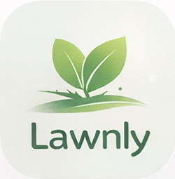

<!DOCTYPE html>
<html lang="it">
<head>
<meta charset="utf-8">
<meta name="viewport" content="width=device-width,initial-scale=1,maximum-scale=1,user-scalable=no,viewport-fit=cover">
<meta name="apple-mobile-web-app-capable" content="yes">
<meta name="apple-mobile-web-app-status-bar-style" content="black-translucent">
<meta name="theme-color" content="#0e3220">
<meta name="description" content="Lawnly — Love only your Lawn. Il tuo assistente AI per un prato perfetto.">
<meta property="og:title" content="Lawnly">
<meta property="og:description" content="Love only your Lawn">
<title>Lawnly — Love only your Lawn</title>
<link rel="preconnect" href="https://fonts.googleapis.com">
<link href="https://fonts.googleapis.com/css2?family=Inter:wght@400;500;600;700;800&display=swap" rel="stylesheet">
<script src="https://cdn.jsdelivr.net/npm/preact@10/dist/preact.umd.js"></script>
<script src="https://cdn.jsdelivr.net/npm/preact@10/hooks/dist/hooks.umd.js"></script>
<script src="https://cdn.jsdelivr.net/npm/htm@3/dist/htm.umd.js"></script>
<script src="https://cdn.jsdelivr.net/npm/preact@10/compat/dist/compat.umd.js"></script>
<script src="https://cdn.jsdelivr.net/npm/@supabase/supabase-js@2.49.4/dist/umd/supabase.min.js"></script>
<link rel="stylesheet" href="https://cdn.jsdelivr.net/npm/weather-icons@2.0.11/css/weather-icons.min.css">
<style>
:root{--bg:#F2F4F0;--card:#FFFFFF;--green:#6B9E6B;--green-l:rgba(107,158,107,0.10);--green-b:rgba(107,158,107,0.22);--green-dark:#4A7A4A;--muted:#9AAA96;--text:#1A2218;--r:1.4rem;--r-sm:1rem;--border:rgba(107,158,107,0.18);--shadow:0 4px 24px rgba(0,0,0,0.06);--glass:rgba(255,255,255,.50);--glass-strong:rgba(255,255,255,.66);--glass-line:rgba(255,255,255,.42);--blur:20px}
*{box-sizing:border-box;margin:0;padding:0;-webkit-tap-highlight-color:transparent}
body{font-family:'Inter',system-ui,-apple-system,sans-serif;background:radial-gradient(circle at top,#f7f5ef 0%,#f1eee6 48%,#ebe7de 100%);color:var(--text);min-height:100vh;-webkit-font-smoothing:antialiased}
button,input,select,textarea{font-family:inherit;font-size:14px}
.card{background:linear-gradient(180deg,rgba(255,255,255,.9),rgba(255,255,255,.72));border:1px solid var(--glass-line);border-radius:var(--r);box-shadow:var(--shadow);padding:20px;backdrop-filter:blur(calc(var(--blur) - 4px));-webkit-backdrop-filter:blur(calc(var(--blur) - 4px))}
.glass{background:var(--glass);border:1px solid var(--glass-line);border-radius:var(--r);box-shadow:var(--shadow);backdrop-filter:blur(var(--blur));-webkit-backdrop-filter:blur(var(--blur));padding:20px}
.dark-card{background:linear-gradient(180deg,rgba(255,255,255,.62),rgba(244,241,232,.48));border:1px solid var(--glass-line);border-radius:32px;padding:20px;color:var(--text);box-shadow:0 18px 50px rgba(72,60,40,.12);backdrop-filter:blur(calc(var(--blur) + 4px));-webkit-backdrop-filter:blur(calc(var(--blur) + 4px))}
.btn{padding:12px 18px;border-radius:999px;font-weight:500;font-size:13px;cursor:pointer;border:1px solid rgba(255,255,255,.38);transition:all .2s ease;display:inline-flex;align-items:center;gap:6px;justify-content:center;backdrop-filter:blur(calc(var(--blur) - 2px));-webkit-backdrop-filter:blur(calc(var(--blur) - 2px));box-shadow:0 8px 24px rgba(60,50,36,.08)}
.btn-p{background:linear-gradient(180deg,rgba(138,188,136,.96),rgba(122,173,120,.96));color:#fff}.btn-p:hover{filter:brightness(.98)}.btn-p:active{transform:scale(.98)}.btn-p:disabled{opacity:.45;cursor:not-allowed;transform:none}
.btn-s{background:rgba(255,255,255,.68);color:var(--text);border:1px solid rgba(255,255,255,.55)}.btn-s:disabled{opacity:.4;cursor:not-allowed}
.btn-ghost{background:rgba(255,255,255,.55);border:1px solid rgba(255,255,255,.55);color:var(--text)}.btn-ghost:disabled{opacity:.3}
.btn-block{width:100%}
/* PATCH 05e — avviso GDD parziale (Archive API non disponibile) */
.gdd-warning-banner{background:#fef3c7;border:1px solid #fbbf24;border-radius:6px;padding:6px 10px;margin-bottom:8px;font-size:11px;color:#92400e;display:flex;align-items:center;gap:6px;line-height:1.45}
/* PATCH v7.7 — animation spinner refresh meteo */
@keyframes lawnly-spin{from{transform:rotate(0deg)}to{transform:rotate(360deg)}}
.lawnly-pending-card{background:linear-gradient(90deg,#f9fafb 0%,#f3f4f6 50%,#f9fafb 100%);background-size:200% 100%;animation:lawnly-shimmer 1.5s ease-in-out infinite;border-radius:10px;padding:16px;text-align:center;color:#6b7280;font-size:12px;display:flex;align-items:center;justify-content:center;gap:10px;min-height:80px}
@keyframes lawnly-shimmer{0%{background-position:200% 0}100%{background-position:-200% 0}}
/* PATCH v7.4 — banner climate compatibility (specie vs clima) */
.climate-warning-banner{background:#fee2e2;border:1px solid #f87171;border-radius:8px;padding:10px 12px;margin-bottom:10px;font-size:11px;color:#991b1b;display:flex;align-items:flex-start;gap:8px;line-height:1.45}
.climate-warning-banner.marginal{background:#fef3c7;border-color:#fbbf24;color:#92400e}
.climate-warning-banner strong{display:block;font-size:12px;margin-bottom:3px;letter-spacing:.01em}
/* PATCH 05f — badge stato stagione descrittivo */
.season-badge{display:inline-block;padding:3px 10px;border-radius:10px;font-size:12px;font-weight:600;text-align:center;max-width:min(100%,220px);line-height:1.35}
.season-badge.green{background:#d1fae5;color:#065f46}
.season-badge.yellow{background:#fef3c7;color:#78350f}
.season-badge.orange{background:#fed7aa;color:#9a3412}
.season-badge.red{background:#fecaca;color:#991b1b}
.season-badge.gray{background:#e5e7eb;color:#374151}
/* PATCH 05h — card collassabili universali */
.collapsible-card{background:var(--card);border-radius:var(--card-radius,12px);margin-bottom:12px;overflow:hidden;border:1px solid var(--card-border,rgba(0,0,0,.05));box-shadow:0 1px 3px rgba(0,0,0,.04)}
.collapsible-header{display:flex;align-items:center;justify-content:space-between;padding:12px 16px;cursor:pointer;user-select:none;min-height:44px;transition:background 150ms ease;outline:none}
.collapsible-header:hover{background:rgba(0,0,0,.02)}
.collapsible-header:focus-visible{background:rgba(0,0,0,.03);box-shadow:inset 0 0 0 2px var(--accent,#6B9E6B)}
.collapsible-title{display:flex;align-items:center;gap:8px;font-size:14px;font-weight:600;color:var(--text);text-transform:uppercase;letter-spacing:.3px}
.collapsible-icon{font-size:16px}
.collapsible-arrow{display:inline-block;font-size:12px;color:var(--muted,#888);transition:transform 200ms ease}
.collapsible-arrow.down{transform:rotate(90deg)}
.collapsible-arrow.right{transform:rotate(0deg)}
.collapsible-content{overflow:hidden;transition:max-height 250ms ease-out,opacity 200ms ease-out;opacity:1}
.collapsible-card.closed .collapsible-content{opacity:0}
.collapsible-card.open .collapsible-content{padding:0 16px 16px}
@media (max-width:380px){
  .collapsible-header{padding:14px 12px}
  .collapsible-card.open .collapsible-content{padding:0 12px 14px}
}
.inp{width:100%;padding:14px 16px;border:1px solid rgba(255,255,255,.55);border-radius:20px;background:rgba(255,255,255,.62);outline:none;color:var(--text);transition:all .2s ease;font-size:14px;box-shadow:inset 0 1px 0 rgba(255,255,255,.55),0 8px 24px rgba(72,60,40,.04);backdrop-filter:blur(18px);-webkit-backdrop-filter:blur(18px)}
.inp:focus{border-color:rgba(122,173,120,.42);background:rgba(255,255,255,.86);box-shadow:0 0 0 4px rgba(122,173,120,.08),0 8px 24px rgba(72,60,40,.04)}
.inp-sm{padding:10px 12px;font-size:13px}
textarea.inp{resize:vertical;min-height:70px}
.tag{display:inline-block;font-size:10px;font-weight:600;padding:4px 10px;border-radius:999px}
.badge{display:inline-flex;align-items:center;gap:5px;font-size:10px;font-weight:700;padding:6px 11px;border-radius:999px}
.chip{padding:7px 13px;border-radius:999px;border:1px solid var(--border);font-size:11px;font-weight:600;cursor:pointer;background:var(--card);color:var(--text);transition:all .2s ease;box-shadow:0 1px 8px rgba(0,0,0,.03)}
.chip.active{background:var(--green);color:#fff;border-color:transparent}.chip:active{transform:scale(.97)}
.pbar{height:6px;background:rgba(122,173,120,.12);border-radius:999px;overflow:hidden}
.pbar-fill{height:100%;border-radius:999px;transition:width .6s ease}
header{position:sticky;top:0;z-index:100;background:transparent;backdrop-filter:none;-webkit-backdrop-filter:none}
.hdr-top{max-width:960px;margin:0 auto;padding:14px 16px 8px;display:flex;align-items:center;justify-content:space-between}
.hdr-logo{display:flex;align-items:center;gap:10px;color:var(--text);font-weight:600;font-size:15px}
.hdr-live{display:flex;align-items:center;gap:6px;font-size:10px;color:var(--muted);letter-spacing:.08em;text-transform:uppercase}
.dot-live{width:7px;height:7px;border-radius:50%;background:var(--green);animation:pdot 2s ease-in-out infinite;flex-shrink:0;box-shadow:0 0 0 5px rgba(122,173,120,.12)}
.nav-scroll{display:none;justify-content:center;overflow-x:auto;-webkit-overflow-scrolling:touch;scrollbar-width:none}
.nav-scroll::-webkit-scrollbar{display:none}
.nav-inner{margin:0 auto;display:flex;gap:6px;padding:4px 12px 10px;width:max-content;min-width:100%;max-width:1200px;justify-content:center}
.nav-btn{display:flex;align-items:center;gap:5px;padding:10px 16px;border-radius:999px;font-size:12px;font-weight:500;border:1px solid rgba(255,255,255,.38);cursor:pointer;background:rgba(255,255,255,.54);color:var(--muted);transition:all .2s ease;white-space:nowrap;box-shadow:0 10px 24px rgba(72,60,40,.06);backdrop-filter:blur(calc(var(--blur) - 4px));-webkit-backdrop-filter:blur(calc(var(--blur) - 4px))}
.nav-btn.active{background:rgba(122,173,120,.9);color:#fff}
.nav-btn:not(.active):hover{color:var(--text)}
.bnav{display:none;position:fixed;bottom:12px;left:12px;right:12px;z-index:120;background:rgba(255,255,255,.56);backdrop-filter:blur(calc(var(--blur) + 8px));-webkit-backdrop-filter:blur(calc(var(--blur) + 8px));box-shadow:0 14px 40px rgba(72,60,40,.12);border:1px solid rgba(255,255,255,.42);border-radius:30px;padding:9px 8px calc(9px + env(safe-area-inset-bottom));justify-content:flex-start;overflow-x:auto;overflow-y:hidden;scroll-snap-type:x mandatory;-webkit-overflow-scrolling:touch;scrollbar-width:none}
.bnav::-webkit-scrollbar{display:none}
.bnav::after{content:'';position:absolute;right:0;top:0;bottom:0;width:30px;background:linear-gradient(to right, transparent, rgba(255,255,255,.7));pointer-events:none;border-radius:0 30px 30px 0}
.bnav-btn{display:flex;flex-direction:column;align-items:center;gap:4px;font-size:10px;font-weight:500;padding:8px 8px 12px;border-radius:18px;cursor:pointer;border:none;background:none;color:#a8aea6;transition:all .2s ease;position:relative;min-width:58px}
.bnav-btn{scroll-snap-align:start;flex:0 0 auto;min-width:66px}
.bnav-btn.active{color:var(--green)}
.bnav-btn.active::after{content:'';position:absolute;bottom:2px;left:50%;transform:translateX(-50%);width:6px;height:6px;border-radius:50%;background:var(--green)}
.bnav-btn:active{transform:scale(.95)}
.ob-overlay{position:fixed;inset:0;z-index:200;background:rgba(237,247,240,.97);backdrop-filter:blur(12px);display:flex;align-items:flex-start;justify-content:center;padding:12px;overflow-y:auto}
.ob-card{width:100%;max-width:480px;background:#fff;border-radius:1.5rem;box-shadow:0 20px 60px rgba(26,58,42,.14);overflow:hidden;margin:auto}
.ob-steps{display:flex;justify-content:space-between;padding:14px 20px 0}
.step-dot{width:26px;height:26px;border-radius:50%;display:flex;align-items:center;justify-content:center;font-size:11px;font-weight:700;border:2px solid var(--border);color:var(--muted);transition:all .25s;flex-shrink:0}
.step-dot.done{background:var(--green);border-color:var(--green);color:#fff}
.step-dot.current{border-color:var(--green);color:var(--green);background:rgba(45,106,79,.08)}
.step-dot.inactive{opacity:.28}
.ob-body{padding:14px 20px 6px}
.ob-title{font-size:17px;font-weight:800;margin-bottom:3px}
.ob-sub{font-size:12px;color:var(--muted)}
.ob-content{padding:0 20px 4px}
.ob-footer{padding:12px 20px 18px;display:flex;align-items:center;justify-content:space-between;gap:12px}
.ob-step-count{font-size:12px;color:var(--muted);font-family:monospace}
.radio-card{width:100%;display:flex;align-items:flex-start;gap:12px;padding:11px 13px;border-radius:.9rem;border:2px solid var(--border);text-align:left;cursor:pointer;background:none;transition:all .13s}
.radio-card.sel{border-color:var(--green);background:rgba(45,106,79,.05)}.radio-card:active{transform:scale(.99)}
.radio-dot{width:11px;height:11px;border-radius:50%;background:var(--border);margin-top:3px;flex-shrink:0;transition:background .13s}
.radio-card.sel .radio-dot{background:var(--green)}
.expo-btn{flex:1;padding:8px 5px;border-radius:.75rem;border:2px solid var(--border);cursor:pointer;background:#fff;color:var(--text);font-size:11px;font-weight:600;transition:all .13s;display:flex;flex-direction:column;align-items:center;gap:2px}
.expo-btn.active{background:var(--green);border-color:var(--green);color:#fff}.expo-btn:active{transform:scale(.96)}
.addr-sug{position:absolute;z-index:999;top:100%;left:0;right:0;background:#fff;border:1px solid var(--border);border-radius:.9rem;box-shadow:0 8px 30px rgba(26,58,42,.12);margin-top:4px;overflow:hidden;max-height:220px;overflow-y:auto}
.addr-item{width:100%;text-align:left;padding:10px 13px;font-size:12px;cursor:pointer;border:none;background:none;border-bottom:1px solid rgba(150,200,170,.1);display:flex;gap:8px;align-items:flex-start;transition:background .1s}
.addr-item:hover{background:rgba(45,106,79,.05)}.addr-item:last-child{border-bottom:none}
.lang-btn{display:flex;align-items:center;gap:8px;padding:11px 15px;border-radius:.9rem;border:2px solid var(--border);background:none;cursor:pointer;font-size:14px;font-weight:600;transition:all .13s}
.lang-btn.active{border-color:var(--green);background:rgba(45,106,79,.05);color:var(--green)}
.diag-scroll{max-height:60vh;overflow-y:auto;padding-right:4px;scrollbar-width:thin}
.diag-scroll::-webkit-scrollbar{width:3px}
.diag-scroll::-webkit-scrollbar-thumb{background:rgba(45,106,79,.2);border-radius:99px}
.photo-row{display:flex;align-items:center;gap:10px;border:1px solid var(--border);border-radius:.85rem;padding:9px 13px;background:rgba(240,250,245,.5);margin-bottom:6px}
.photo-lbl{flex:1;display:flex;align-items:center;gap:8px;padding:7px 11px;border-radius:.7rem;border:1px dashed rgba(45,106,79,.3);cursor:pointer;font-size:12px;font-weight:600;color:var(--green);background:none;transition:background .13s}
.photo-lbl:hover{background:rgba(45,106,79,.06)}
main{max-width:960px;margin:0 auto;padding:8px 14px 0}
.page{padding-bottom:120px}
.sec-label{font-size:10px;font-weight:500;letter-spacing:.5px;color:var(--muted);text-transform:uppercase;margin-bottom:12px}
.grid-2{display:grid;grid-template-columns:1fr 1fr;gap:10px}
.grid-3{display:grid;grid-template-columns:repeat(3,1fr);gap:8px}
.grid-5{display:grid;grid-template-columns:repeat(5,1fr);gap:8px}
.flex-row{display:flex;align-items:center;gap:8px}
.flex-between{display:flex;align-items:center;justify-content:space-between}
.flex-wrap{display:flex;flex-wrap:wrap;gap:6px}
.stat-box{background:rgba(255,255,255,.56);border:1px solid rgba(255,255,255,.4);border-radius:20px;padding:14px 10px;text-align:center;box-shadow:0 10px 24px rgba(72,60,40,.06);backdrop-filter:blur(16px);-webkit-backdrop-filter:blur(16px)}
.stat-val{font-size:16px;font-weight:300;color:var(--text)}
.stat-lbl{font-size:9px;color:var(--muted);margin-top:4px;text-transform:uppercase;letter-spacing:.08em;font-weight:500}
.treat-card{background:var(--card);border-radius:var(--r);border:1px solid var(--border);padding:14px;margin-bottom:8px}
.treat-card.cur{border-left:3px solid var(--green)}.treat-card.past{border-left:3px solid #cbd5e1}.treat-card.fut{border-left:3px solid #e2e8f0}
.month-lbl{font-size:11px;font-weight:700;color:var(--muted);text-transform:uppercase;letter-spacing:.08em;padding-left:4px;margin-bottom:8px;margin-top:14px}
.chat-area{min-height:300px;display:flex;flex-direction:column;gap:10px}
.msg-u{background:var(--green);color:#fff;border-radius:var(--r);border-bottom-right-radius:.2rem;padding:10px 14px;font-size:13px;line-height:1.65;max-width:86%;margin-left:auto;white-space:pre-wrap}
.msg-a{background:#fff;border:1px solid rgba(150,200,170,.3);border-radius:var(--r);border-bottom-left-radius:.2rem;padding:10px 14px;font-size:13px;line-height:1.65;max-width:86%;box-shadow:0 1px 5px rgba(26,58,42,.06);white-space:pre-wrap}
.msg-row-u{display:flex;justify-content:flex-end}
.msg-row-a{display:flex;align-items:flex-start;gap:8px}
.ai-av{width:28px;height:28px;border-radius:.5rem;background:rgba(45,106,79,.14);display:flex;align-items:center;justify-content:center;font-size:15px;flex-shrink:0;margin-top:2px}
.forecast-scroll{display:flex;gap:8px;overflow-x:auto;-webkit-overflow-scrolling:touch;padding-bottom:4px}
.forecast-scroll::-webkit-scrollbar{height:3px}
.forecast-scroll::-webkit-scrollbar-thumb{background:rgba(45,106,79,.2);border-radius:99px}
.fc-card{flex-shrink:0;width:72px;text-align:center;background:rgba(255,255,255,.5);border:1px solid rgba(255,255,255,.4);border-radius:16px;padding:10px 6px;backdrop-filter:blur(16px);-webkit-backdrop-filter:blur(16px)}
.zones-grid{display:grid;grid-template-columns:repeat(auto-fill,minmax(130px,1fr));gap:8px}
.zone-card{background:rgba(255,255,255,.48);border:1px solid rgba(255,255,255,.42);border-radius:16px;padding:12px;backdrop-filter:blur(16px);-webkit-backdrop-filter:blur(16px)}
.stock-item{background:rgba(255,255,255,.54);border:1px solid rgba(255,255,255,.4);border-radius:var(--r);padding:14px;margin-bottom:8px;backdrop-filter:blur(16px);-webkit-backdrop-filter:blur(16px)}
.warn-box{background:rgba(255,246,220,.92);border:none;border-radius:var(--r);padding:16px;margin-bottom:12px;box-shadow:var(--shadow)}
.err-box{background:rgba(255,240,240,.88);border:none;border-radius:var(--r);padding:16px;margin-bottom:12px;box-shadow:var(--shadow)}
@keyframes spin{to{transform:rotate(360deg)}}
@keyframes pdot{0%,100%{opacity:1;transform:scale(1)}50%{opacity:.4;transform:scale(.82)}}
@keyframes fadeUp{from{opacity:.3;transform:translateY(10px) scale(.98)}to{opacity:1;transform:none}}
.spin{animation:spin .8s linear infinite}
.anim{animation:fadeUp .35s cubic-bezier(.2,.9,.22,1) both}
.spinner{width:17px;height:17px;border:2px solid rgba(255,255,255,.3);border-top-color:#fff;border-radius:50%;display:inline-block}
.spinner-g{border-color:rgba(45,106,79,.2);border-top-color:var(--green)}
::-webkit-scrollbar{width:4px;height:4px}::-webkit-scrollbar-track{background:transparent}::-webkit-scrollbar-thumb{background:rgba(82,183,136,.28);border-radius:99px}
@media(max-width:767px){header .nav-scroll{display:none!important}.bnav{display:flex!important}.grid-5{grid-template-columns:repeat(2,1fr)}}
@media(min-width:768px){
  header .nav-scroll{display:block}
  .bnav{display:none!important}
}
/* Mobile improvements */
@media(max-width:767px){
  .inp{font-size:16px}
  select.inp{font-size:16px}
  textarea.inp{font-size:16px}
  .btn{min-height:44px}
  .bnav-btn{min-height:52px;min-width:44px}
  main{padding:8px 10px 0}
  .ob-card{border-radius:1.25rem}
  .grid-2{grid-template-columns:1fr}
  .premium-grid{grid-template-columns:1fr}
  .metric-pill-row{gap:8px}
  .metric-pill{min-height:84px;padding:8px 5px}
  .metric-pill-value{font-size:13px}
  .metric-pill-label{font-size:8px}
  .sec-label{font-size:9px}
  .glass,.card,.dark-card{padding:16px}
  .bnav{left:8px;right:8px;bottom:8px}
}
@supports(-webkit-touch-callout:none){
  .page{padding-bottom:136px}
}
.metric-pill-row{display:grid;grid-template-columns:repeat(4,1fr);gap:10px;margin-top:-18px;position:relative;z-index:4}
.metric-pill{display:flex;flex-direction:column;align-items:center;justify-content:center;gap:5px;background:rgba(174,176,165,.42);border:1px solid rgba(255,255,255,.38);border-radius:999px;padding:10px 6px;box-shadow:0 12px 28px rgba(72,60,40,.08);min-height:92px;backdrop-filter:blur(16px);-webkit-backdrop-filter:blur(16px)}
.metric-pill-icon{width:38px;height:38px;border-radius:50%;display:flex;align-items:center;justify-content:center;background:rgba(255,255,255,.22);font-size:18px;box-shadow:inset 0 1px 0 rgba(255,255,255,.3)}
.metric-pill-value{font-size:14px;font-weight:400;color:#fff;text-shadow:0 1px 4px rgba(0,0,0,.12)}
.metric-pill-label{font-size:9px;color:#fff;letter-spacing:.03em;font-weight:500;text-transform:none}
.header-icon-btn{width:44px;height:44px;border:1px solid rgba(255,255,255,.42);border-radius:50%;background:rgba(255,255,255,.54);box-shadow:0 12px 30px rgba(72,60,40,.08);display:flex;align-items:center;justify-content:center;cursor:pointer;color:var(--text);backdrop-filter:blur(16px);-webkit-backdrop-filter:blur(16px)}
.score-ring{width:74px;height:74px;border-radius:50%;display:flex;align-items:center;justify-content:center;background:conic-gradient(var(--green) 0deg,var(--green) var(--deg),rgba(168,200,160,.18) var(--deg),rgba(168,200,160,.18) 360deg)}
.score-ring-inner{width:58px;height:58px;border-radius:50%;background:#fff;display:flex;align-items:center;justify-content:center;font-size:20px;font-weight:300}
.premium-grid{display:grid;grid-template-columns:1fr 1fr;gap:12px}
.soft-panel{background:rgba(255,255,255,.54);border:1px solid rgba(255,255,255,.4);border-radius:24px;padding:18px;box-shadow:0 12px 32px rgba(72,60,40,.08);backdrop-filter:blur(18px);-webkit-backdrop-filter:blur(18px)}
.page .glass,.page .card,.page .stock-item,.page .zone-card,.page .fc-card,.page .soft-panel{transition:all .2s ease}
.page .glass:hover,.page .card:hover{transform:translateY(-1px)}
.logo-mark{width:28px;height:28px;border-radius:10px;object-fit:cover;box-shadow:0 6px 18px rgba(72,60,40,.14)}
.logo-mark-lg{width:62px;height:62px;border-radius:18px;object-fit:cover;box-shadow:0 10px 30px rgba(72,60,40,.16)}
.segmented{display:flex;gap:6px;background:rgba(255,255,255,.34);border:1px solid rgba(255,255,255,.42);border-radius:999px;padding:6px}
.seg-btn{flex:1;padding:9px 10px;border-radius:999px;font-size:12px;font-weight:600;border:none;cursor:pointer;transition:all .2s ease;background:transparent;color:var(--muted)}
.seg-btn.active{background:rgba(122,173,120,.92);color:#fff}
.pill-filter{padding:7px 13px;border-radius:999px;font-size:11px;font-weight:600;border:1px solid rgba(255,255,255,.45);cursor:pointer;background:rgba(255,255,255,.54);color:var(--text);backdrop-filter:blur(12px);-webkit-backdrop-filter:blur(12px)}
.pill-filter.active{background:rgba(122,173,120,.9);color:#fff;border-color:transparent}
.month-block{}
.month-highlighted{box-shadow:0 0 0 2px #22c55e;border-radius:8px}
.quick-actions{box-sizing:border-box}
.qa-btn{flex:1;min-width:140px;padding:10px 14px;background:#fff;border:1px solid #e5e7eb;border-radius:8px;font-size:13px;cursor:pointer}
.qa-btn:hover{background:#f3f4f6}
.cal-filters{display:flex;flex-wrap:wrap;gap:6px;margin:10px 0;align-items:center}
.cal-filters .cal-filter-btn{padding:6px 12px;border-radius:999px;font-size:11px;font-weight:600;border:1px solid rgba(107,158,107,.3);background:rgba(255,255,255,.6);color:var(--text);cursor:pointer}
.cal-filters .cal-filter-btn.active{background:rgba(122,173,120,.9);color:#fff;border-color:transparent}
input[type=range]{width:100%;accent-color:var(--green);cursor:pointer;margin:6px 0;height:4px;border-radius:2px}
/* ── Weather Icons sizing (Step 10.7) ── */
.wx-icon{display:inline-flex;align-items:center;justify-content:center;line-height:1}
.wx-icon i{font-style:normal}
.wx-icon-sm i{font-size:18px}
.wx-icon-md i{font-size:28px}
.wx-icon-lg i{font-size:42px}
.wx-icon-xl i{font-size:64px}
.wx-icon-primary i{color:var(--green,#2d7a3e)}
.wx-icon-muted i{color:var(--muted,#8a8d85)}
/* ── Step 12.11: nav Lucide, modal sheet, griglie / meteo mobile ── */
.nav-lucide,.bnav-ico-lucide{display:inline-flex;align-items:center;justify-content:center;color:inherit;flex-shrink:0}
.nav-lucide svg,.bnav-ico-lucide svg{stroke:currentColor;opacity:.92}
/* Desktop: mantiene layout indicatori; mobile vedi media query */
.indicators-grid{display:flex;flex-direction:column;gap:8px}
.meteo-7day{display:flex;gap:8px;overflow-x:auto;padding-bottom:6px;-webkit-overflow-scrolling:touch;scrollbar-width:none}
@media (max-width:768px){
  .indicators-grid{display:grid;grid-template-columns:1fr;gap:8px}
  .quick-actions{flex-direction:column}
  .quick-actions .qa-btn{width:100%;min-width:0}
  .meteo-7day{overflow-x:auto;scroll-snap-type:x mandatory;-webkit-overflow-scrolling:touch}
  .meteo-7day>*{scroll-snap-align:start;flex-shrink:0;min-width:90px}
  .month-block{min-width:100%}
}
.modal-content{box-sizing:border-box}
@media (max-width:480px){
  .modal-content{width:100vw !important;height:auto;max-height:85vh;border-radius:16px 16px 0 0;position:fixed;bottom:0;left:0;right:0;top:auto;transform:none}
}

/* ── PATCH 04: VWC volumetric water content widget (Dashboard + Irrigazione) ── */
.card-soil-water{padding:14px;border-radius:14px;background:linear-gradient(135deg,#dbeafe 0%,#e0f2fe 100%);box-shadow:0 1px 2px rgba(30,64,175,.08)}
.card-soil-water .card-header{display:flex;justify-content:space-between;align-items:center;gap:8px;flex-wrap:wrap;margin-bottom:6px}
.card-soil-water .card-icon{font-size:14px}
.card-soil-water .card-title{font-size:11px;font-weight:700;letter-spacing:.05em;text-transform:uppercase;color:#1e40af;flex:1;min-width:0}
.vwc-display{text-align:center;margin:12px 0}
.vwc-value{font-size:42px;font-weight:700;line-height:1}
.vwc-label{font-size:14px;font-weight:600;margin-top:2px;text-transform:uppercase;letter-spacing:.5px}
.vwc-scale{position:relative;display:flex;height:22px;border-radius:11px;overflow:visible;margin:14px 0 26px 0;box-shadow:inset 0 1px 2px rgba(0,0,0,.10)}
.vwc-scale .vwc-zone:first-child{border-radius:11px 0 0 11px}
.vwc-scale .vwc-zone:last-child{border-radius:0 11px 11px 0}
.vwc-zone{transition:opacity .3s;height:22px}
.vwc-marker{position:absolute;top:-4px;width:4px;height:30px;background:#1e1e1e;transform:translateX(-50%);border-radius:2px;box-shadow:0 0 4px rgba(0,0,0,.4);pointer-events:none}
.vwc-tick{position:absolute;top:0;width:1px;height:22px;background:rgba(255,255,255,.7);transform:translateX(-50%);pointer-events:none}
.vwc-tick::after{content:attr(title);position:absolute;top:24px;left:50%;transform:translateX(-50%);font-size:9px;color:#555;white-space:nowrap;display:none}
.vwc-scale:hover .vwc-tick::after{display:block}
.vwc-zone-labels{display:flex;width:100%;font-size:9px;color:#666;margin-top:4px;margin-bottom:2px;user-select:none}
.vwc-zone-labels span{text-align:center;white-space:nowrap;overflow:hidden;text-overflow:ellipsis;min-width:0}
.vwc-advice{font-size:12px;color:#555;margin:8px 0 4px 0;font-style:italic}
.vwc-meta{font-size:11px;color:#888;margin-top:8px;line-height:1.5}
.badge-measured{background:#27ae60;color:#fff;padding:2px 8px;border-radius:10px;font-size:10px;font-weight:700;letter-spacing:.04em}
.badge-simulated{background:#f0a000;color:#fff;padding:2px 8px;border-radius:10px;font-size:10px;font-weight:700;letter-spacing:.04em}
.badge-calibration{font-size:11px;color:#666;margin-top:8px;padding:4px 8px;background:rgba(255,255,255,.55);border-radius:6px;display:inline-block}
@media (max-width:480px){
  .vwc-value{font-size:36px}
  .vwc-label{font-size:12px}
  .vwc-scale{margin:14px 0 24px 0}
}
/* PATCH 06a — badge Diagnosi Dashboard */
.diag-badge{display:inline-flex;align-items:center;gap:4px;padding:6px 10px;border-radius:.65rem;font-size:11px;font-weight:700}
.diag-badge.red{background:#fecaca;color:#991b1b}
.diag-badge.orange{background:#fed7aa;color:#9a3412}
.diag-badge.yellow{background:#fef3c7;color:#78350f}
.diag-badge.green{background:#d1fae5;color:#065f46}
.diag-badge.emerald{background:#a7f3d0;color:#064e3b}
</style>
</head>
<body>
<div id="app"></div>
<script type="module">
  import {
    PRODUCT_CATALOG,
    filterCatalogForContext,
    matchProductForOperation,
    getProductById,
    getFormatBySku
  } from './productCatalog.js';

  // Esponi su window per accesso dagli altri script/moduli
  window.__LAWNLY_CATALOG__ = PRODUCT_CATALOG;
  window.__LAWNLY_FILTER__ = filterCatalogForContext;
  window.__LAWNLY_MATCH__ = matchProductForOperation;
  window.__LAWNLY_GET_PRODUCT__ = getProductById;
  window.__LAWNLY_GET_FORMAT__ = getFormatBySku;

  // Evento per segnalare catalogo caricato
  window.dispatchEvent(new CustomEvent('lawnly-catalog-ready', { detail: { count: PRODUCT_CATALOG.length } }));
  console.log('[Lawnly] PRODUCT_CATALOG caricato:', PRODUCT_CATALOG.length, 'prodotti');
</script>
<script type="module">
import{
  LayoutDashboard,CloudSun,Calendar,Map as MapIcon,Grid3x3,Package,User,
  Droplet,Layers,Sparkles
}from'https://esm.sh/lucide-preact@0.460.0?deps=preact@10.19.6';
const NI=20,NS=1.5;
function navLuc(Icon){return html`<span class="nav-lucide"><${Icon} size=${NI} strokeWidth=${NS}/></span>`;}
function bnavLuc(Icon){return html`<span class="bnav-ico-lucide"><${Icon} size=${NI} strokeWidth=${NS}/></span>`;}

/* ═══════════════════════════════════════════════════════
   CONFIGURAZIONE SERVIZIO
   Inserisci qui la tua chiave Anthropic API.
   Gli utenti finali non vedono né configurano nulla.
═══════════════════════════════════════════════════════ */

/* ══════════════════════════════════════════════════
   SUPABASE CONFIG — inserisci URL e chiave anonima
   (vedi guida setup per creare il progetto gratuito)
══════════════════════════════════════════════════ */
const SUPABASE_URL = 'https://nioorknwpvjxldnxzjzh.supabase.co';   // es. https://xxxxx.supabase.co
const SUPABASE_KEY = 'sb_publishable__FCiFm3E01ZwViDgSWTCXw_dmYyIuc6';
const AI_PROXY_URL = `${SUPABASE_URL}/functions/v1/ai-proxy`;        // la chiave "anon public"

let supa = null;
let currentUserId = null;
try {
  if (!SUPABASE_URL.includes('INSERISCI') && !SUPABASE_KEY.includes('INSERISCI')) {
    supa = supabase.createClient(SUPABASE_URL, SUPABASE_KEY);
  }
} catch(e) { console.warn('[Supabase init error]', e.message); supa = null; }

/* ── Sync al cloud (debounced 2s) ── */
let syncTimer = null;
async function syncCloud(userId, data){
  if(!supa||!userId)return;
  clearTimeout(syncTimer);
  syncTimer=setTimeout(async()=>{
    try{await supa.from('garden_data').upsert({user_id:userId,data,updated_at:new Date().toISOString()},{onConflict:'user_id'});}
    catch(e){console.warn('[sync]',e.message);}
  },2000);
}
async function loadCloud(userId){
  if(!supa||!userId)return{status:'no-supa',data:null};
  try{
    const{data,error,status}=await supa.from('garden_data').select('data').eq('user_id',userId).maybeSingle();
    if(error){
      const noRecord=status===406||error.code==='PGRST116'||/0 rows|No rows/i.test(error.message||'');
      if(noRecord)return{status:'empty',data:null};
      console.warn('[loadCloud] error',error.message||error);
      return{status:'error',data:null,error};
    }
    if(data?.data)return{status:'ok',data:data.data};
    return{status:'empty',data:null};
  }catch(e){
    console.warn('[loadCloud] throw',e?.message||e);
    return{status:'error',data:null,error:e};
  }
}
async function loadCloudWithRetry(userId,attempts=3){
  for(let i=0;i<attempts;i++){
    const r=await loadCloud(userId);
    if(r.status==='ok'||r.status==='empty')return r;
    await new Promise(res=>setTimeout(res,500*(i+1)));
  }
  return{status:'error',data:null};
}
function isProfileConfigured(p){
  if(!p)return false;
  const hasName=Boolean((p.gardenName||'').trim?.());
  const hasLocation=Number.isFinite(p.lat)&&Number.isFinite(p.lon);
  const hasArea=(Number(p.totalArea)||0)>0||(Array.isArray(p.zones)&&p.zones.length>0);
  return p.onboardingCompleted===true&&hasName&&hasLocation&&hasArea;
}
function hasValidGardenData(cloudData){
  if(!cloudData||cloudData.reset===true)return false;
  return isProfileConfigured(cloudData.profile);
}
async function markCloudReset(userId){
  if(!supa||!userId)return;
  try{
    await supa.from('garden_data').upsert({
      user_id:userId,
      data:{reset:true,resetAt:new Date().toISOString(),profile:{...DEF_PROF,onboardingCompleted:false}},
      updated_at:new Date().toISOString()
    },{onConflict:'user_id'});
  }catch(e){console.warn('[markCloudReset]',e?.message||e);}
}

/* PATCH 05d — eliminazione righe utente su tabelle opzionali (best-effort; RLS/schema dipendenti) */
const LAWNLY_USER_TABLES_WIPE=[
  'irrigations','soil_measurements','zone_photos','zone_notes','zones','gardens',
  'calendar_operations','product_inventory','inventory_packages','treatment_history'
];
async function wipeSupabaseUserTables(userId){
  if(!supa||!userId)return [];
  const wipeResults=[];
  for(const table of LAWNLY_USER_TABLES_WIPE){
    try{
      const{error,count}=await supa.from(table).delete({count:'exact'}).eq('user_id',userId);
      if(error){
        console.warn(`[Lawnly] Failed to wipe ${table}:`,error.message);
        wipeResults.push({table,status:'failed',error:error.message});
      }else{
        const rowsDeleted=count??0;
        console.log(`[Lawnly] Wiped ${table}: ${rowsDeleted} rows`);
        wipeResults.push({table,status:'ok',rowsDeleted});
      }
    }catch(e){
      console.warn(`[Lawnly] Exception wiping ${table}:`,e?.message||e);
      wipeResults.push({table,status:'exception',error:e?.message||String(e)});
    }
  }
  console.log('[Lawnly] Reset garden tables wipe complete:',wipeResults);
  return wipeResults;
}

/* ═══════════════════════════════════════════════════════
   APP CODE — non modificare sotto questa riga
═══════════════════════════════════════════════════════ */
const {h,render,Fragment}=preact;
const {useState,useEffect,useRef,useMemo,useCallback}=preactHooks;
const {createPortal}=window.preactCompat||window.preact||{};
if(!createPortal)console.warn('[Lawnly] createPortal non disponibile, fallback inline');
const html=htm.bind(h);
const S={get:(k,d=null)=>{try{const v=localStorage.getItem(k);return v!=null?JSON.parse(v):d}catch{return d}},set:(k,v)=>{try{localStorage.setItem(k,JSON.stringify(v))}catch{}}};

/* PATCH 05d — Storico irrigazioni limitato al “giardino corrente” (CASO 2: filtro su gardenCreatedAt) */
function filterIrrigationHistoryForGarden(entries,gardenData){
  const cut=gardenData?.gardenCreatedAt;
  if(!cut)return entries||[];
  const t0=new Date(cut).getTime();
  if(isNaN(t0))return entries||[];
  return(entries||[]).filter(e=>e&&new Date(e.timestamp).getTime()>=t0);
}
function getIrrigationHistoryForGarden(gardenData){
  return filterIrrigationHistoryForGarden(S.get('dss_irrigation_history',[])||[],gardenData);
}

/* ── Dati trattamenti ── */
const TR=[
  {id:'t01',w:8, mo:'Febbraio', ph:'Dormienza profonda',    pr:[{n:'Nutrattiva',c:'#22c55e'}],  d:{A:'2.5kg',B:'1kg',C:'0.9kg'},        n:'Stimolo radicale pre-risveglio',    tp:'treatment',me:'Foratura + sabbia silicea'},
  {id:'t02',w:10,mo:'Marzo',    ph:'Risveglio radicale',    pr:[{n:'Mico Power',c:'#a855f7'},{n:'Humic',c:'#92400e'}],d:{A:'50+80ml',B:'25+40ml',C:'20+35ml'},n:'Attivazione micorrize + humus',  tp:'treatment',ir:'dopo 12-24h'},
  {id:'t03',w:11,mo:'Marzo',    ph:'Risveglio radicale',    pr:[],d:{},n:'Elimina Poa annua — risemina buchetti',tp:'mechanic',me:'Risemina selettiva'},
  {id:'t04',w:12,mo:'Marzo',    ph:'Ripresa fogliare',      pr:[{n:'Sprint N',c:'#3b82f6'}],d:{A:'1725g',B:'585g',C:'480g'},n:'Primo fertilizzante azotato stagione',tp:'treatment'},
  {id:'t05',w:14,mo:'Aprile',   ph:'Ripresa fogliare',      pr:[{n:'FLY',c:'#f97316'}],d:{A:'60ml',B:'25ml',C:'20ml'},n:'Verifica finestra FLY (GDD 200-500)',tp:'treatment'},
  {id:'t06',w:15,mo:'Aprile',   ph:'Accestimento attivo',   pr:[{n:'Humic',c:'#92400e'},{n:'New Radical',c:'#0ea5e9'}],d:{A:'60+40ml',B:'25+15ml',C:'20+13ml'},n:'Zona C +15%',tp:'treatment',ir:'dopo 12-24h'},
  {id:'t07',w:19,mo:'Maggio',   ph:'Accestimento attivo',   pr:[{n:'Sprint N',c:'#3b82f6'}],d:{A:'1725g',B:'585g',C:'480g'},n:'Secondo azoto stagionale',tp:'treatment'},
  {id:'t08',w:22,mo:'Maggio',   ph:'Massima vigoria',       pr:[{n:'Help',c:'#06b6d4'},{n:'FLY',c:'#f97316'},{n:'Humic',c:'#92400e'}],d:{A:'40+60ml',B:'15+25ml',C:'12+20ml'},n:'Combo primavera',tp:'treatment'},
  {id:'t09',w:23,mo:'Giugno',   ph:'Massima vigoria',       pr:[{n:'FLY',c:'#f97316'}],d:{A:'60ml',B:'25ml',C:'20ml'},n:'Seconda finestra FLY',tp:'treatment'},
  {id:'t10',w:24,mo:'Giugno',   ph:'Massima vigoria',       pr:[{n:'First K',c:'#ef4444'}],d:{A:'1725g',B:'610g',C:'520g'},n:'Potassio pre-stress estivo',tp:'treatment'},
  {id:'t11',w:25,mo:'Giugno',   ph:'Transizione caldo',     pr:[{n:'Pre-Stress',c:'#0d9488'}],d:{A:'40+100ml',B:'15+40ml',C:'12+35ml'},n:'Pre-stress prioritario Zona C',tp:'treatment',ir:'dopo 12-24h'},
  {id:'t12',w:29,mo:'Luglio',   ph:'Estate attiva',         pr:[{n:'FLY',c:'#f97316'},{n:'Help',c:'#06b6d4'}],d:{A:'60+50ml',B:'25+20ml',C:'20+16ml'},n:'Irrigare dopo 2-3h',tp:'treatment'},
  {id:'t13',w:32,mo:'Agosto',   ph:'Stress termico',        pr:[{n:'Humic',c:'#92400e'},{n:'Pre-Stress',c:'#0d9488'}],d:{A:'90+70ml',B:'35+28ml',C:'28+22ml'},n:'Max stress agosto',tp:'treatment',ir:'dopo 12-24h'},
  {id:'t14',w:36,mo:'Settembre',ph:'Fine estate',           pr:[{n:'Mico Power',c:'#a855f7'},{n:'Nutrattiva',c:'#22c55e'}],d:{A:'2725+675g',B:'975+250g',C:'810+210g'},n:'Vitamine + top dress',tp:'treatment'},
  {id:'t15',w:38,mo:'Settembre',ph:'Autunno attivo',        pr:[{n:'Humic',c:'#92400e'}],d:{A:'50+45ml',B:'20+18ml',C:'16+14ml'},n:'Preparazione autunno',tp:'treatment'},
  {id:'t16',w:41,mo:'Ottobre',  ph:'Autunno attivo',        pr:[{n:'Nutrattiva',c:'#22c55e'}],d:{A:'2.5kg',B:'0.9kg',C:'0.75kg'},n:'Ultimo fertilizzante autunnale',tp:'treatment'},
  {id:'t17',w:43,mo:'Ottobre',  ph:'Pre-inverno',           pr:[{n:'First K',c:'#ef4444'}],d:{A:'3.5kg',B:'1.2kg',C:'1kg'},n:'Potassio per indurimento invernale',tp:'treatment'},
  {id:'t18',w:46,mo:'Novembre', ph:'Pre-inverno',           pr:[{n:'Mico Power',c:'#a855f7'}],d:{A:'50ml',B:'20ml',C:'16ml'},n:'Ultima micorriza stagionale',tp:'treatment'},
  {id:'t19',w:50,mo:'Dicembre', ph:'Dormienza',             pr:[{n:'Pro Start',c:'#eab308'}],d:{A:'92ml',B:'35ml',C:'28ml'},n:'Irrigare dopo 12-24h',tp:'treatment'},
];

const BOTTOS=[
  {id:'microterme',name:'🌿 Microterme',desc:'Festuca, Loietto, Poa, Kentucky Bluegrass · Nord Italia / Europa centrale',type:'cool',gddBase:5,details:['80–90% dei prati italiani','Crescita primavera + autunno','Sensibili al caldo estivo','Richiedono irrigazione costante','Buona resistenza al freddo']},
  {id:'macroterme',name:'☀️ Macroterme',desc:'Bermuda, Zoysia, Buffalo, St. Augustine · Sud Europa / zone calde',type:'warm',gddBase:10,details:['10–20% dei prati italiani','Crescita estiva attiva','Dormienza invernale','Ottima resistenza alla siccità','Richiedono meno irrigazione']},
  {id:'custom',name:'⚙️ Personalizzato',desc:'Imposta manualmente la temperatura base GDD (slider 0–15°C)',type:'cool',gddBase:5,details:[]},
];
const LANGUAGES=[{code:'it',label:'Italiano',flag:'🇮🇹'},{code:'en',label:'English',flag:'🇬🇧'},{code:'fr',label:'Français',flag:'🇫🇷'},{code:'de',label:'Deutsch',flag:'🇩🇪'},{code:'ru',label:'Русский',flag:'🇷🇺'}];
const EXPO_OPTS=[{v:'sun',l:'☀️ Pieno sole',d:'8–10+ ore'},{v:'semi',l:'🌤️ Mezzo sole',d:'5–8 ore'},{v:'partial',l:"🌥️ Mezz'ombra",d:'2–5 ore'},{v:'shade',l:'🌳 Ombra',d:'0–2 ore'}];
const EXPO_ICONS={sun:'☀️',semi:'🌤️',partial:'🌥️',shade:'🌳'};
const EXPO_DESC={
  sun:     'Cielo aperto, quasi nessuna ombra durante la giornata',
  semi:    'Manca parte delle ore centrali oppure ombra per una fetta della giornata',
  partial: 'Sole limitato o intermittente, spesso filtrato da alberi',
  shade:   'Prevalentemente luce diffusa, sole diretto raro'
};
const ZONE_COLORS=['amber','emerald','sky','violet','rose','slate'];
const MNT_OPTS=[{id:'base',l:'🌱 Base',d:'Pochi interventi essenziali'},{id:'intermedio',l:'⚙️ Intermedio',d:'Cura mensile regolare'},{id:'avanzato',l:'🏆 Avanzato',d:'Cura intensiva stagionale'},{id:'professionale',l:'🎯 Professionale',d:'Protocollo agronomo completo'}];
const MULTI_GRP=[
  {id:'aspetto',l:'👁 Aspetto visivo',opts:['Verde uniforme','Zone gialle','Zone secche','Muschio','Erbacce diffuse','Diradamento'],single:false},
  {id:'problemi',l:'⚠️ Problemi evidenti',opts:['Funghi/macchie','Insetti','Zone allagate','Compattazione','Scarso drenaggio'],single:false},
  {id:'utilizzo',l:'🏡 Utilizzo del prato',opts:['Decorativo','Bambini','Animali','Sportivo','Calpestio intenso'],single:false},
  {id:'tempo',l:'⏱️ Tempo per manutenzione',opts:['1h/settimana','2-3h/settimana','4-6h/settimana','Illimitato'],single:true},
];
const GDD_PH=[
  {mn:0,mx:100,n:'Dormienza',e:'❄️'},{mn:100,mx:200,n:'Pre-emergenza',e:'🌱'},
  {mn:200,mx:350,n:'Crescita iniziale',e:'🌿'},{mn:350,mx:500,n:'Crescita attiva',e:'🍀'},
  {mn:500,mx:800,n:'Piena crescita',e:'🌳'},{mn:800,mx:1000,n:'Estate intensa',e:'☀️'},
  {mn:1000,mx:1300,n:'Stress estivo',e:'🔥'},{mn:1300,mx:9999,n:'Autunno',e:'🍂'},
];
const getPhase=g=>GDD_PH.find(p=>g>=p.mn&&g<p.mx)||GDD_PH[GDD_PH.length-1];

/* ── Stadi fisiologici dettagliati (per gddWindow e Dottor Verde) ─────── */
const GDD_BASE_BY_GRASS={
  microterme: 5,
  macroterme: 10,
  custom: 5
};
function getDefaultGddBase(grassType){
  const key=(grassType||'microterme').toLowerCase();
  return GDD_BASE_BY_GRASS[key]??5;
}
const GDD_MODEL={
  microterme:{tbase:5,toptMax:22},
  macroterme:{tbase:10,toptMax:30},
  custom:{tbase:5,toptMax:22}
};
const STAGES_MICRO=[
  {max:100, stage:'dormiente',       desc:'Prato in dormienza invernale'},
  {max:300, stage:'risveglio',       desc:'Risveglio vegetativo, radici attive'},
  {max:800, stage:'crescita_attiva', desc:'Crescita attiva primaverile'},
  {max:1500,stage:'maturita',        desc:'Prato maturo, crescita stabile'},
  {max:2200,stage:'stress_estivo',   desc:'Stress estivo, crescita rallentata'},
  {max:2800,stage:'ripresa_autunnale',desc:'Ripresa autunnale'},
  {max:1e9, stage:'pre_dormienza',   desc:'Preparazione alla dormienza'},
];
const STAGES_MACRO=[
  {max:200, stage:'dormiente',       desc:'Dormienza (prato giallo)'},
  {max:500, stage:'transizione',     desc:'Uscita dormienza, primi germogli'},
  {max:1200,stage:'crescita_attiva', desc:'Crescita vigorosa'},
  {max:2500,stage:'maturita',        desc:'Apice vegetativo'},
  {max:3200,stage:'rallentamento',   desc:'Rallentamento autunnale'},
  {max:1e9, stage:'pre_dormienza',   desc:'Preparazione dormienza'},
];
function growthStage(grassType,gdd){
  const table=grassType==='macroterme'?STAGES_MACRO:STAGES_MICRO;
  const base=getDefaultGddBase(grassType);
  const row=table.find(s=>gdd<s.max)||table[table.length-1];
  return{stage:row.stage,desc:row.desc,base,grassType};
}

/* PATCH v7.4 — Climate compatibility check specie vs latitudine.
   Microterme (Festuca/Lolium/Poa) richiedono inverno freddo + estate non torrida → climi temperati lat 30-65°.
   Macroterme (Bermuda/Zoysia/Paspalum) richiedono estate calda costante → climi caldi lat 0-40°.
   Restituisce assessment {suitability, warning} usato dalla Dashboard per banner informativo
   (mai bloccante). climateData opzionale per evoluzione futura con tMin/tMax Open-Meteo Archive. */
function assessClimateForGrass(grassType, lat, climateData) {
  const latAbs = Math.abs(parseFloat(lat) || 45);
  const gType = (grassType || 'microterme').toLowerCase();
  const tMin = climateData?.tMinYear;
  const tMax = climateData?.tMaxYear;
  const result = {
    suitability: 'good',
    warning: null,
    latAbs,
    grassType: gType,
    isTropical: latAbs < 23.5,
    isSubtropical: latAbs >= 23.5 && latAbs < 35,
    isTemperate: latAbs >= 35 && latAbs < 50,
    isCool: latAbs >= 50 && latAbs < 60,
    isPolar: latAbs >= 60
  };
  if (gType === 'microterme') {
    if (result.isTropical) {
      result.suitability = 'poor';
      result.warning = {
        title: 'Specie non adatta al clima locale',
        body: 'Le microterme (Festuca, Loietto, Poa) non sopravvivono in climi tropicali con temperature costantemente >25°C e alta umidità. Per questa zona considera macroterme: Bermuda (Cynodon), Zoysia o Paspalum. L\'app continua a funzionare, ma i consigli agronomici saranno limitati.'
      };
    } else if (result.isSubtropical && tMax != null && tMax > 38) {
      result.suitability = 'marginal';
      result.warning = {
        title: 'Estati estreme — stress prolungato',
        body: 'In questa zona le microterme soffrono lo stress estivo. Aspettati irrigazioni intensive in luglio-agosto e una pausa vegetativa estiva.'
      };
    }
  } else if (gType === 'macroterme') {
    if (result.isPolar || (result.isCool && tMin != null && tMin < -10)) {
      result.suitability = 'poor';
      result.warning = {
        title: 'Specie non adatta al clima locale',
        body: 'Le macroterme (Bermuda, Zoysia, Paspalum) non sopravvivono a inverni rigidi con temperature <-5°C prolungate. Per questa zona considera microterme: Festuca, Loietto, Poa. L\'app continua a funzionare, ma i consigli agronomici saranno limitati.'
      };
    } else if (result.isTemperate && tMin != null && tMin < -5) {
      result.suitability = 'marginal';
      result.warning = {
        title: 'Inverni rigidi — dormienza prolungata',
        body: 'Le macroterme in questa zona vanno in dormienza profonda da novembre a marzo. Considera overseeding con Loietto annuale per copertura invernale.'
      };
    }
  }
  return result;
}

/* PATCH 05f — stato GDD / fase fenologica single-source (Dashboard + Meteo + debug) */
const STAGES_MICROTERME_P5F=[
  {max:50,   key:'dormienza',     label:'Dormienza',         advice:'Riposo invernale. Nessuna operazione.'},
  {max:200,  key:'risveglio',     label:'Ripresa',           advice:'Risveglio vegetativo. Biostimolanti radicali e starter leggeri, zero stress.'},
  {max:400,  key:'accelerazione', label:'Accelerazione',     advice:'Crescita in accelerazione. Concimazione bilanciata NPK.'},
  {max:800,  key:'crescita',      label:'Crescita vigorosa', advice:'Periodo di massima crescita. Mantenimento NPK 12-6-6, sfalci regolari.'},
  {max:1200, key:'picco',         label:'Picco vegetativo',  advice:'Picco produttivo. Idratazione attenta, profilassi anti-stress.'},
  {max:1700, key:'stress',        label:'Stress estivo',     advice:'Stress termo-idrico. Riduci concimazione, irrigazioni notturne.'},
  {max:2200, key:'recupero',      label:'Recupero',          advice:'Recupero post-estate. Concimazione di ripresa, risemine eventuali.'},
  {max:99999,key:'preparazione',  label:'Preparazione',      advice:'Preparazione invernale. Concimazione potassica, ultimo sfalcio.'}
];
const STAGES_MACROTERME_P5F=[
  {max:100,  key:'dormienza',     label:'Dormienza',         advice:'Riposo invernale. Nessuna operazione.'},
  {max:400,  key:'risveglio',     label:'Ripresa',           advice:'Risveglio. Biostimolanti, attesa accelerazione.'},
  {max:800,  key:'accelerazione', label:'Accelerazione',     advice:'Crescita in accelerazione. Concimazione azotata.'},
  {max:1500, key:'crescita',      label:'Crescita vigorosa', advice:'Massima crescita. NPK e sfalci frequenti.'},
  {max:2500, key:'picco',         label:'Picco vegetativo',  advice:'Picco. Idratazione massima.'},
  {max:3500, key:'stress',        label:'Stress estivo',     advice:'Stress massimo. Gestione conservativa.'},
  {max:4500, key:'recupero',      label:'Recupero',          advice:'Recupero post-estate.'},
  {max:99999,key:'preparazione',  label:'Preparazione',      advice:'Preparazione dormienza autunnale.'}
];
function computeGddState(profile,gddCumulative,wx){
  const grassRaw=(profile?.grassMixture||profile?.grassType||'microterme').toLowerCase();
  const grassType=grassRaw==='macroterme'?'macroterme':grassRaw==='custom'?'custom':'microterme';
  const effectiveKind=grassType==='custom'?'microterme':grassType;
  const stages=effectiveKind==='macroterme'?STAGES_MACROTERME_P5F:STAGES_MICROTERME_P5F;
  const g=Math.max(0,Number(gddCumulative)||0);
  const currentStage=stages.find(s=>g<=s.max)||stages[stages.length-1];
  const gddBase=Number(profile?.gddBase??wx?.gddBase??getDefaultGddBase(grassType==='custom'?'microterme':grassType));
  const stageIndex=stages.findIndex(s=>s.key===currentStage.key);
  return{
    gdd:g,
    base:gddBase,
    grassType,
    stage:currentStage.key,
    stageLabel:currentStage.label,
    stageAdvice:currentStage.advice,
    stages:stages.map(s=>({key:s.key,label:s.label,max:s.max})),
    stageIndex:stageIndex>=0?stageIndex:0
  };
}

/* PATCH 05f — WMO weather_code → emoji (previsioni 7gg) */
function wmoCodeToIcon(code){
  const c=code!=null?Number(code):NaN;
  const ICONS={
    0:{icon:'☀️',label:'Sereno'},
    1:{icon:'🌤️',label:'Prevalentemente sereno'},
    2:{icon:'⛅',label:'Parzialmente nuvoloso'},
    3:{icon:'☁️',label:'Nuvoloso'},
    45:{icon:'🌫️',label:'Nebbia'},
    48:{icon:'🌫️',label:'Nebbia con brina'},
    51:{icon:'🌦️',label:'Pioviggine leggera'},
    53:{icon:'🌦️',label:'Pioviggine moderata'},
    55:{icon:'🌧️',label:'Pioviggine intensa'},
    56:{icon:'🌧️',label:'Pioviggine gelata leggera'},
    57:{icon:'🌧️',label:'Pioviggine gelata intensa'},
    61:{icon:'🌧️',label:'Pioggia leggera'},
    63:{icon:'🌧️',label:'Pioggia moderata'},
    65:{icon:'🌧️',label:'Pioggia intensa'},
    66:{icon:'🌧️',label:'Pioggia gelata leggera'},
    67:{icon:'🌧️',label:'Pioggia gelata intensa'},
    71:{icon:'❄️',label:'Neve leggera'},
    73:{icon:'❄️',label:'Neve moderata'},
    75:{icon:'❄️',label:'Neve intensa'},
    77:{icon:'🌨️',label:'Granuli di neve'},
    80:{icon:'🌦️',label:'Rovesci leggeri'},
    81:{icon:'🌧️',label:'Rovesci moderati'},
    82:{icon:'⛈️',label:'Rovesci violenti'},
    85:{icon:'🌨️',label:'Rovesci di neve leggeri'},
    86:{icon:'🌨️',label:'Rovesci di neve intensi'},
    95:{icon:'⛈️',label:'Temporale'},
    96:{icon:'⛈️',label:'Temporale con grandine leggera'},
    99:{icon:'⛈️',label:'Temporale con grandine intensa'}
  };
  if(!Number.isFinite(c))return{icon:'❓',label:'Sconosciuto'};
  if(ICONS[c])return ICONS[c];
  if(c>0&&c<=3)return ICONS[c];
  if(c>3&&c<=48)return ICONS[Math.round(c/10)*10]||{icon:'❓',label:'Sconosciuto'};
  return{icon:'❓',label:'Sconosciuto'};
}

function doyFromIso(ymd){
  try{
    const [Y,M,D]=String(ymd).slice(0,10).split('-').map(Number);
    if(!Y||!M||!D)return 1;
    const t=new Date(Y,M-1,D);
    const s=new Date(Y,0,0);
    return Math.max(1,Math.min(366,Math.floor((t-s)/86400000)));
  }catch{return 1}
}

/** Media T decennale sugli ultimi 30 DOY (ancorata a oggi, wrap anno bisestile semplificato 366) */
function normalTmean30dFromAvg(tmeanAvg){
  if(!tmeanAvg)return null;
  const pad=n=>String(n).padStart(2,'0');
  const now=new Date();
  const ymd=`${now.getFullYear()}-${pad(now.getMonth()+1)}-${pad(now.getDate())}`;
  const todayDoy=doyFromIso(ymd);
  let sTm=0,cTm=0;
  for(let k=0;k<30;k++){
    let dd=todayDoy-k;
    if(dd<1)dd+=366;
    const v=tmeanAvg[dd];
    if(v!=null&&!isNaN(v)){sTm+=v;cTm++;}
  }
  return cTm>0?sTm/cTm:null;
}

async function fetchGddHistoricalNormal(lat,lon,tbase){
  const cacheKey=`lawnly_gdd_normal_${lat.toFixed(4)}_${lon.toFixed(4)}_b${tbase}`;
  const TTL_MS=30*24*60*60*1000;
  try{
    const raw=localStorage.getItem(cacheKey);
    const cached=raw?JSON.parse(raw):null;
    if(cached&&cached.gddCum&&(Date.now()-cached.fetchedAt)<TTL_MS){
      if(cached.tmean30d==null&&cached.tmeanAvg)cached.tmean30d=normalTmean30dFromAvg(cached.tmeanAvg);
      return cached;
    }
  }catch{}
  const currentYear=new Date().getFullYear();
  const startYear=currentYear-10;
  const endYear=currentYear-1;
  const url=`https://archive-api.open-meteo.com/v1/archive?latitude=${lat}&longitude=${lon}&start_date=${startYear}-01-01&end_date=${endYear}-12-31&daily=temperature_2m_max,temperature_2m_min,precipitation_sum&timezone=auto`;
  try{
    const ctrl=new AbortController();
    const tid=setTimeout(()=>ctrl.abort(),12000);
    const res=await fetch(url,{signal:ctrl.signal});
    clearTimeout(tid);
    if(!res.ok)throw new Error(`HTTP ${res.status}`);
    const data=await res.json();
    const times=data.daily?.time||[];
    const tmax=data.daily?.temperature_2m_max||[];
    const tmin=data.daily?.temperature_2m_min||[];
    const rain=data.daily?.precipitation_sum||[];
    const dailyByDoy={};
    for(let i=0;i<times.length;i++){
      const mx=tmax[i],mn=tmin[i];
      if(mx==null||mn==null)continue;
      const doy=doyFromIso(times[i]);
      const tmean=(mx+mn)/2;
      const gdd=Math.max(0,tmean-tbase);
      const r=parseFloat(rain[i])||0;
      if(!dailyByDoy[doy])dailyByDoy[doy]={gddSum:0,rainSum:0,tmeanSum:0,count:0};
      dailyByDoy[doy].gddSum+=gdd;
      dailyByDoy[doy].rainSum+=r;
      dailyByDoy[doy].tmeanSum+=tmean;
      dailyByDoy[doy].count+=1;
    }
    const avgDailyGdd={},avgDailyRain={},tmeanAvg={};
    for(let doy=1;doy<=366;doy++){
      const b=dailyByDoy[doy];
      if(b&&b.count>0){
        avgDailyGdd[doy]=b.gddSum/b.count;
        avgDailyRain[doy]=b.rainSum/b.count;
        tmeanAvg[doy]=b.tmeanSum/b.count;
      }else{
        avgDailyGdd[doy]=0;
        avgDailyRain[doy]=0;
        tmeanAvg[doy]=null;
      }
    }
    const gddCum=[],rainCum=[];
    let gRun=0,rRun=0;
    gddCum[0]=0;rainCum[0]=0;
    for(let doy=1;doy<=366;doy++){
      gRun+=avgDailyGdd[doy]||0;
      rRun+=avgDailyRain[doy]||0;
      gddCum[doy]=gRun;
      rainCum[doy]=rRun;
    }
    const tmean30d=normalTmean30dFromAvg(tmeanAvg);
    const out={gddCum,rainCum,tmeanAvg,tmean30d,fetchedAt:Date.now(),yearsRange:`${startYear}-${endYear}`};
    try{localStorage.setItem(cacheKey,JSON.stringify(out));}catch{}
    return out;
  }catch(err){
    console.warn('[Lawnly] GDD historical normal fetch failed:',err.message);
    return null;
  }
}

function classifySeasonStatus(currentGddCum,normalGddCum,currentRainCum,normalRainCum,currentTmean30d,normalTmean30d){
  const curG=Number(currentGddCum)||0;
  const normG=Number(normalGddCum)||0;
  if(normalGddCum==null||normalGddCum===0||!Number.isFinite(normalGddCum)){
    return{label:'Dati storici non disponibili',color:'gray',primary:'unknown',modifiers:[],gddDeviation:0,rainDeviation:0,tempDeviation:0,currentGdd:curG,normalGdd:normG};
  }
  const gddDeviation=(currentGddCum-normalGddCum)/normalGddCum;
  const rainDeviation=(normalRainCum>0)?(currentRainCum-normalRainCum)/normalRainCum:0;
  const tempDeviation=(currentTmean30d!=null&&normalTmean30d!=null)?(currentTmean30d-normalTmean30d):0;
  let primary,color;
  if(gddDeviation>0.35){primary='Molto anticipata';color='red';}
  else if(gddDeviation>0.20){primary='Anticipata';color='orange';}
  else if(gddDeviation>0.10){primary='Leggermente anticipata';color='yellow';}
  else if(gddDeviation<-0.35){primary='Molto tardiva';color='red';}
  else if(gddDeviation<-0.20){primary='Tardiva';color='orange';}
  else if(gddDeviation<-0.10){primary='Leggermente tardiva';color='yellow';}
  else{primary='Regolare';color='green';}
  const modifiers=[];
  if(rainDeviation<-0.30)modifiers.push('siccitosa');
  else if(rainDeviation>0.30)modifiers.push('piovosa');
  if(tempDeviation>2.0)modifiers.push('calda');
  else if(tempDeviation<-2.0)modifiers.push('fredda');
  const label=primary+(modifiers.length>0?', '+modifiers.join(' e '):'');
  return{label,color,primary,modifiers,gddDeviation,rainDeviation,tempDeviation,currentGdd:curG,normalGdd:normG};
}

/* ── Modello GDD normalizzato + stress (Step 10.2) ── */
function computeGddDay(tmax,tmin,grassType='microterme'){
  const m=GDD_MODEL[grassType]||GDD_MODEL.microterme;
  const tmean=(tmax+tmin)/2;
  const tmeanCapped=Math.min(tmean,m.toptMax);
  return Math.max(0,tmeanCapped-m.tbase);
}

function computeStress(tmax,tmin){
  const heat=Math.max(0,(tmax-28)/10);
  const cold=Math.max(0,(5-tmin)/10);
  return{
    heat:Math.min(1,heat),
    cold:Math.min(1,cold),
    total:Math.min(1,heat+cold)
  };
}

function computeGrowthIndex(gddDay,stress){
  return gddDay*(1-stress.total);
}

function classifyPhase(gddNorm,stress){
  // Nota: campo `n` aggiunto come alias di `name` per retrocompatibilità
  // con callers legacy che leggono `.n` dalle fasi GDD_PH.
  if(stress.heat>0.7) return{id:'stress_estivo',name:'Stress estivo',n:'Stress estivo',e:'🔥'};
  if(stress.cold>0.7) return{id:'dormienza',name:'Dormienza',n:'Dormienza',e:'❄️'};
  if(gddNorm<0.2)     return{id:'ripresa',name:'Ripresa',n:'Ripresa',e:'🌱'};
  if(gddNorm<0.6)     return{id:'crescita_attiva',name:'Crescita attiva',n:'Crescita attiva',e:'🍀'};
  if(gddNorm<0.9)     return{id:'maturita',name:'Maturità',n:'Maturità',e:'🌳'};
  return{id:'riposo',name:'Riposo pre-dormienza',n:'Riposo pre-dormienza',e:'🍂'};
}

/* ── Indicatori climatici aggregati (Step 10.4) ────────────────────── */
function computeFusariumRisk(today,history){
  // Fusariosi: Tmedia 15-22 + RH > 80% + bagnatura fogliare
  const tmax=today?.tmax||0;
  const tmin=today?.tmin||0;
  const tmean=(tmax+tmin)/2;
  const rh=today?.humidity||60;
  if(tmean<10||tmean>25) return 0;
  if(rh<70) return 1;
  const wetDays=(history||[]).filter(d=>(d.rain||d.precipitation||0)>0.5).length;
  if(tmean>=15&&tmean<=22&&rh>=80&&wetDays>=2) return 4; // alto
  if(tmean>=12&&tmean<=24&&rh>=75) return 2;
  return 1;
}

function computeClimateIndicators(wx,prof,soilData){
  if(!wx||!prof) return null;
  const t=wx.todayData||{};
  const grassType=prof.grassMixture||'microterme';
  const tmx=t.tmax||0;
  const tmn=t.tmin||0;
  const stress=computeStress(tmx,tmn);
  const gddDay=computeGddDay(tmx,tmn,grassType);
  const growth=computeGrowthIndex(gddDay,stress);
  const gddNorm=wx.gddNorm||0;
  const phase=classifyPhase(gddNorm,stress);

  // Piogge aggregate
  const f7=wx.forecast7||[];
  const h5=wx.history||[];
  const rainLast7d=h5.reduce((s,d)=>s+(d.rain||d.precipitation||0),0);
  const rainNext7d=f7.reduce((s,d)=>s+(d.rain||d.precipitation_sum||0),0);
  const et0Today=t.et0||wx.et0Today||0;

  // Indicatori operativi derivati
  const humidityAvg=t.humidity||60;
  const fusariumRisk=computeFusariumRisk(t,h5);
  const gddTot=wx.gddTotal||0;
  const larvaeActivity=gddTot>200&&gddTot<600&&stress.heat<0.5?2:1;
  const flyWindow=gddTot>=200&&gddTot<=500;
  const mowingDue=growth>8; // pseudo
  const aerationWindow=gddNorm>0.15&&gddNorm<0.35&&stress.total<0.3;
  const fertilizationWindow=stress.total<0.4&&rainNext7d<40&&gddNorm>0.1;

  // Suolo
  const soilTheta=soilData?.humidity!=null?parseFloat(soilData.humidity)/100:null;
  const soilTempEst=(tmx+tmn)/2-2; // proxy

  // Meteo corrente (Step 10.7): condizione/intensità/label da WMO
  const wxCode=t.weathercode??wx?.current?.weathercode??null;
  const wxMetaToday=wxMeta(wxCode,t.is_day!==0);

  return{
    tMax:tmx,tMin:tmn,tMean:(tmx+tmn)/2,
    gddDay,gddCum:gddTot,gddAnnualBaseline:wx.gddBaseline,gddNorm,
    stressHeat:stress.heat,stressCold:stress.cold,stressTotal:stress.total,
    growthIndex:growth,condition:1-stress.total,
    phase:phase.id,phaseName:phase.name,phasePosition:gddNorm,
    rainLast7d,rainNext7d,et0Today,
    humidityAvg,windMax:t.windMax||t.wind||0,
    soilTheta,soilTempEst,
    fusariumRisk,larvaeActivity,flyWindow,mowingDue,
    aerationWindow,fertilizationWindow,
    weatherCondition:wxMetaToday.condition,
    weatherIntensity:wxMetaToday.intensity,
    weatherLabel:wxMetaToday.label,
    location:{lat:prof.lat,lon:prof.lon,city:prof.city},
    grassType,computedAt:new Date().toISOString()
  };
}

/* Regole operative derivate */
function deriveOperationalRules(ind){
  const rules=[];
  if(!ind) return rules;
  if(ind.stressHeat>0.7){
    rules.push({block:['fert_azotato','diserbo_liquido'],advise:['irr_raffrescamento'],reason:'Stress termico alto'});
  }
  if(ind.stressCold>0.7){
    rules.push({block:['qualunque'],advise:[],reason:'Dormienza'});
  }
  if(ind.fusariumRisk>=3){
    rules.push({block:['fert_azotato'],advise:['fungicida_curativo'],reason:'Rischio fusariosi alto'});
  }
  if(ind.flyWindow){
    rules.push({block:[],advise:['fly_bioattivato'],reason:'Finestra FLY attiva (GDD 200-500)'});
  }
  if(ind.windMax>30){
    rules.push({block:['liquidi_spruzzo'],advise:[],reason:'Vento eccessivo'});
  }
  if(ind.rainNext7d>40){
    rules.push({block:['granulari_idrosolubili'],advise:['attendere'],reason:'Piogge abbondanti attese'});
  }
  if(ind.growthIndex<2&&ind.gddNorm>0.2){
    rules.push({block:[],advise:['diagnosi_stress'],reason:'Crescita rallentata in fase attiva'});
  }
  return rules;
}

/* PATCH 05e — timezone IANA via Open-Meteo (nessun servizio DNS esterno TZ) */
async function resolveTimezone(lat,lon){
  try{
    const ctrl=new AbortController();
    const tid=setTimeout(()=>ctrl.abort(),6000);
    const r=await fetch(`https://api.open-meteo.com/v1/forecast?latitude=${lat}&longitude=${lon}&hourly=temperature_2m&forecast_days=1`,{signal:ctrl.signal});
    clearTimeout(tid);
    const j=await r.json();
    if(j&&typeof j.timezone==='string'&&j.timezone.length)return j.timezone;
  }catch(e){console.warn('[resolveTimezone]',e?.message||e);}
  return'Europe/Rome';
}
if(typeof window!=='undefined')window.__lawnly_resolveTimezone=resolveTimezone;

/* PATCH 05g — Climate YTD: GDD + pioggia cumulata + T media 30g (Archive API, cache 24h) */
async function fetchClimateYearToDate(lat,lon,tbase,year){
  const cacheKey=`lawnly_climate_ytd_${year}_${lat.toFixed(4)}_${lon.toFixed(4)}_b${tbase}`;
  const TTL_MS=24*60*60*1000;
  try{
    const raw=localStorage.getItem(cacheKey);
    const cached=raw?JSON.parse(raw):null;
    if(cached&&cached.gddCum!=null&&(Date.now()-cached.fetchedAt)<TTL_MS){
      console.log('[Lawnly] Climate YTD from cache:',{
        gddCum:cached.gddCum,
        rainCum:cached.rainCum,
        tmean30d:cached.tmean30d
      });
      return cached;
    }
  }catch{}
  const pad=n=>String(n).padStart(2,'0');
  const now=new Date();
  const endDate=(year===now.getFullYear())
    ?`${now.getFullYear()}-${pad(now.getMonth()+1)}-${pad(now.getDate())}`
    :`${year}-12-31`;
  const startDate=`${year}-01-01`;
  const url=`https://archive-api.open-meteo.com/v1/archive?latitude=${lat}&longitude=${lon}&start_date=${startDate}&end_date=${endDate}&daily=temperature_2m_max,temperature_2m_min,precipitation_sum&timezone=auto`;
  try{
    const ctrl=new AbortController();
    const tid=setTimeout(()=>ctrl.abort(),10000);
    let res;
    try{
      res=await fetch(url,{signal:ctrl.signal});
    }finally{
      clearTimeout(tid);
    }
    if(!res.ok)throw new Error(`HTTP ${res.status}`);
    const data=await res.json();
    const days=data.daily.time;
    const tmax=data.daily.temperature_2m_max;
    const tmin=data.daily.temperature_2m_min;
    const rain=data.daily.precipitation_sum;
    let gddCum=0;
    let rainCum=0;
    const tmeans=[];
    const dailyGdd=[];
    for(let i=0;i<days.length;i++){
      const mx=tmax[i],mn=tmin[i];
      if(mx==null||mn==null)continue;
      const tmean=(mx+mn)/2;
      const gdd=Math.max(0,tmean-tbase);
      gddCum+=gdd;
      rainCum+=(parseFloat(rain[i])||0);
      tmeans.push(tmean);
      dailyGdd.push({date:days[i],tmax:mx,tmin:mn,tmean,gdd});
    }
    const last30=tmeans.slice(-30);
    const tmean30d=last30.length>0?last30.reduce((a,b)=>a+b,0)/last30.length:null;
    const result={
      year,
      gddCum,
      cumulative:gddCum,
      rainCum,
      tmean30d,
      lastDate:days[days.length-1],
      daysCount:days.length,
      dailyGdd,
      source:'archive-api',
      fetchedAt:Date.now()
    };
    try{localStorage.setItem(cacheKey,JSON.stringify(result));}catch{}
    console.log('[Lawnly] Climate YTD fetched:',{
      gddCum:gddCum.toFixed(1),
      rainCum:rainCum.toFixed(1),
      tmean30d:tmean30d!=null?tmean30d.toFixed(1):'n/a'
    });
    return result;
  }catch(err){
    console.warn('[Lawnly] Climate YTD fetch failed:',err.message);
    return null;
  }
}

async function mergeGddYtdIntoWxPayload(data,lat,lon,gddBase,year){
  const ytd=await fetchClimateYearToDate(lat,lon,gddBase,year);
  const cum=ytd&&(ytd.gddCum!=null?ytd.gddCum:ytd.cumulative);
  if(ytd&&cum!==null&&!isNaN(cum)){
    data.gddTotal=Math.round(cum);
    data.gddSource='archive-ytd';
    data.gddYtdFetchedAt=ytd.fetchedAt;
    data.gddYtdDaysCount=ytd.daysCount;
    data.gddYtdLastDate=ytd.lastDate;
  }else{
    data.gddSource='forecast-partial';
    data.gddYtdFetchedAt=ytd?.fetchedAt??null;
    data.gddYtdDaysCount=ytd?.daysCount??null;
    data.gddYtdLastDate=ytd?.lastDate??null;
  }
  return data;
}

/* Baseline GDD annuo locale — cached 30gg */
async function getLocalGddBaseline(lat,lon,grassType='microterme'){
  const cacheKey=`dss_gdd_baseline_${lat.toFixed(2)}_${lon.toFixed(2)}_${grassType}`;
  const cached=S.get(cacheKey);
  if(cached&&(Date.now()-cached.ts<30*24*60*60*1000)){
    return cached.value;
  }
  const today=new Date();
  const threeYrs=new Date(today.getFullYear()-3,today.getMonth(),today.getDate());
  const start=threeYrs.toISOString().slice(0,10);
  const end=today.toISOString().slice(0,10);
  try{
    const url=`https://archive-api.open-meteo.com/v1/archive?latitude=${lat}&longitude=${lon}&start_date=${start}&end_date=${end}&daily=temperature_2m_max,temperature_2m_min&timezone=auto`;
    const d=await fetch(url).then(r=>r.json());
    const tmax=d.daily.temperature_2m_max;
    const tmin=d.daily.temperature_2m_min;
    let total=0;
    for(let i=0;i<tmax.length;i++){
      if(tmax[i]==null||tmin[i]==null) continue;
      total+=computeGddDay(tmax[i],tmin[i],grassType);
    }
    const years=tmax.length/365;
    const baseline=years>0?total/years:2000;
    S.set(cacheKey,{value:baseline,ts:Date.now()});
    return baseline;
  }catch(e){
    console.warn('[getLocalGddBaseline] fallback to default 2000:',e);
    return 2000; // fallback ragionevole per Nord Italia
  }
}

/* ── Cache 24h per wxData (key: year+grassType+lat+lon) ────────────────── */
/* PATCH v7.7 — parametro forceFresh per bypass cache (click bottone refresh utente) */
async function loadWxCached(lat,lon,year,gddBase,tz,grassType,forceFresh){
  const key=`dss_wx_cache_${year}_${grassType||'custom'}_${lat.toFixed(3)}_${lon.toFixed(3)}`;
  const now=Date.now();
  const cached=S.get(key,null);
  const FRESH_MS=60*60*1000; // 1h forecast; climate YTD ha cache 24h in fetchClimateYearToDate
  const logGddCfg=data=>{try{console.log('[Lawnly] GDD config:',{gddBase,grassType,year,gddCumulative:data?.gddTotal,gddYear:year,gddSource:data?.gddSource,formula:'Tmean = (Tmax+Tmin)/2; GDD_day = max(0, Tmean - Tbase)'});}catch{}};
  let data;
  let cacheAt=now;
  if(!forceFresh && cached && cached.at && (now-cached.at)<FRESH_MS && cached.data){
    data={...cached.data};
    cacheAt=cached.at;
    try{ console.log('[Lawnly v7.7] wx cache HIT (age='+Math.round((now-cached.at)/60000)+'min)'); }catch{}
  }else{
    if(forceFresh)try{ console.log('[Lawnly v7.7] wx FORCE FRESH fetch (cache bypass)'); }catch{}
    data=await loadWx(lat,lon,year,gddBase,tz);
    cacheAt=now;
  }
  await mergeGddYtdIntoWxPayload(data,lat,lon,gddBase,year);
  // Nuovi indicatori: normalizzato + stress + growth_index + phase (Step 10.2)
  try{
    const gt=grassType||'microterme';
    const baseline=await getLocalGddBaseline(lat,lon,gt);
    const gddCumulative=data?.gddTotal||0;
    const gddNorm=baseline>0?gddCumulative/baseline:0;
    const td=data?.todayData||{};
    const tmx=td.tmax!=null?td.tmax:0;
    const tmn=td.tmin!=null?td.tmin:0;
    const todayStress=computeStress(tmx,tmn);
    const todayGddDay=computeGddDay(tmx,tmn,gt);
    const growthIndex=computeGrowthIndex(todayGddDay,todayStress);
    data.gddNorm=gddNorm;
    data.gddBaseline=baseline;
    data.stress=todayStress;
    data.growthIndex=growthIndex;
    data.phase=classifyPhase(gddNorm,todayStress);
  }catch(e){console.warn('[loadWxCached] new indicators skipped:',e);}
  try{S.set(key,{at:cacheAt,data});}catch{}
  logGddCfg(data);
  return data;
}

const wxEmoji=c=>{if(c==null)return'❓';if(c===0)return'☀️';if(c<=3)return'⛅';if(c<=48)return'🌫️';if(c<=57)return'🌦️';if(c<=67)return'🌧️';if(c<=77)return'🌨️';return'⛈️'};

/* Nomi stile meteocons (Bas Milius) per API/log — rendering: METEOCON_NAME_TO_WI + Weather Icons CSS.
   Cartella public/meteocons/ assente: nessun file .svg in repo; mappati su classi wi-* correnti. */
const WMO_ICON_MAP={
  0:  {day:'clear-day',            night:'clear-night'},
  1:  {day:'partly-cloudy-day',    night:'partly-cloudy-night'},
  2:  {day:'partly-cloudy-day',    night:'partly-cloudy-night'},
  3:  {day:'cloudy',               night:'cloudy'},
  45: {day:'fog',                  night:'fog'},
  48: {day:'fog',                  night:'fog'},
  51: {day:'drizzle',              night:'drizzle'},
  53: {day:'drizzle',              night:'drizzle'},
  55: {day:'drizzle',              night:'drizzle'},
  56: {day:'sleet',                night:'sleet'},
  57: {day:'sleet',                night:'sleet'},
  61: {day:'rain',                 night:'rain'},
  63: {day:'rain',                 night:'rain'},
  65: {day:'rain',                 night:'rain'},
  66: {day:'sleet',                night:'sleet'},
  67: {day:'sleet',                night:'sleet'},
  71: {day:'snow',                 night:'snow'},
  73: {day:'snow',                 night:'snow'},
  75: {day:'snow',                 night:'snow'},
  77: {day:'hail',                 night:'hail'},
  80: {day:'rain',                 night:'rain'},
  81: {day:'rain',                 night:'rain'},
  82: {day:'extreme-rain',         night:'extreme-rain'},
  85: {day:'snow',                 night:'snow'},
  86: {day:'snow',                 night:'snow'},
  95: {day:'thunderstorms',        night:'thunderstorms'},
  96: {day:'thunderstorms-rain',   night:'thunderstorms-rain'},
  99: {day:'thunderstorms-rain',   night:'thunderstorms-rain'}
};
const WMO_TEXT_META={
  0:  {condition:'sereno',             intensity:'none',    label:'Sereno'},
  1:  {condition:'prev_sereno',        intensity:'leggera', label:'Prev. sereno'},
  2:  {condition:'parz_nuvoloso',      intensity:'media',   label:'Parz. nuvoloso'},
  3:  {condition:'coperto',            intensity:'piena',   label:'Coperto'},
  45: {condition:'nebbia',             intensity:'media',   label:'Nebbia'},
  48: {condition:'nebbia_brina',       intensity:'forte',   label:'Nebbia con brina'},
  51: {condition:'pioviggine',         intensity:'leggera', label:'Pioviggine leggera'},
  53: {condition:'pioviggine',         intensity:'media',   label:'Pioviggine moderata'},
  55: {condition:'pioviggine',         intensity:'forte',   label:'Pioviggine intensa'},
  56: {condition:'gelicidio',          intensity:'leggera', label:'Gelicidio leggero'},
  57: {condition:'gelicidio',          intensity:'forte',   label:'Gelicidio intenso'},
  61: {condition:'pioggia',            intensity:'leggera', label:'Pioggia leggera'},
  63: {condition:'pioggia',            intensity:'media',   label:'Pioggia moderata'},
  65: {condition:'pioggia',            intensity:'forte',   label:'Pioggia intensa'},
  66: {condition:'pioggia_gelata',     intensity:'leggera', label:'Pioggia gelata leggera'},
  67: {condition:'pioggia_gelata',     intensity:'forte',   label:'Pioggia gelata intensa'},
  71: {condition:'neve',               intensity:'leggera', label:'Nevicata leggera'},
  73: {condition:'neve',               intensity:'media',   label:'Nevicata moderata'},
  75: {condition:'neve',               intensity:'forte',   label:'Nevicata intensa'},
  77: {condition:'neve_granulare',     intensity:'leggera', label:'Neve granulare'},
  80: {condition:'rovesci',            intensity:'leggera', label:'Rovesci leggeri'},
  81: {condition:'rovesci',            intensity:'media',   label:'Rovesci moderati'},
  82: {condition:'rovesci_violenti', intensity:'forte',   label:'Rovesci violenti'},
  85: {condition:'rovesci_neve',       intensity:'leggera', label:'Rovesci di neve'},
  86: {condition:'rovesci_neve',       intensity:'forte',   label:'Rovesci di neve forti'},
  95: {condition:'temporale',         intensity:'media',   label:'Temporale'},
  96: {condition:'temporale_grandine',intensity:'media',  label:'Temporale con grandine'},
  99: {condition:'temporale_grandine', intensity:'forte',   label:'Temporale con grandine forte'}
};
const WMO_UNKNOWN={day:'na',night:'na',condition:'unknown',intensity:'none',label:'Non disponibile'};
function getMeteoIcon(wmoCode,isDay=true){
  const mapping=WMO_ICON_MAP[wmoCode]??WMO_ICON_MAP[1];
  return isDay?mapping.day:mapping.night;
}
function meteoconNameToWiClass(name,isDay=true){
  if(name==null||name==='na')return'wi-na';
  const t={
    'clear-day':'wi-day-sunny','clear-night':'wi-night-clear',
    'partly-cloudy-day':'wi-day-sunny-overcast','partly-cloudy-night':'wi-night-partly-cloudy',
    'cloudy':'wi-cloudy',
    'fog':isDay?'wi-day-fog':'wi-night-fog',
    'drizzle':isDay?'wi-day-sprinkle':'wi-night-alt-sprinkle',
    'sleet':isDay?'wi-day-sleet':'wi-night-alt-sleet',
    'rain':isDay?'wi-day-rain':'wi-night-alt-rain',
    'snow':isDay?'wi-day-snow':'wi-night-alt-snow',
    'hail':isDay?'wi-day-snow':'wi-night-alt-snow',
    'extreme-rain':isDay?'wi-day-storm-showers':'wi-night-alt-storm-showers',
    'thunderstorms':isDay?'wi-day-thunderstorm':'wi-night-alt-thunderstorm',
    'thunderstorms-rain':isDay?'wi-day-storm-showers':'wi-night-alt-storm-showers'
  };
  return t[name]||'wi-na';
}
function wxMeta(code,isDay=true){
  if(code==null){
    return{...WMO_UNKNOWN,iconClass:'wi-na',meteoconName:WMO_UNKNOWN.day};
  }
  const t=WMO_TEXT_META[code]||WMO_TEXT_META[1];
  const mName=getMeteoIcon(code,isDay);
  return{...t,iconClass:meteoconNameToWiClass(mName,isDay),meteoconName:mName};
}
function wxIcon(code,isDay=true,size='md',color=''){
  const meta=wxMeta(code,isDay);
  const sizeCls=`wx-icon-${size}`;
  const colorCls=color?`wx-icon-${color}`:'';
  return html`<span class="wx-icon ${sizeCls} ${colorCls}" title=${meta.label} aria-label=${meta.label}><i class="wi ${meta.iconClass}"></i></span>`;
}
function isDaytime(dateOrISO,wxData){
  if(wxData?.todayData?.is_day!=null) return wxData.todayData.is_day===1;
  const d=new Date(dateOrISO||Date.now());
  const h=d.getHours();
  return h>=6&&h<20;
}
const curWeek=()=>{const n=new Date();return Math.ceil((n-new Date(n.getFullYear(),0,1))/(7*24*60*60*1e3))};
const MONTH_NAMES=['Gennaio','Febbraio','Marzo','Aprile','Maggio','Giugno','Luglio','Agosto','Settembre','Ottobre','Novembre','Dicembre'];
const WEEKS_MAP={Gennaio:[1,4],Febbraio:[5,8],Marzo:[9,13],Aprile:[14,17],Maggio:[18,22],Giugno:[23,26],Luglio:[27,30],Agosto:[31,35],Settembre:[36,39],Ottobre:[40,44],Novembre:[45,48],Dicembre:[49,52]};
const MONTHS=MONTH_NAMES;
const WMAP=WEEKS_MAP;

/* ── API ── */
/* ═══════════════════════════════════════════════════════════════
   PATCH v8.2 — PIOGGIA MULTI-SOURCE (mediana per-giorno)
   Le fonti meteo divergono molto per coordinata: ERA5 a volte sovrastima
   (Trieste 196 vs 85 reali), a volte sottostima (Galliera 62 vs 72). Nessuna
   fonte singola vince. La MEDIANA per-giorno delle fonti disponibili e' ~2x piu'
   accurata di ERA5 da sola (validato su 9 citta' IT vs ilmeteo.it, MAE 13 vs 31mm)
   e uccide gli outlier. Geo-gating per evitare 429 su modelli fuori dominio.
   Fallback TOTALE a ERA5 se le fonti extra non rispondono: zero regressioni. */
async function fetchMultiSourceRainArrays(lat,lon,startDate,endDate,tz){
  /* PATCH v8.5 — Cache deterministica. La mediana multi-source dipende da QUALI fonti
     rispondono entro il timeout: senza cache il valore di pioggia (e quindi l'umidita)
     oscilla ad ogni reload. Cache 12h per coordinate arrotondate -> pioggia riproducibile. */
  const _ckey='lawnly_msr_v1';
  const _round=(v)=>Math.round(v*100)/100;
  try{
    const c=S.get(_ckey);
    if(c && c.byDay && c.lat===_round(lat) && c.lon===_round(lon) && c.end===endDate && (Date.now()-c.at)<12*3600*1000){
      try{ console.log('[Lawnly v8.5] multi-source rain CACHE HIT (age='+Math.round((Date.now()-c.at)/60000)+'min, '+Object.keys(c.byDay).length+' giorni)'); }catch{}
      return c.byDay;
    }
  }catch{}
  const inItaly = lat>=36 && lat<=47.3 && lon>=6.4 && lon<=18.7;
  const inFrance = lat>=41 && lat<=51.5 && lon>=-5.5 && lon<=9.8;
  const hrf=(model)=>`https://historical-forecast-api.open-meteo.com/v1/forecast?latitude=${lat}&longitude=${lon}&start_date=${startDate}&end_date=${endDate}&daily=precipitation_sum&timezone=${encodeURIComponent(tz)}&models=${model}`;
  const omJson=(url)=>fetch(url).then(r=>r.ok?r.json():null).catch(()=>null);
  const tasks=[
    omJson(hrf('ecmwf_ifs025')),
    omJson(hrf('icon_eu')),
    inItaly?omJson(hrf('italia_meteo_arpae_icon_2i')):Promise.resolve(null),
    inItaly?omJson(hrf('icon_d2')):Promise.resolve(null),
    inFrance?omJson(hrf('meteofrance_arome_france_hd')):Promise.resolve(null),
    (async()=>{ try{
      const ns=startDate.replace(/-/g,''), ne=endDate.replace(/-/g,'');
      const j=await fetch(`https://power.larc.nasa.gov/api/temporal/daily/point?parameters=PRECTOTCORR&community=AG&longitude=${lon}&latitude=${lat}&start=${ns}&end=${ne}&format=JSON`).then(r=>r.ok?r.json():null).catch(()=>null);
      const raw=j&&j.properties&&j.properties.parameter&&j.properties.parameter.PRECTOTCORR; if(!raw) return null;
      const m={}; Object.keys(raw).forEach(k=>{const v=raw[k]; if(v!=null&&v>-900){m[k.slice(0,4)+'-'+k.slice(4,6)+'-'+k.slice(6,8)]=v;}}); return {__nasa:m};
    }catch(e){return null;} })()
  ];
  const res=await Promise.all(tasks);
  const byDay={};
  res.forEach(r=>{
    if(!r) return;
    if(r.__nasa){ Object.keys(r.__nasa).forEach(d=>{(byDay[d]=byDay[d]||[]).push(r.__nasa[d]);}); return; }
    const t=r&&r.daily&&r.daily.time, p=r&&r.daily&&r.daily.precipitation_sum;
    if(Array.isArray(t)&&Array.isArray(p)){ t.forEach((d,i)=>{const v=p[i]; if(v!=null&&!isNaN(v)){(byDay[d]=byDay[d]||[]).push(v);}}); }
  });
  try{ if(Object.keys(byDay).length){ S.set(_ckey,{at:Date.now(),lat:_round(lat),lon:_round(lon),end:endDate,byDay}); } }catch{}
  return byDay;
}
async function loadWx(lat,lon,year,gddBase,tz){
  const today=new Date().toISOString().split('T')[0];
  const lyD=new Date();lyD.setFullYear(lyD.getFullYear()-1);
  const lyToday=lyD.toISOString().split('T')[0];
  const lyStart=`${lyD.getFullYear()}-01-01`;
  /* PATCH 03 — log coordinate reali utente (no hard-code geografico) */
  try{ console.log('[Lawnly] OpenMeteo call:', { lat, lon, year, today, daysBack: '60 archive', daysForward: '8 forecast', tz }); }catch{}
  /* PATCH v8.2 — kickoff fetch pioggia multi-source (parallelo al meteo principale) */
  const _msStart=new Date(Date.now()-60*86400000).toISOString().split('T')[0];
  const _msrPromise=fetchMultiSourceRainArrays(lat,lon,_msStart,today,tz).catch(()=>({}));
  const[ar,fr,arly]=await Promise.all([
    /* PATCH v8.1 — dew_point_2m_mean + relative_humidity_2m_max + wind_speed_10m_max per dewfall */
    fetch(`https://archive-api.open-meteo.com/v1/archive?latitude=${lat}&longitude=${lon}&start_date=${year}-01-01&end_date=${today}&daily=temperature_2m_max,temperature_2m_min,precipitation_sum,et0_fao_evapotranspiration,relative_humidity_2m_mean,relative_humidity_2m_max,dew_point_2m_mean,dew_point_2m_min,wind_speed_10m_max&timezone=${encodeURIComponent(tz)}`).then(r=>r.json()),
    /* PATCH 06D-A.11 — past_days=2 + hourly.precipitation per catturare pioggia notturna/recente
       (Open-Meteo Archive ha lag 12-24h, perde precipitazioni delle ultime 24h prima del cut-off) */
    /* PATCH v8.1 — dew_point_2m + relative_humidity_2m_max per dewfall in forecast */
    fetch(`https://api.open-meteo.com/v1/forecast?latitude=${lat}&longitude=${lon}&daily=temperature_2m_max,temperature_2m_min,precipitation_sum,precipitation_probability_max,weathercode,relative_humidity_2m_mean,relative_humidity_2m_max,dew_point_2m_mean,dew_point_2m_min,wind_speed_10m_max,wind_direction_10m_dominant,et0_fao_evapotranspiration&hourly=temperature_2m,relative_humidity_2m,precipitation&past_days=2&current=temperature_2m,relative_humidity_2m,wind_speed_10m,weathercode,wind_direction_10m,is_day&forecast_days=8&timezone=${encodeURIComponent(tz)}`).then(r=>r.json()),
    fetch(`https://archive-api.open-meteo.com/v1/archive?latitude=${lat}&longitude=${lon}&start_date=${lyStart}&end_date=${lyToday}&daily=temperature_2m_max,temperature_2m_min,precipitation_sum&timezone=${encodeURIComponent(tz)}`).then(r=>r.json()).catch(()=>null)
  ]);
  /* ── GDD cumulative + weekly buckets (0=this week, 7=8w ago) ── */
  let gdd=0;
  const wBuckets=new Array(8).fill(0);
  const wRain=new Array(8).fill(0);
  const wEto=new Array(8).fill(0);
  if(ar.daily){
    const{temperature_2m_max:arMx,temperature_2m_min:arMn,precipitation_sum:arPs,et0_fao_evapotranspiration:arEt}=ar.daily;
    const n=arMx.length;
    for(let i=0;i<n;i++){
      const dg=Math.max(0,((arMx[i]||0)+(arMn[i]||0))/2-gddBase);
      gdd+=dg;
      const da=n-1-i,wk=Math.floor(da/7);
      if(wk<8){wBuckets[wk]+=dg;wRain[wk]+=(arPs?.[i]||0);wEto[wk]+=(arEt?.[i]||0);}
    }
  }
  let waterStress7=parseFloat((wEto[0]-wRain[0]).toFixed(1));
  /* weekly8 in chronological order: index 0 = 8 weeks ago, 7 = this week */
  const weekly8=[...Array(8)].map((_,i)=>({
    label:'S'+(curWeek()-7+i),
    gdd:Math.round(wBuckets[7-i]),
    rain:parseFloat(wRain[7-i].toFixed(1)),
    eto:parseFloat(wEto[7-i].toFixed(1)),
  }));
  /* ── Forecast ── */
  const f=fr.daily||{},cur=fr.current||{};
  const mx0=f.temperature_2m_max?.[0],mn0=f.temperature_2m_min?.[0];
  const tm0=mx0!=null&&mn0!=null?(mx0+mn0)/2:null;
  const t0={
    tmax:mx0,tmin:mn0,
    tmean:tm0!=null?parseFloat(tm0.toFixed(1)):null,
    rain:f.precipitation_sum?.[0]??0,
    humidity:f.relative_humidity_2m_mean?.[0],
    wind:f.wind_speed_10m_max?.[0],
    windDir:f.wind_direction_10m_dominant?.[0],
    tsoilEst:tm0!=null?parseFloat((tm0*0.92+1.2).toFixed(1)):null,
    et0:f.et0_fao_evapotranspiration?.[0]??null,
    is_day:cur?.is_day??1,
    weathercode:cur?.weathercode??f.weathercode?.[0]??null,
  };
  /* ── Forecast 7 days ── */
  const f7=[];
  if(f.time)for(let i=0;i<Math.min(7,f.time.length);i++){
    const tx=f.temperature_2m_max?.[i],tn=f.temperature_2m_min?.[i];
    f7.push({
      date:f.time[i],tmax:tx,tmin:tn,
      rain:f.precipitation_sum?.[i]??0,
      precipitation:f.precipitation_sum?.[i]??0,
      precipitation_sum:f.precipitation_sum?.[i]??0,
      precipitation_probability_max:f.precipitation_probability_max?.[i]??0,
      humidity:f.relative_humidity_2m_mean?.[i],
      weathercode:f.weathercode?.[i],
      wind:f.wind_speed_10m_max?.[i],
      windDir:f.wind_direction_10m_dominant?.[i],
      et0:f.et0_fao_evapotranspiration?.[i]??null,
      et0_fao_evapotranspiration:f.et0_fao_evapotranspiration?.[i]??null,
      gdd:tx!=null&&tn!=null?Math.max(0,Math.round((tx+tn)/2-gddBase)):0,
      /* PATCH v8.1 — campi per dewfall */
      rhMax:f.relative_humidity_2m_max?.[i]??null,
      dewPointMean:f.dew_point_2m_mean?.[i]??null,
      dewPointMin:f.dew_point_2m_min?.[i]??null,
      windMax:f.wind_speed_10m_max?.[i]??null,
    });
  }
  /* ── Weather history (last 60 days, for dynamic water balance pre-roll PATCH 03) ── */
  const history=[];
  if(ar.daily?.time?.length){
    const times=ar.daily.time;
    const startIdx=Math.max(0,times.length-60);
    for(let i=startIdx;i<times.length;i++){
      history.push({
        date:times[i],
        precipitation:ar.daily.precipitation_sum?.[i]??0,
        et0:ar.daily.et0_fao_evapotranspiration?.[i]??0,
        tmax:ar.daily.temperature_2m_max?.[i]??null,
        tmin:ar.daily.temperature_2m_min?.[i]??null,
        humidity:ar.daily.relative_humidity_2m_mean?.[i]??null,
        /* PATCH v8.1 — campi per dewfall (rugiada notturna) */
        rhMax:ar.daily.relative_humidity_2m_max?.[i]??null,
        dewPointMean:ar.daily.dew_point_2m_mean?.[i]??null,
        dewPointMin:ar.daily.dew_point_2m_min?.[i]??null,
        windMax:ar.daily.wind_speed_10m_max?.[i]??null,
      });
    }
  }

  /* PATCH 06D-A.11 — Integrazione precipitazioni hourly recenti (past_days=2) per compensare
     il lag di Open-Meteo Archive (12-24h). Aggrega per data e sovrascrive/aggiunge entry. */
  try {
    const hr = fr.hourly || {};
    if (hr.time && hr.precipitation) {
      const rainByDay = {};
      for (let i = 0; i < hr.time.length; i++) {
        const t = hr.time[i];
        if (!t) continue;
        const dayKey = String(t).slice(0, 10); // YYYY-MM-DD
        const p = parseFloat(hr.precipitation[i]) || 0;
        rainByDay[dayKey] = (rainByDay[dayKey] || 0) + p;
      }
      // Considera solo i giorni passati o oggi (no futuro: c'è già precipitation_sum daily)
      const todayKey = new Date().toISOString().slice(0, 10);
      const yesterdayKey = new Date(Date.now() - 86400000).toISOString().slice(0, 10);
      const dayBeforeYesterdayKey = new Date(Date.now() - 2 * 86400000).toISOString().slice(0, 10);
      const recentDays = [dayBeforeYesterdayKey, yesterdayKey, todayKey];
      const debugLog = [];
      for (const dk of recentDays) {
        if (!(dk in rainByDay)) continue;
        const aggregatedRain = parseFloat(rainByDay[dk].toFixed(2));
        const existing = history.find(h => h.date === dk);
        if (existing) {
          const before = parseFloat(existing.precipitation || 0);
          // Sostituisci solo se il dato hourly è MAGGIORE (Archive a volte è già aggiornato per giorni più vecchi)
          if (aggregatedRain > before + 0.3) {
            existing.precipitation = aggregatedRain;
            debugLog.push(`${dk}: ${before}mm → ${aggregatedRain}mm (corretto)`);
          }
        } else {
          // Giorno non presente in Archive → aggiungi (probabilmente oggi)
          history.push({
            date: dk,
            precipitation: aggregatedRain,
            et0: dk === todayKey ? (t0.et0 || 0) : 0,
            tmax: null, tmin: null, humidity: null
          });
          debugLog.push(`${dk}: ${aggregatedRain}mm (aggiunto da hourly)`);
        }
      }
      if (debugLog.length) {
        try { console.log('[Lawnly 06D-A.11] history rain integrato:', debugLog); } catch {}
      }
      // Ordina per data per sicurezza
      history.sort((a, b) => String(a.date).localeCompare(String(b.date)));

      // Aggiorna anche wRain[0] (questa settimana) con il valore corretto da hourly
      // ricalcolando il totale dei 7gg più recenti
      const last7 = history.slice(-7);
      const rain7dFresh = last7.reduce((s, h) => s + (parseFloat(h.precipitation) || 0), 0);
      if (rain7dFresh > wRain[0] + 0.5) {
        try { console.log('[Lawnly 06D-A.11] wRain[0] aggiornato:', wRain[0].toFixed(1), '→', rain7dFresh.toFixed(1)); } catch {}
        wRain[0] = rain7dFresh;
      }
    }
  } catch (e) {
    try { console.warn('[Lawnly 06D-A.11] hourly precipitation integration failed:', e?.message); } catch {}
  }
  /* PATCH v8.2 — Merge mediana multi-source nella history (ground-truth pioggia del modello idrico).
     Per ogni giorno: mediana di [ERA5(corretto hourly), ECMWF, ICON-EU, ICON-2I, ICON-D2, AROME, NASA].
     ERA5 resta membro. Si fonde solo se >=1 fonte extra e' presente quel giorno. */
  try {
    const msr = await _msrPromise;
    if (msr && Object.keys(msr).length) {
      const _med=(a)=>{ a=a.filter(x=>x!=null&&!isNaN(x)).sort((x,y)=>x-y); if(!a.length) return null; const m=Math.floor(a.length/2); return a.length%2?a[m]:(a[m-1]+a[m])/2; };
      const _log=[]; let _nBlend=0;
      history.forEach(hd=>{
        const extra=(msr[hd.date]||[]).slice();
        if(!extra.length) return;
        const era5v=parseFloat(hd.precipitation);
        if(!isNaN(era5v)) extra.push(era5v);
        if(extra.length<2) return;
        const med=_med(extra);
        if(med==null) return;
        const medR=parseFloat(med.toFixed(2));
        const base=isNaN(era5v)?0:era5v;
        if(Math.abs(medR-base)>0.3){
          hd._era5=isNaN(era5v)?null:parseFloat(era5v.toFixed(1));
          hd._nSrc=extra.length;
          hd.precipitation=medR;
          _nBlend++;
          if(_log.length<6) _log.push(`${hd.date}: ${hd._era5}->${medR} (${extra.length}f)`);
        }
      });
      const _wRain2=new Array(8).fill(0); const _nowMs=Date.now();
      history.forEach(hd=>{ const da=Math.floor((_nowMs-new Date(hd.date).getTime())/86400000); const wk=Math.floor(da/7); if(wk>=0&&wk<8) _wRain2[wk]+=parseFloat(hd.precipitation)||0; });
      for(let i=0;i<8;i++) wRain[i]=parseFloat(_wRain2[i].toFixed(1));
      weekly8.forEach((w,i)=>{ w.rain=parseFloat((wRain[7-i]||0).toFixed(1)); });
      waterStress7=parseFloat((wEto[0]-wRain[0]).toFixed(1));
      try{ const r30=history.slice(-30).reduce((s,d)=>s+(parseFloat(d.precipitation)||0),0); console.log(`[Lawnly v8.2] pioggia multi-source: ${_nBlend} giorni fusi - rain30d=${r30.toFixed(1)}mm (mediana) - es: ${_log.join(' | ')}`); }catch{}
    } else {
      try{ console.log('[Lawnly v8.2] multi-source pioggia non disponibile -> fallback ERA5'); }catch{}
    }
  } catch(e){ try{ console.warn('[Lawnly v8.2] merge multi-source fallito -> fallback ERA5:', e&&e.message); }catch{} }
  /* ── Fungal risk from hourly data (T>15 AND humidity>80) ── */
  let fungalH=0;
  const h=fr.hourly||{};
  if(h.time)for(let i=0;i<h.time.length;i++){
    if((h.time[i]||'').startsWith(today)&&(h.temperature_2m?.[i]||0)>15&&(h.relative_humidity_2m?.[i]||0)>80)fungalH++;
  }
  const fungalRisk=fungalH>=6?80:fungalH>=3?40:(t0.humidity||0)>80&&(tm0||0)>15?25:5;
  /* ── Last year same day ── */
  let lastYear=null;
  if(arly?.daily?.time?.length){
    const li=arly.daily.time.length-1;
    const lyMx=arly.daily.temperature_2m_max,lyMn=arly.daily.temperature_2m_min;
    let lyGdd=0;
    for(let i=0;i<=li;i++)lyGdd+=Math.max(0,((lyMx[i]||0)+(lyMn[i]||0))/2-gddBase);
    lastYear={date:arly.daily.time[li],tmax:lyMx[li],tmin:lyMn[li],rain:arly.daily.precipitation_sum?.[li]??0,gddUpToDate:Math.round(lyGdd)};
  }
  return{current:cur,todayData:t0,gddTotal:Math.round(gdd),gddBase,forecast7:f7,weekly8,lastYear,fungalRisk,waterStress7,history};
}

/* ═════════════════════════════════════════════════════════════
   IRRIGAZIONE — shouldIrrigateToday (bilancio idrico 72h + forecast)
   ═════════════════════════════════════════════════════════════ */
function shouldIrrigateToday({wxData,gardenData,soilLastReading}){
  const history=wxData?.history||[];
  const forecast=wxData?.forecast7||wxData?.daily||[];

  const last3=history.slice(-3);
  const rainLast72h=last3.reduce((s,d)=>s+(parseFloat(d.precipitation)||0),0);
  const etoLast72h=last3.reduce((s,d)=>s+(parseFloat(d.et0)||0),0);
  const waterBalance72h=parseFloat((rainLast72h-etoLast72h).toFixed(1));

  const next2=forecast.slice(0,2);
  const rainNext48h=next2.reduce((s,d)=>s+(parseFloat(d.precipitation_sum)||parseFloat(d.rain)||0),0);
  const rainProb=next2.length?Math.max(...next2.map(d=>parseFloat(d.precipitation_probability_max)||0)):0;

  const soilHumidity=soilLastReading?.humidity!=null?parseFloat(soilLastReading.humidity):null;
  const soilOk=soilHumidity!=null&&soilHumidity>=40&&soilHumidity<=70;
  const soilLow=soilHumidity!=null&&soilHumidity<40;

  if(rainLast72h>=15&&waterBalance72h>0){
    return{verdict:'no',reason:`Pioggia ${rainLast72h.toFixed(1)}mm negli ultimi 3 giorni. Terreno saturo.`,color:'#6b7280',icon:'🚫',rainLast72h,etoLast72h,waterBalance72h,rainNext48h,rainProb};
  }
  if(rainNext48h>=10&&rainProb>=70){
    return{verdict:'wait',reason:`Pioggia prevista ${rainNext48h.toFixed(1)}mm nelle prossime 48h (prob ${Math.round(rainProb)}%). Aspetta.`,color:'#f59e0b',icon:'⏳',waitDays:2,rainLast72h,etoLast72h,waterBalance72h,rainNext48h,rainProb};
  }
  if(soilOk&&waterBalance72h>=-5){
    return{verdict:'no',reason:`Umidità suolo ${soilHumidity}%. Bilancio 72h ${waterBalance72h.toFixed(1)}mm.`,color:'#6b7280',icon:'✓',rainLast72h,etoLast72h,waterBalance72h,rainNext48h,rainProb};
  }
  if(soilLow||waterBalance72h<-10){
    const synthWx={
      todayData:{
        tmax:forecast[0]?.tmax,
        tmin:forecast[0]?.tmin,
        humidity:forecast[0]?.humidity,
        rain:parseFloat(forecast[0]?.precipitation_sum)||parseFloat(forecast[0]?.rain)||0
      },
      forecast7:forecast
    };
    const dn=computeDailyNeed(gardenData||{},buildWaterWeatherFromWx(synthWx));
    const needMm=dn.needMmWeighted;
    const needLiters=dn.totalLiters;
    const minutesPerZone=(dn.perZone||[]).map(p=>({
      name:p.name||p.zoneId,
      minutes:p.minutesAtFlowRate||0
    }));
    return{
      verdict:'yes',
      reason:`Bilancio 72h ${waterBalance72h.toFixed(1)}mm${soilLow?` · suolo secco ${soilHumidity}%`:''}`,
      color:'#3b82f6',icon:'💧',
      needMm,needLiters,minutesPerZone,
      rainLast72h,etoLast72h,waterBalance72h,rainNext48h,rainProb
    };
  }
  return{verdict:'monitor',reason:`Bilancio 72h ${waterBalance72h.toFixed(1)}mm. Osserva il prato.`,color:'#0891b2',icon:'👀',rainLast72h,etoLast72h,waterBalance72h,rainNext48h,rainProb};
}

function umidityPctToTheta(pct,S){
  if(pct==null||isNaN(pct))return S.fc*0.85;  // safe fallback
  const wp=S.wp;
  const sat=S.sat||(S.fc*1.3);
  const pctClamped=Math.max(0,Math.min(100,pct));
  return wp+(sat-wp)*(pctClamped/100);
}

/* Parametri suolo + funzioni θ persistite (prima del bilancio idrico)
   PATCH 03 — FAO-56 Tab 19+22 — valori validi globalmente per turf grass */
const SOIL_PARAMS={
  sabbia:  { fc: 0.20, wp: 0.08, eta: 0.85, Zr: 0.25, rainCoeff: 0.85, drainRate: 0.50 },
  franco:  { fc: 0.28, wp: 0.12, eta: 0.75, Zr: 0.30, rainCoeff: 0.80, drainRate: 0.30 },
  argilla: { fc: 0.36, wp: 0.18, eta: 0.70, Zr: 0.30, rainCoeff: 0.70, drainRate: 0.15 }
};
/* PATCH 06B — fisica suolo onboarding (sandy / loam / clay) per bilancio idrico */
const WATER_SOIL_PHYSICS={
  sandy:{ fc:0.20, wp:0.08, sat:0.35, drainRate:0.6, capillarity:0.2, eta:0.85, Zr:0.25, rainCoeff:0.85 }, /* v8.4 eta 0.70->0.85 */
  loam: { fc:0.32, wp:0.14, sat:0.45, drainRate:0.3, capillarity:0.5, eta:0.75, Zr:0.30, rainCoeff:0.80 }, /* v8.4 eta 0.60->0.75 */
  clay: { fc:0.40, wp:0.20, sat:0.50, drainRate:0.1, capillarity:0.7, eta:0.70, Zr:0.30, rainCoeff:0.70 }  /* v8.4 eta 0.50->0.70 */
};
function resolveSoilLayerSource(soilType){
  const s=''+((soilType==null||soilType==='')?'loam':soilType);
  const k=s.toLowerCase();
  if(k==='sandy'||k==='loam'||k==='clay'){
    const p=WATER_SOIL_PHYSICS[k];
    return{ fc:p.fc, wp:p.wp, eta:p.eta, Zr:p.Zr, rainCoeff:p.rainCoeff, drainRate:p.drainRate, sat:p.sat, capillarity:p.capillarity };
  }
  if(SOIL_PARAMS[k]){
    const o=SOIL_PARAMS[k];
    return{ fc:o.fc, wp:o.wp, eta:o.eta, Zr:o.Zr, rainCoeff:o.rainCoeff, drainRate:o.drainRate, sat:o.fc*1.35, capillarity:0.45 };
  }
  const p=WATER_SOIL_PHYSICS.loam;
  return{ fc:p.fc, wp:p.wp, eta:p.eta, Zr:p.Zr, rainCoeff:p.rainCoeff, drainRate:p.drainRate, sat:p.sat, capillarity:p.capillarity };
}
function getSoilParams(soilType){
  const r=resolveSoilLayerSource(soilType);
  return{ fc:r.fc, wp:r.wp, sat:r.sat, drainRate:r.drainRate, capillarity:r.capillarity };
}
/* PATCH 06D-A — Strategia irrigazione per tipo suolo + scaling stress heat
   Output:
     maxSessionMm  → cap singola sessione (mm)
     intervalH     → intervallo minimo tra sessioni (ore)
     refillTo      → frazione di field capacity target (deficit irrigation)
   Lo scaling per stressHeat (0..1) riduce intervalH fino a -50% e maxSessionMm fino a +20%
   per evitare stress idrico estremo nelle giornate di caldo severo. */
const IRRIGATION_STRATEGY_BASE = {
  sandy: { maxSessionMm: 12, intervalH: 36, refillTo: 0.85 },
  loam:  { maxSessionMm: 18, intervalH: 48, refillTo: 0.75 },
  clay:  { maxSessionMm: 25, intervalH: 96, refillTo: 0.70 }
};
function getIrrigationStrategy(soilType, stressHeat){
  const k = waterModelSoilDiagKey(soilType);
  const base = IRRIGATION_STRATEGY_BASE[k] || IRRIGATION_STRATEGY_BASE.loam;
  const s = Math.max(0, Math.min(1, Number(stressHeat) || 0));
  // Scaling caldo: a stressHeat=1 → intervallo -50%, sessione +20%
  const intervalScaled = Math.round(base.intervalH * (1 - 0.5 * s));
  const sessionScaled  = Math.round(base.maxSessionMm * (1 + 0.20 * s));
  return {
    soilKey: k,
    maxSessionMm: sessionScaled,
    intervalH: Math.max(12, intervalScaled),  // mai sotto 12h
    refillTo: base.refillTo,
    baseIntervalH: base.intervalH,
    baseMaxSessionMm: base.maxSessionMm,
    stressHeatApplied: s
  };
}
// Espone in __LAWNLY_DEBUG per console-driven tests
if (typeof window !== 'undefined') {
  window.__LAWNLY_DEBUG = window.__LAWNLY_DEBUG || {};
  window.__LAWNLY_DEBUG.getIrrigationStrategy = getIrrigationStrategy;
}
function waterModelSoilDiagKey(soilType){
  const k=(''+(soilType||'loam')).toLowerCase();
  if(k==='sandy'||k==='sabbia')return'sandy';
  if(k==='clay'||k==='argilla')return'clay';
  return'loam';
}
/* PATCH v8.1 — Dewfall (rugiada notturna) — FAO-56 §6.5 input idrico mancante.
   In zone umide (pianura padana, UK costiero, tropici notturni) la condensazione notturna
   deposita 0.5-2.5 mm/notte di acqua sul prato. NON catturata da precipitation_sum di
   Open-Meteo. Calcolata da dew_point_min, RH_max, wind_max secondo letteratura agronomica.
   Per zone aride (deserto): RH max <50%, dewfall ≈ 0 → modello resta corretto. */
function computeDewfall(day) {
  const rhMax = parseFloat(day?.rhMax);
  const dewMin = parseFloat(day?.dewPointMin);
  const tMin = parseFloat(day?.tmin);
  const windMax = parseFloat(day?.windMax);
  if (!isFinite(rhMax) || !isFinite(tMin)) return 0;
  // Condizione necessaria: RH notturna sale a >=85% (saturazione vicina)
  if (rhMax < 85) return 0;
  // Vento forte impedisce deposito stabile (>4 m/s = ~14 km/h)
  if (isFinite(windMax) && windMax > 14) return 0;
  // Base dewfall: 0.4 mm a RH 85%, scala fino a 2.5 mm a RH 100%
  let dew = 0.4 + 1.6 * Math.max(0, (rhMax - 85) / 15);
  // Boost se T_dew_min è vicina a T_min (notte fredda e umida → condensa massima)
  if (isFinite(dewMin) && isFinite(tMin)) {
    const dewSpread = Math.max(0, tMin - dewMin);
    if (dewSpread < 2) dew *= 1.2;  // notte molto umida
    else if (dewSpread > 5) dew *= 0.7;  // notte secca
  }
  // Penalità vento moderato (2-4 m/s = 7-14 km/h riduce deposito)
  if (isFinite(windMax) && windMax > 7) dew *= 0.6;
  return Math.max(0, Math.min(2.5, dew));
}

/* PATCH v8.1 — Sun Engine: fattore altezza solare in base a lat × dayOfYear.
   Sole verticale (Singapore equinozi) = 1.0. Sole basso (Stoccolma inverno) = 0.5.
   Modulazione di ETc per zona: pieno sole a lat 60° riceve meno radiazione di pieno
   sole a lat 0°. Plus modulazione esposizione zona (sun/semi/partial/shade). */
function computeSolarAltitudeFactor(lat, dayOfYear) {
  const latNum = parseFloat(lat);
  const doy = parseInt(dayOfYear);
  if (!isFinite(latNum) || !isFinite(doy)) return 1.0;
  // Declinazione solare (Cooper 1969) - angolo Sole/equatore al mezzogiorno
  const decl = 23.45 * Math.sin(2 * Math.PI * (284 + doy) / 365) * Math.PI / 180;
  const latRad = latNum * Math.PI / 180;
  // Altezza solare massima del giorno (mezzogiorno solare)
  const sunAltitudeNoon = Math.PI/2 - Math.abs(latRad - decl);
  // Fattore 0.5-1.0: sin(altezza). 1.0 = sole perpendicolare. 0.5 = sole basso 30°
  return Math.max(0.5, Math.min(1.0, Math.sin(Math.max(0, sunAltitudeNoon))));
}

/* PATCH v8.1 — kexp geografico: combina esposizione utente (sun/semi/partial/shade)
   con fattore altezza solare lat × dayOfYear. Sostituisce kexp statico.
   Esempio:
   - Galliera (lat 45.67) zona 'sun' a maggio (doy 138): solarFactor=0.92, expBase=1.2 → kexp=1.20*0.92+(1-0.92)*1.0=1.18
   - Stoccolma (lat 59.33) zona 'sun' a maggio: solarFactor=0.77, expBase=1.2 → kexp=1.06
   - Singapore (lat 1.35) zona 'shade' a maggio: solarFactor=0.97, expBase=0.7 → kexp=0.71
   - Marrakech (lat 31.63) zona 'sun' a luglio: solarFactor=0.97, expBase=1.2 → kexp=1.19 */
function kexpGeographic(exposure, lat, dayOfYear) {
  const e = (exposure || '').toLowerCase();
  let expBase;
  if (e === 'sun' || e.includes('pieno'))       expBase = 1.20;
  else if (e === 'semi' || e.includes('semi'))  expBase = 0.95;
  else if (e === 'partial' || e.includes('mezz')) expBase = 0.85;
  else if (e === 'shade' || (e.includes('ombra') && !e.includes('semi'))) expBase = 0.70;
  else expBase = 1.0;
  const solarFactor = computeSolarAltitudeFactor(lat, dayOfYear);
  // Lerp: a solarFactor=1 → kexp=expBase. A solarFactor=0.5 → kexp tende a 1.0 (compensa basso sole)
  return parseFloat((expBase * solarFactor + 1.0 * (1 - solarFactor)).toFixed(3));
}

function getInitialThetaFromLastIrr(lastIrr,soilParams,contextOpts){
  const fc=soilParams.fc, wp=soilParams.wp;
  const range=fc-wp;
  const FRACTIONS={ today:0.95, yesterday:0.85, '2-3days':0.65, week:0.40, more:0.25, null:0.55 };
  /* PATCH v7.6 — warm-start ETo-aware su DUE finestre (7gg recente + 30gg cumulativo).
     balance_7 = rain7d - 0.65*eto7d (effetto immediato sulla θ superficiale)
     balance_30 = rain30d - 0.65*eto30d (effetto cumulativo sulla riserva profonda)
     frac finale = max(frac_7, frac_30, fracLastIrr): il più ottimista vince, perché
     anche una pioggia recente forte O un cumulativo mensile abbondante O un'irrigazione
     utente garantiscono che il prato non è "freddo" agronomicamente.
     Calibrazione: soglie tarate su clima Italia/Europa (mercato primo). */
  const rain7d=parseFloat(contextOpts?.rain7dMm)||0;
  const eto7d=parseFloat(contextOpts?.eto7dMm)||28; // default ~4mm/d stagione vegetativa
  const rain30d=parseFloat(contextOpts?.rain30dMm)||0;
  const eto30d=parseFloat(contextOpts?.eto30dMm)||120; // default ~4mm/d × 30
  const balance7=rain7d-0.65*eto7d;
  const balance30=rain30d-0.65*eto30d;
  // frac_7: effetto immediato (ultimi 7gg) — PATCH v8.5 CONTINUO (no salti discreti)
  //   interpolazione lineare tra (-18mm->0.25) e (+15mm->0.90); a 0mm ~0.605.
  //   Elimina l'amplificazione: piccole variazioni di pioggia -> piccole variazioni di theta.
  const frac7 = 0.25 + 0.65 * Math.max(0, Math.min(1, (balance7 + 18) / 33));
  // frac_30: effetto cumulativo (riserva profonda 30gg) — soglie più aggressive per pianura padana
  // PATCH v8.5 CONTINUO: interpolazione lineare tra (-25mm->0.30) e (+20mm->0.90); a 0mm ~0.633.
  const frac30 = 0.30 + 0.60 * Math.max(0, Math.min(1, (balance30 + 25) / 45));
  const fracLastIrr=(lastIrr==null||lastIrr==='skip')?null:(FRACTIONS[lastIrr]??FRACTIONS.null);
  let frac;
  if(fracLastIrr==null) frac=Math.max(frac7,frac30);
  else                  frac=Math.max(frac7,frac30,fracLastIrr);
  try{ console.log('[Lawnly v7.6] warm-start θ: rain7d='+rain7d.toFixed(1)+'mm eto7d='+eto7d.toFixed(1)+'mm bal7='+balance7.toFixed(1)+' frac7='+frac7+' | rain30d='+rain30d.toFixed(1)+'mm eto30d='+eto30d.toFixed(1)+'mm bal30='+balance30.toFixed(1)+' frac30='+frac30+' | lastIrr='+lastIrr+' fracLastIrr='+fracLastIrr+' → frac='+frac); }catch{}
  return wp+range*frac;
}

/* PATCH v7.2 — Helper haversine per check distanza GPS (invalidazione stored θ cross-località). */
function gpsDistanceKm(lat1,lon1,lat2,lon2){
  if(lat1==null||lon1==null||lat2==null||lon2==null) return 0;
  const R=6371;
  const toRad=Math.PI/180;
  const dLat=(lat2-lat1)*toRad;
  const dLon=(lon2-lon1)*toRad;
  const a=Math.sin(dLat/2)**2 + Math.cos(lat1*toRad)*Math.cos(lat2*toRad)*Math.sin(dLon/2)**2;
  return 2*R*Math.asin(Math.min(1,Math.sqrt(a)));
}
function soilParamsFor(soilType='loam'){
  const r=resolveSoilLayerSource(soilType);
  return{ fc:r.fc, wp:r.wp, eta:r.eta, Zr:r.Zr, rainCoeff:r.rainCoeff, drainRate:r.drainRate };
}
function getStoredTheta(zoneId,soilType='loam'){
  const key=`dss_soil_theta_${zoneId}`;const stored=S.get(key);
  const params=resolveSoilLayerSource(soilType);
  if(stored&&stored.theta!=null&&stored.lastUpdate){
    const thetaClamped=Math.max(params.wp,Math.min(params.fc,stored.theta));
    return{theta:thetaClamped,lastUpdate:stored.lastUpdate,daysSinceUpdate:Math.floor((Date.now()-new Date(stored.lastUpdate).getTime())/86400000),isInitial:false};
  }
  return{theta:params.fc*0.90,lastUpdate:null,daysSinceUpdate:null,isInitial:true};
}
function setStoredTheta(zoneId,theta,soilType='loam',meta={}){
  const params=resolveSoilLayerSource(soilType);
  const thetaClamped=Math.max(params.wp,Math.min(params.fc,theta));
  S.set(`dss_soil_theta_${zoneId}`,{theta:thetaClamped,lastUpdate:new Date().toISOString(),source:meta.source||'simulation',soilType});
  return thetaClamped;
}

/* ═══════════════════════════════════════════════════════════════
   TWO-LAYER FAO-56 DUAL COEFFICIENT (PATCH 02)
   Layer surface (0-10cm): evaporazione Es = Ke × ET₀
   Layer root (10-30cm):   traspirazione Tcb = Kcb × Ks × ET₀
   Pioggia/irrigazione: prima riempiono surface fino a θfc, surplus → root, surplus root → drainage
   ═══════════════════════════════════════════════════════════════ */
const SOIL_LAYERS = {
  surface: { depth: 0.10 },
  root:    { depth: 0.20 }   // legacy fallback, usato solo se Sp.Zr mancante
};

/* PATCH 03 — Costanti universali */
const KCMAX        = 1.20;   // limite fisiologico ET
const KE_MAX_BARE  = 1.10;   // Ke max suolo nudo bagnato
const KE_MAX_DENSE = 0.10;   // Ke cap quando prato denso (LAI>=3)
const REW_DEFAULT  = 8;      // mm — Readily Evaporable Water primo strato
const TEW_DEFAULT  = 22;     // mm — Total Evaporable Water primo strato
const KE_FLOOR_FRACTION = 0.05;
/* PATCH v8.3 — Frazione di uptake traspirativo dallo strato superficiale (0-10cm).
   Turfgrass: ~55-65% massa radicale nei primi 10cm. 0.60 = scelta universale
   difendibile (cool+warm season). Il resto (0.40) pesca dallo strato 10-30cm. */
const ROOT_UPTAKE_SURFACE_FRAC = 0.60;

function getLayerParams(soilType) {
  const Sp = resolveSoilLayerSource(soilType);
  const surfaceDepth = SOIL_LAYERS.surface.depth;                       // 0.10 m fisso
  const rootDepth    = Math.max(0.10, (Sp.Zr || 0.30) - surfaceDepth);  // offset 10cm→Zr
  const wpSurface = Sp.wp * 0.6;
  const fcSurface = Sp.fc;
  const tawSurface = (fcSurface - wpSurface) * surfaceDepth * 1000;
  const wpRoot = Sp.wp;
  const fcRoot = Sp.fc;
  const wpRootFloor = wpRoot + 0.05 * (fcRoot - wpRoot);
  const tawRoot = (fcRoot - wpRoot) * rootDepth * 1000;
  const rawRoot = 0.5 * tawRoot;
  return {
    soilType,
    surface: { depth: surfaceDepth, fc: fcSurface, wp: wpSurface, taw: tawSurface },
    root:    { depth: rootDepth,    fc: fcRoot,    wp: wpRoot,    wpFloor: wpRootFloor, taw: tawRoot, raw: rawRoot },
    eta: Sp.eta,
    Zr: Sp.Zr || 0.30,
    rainCoeff: Sp.rainCoeff,
    drainRate: Sp.drainRate,
    capillarity: Sp.capillarity
  };
}

function getStoredThetaDual(zoneId, soilType = 'loam', profileLat = null, profileLon = null) {
  const key = `dss_soil_theta_dual_${zoneId}`;
  const stored = S.get(key);
  const lp = getLayerParams(soilType);
  if (!stored) {
    const legacyKey = `dss_soil_theta_${zoneId}`;
    const legacy = S.get(legacyKey);
    if (legacy && legacy.theta != null && legacy.lastUpdate) {
      const t = Math.max(lp.root.wp, Math.min(lp.root.fc, legacy.theta));
      return {
        thetaSurface: t,
        thetaRoot:    t,
        surfaceTs: legacy.lastUpdate,
        rootTs:    legacy.lastUpdate,
        rootSource: legacy.source || 'simulation',
        isInitial: false,
        migrated:  true
      };
    }
    /* PATCH 03 — baseline fc piena (assunzione: prato sano end-of-winter/inter-season) */
    return {
      thetaSurface: lp.surface.fc * 0.90,
      thetaRoot:    lp.root.fc    * 0.95,
      surfaceTs: null,
      rootTs:    null,
      rootSource: 'baseline',
      isInitial: true,
      migrated:  false
    };
  }
  /* PATCH v7.2 — GPS-invalidation: se stored θ è stato scritto a >50km dalla GPS corrente,
     significa che l'utente ha cambiato località (o sta testando città diverse). Lo stored
     non è più rappresentativo del clima corrente → force isInitial=true per warm-start fresh. */
  if(profileLat!=null && profileLon!=null && stored.lat!=null && stored.lon!=null){
    const dist=gpsDistanceKm(stored.lat, stored.lon, profileLat, profileLon);
    if(dist>50){
      try{ console.log('[Lawnly v7.2] stored θ scritto a '+dist.toFixed(0)+'km dalla GPS corrente → invalidato (force warm-start).'); }catch{}
      return {
        thetaSurface: lp.surface.fc * 0.90,
        thetaRoot:    lp.root.fc    * 0.95,
        surfaceTs: null,
        rootTs:    null,
        rootSource: 'baseline',
        isInitial: true,
        migrated:  false,
        gpsInvalidated: true,
        previousDistanceKm: parseFloat(dist.toFixed(1))
      };
    }
  }
  const tS = Math.max(lp.surface.wp, Math.min(lp.surface.fc, stored.thetaSurface ?? lp.surface.fc * 0.7));
  const tR = Math.max(lp.root.wpFloor, Math.min(lp.root.fc, stored.thetaRoot ?? lp.root.fc * 0.85));
  return {
    thetaSurface: tS,
    thetaRoot:    tR,
    surfaceTs: stored.surfaceTs,
    rootTs:    stored.rootTs,
    rootSource: stored.rootSource || 'simulation',
    isInitial: false,
    migrated:  false
  };
}

function setStoredThetaDual(zoneId, thetaSurface, thetaRoot, soilType = 'loam', meta = {}) {
  const lp = getLayerParams(soilType);
  const tS = Math.max(lp.surface.wp, Math.min(lp.surface.fc, thetaSurface));
  const tR = Math.max(lp.root.wpFloor, Math.min(lp.root.fc, thetaRoot));
  const now = new Date().toISOString();
  const prev = S.get(`dss_soil_theta_dual_${zoneId}`) || {};
  /* PATCH v7.2 — persistere lat/lon così getStoredThetaDual può invalidare lo stored
     quando l'utente cambia GPS (test multi-città o trasloco prato). */
  const lat = (meta.lat != null) ? meta.lat : (prev.lat != null ? prev.lat : null);
  const lon = (meta.lon != null) ? meta.lon : (prev.lon != null ? prev.lon : null);
  S.set(`dss_soil_theta_dual_${zoneId}`, {
    thetaSurface: tS,
    thetaRoot:    tR,
    surfaceTs:    now,
    rootTs:       meta.rootSource === 'measurement' ? now : (prev.rootTs || now),
    rootSource:   meta.rootSource || prev.rootSource || 'simulation',
    soilType,
    lat,
    lon
  });
  setStoredTheta(zoneId, tR, soilType, { source: meta.rootSource || 'simulation' });
  return { thetaSurface: tS, thetaRoot: tR };
}

/* Step day a due strati: aggiorna thetaSurface e thetaRoot in funzione di meteo + irrigazione del giorno */
function stepDayDual(thetaSurface, thetaRoot, d, lp, kcb, irrMmDay) {
  const eto = parseFloat(d.et0 || d.et0_fao_evapotranspiration || 4);
  const rainRaw = parseFloat(d.precipitation || d.precipitation_sum || d.rain || 0);
  const rainCap = Math.min(rainRaw, 35);
  /* PATCH v8.1 — Dewfall: aggiunta acqua condensata notturna agli input idrici.
     Open-Meteo non include la rugiada nel precipitation_sum. Per zone umide pad./
     UK/tropics può essere 0.5-2 mm/notte → 15-60 mm/30gg cumulativi. Critico per modello. */
  const dewfallMm = computeDewfall(d);
  const inputRaw = (rainCap + dewfallMm + (irrMmDay || 0)) * lp.eta;

  const surfaceCapMm   = (lp.surface.fc - thetaSurface) * lp.surface.depth * 1000;
  const intoSurfaceMm  = Math.min(inputRaw, surfaceCapMm);
  const surplusToRoot  = inputRaw - intoSurfaceMm;
  const rootCapMm      = (lp.root.fc - thetaRoot) * lp.root.depth * 1000;
  const intoRootMm     = Math.min(surplusToRoot, rootCapMm);
  const drainageMm     = surplusToRoot - intoRootMm;
  let newThetaSurface  = thetaSurface + intoSurfaceMm / (lp.surface.depth * 1000);
  let newThetaRoot     = thetaRoot    + intoRootMm    / (lp.root.depth    * 1000);

  const surfaceFraction = (newThetaSurface - lp.surface.wp) / Math.max(1e-9, lp.surface.fc - lp.surface.wp);
  const Kr = Math.max(0, Math.min(1, surfaceFraction));
  const Ke = Math.max(KE_FLOOR_FRACTION * KCMAX, Kr * Math.max(0, KCMAX - kcb));
  const Es = Ke * eto;
  newThetaSurface = Math.max(lp.surface.wp, newThetaSurface - Es / (lp.surface.depth * 1000));

  /* PATCH v8.3 — Uptake traspirativo ripartito sui due strati (densita radicale turf).
     Il prato pesca acqua da ENTRAMBI gli strati: ~60% dai primi 10cm (massa radicale
     prevalente) e ~40% dallo strato 10-30cm. Prima la traspirazione drenava SOLO il
     root layer -> death-spiral a wilting mentre la superficie restava umida. */
  const ksLayer = (th, fc, wp) => {
    const atRaw = fc - 0.5 * (fc - wp);
    if (th >= atRaw) return 1;
    if (th <= wp)    return 0;
    return (th - wp) / Math.max(1e-9, atRaw - wp);
  };
  const Tp     = kcb * eto;                       // traspirazione potenziale (mm)
  const ksSurf = ksLayer(newThetaSurface, lp.surface.fc, lp.surface.wp);
  const ksRoot = ksLayer(newThetaRoot,    lp.root.fc,    lp.root.wp);
  const Tsurf  = ROOT_UPTAKE_SURFACE_FRAC       * Tp * ksSurf;
  const Troot  = (1 - ROOT_UPTAKE_SURFACE_FRAC) * Tp * ksRoot;
  newThetaSurface = Math.max(lp.surface.wp,   newThetaSurface - Tsurf / (lp.surface.depth * 1000));
  newThetaRoot    = Math.max(lp.root.wpFloor, newThetaRoot    - Troot / (lp.root.depth    * 1000));
  const Tcb = Tsurf + Troot;                      // traspirazione effettiva totale
  const Ks  = Tp > 1e-9 ? Tcb / Tp : 1;           // Ks combinato effettivo (per trace/UI)

  const rh = parseFloat(d.humidity || d.relative_humidity_2m_mean || 70);
  const condMm = rh > 85 ? 0.15 : rh > 70 ? 0.08 : 0;
  newThetaSurface = Math.min(lp.surface.fc, newThetaSurface + condMm / (lp.surface.depth * 1000));

  /* PATCH v8.3 — Redistribuzione capillare verso equilibrio di theta tra i due strati.
     Stessa tessitura -> equilibrio quando theta si eguaglia (no falda, esclusa per design).
     Conserva l'acqua totale (media pesata sulle profondita). Rate proporzionale a capillarity.
     Risolve il caso "root piu secco della superficie" (artefatto Galliera 5%). */
  const _Vs = lp.surface.depth, _Vr = lp.root.depth;
  const thetaEq = (newThetaSurface * _Vs + newThetaRoot * _Vr) / (_Vs + _Vr);
  const capBase = Math.max(0, Math.min(0.9, (lp.capillarity != null ? lp.capillarity : 0.4) * 0.4));
  /* PATCH v8.4 — Self-mulching: flusso capillare verso il BASSO libero (ricarica il fondo
     dopo la pioggia), flusso verso l'ALTO (root->superficie) soppresso dalla secchezza
     superficiale^3, perche la conducibilita idraulica K(theta) crolla quando la superficie
     si asciuga: lo strato secco "scollega" il fondo e ne PROTEGGE l'umidita. Riproduce il
     profilo reale misurato (superficie 20-30%, fondo a 15cm 45-55% dopo pioggia + giorni secchi). */
  let capFrac;
  if (thetaEq >= newThetaRoot) {
    capFrac = capBase;                                  // superficie piu umida -> ricarica root
  } else {
    const seSurf = Math.max(0, Math.min(1, (newThetaSurface - lp.surface.wp) / Math.max(1e-9, lp.surface.fc - lp.surface.wp)));
    capFrac = capBase * Math.pow(seSurf, 3);            // upward soppresso (self-mulching)
  }
  const capFlux = (thetaEq - newThetaRoot) * capFrac * _Vr * 1000; // mm netti verso il root (+)
  newThetaSurface += (thetaEq - newThetaSurface) * capFrac;
  newThetaRoot    += (thetaEq - newThetaRoot)    * capFrac;

  /* PATCH 03 — Clamp fisici obbligatori (fix bug floor surface 0%) */
  newThetaSurface = Math.max(lp.surface.wp, Math.min(lp.surface.fc, newThetaSurface));
  newThetaRoot    = Math.max(lp.root.wpFloor, Math.min(lp.root.fc, newThetaRoot));

  return {
    thetaSurfaceOut: newThetaSurface,
    thetaRootOut:    newThetaRoot,
    Es, Tcb, Ke, Ks, Kr, Tsurf, Troot, capFlux,
    ETc: Es + Tcb,
    inputRaw, intoSurfaceMm, intoRootMm, drainageMm,
    eto, rainRaw, irrMm: irrMmDay || 0,
    cond: condMm,
    /* PATCH v8.1 — dewfall esposto in trace per debug e UI */
    dewfallMm: parseFloat((dewfallMm || 0).toFixed(2))
  };
}

/* PATCH 04 — Scala agronomica universale VWC (volumetric water content)
   Valida globalmente per turf grass (Sahara, mediterraneo, temperato, tropicale). */
const VWC_ZONES = [
  { min: 0,  max: 20,  key: 'critico',     label: { it: 'Molto secco', en: 'Very dry' },      color: '#c0392b', advice: { it: 'Irrigare urgentemente',                                  en: 'Irrigate urgently' } },
  { min: 20, max: 30,  key: 'stress',      label: { it: 'Stress idrico', en: 'Dry stress' }, color: '#e67e22', advice: { it: 'Irrigare a breve',                                       en: 'Water soon' } },
  { min: 30, max: 50,  key: 'ottimale',    label: { it: 'Ottimale',    en: 'Optimal' },      color: '#27ae60', advice: { it: 'Ottimale: monitorare',                                   en: 'Optimal — monitor' } },
  { min: 50, max: 70,  key: 'umido',       label: { it: 'Umido',       en: 'Wet' },          color: '#3498db', advice: { it: 'Umido: non irrigare',                                    en: 'Wet — do not irrigate' } },
  { min: 70, max: 101, key: 'saturo',      label: { it: 'Saturo',      en: 'Saturated' },    color: '#1f3a93', advice: { it: 'Saturo: attenzione asfissia radicale',                   en: 'Saturated — root suffocation risk' } }
];

function getVwcZone(vwcPct) {
  const v = Math.max(0, Math.min(100, vwcPct));
  return VWC_ZONES.find(z => v >= z.min && v < z.max) || VWC_ZONES[VWC_ZONES.length - 1];
}

/* PATCH v7.1 — Scala utente 0–100 AW-normalized, soil-aware, lineare a tappe.
   Sostituisce la mappa 05A non-lineare indipendente dal soilType (bug: tutti i prati in
   salute mappavano in zona 30-50 indipendentemente da clima/specie/suolo).
   AW = (theta - wp) / (fc - wp), normalizzata 0..1 (1.0 = FC).
   Allineata alle VWC_ZONES UI: 0-20 critico, 20-30 stress, 30-50 ottimale, 50-70 umido, 70-100 saturo.
   Sopra FC verso saturazione: 70-100 lineare. */
function thetaToVwcUserScale(theta, soilType) {
  const sp = soilParamsFor(soilType || 'loam');
  const wp = sp.wp, fc = sp.fc;
  const sat = Math.min(0.50, fc * 1.6);
  const t = typeof theta === 'number' ? theta : 0;
  if (t <= wp) return 0;
  if (t >= sat) return 100;
  if (t >= fc) {
    const above = (t - fc) / Math.max(1e-6, sat - fc);
    return 70 + Math.min(1, Math.max(0, above)) * 30;
  }
  const aw = (t - wp) / Math.max(1e-6, fc - wp);
  if (aw <= 0.20) return (aw / 0.20) * 20;
  if (aw <= 0.40) return 20 + ((aw - 0.20) / 0.20) * 10;
  if (aw <= 0.70) return 30 + ((aw - 0.40) / 0.30) * 20;
  return 50 + ((aw - 0.70) / 0.30) * 20;
}

/* PATCH v7.1 — Funzione inversa AW-normalized (per misura utente vwc% → theta volumetrico). */
function vwcUserScaleToTheta(vwc, soilType) {
  const sp = soilParamsFor(soilType || 'loam');
  const wp = sp.wp, fc = sp.fc;
  const sat = Math.min(0.50, fc * 1.6);
  const x = typeof vwc === 'number' ? vwc : 0;
  if (x <= 0) return wp;
  if (x >= 100) return sat;
  if (x >= 70) return fc + ((x - 70) / 30) * (sat - fc);
  let aw;
  if (x <= 20)      aw = (x / 20) * 0.20;
  else if (x <= 30) aw = 0.20 + ((x - 20) / 10) * 0.20;
  else if (x <= 50) aw = 0.40 + ((x - 30) / 20) * 0.30;
  else              aw = 0.70 + ((x - 50) / 20) * 0.30;
  return wp + aw * (fc - wp);
}

function calculateStructuralOffset(zone, profile) {
  let offset = 0;
  const reasons = [];
  const soilOffsets = {
    'sabbia': -3, 'sandy': -3,
    'franco-sabbioso': -1,
    'franco': 0, 'loam': 0,
    'franco-argilloso': 3,
    'argilla': 6, 'clay': 6
  };
  const soilType = (zone?.soilType || profile?.soilType || 'loam').toLowerCase();
  const soilOff = soilOffsets[soilType] ?? 0;
  offset += soilOff;
  reasons.push(`Suolo ${soilType}: ${soilOff > 0 ? '+' : ''}${soilOff}`);
  const grassType = (profile?.grassType || profile?.grassMixture || 'microterme').toLowerCase();
  const coverage = (zone?.coverage || profile?.coverage || 'buona').toLowerCase();
  let grassOff = 0;
  if (grassType === 'microterme') {
    if (coverage === 'eccellente' || coverage === 'fitta') grassOff = 4;
    else if (coverage === 'buona') grassOff = 2;
    else if (coverage === 'discreta' || coverage === 'media') grassOff = 0;
    else grassOff = -2;
  } else if (grassType === 'macroterme') {
    grassOff = -2;
  }
  offset += grassOff;
  reasons.push(`Prato ${grassType} ${coverage}: ${grassOff > 0 ? '+' : ''}${grassOff}`);
  const initialState = (profile?.initialState || 'normale').toLowerCase();
  const stateOffsets = { rigoglioso: 5, verde: 2, normale: 2, sofferente: 0, secco: -3 };
  const stateOff = stateOffsets[initialState] ?? 0;
  offset += stateOff;
  reasons.push(`Stato ${initialState}: ${stateOff > 0 ? '+' : ''}${stateOff}`);
  const hasShallowWaterTable = profile?.hasShallowWaterTable !== false;
  const tableOff = hasShallowWaterTable ? 4 : 0;
  offset += tableOff;
  reasons.push(`Falda <2m: ${tableOff > 0 ? '+' : ''}${tableOff}`);
  const capped = Math.max(-15, Math.min(15, offset));
  return {
    offset: capped,
    raw: offset,
    breakdown: reasons,
    version: 'vwc-unified-v5b'
  };
}

/* PATCH 04 — Formattatore data relativa it/en (oggi/ieri/Ngg fa) */
function formatRelativeDate(iso, lang) {
  if (!iso) return '';
  const L = lang || 'it';
  try {
    const ageDays = (Date.now() - new Date(iso).getTime()) / 86400000;
    if (ageDays < 1)  return L === 'en' ? 'today' : 'oggi';
    if (ageDays < 2)  return L === 'en' ? 'yesterday' : 'ieri';
    const n = Math.round(ageDays);
    return L === 'en' ? (n + 'd ago') : (n + 'gg fa');
  } catch { return ''; }
}

function buildVwcMeasureHint(zoneId, lang) {
  const L = lang || 'it';
  try {
    const raw = typeof localStorage !== 'undefined' ? localStorage.getItem('dss_soil_data') : null;
    const sd = raw ? JSON.parse(raw) : [];
    const row = (sd || []).find(d => d && d.zona === zoneId && d.um != null);
    if (!row) {
      return L === 'en'
        ? 'Tip: add a soil reading in the Soil section to calibrate the model.'
        : 'Suggerimento: aggiungi una misurazione in Sezione Suolo per tarare il modello.';
    }
    const ageH = (Date.now() - new Date(row.dt).getTime()) / 3600000;
    const dateStr = new Date(row.dt).toLocaleString(L === 'en' ? 'en-GB' : 'it-IT', { day: '2-digit', month: '2-digit', hour: '2-digit', minute: '2-digit' });
    if (ageH <= 72) return (L === 'en' ? 'Your last reading: ' : 'Ultima tua misura: ') + row.um + '% (' + dateStr + ')';
    const shortD = new Date(row.dt).toLocaleDateString(L === 'en' ? 'en-GB' : 'it-IT', { day: '2-digit', month: '2-digit' });
    return (L === 'en' ? 'Your last reading: ' : 'Ultima tua misura: ') + row.um + '% (' + shortD + ') — ' + (L === 'en' ? 'current estimate from the model' : 'stima ora basata sul modello');
  } catch {
    return '';
  }
}

/* PATCH 04+05A — Widget VWC scala utente 0–100 (Dashboard + Irrigazione) */
function renderVwcWidget({ layer, soilType, soilWater, measureHint, lang }) {
  if (!layer) return '';
  const L      = lang || 'it';
  const vwcPct = Math.max(0, Math.min(100, layer.vwcDisplayed != null ? layer.vwcDisplayed : layer.thetaPct ?? 0));
  const zone   = getVwcZone(vwcPct);
  const fcPct  = Math.round(thetaToVwcUserScale(layer.fc || 0.28));
  const wpPct  = Math.round(thetaToVwcUserScale(layer.wp || 0.12));
  const satTh  = Math.min(0.50, layer.sat || (layer.fc || 0.28) * 1.6);
  const satPct = Math.round(thetaToVwcUserScale(satTh));
  const tawMm   = (soilWater?.tawMm ?? soilWater?.totalCapacityMm ?? layer.tawMm ?? 0);
  const availMm = (soilWater?.availableMm ?? layer.availableMm ?? 0);

  return html`
    <div class="card-soil-water">
      <div class="card-header">
        <span class="card-icon">💧</span>
        <span class="card-title">${L==='en'?'ROOT SOIL MOISTURE (5-15CM)':'UMIDITÀ SUOLO RADICALE (5-15CM)'}</span>
      </div>

      <div class="vwc-display">
        <div class="vwc-value" style=${'color:'+zone.color}>${Math.round(vwcPct)}%</div>
        <div class="vwc-label" style=${'color:'+zone.color}>${zone.label[L]||zone.label.it}</div>
      </div>

      <div class="vwc-scale">
        ${VWC_ZONES.map(z => html`
          <div class="vwc-zone" style=${'flex:'+(z.max-z.min)+';background:'+z.color+';opacity:'+(z.key===zone.key?1:0.35)}
               title=${(z.label[L]||z.label.it)+' '+z.min+'-'+z.max+'%'}></div>
        `)}
        <div class="vwc-marker" style=${'left:'+vwcPct+'%'}></div>
        <div class="vwc-tick vwc-tick-wp"  style=${'left:'+wpPct+'%'}  title=${'Wilting (scala utente) ~'+wpPct+'%'}></div>
        <div class="vwc-tick vwc-tick-fc"  style=${'left:'+fcPct+'%'}  title=${'FC (scala utente) ~'+fcPct+'%'}></div>
        <div class="vwc-tick vwc-tick-sat" style=${'left:'+satPct+'%'} title=${'Saturazione ~'+satPct+'%'}></div>
      </div>

      <div class="vwc-zone-labels" aria-hidden="true">
        <span style="flex:10">${L==='en'?'Very dry':'Molto secco'}</span>
        <span style="flex:10">${L==='en'?'Dry':'Secco'}</span>
        <span style="flex:10">${L==='en'?'Limit':'Limite'}</span>
        <span style="flex:20">${L==='en'?'Optimal':'Ottimale'}</span>
        <span style="flex:20">${L==='en'?'Moist':'Umido'}</span>
        <span style="flex:30">${L==='en'?'Saturated':'Saturo'}</span>
      </div>

      <div class="vwc-advice">${zone.advice[L]||zone.advice.it}</div>

      <div class="vwc-meta">
        ${(availMm).toFixed(1)}mm ${L==='en'?'available':'utilizzabili'} ·
        ${L==='en'?'capacity':'capacità'} ${(tawMm).toFixed(0)}mm ·
        ${L==='en'?'soil type':'tipo suolo'}: ${soilType||'loam'}
      </div>

      ${measureHint ? html`<div style="font-size:10px;color:var(--muted);line-height:1.45;margin-top:8px;padding:0 2px">${measureHint}</div>` : ''}
    </div>
  `;
}

/* PATCH 03 — Curva Kcb stagionale per turf grass (FAO-56 Tab 12) */
function getKcbCurve(grassType) {
  if (grassType === 'macroterme') {
    return {
      kcb_ini: 0.50, kcb_mid: 0.75, kcb_end: 0.55,
      gdd_ini_end: 250, gdd_dev_end: 600, gdd_mid_end: 1800,
      gdd_late_span: 600
    };
  }
  return {
    kcb_ini: 0.45, kcb_mid: 0.70, kcb_end: 0.70,
    gdd_ini_end: 200, gdd_dev_end: 500, gdd_mid_end: 1600,
    gdd_late_span: 500
  };
}

function getCurrentKcb(grassType, gddCum) {
  const c = getKcbCurve(grassType);
  const g = Math.max(0, gddCum || 0);
  if (g < c.gdd_ini_end) return { kcb: c.kcb_ini, stage: 'ini' };
  if (g < c.gdd_dev_end) {
    const t = (g - c.gdd_ini_end) / (c.gdd_dev_end - c.gdd_ini_end);
    return { kcb: c.kcb_ini + t * (c.kcb_mid - c.kcb_ini), stage: 'dev' };
  }
  if (g < c.gdd_mid_end) return { kcb: c.kcb_mid, stage: 'mid' };
  const t = Math.min(1, (g - c.gdd_mid_end) / c.gdd_late_span);
  return { kcb: c.kcb_mid + t * (c.kcb_end - c.kcb_mid), stage: 'late' };
}

const IRRIGATION_TARGET_FC_FRACTION = 0.70;

function computeSeasonalOffset(grassType, gddCum) {
  const kcbInfo = getCurrentKcb(grassType, gddCum);
  const stage = kcbInfo.stage;
  const STAGE_OFFSETS = {
    ini:  3,
    dev:  6,
    mid:  9,
    late: 5
  };
  return {
    offset: STAGE_OFFSETS[stage] ?? 0,
    stage,
    kcb: kcbInfo.kcb
  };
}

const CALIBRATION_ACCEPTED_VERSIONS = ['vwc-unified-v5a', 'vwc-unified-v5b', 'vwc-unified-v5e', 'vwc-unified-v5f', 'vwc-unified-v5g', 'vwc-unified-v5h', 'vwc-unified-v5i', 'vwc-unified-v5j', 'vwc-unified-v6a', 'vwc-unified-v6b', 'vwc-unified-v6c', 'vwc-unified-v6dA', 'vwc-unified-v6dA2'];

/* PATCH 03 — Calibrazione adattiva: il modello impara dalle misurazioni utente */
const CALIBRATION_HALF_LIFE_DAYS = 14;
const CALIBRATION_MAX_AGE_DAYS   = 60;

function getStoredCalibration(zoneId) {
  if (!zoneId) return null;
  try {
    const raw = localStorage.getItem(`dss_calibration_${zoneId}`);
    if (!raw) return null;
    const data = JSON.parse(raw);
    if (!data || typeof data.offset !== 'number' || !data.timestamp) return null;
    if (!CALIBRATION_ACCEPTED_VERSIONS.includes(data.version)) return null;
    const ageDays = (Date.now() - new Date(data.timestamp).getTime()) / 86400000;
    if (ageDays > CALIBRATION_MAX_AGE_DAYS) return null;
    return {
      offset: data.offset,
      ageDays,
      timestamp: data.timestamp,
      measuredValue: data.measuredValue,
      modelEstimate: data.modelEstimate
    };
  } catch { return null; }
}

function setStoredCalibration(zoneId, measuredValue, modelEstimate) {
  if (!zoneId || typeof measuredValue !== 'number' || typeof modelEstimate !== 'number') return;
  const offset = measuredValue - modelEstimate;
  const cappedOffset = Math.max(-25, Math.min(25, offset));
  const payload = {
    offset: cappedOffset,
    measuredValue,
    modelEstimate,
    timestamp: new Date().toISOString(),
    version: 'vwc-unified-v6dA2'
  };
  try { localStorage.setItem(`dss_calibration_${zoneId}`, JSON.stringify(payload)); } catch {}
}

function applyCalibrationDecay(offset, ageDays) {
  // Decadimento esponenziale: half-life 14 giorni
  const decay = Math.pow(0.5, ageDays / CALIBRATION_HALF_LIFE_DAYS);
  return offset * decay;
}

/* PATCH 05B — Inputs acqua unificati (Dashboard + Irrigazione + diagnostica) */
function zoneAreaMm2FromGarden(gardenData, zoneId) {
  const z = (gardenData?.zones || []).find(zz => String(zz.id) === String(zoneId));
  return Math.max(0, parseFloat(z?.area) || 0);
}
function roundWaterMm(v) {
  return Math.round((Number(v) || 0) * 10) / 10;
}
function getWaterInputs(zoneId, days, wxData, gardenData) {
  const now = Date.now();
  const cutoff = now - days * 24 * 3600 * 1000;
  const histSlice = (wxData?.history || []).slice(-days);
  const rain = histSlice.reduce((a, d) => a + (parseFloat(d.precipitation) || 0), 0);
  let irrHistory = [];
  try {
    irrHistory = JSON.parse(typeof localStorage !== 'undefined' ? localStorage.getItem('dss_irrigation_history') || '[]' : '[]') || [];
  } catch { irrHistory = []; }
  irrHistory = filterIrrigationHistoryForGarden(irrHistory, gardenData);
  const zArea = zoneAreaMm2FromGarden(gardenData, zoneId);
  const fallbackArea = Math.max(parseFloat(gardenData?.totalArea) || 0, 1);
  const areaUse = zArea > 0 ? zArea : fallbackArea;
  const irrigationMm = irrHistory
    .filter(i => i && new Date(i.timestamp).getTime() >= cutoff)
    .reduce((sum, h) => {
      const zones = h.zones || [];
      let L = 0;
      const row = zones.find(z => String(z.id) === String(zoneId));
      if (row) L += parseFloat(row.liters) || 0;
      return sum + L / areaUse;
    }, 0);
  return {
    rain: roundWaterMm(rain),
    irrigation: roundWaterMm(irrigationMm),
    total: roundWaterMm(rain + irrigationMm)
  };
}

/* PATCH 05B — Bilancio θ radice dopo ultima misura (irr/pioggia/ETc giorno per giorno) */
function computePostMeasurementBalance({
  measuredTheta,
  measurementTs,
  historyAll,
  irrHistory,
  zoneId,
  zoneAreaM2,
  lp,
  Kcb
}) {
  const Zm = lp.root.depth * 1000;
  const wpF = lp.root.wpFloor;
  const satTh = Math.min(0.5, lp.root.fc * 1.6);
  const tMeas = measurementTs;
  const now = Date.now();
  let theta = Math.max(wpF, Math.min(lp.root.fc, measuredTheta));

  const byDate = new Map((historyAll || []).map(d => [d.date, d]));
  const irrMmInWindow = (t0, t1) => {
    let mm = 0;
    const zA = Math.max(1e-6, parseFloat(zoneAreaM2) || 1);
    for (const h of irrHistory || []) {
      const ts = new Date(h.timestamp).getTime();
      if (!(ts >= t0 && ts <= t1)) continue;
      const row = (h.zones || []).find(z => String(z.id) === String(zoneId));
      if (row && (row.liters || 0) > 0) mm += (parseFloat(row.liters) || 0) / zA;
    }
    return mm;
  };

  const dayBoundsUTC = iso => {
    const [Y, M, D] = String(iso).split('-').map(Number);
    const start = Date.UTC(Y, M - 1, D, 0, 0, 0, 0);
    const end = Date.UTC(Y, M - 1, D, 23, 59, 59, 999);
    return { start, end };
  };
  const measDay = new Date(tMeas).toISOString().slice(0, 10);
  const todayDay = new Date(now).toISOString().slice(0, 10);

  let rainPost = 0;
  let irrPost = 0;
  let etcPost = 0;
  let netDeltaMm = 0;

  const daysList = (() => {
    const out = [];
    let tt = new Date(measDay + 'T12:00:00.000Z').getTime();
    const endT = new Date(todayDay + 'T12:00:00.000Z').getTime();
    while (tt <= endT) {
      out.push(new Date(tt).toISOString().slice(0, 10));
      tt += 86400000;
    }
    return out;
  })();

  for (let di = 0; di < daysList.length; di++) {
    const dStr = daysList[di];
    if (dStr < measDay || dStr > todayDay) continue;
    const row = byDate.get(dStr) || { precipitation: 0, et0: 4, date: dStr };
    const rain = parseFloat(row.precipitation || row.precipitation_sum || 0);
    const et0 = parseFloat(row.et0 || 0);
    const etcDay = et0 * Kcb;
    const { start: dStart, end: dEnd } = dayBoundsUTC(dStr);

    let win0 = dStart;
    let win1 = dEnd;
    if (dStr === measDay) win0 = Math.max(dStart, tMeas);
    if (dStr === todayDay) win1 = Math.min(dEnd, now);
    if (win1 <= win0) continue;

    const frac = (win1 - win0) / 86400000;
    const netRain = rain * frac;
    const netEtc = etcDay * frac;
    const irrWin = irrMmInWindow(win0, win1);
    const dTheta = (netRain + irrWin - netEtc) / Zm;
    theta += dTheta;
    theta = Math.max(wpF, Math.min(satTh, theta));
    rainPost += netRain;
    irrPost += irrWin;
    etcPost += netEtc;
    netDeltaMm += netRain + irrWin - netEtc;
  }

  return {
    thetaCurrent: theta,
    measurementTimestamp: new Date(tMeas).toISOString(),
    daysSinceMeasurement: (now - tMeas) / 86400000,
    rainPostMeasurement: roundWaterMm(rainPost),
    irrigationPostMeasurement: roundWaterMm(irrPost),
    etcPostMeasurement: roundWaterMm(etcPost),
    thetaInitial: parseFloat(measuredTheta.toFixed(4)),
    netDeltaMm: roundWaterMm(netDeltaMm),
    thetaCurrentNum: theta
  };
}

/* ═════════════════════════════════════════════════════════════
   IRRIGAZIONE — calcWaterBalance (FAO-56, pre-roll + finestra decisionale)
   ═════════════════════════════════════════════════════════════
   History: 10 gg passati (5 pre-roll per calibrare θ + 5 decisionali).
   Forecast: 5 gg futuri (peso 0.9). Decisione basata su θ vs RAW +
   confronto pioggia prevista vs ETc 2-3 gg. */
function calcWaterBalance({wxData,gardenData,soilData,persistTheta=true}){
  /* PATCH v7.7 — Guardia historyAll vuoto: se Open-Meteo non ha ancora risposto (mount iniziale,
     reset garden), NON applicare warm-start cold con rain=0 eto=default. Ritorna oggetto stub
     con thetaSource='pending-weather' e pending=true. UI deve mostrare spinner invece di numeri. */
  try {
    const _historyCheck = (wxData?.historyAll || wxData?.forecast7 || []);
    const _hasData = Array.isArray(_historyCheck) && _historyCheck.length >= 3;
    if (!_hasData && wxData == null) {
      return {
        pending: true,
        thetaSource: 'pending-weather',
        verdict: 'pending',
        reason: 'Caricamento dati meteo Open-Meteo in corso...',
        color: '#9ca3af',
        icon: '⏳',
        modelVersion: 'pending',
        layers: null,
        soilWater: null,
        diagnostics: { pending: true, reason: 'wxData null at calcWaterBalance entry' },
        trace: [],
        dailyNeed: null,
        needMm: 0,
        displayNeedMm: 0,
        totalLiters: 0,
        deficit: 0,
        diag: {},
        forecastRain5d: 0
      };
    }
  } catch {}

  const historyAll=(wxData?.history||[]).slice(-60);
  const forecast=(wxData?.forecast7||[]).slice(0,5);
  const dailyNeedCore=computeDailyNeed(gardenData||{},buildWaterWeatherFromWx(wxData));
  const grassType=gardenData?.grassMixture||'microterme';
  const soilType=gardenData?.soilType||gardenData?.profile?.soilType||'loam';
  const stratIndicators=computeClimateIndicators(wxData,gardenData,soilData);
  const stratStress=stratIndicators?.stressHeat||0;
  const irrStrat=getIrrigationStrategy(soilType,stratStress);
  const soilP=getSoilParams(soilType);
  const kcbCurveStatics=getKcbCurve(grassType);

  const lp = getLayerParams(soilType);

  /* PATCH 03 — Kcb dinamico da GDD (curva fenologica ini/dev/mid/late) */
  const gddCum = (gardenData?.gdd?.cum) || (wxData?.gddCum) || (wxData?.gddTotal) || 0;
  const gddStateDiag = computeGddState(gardenData || {}, gddCum, wxData);
  const kcbInfo = getCurrentKcb(grassType, gddCum);
  const Kcb = kcbInfo.kcb;
  const phenoStage = kcbInfo.stage;

  const TAW = lp.root.taw;
  const RAW = lp.root.raw;
  const Zr  = lp.root.depth;

  const firstZoneId=(gardenData?.zones&&gardenData.zones[0]?.id)||'A';
  const firstZone=gardenData?.zones&&gardenData.zones[0]?gardenData.zones[0]:{id:firstZoneId,name:'Zona A',exposure:''};
  /* PATCH v7.2 — passare GPS profilo a getStoredThetaDual per invalidazione cross-località. */
  const _profLat = parseFloat(gardenData?.lat); const _profLon = parseFloat(gardenData?.lon);
  const stored = getStoredThetaDual(firstZoneId, soilType, isFinite(_profLat)?_profLat:null, isFinite(_profLon)?_profLon:null);
  const measDt   = soilData?.dt || soilData?.ultimaMisurazione?.dt || soilData?.ultimaMisurazione?.timestamp;
  const measUmid = soilData?.um!=null ? soilData.um : soilData?.ultimaMisurazione?.umidita;

  let thetaSurface = stored.thetaSurface;
  let thetaRoot    = stored.thetaRoot;
  let thetaSource;
  let thetaConfidence;
  let rootIsFresh = false;

  if (measUmid != null && measDt) {
    const measAgeH = (Date.now() - new Date(measDt).getTime()) / 3600000;
    // PATCH 06D-A.3 — finestra accettazione misura estesa a 14gg (336h) per evitare
    // "modello freddo" quando la misura recente è >3gg ma comunque utile come anchor.
    // computePostMeasurementBalance integra pioggia/irrig/ETc dal momento della misura ad oggi.
    if (!isNaN(measAgeH) && measAgeH <= 336) {
      const tMeas = vwcUserScaleToTheta(measUmid, soilType);
      thetaRoot = Math.max(lp.root.wpFloor, Math.min(lp.root.fc, tMeas));
      thetaSource = 'measurement';
      thetaConfidence = measAgeH <= 72 ? 'high' : measAgeH <= 168 ? 'medium' : 'low';
      rootIsFresh = measAgeH <= 72;
    }
  }
  if (!thetaSource && !stored.isInitial && stored.rootTs) {
    const ageDays = (Date.now() - new Date(stored.rootTs).getTime()) / 86400000;
    if (ageDays <= 2) { thetaSource = 'stored-recent'; thetaConfidence = 'medium'; rootIsFresh = true; }
    else if (ageDays <= 30) { thetaSource = 'stored-aged'; thetaConfidence = 'medium'; }
    else { thetaSource = 'stored-stale'; thetaConfidence = 'low'; }
  }
  if (!thetaSource) {
    thetaSource = stored.migrated ? 'legacy-migrated' : 'model-baseline';
    thetaConfidence = 'low';
  }
  /* PATCH 06D-A.15 — Auto-recover: se stored θ è incoerente con pioggia recente
     (rain_7d significativa MA stored quasi a wp), scarta lo stored e applica warm-start.
     Evita modello 'stuck' quando l'utente non resetta manualmente. */
  const __rain7dForCheck = (historyAll.slice(-7).reduce((sm,d)=>sm+(parseFloat(d?.precipitation)||0),0))||0;
  const __eto7dForCheck = (historyAll.slice(-7).reduce((sm,d)=>sm+(parseFloat(d?.et0||d?.et0_fao_evapotranspiration)||0),0))||0;
  /* PATCH v7.6 — anche bilancio 30gg per warm-start a riserva profonda */
  const __rain30dForCheck = (historyAll.slice(-30).reduce((sm,d)=>sm+(parseFloat(d?.precipitation)||0),0))||0;
  const __eto30dForCheck = (historyAll.slice(-30).reduce((sm,d)=>sm+(parseFloat(d?.et0||d?.et0_fao_evapotranspiration)||0),0))||0;
  const __thetaIncoherentFloor = lp.root.wp + (lp.root.fc - lp.root.wp) * 0.30;
  if (thetaSource !== 'measurement' && !stored.isInitial && __rain7dForCheck >= 20 && thetaRoot < __thetaIncoherentFloor) {
    try { console.log('[Lawnly 06D-A.15] stored θ incoerente (θ='+thetaRoot.toFixed(3)+' < floor='+__thetaIncoherentFloor.toFixed(3)+' ma rain7d='+__rain7dForCheck.toFixed(1)+'mm). Auto-recover via warm-start.'); } catch {}
    thetaSource = 'auto-recovered';
    thetaConfidence = 'low';
    const th0 = getInitialThetaFromLastIrr(gardenData?.lastIrrigation != null ? gardenData.lastIrrigation : null, soilP, { rain7dMm: __rain7dForCheck, eto7dMm: __eto7dForCheck, rain30dMm: __rain30dForCheck, eto30dMm: __eto30dForCheck });
    thetaSurface = Math.max(lp.surface.wp, Math.min(lp.surface.fc, th0 * 0.95));
    thetaRoot = Math.max(lp.root.wpFloor, Math.min(lp.root.fc, th0));
  }

  if (thetaSource !== 'measurement') {
    /* PATCH v9.0 — warm-start SEMPRE da storia meteo (idempotente). Rimuove persist-and-readvance. */
    const __rain7dCtx = (historyAll.slice(-7).reduce((sm,d)=>sm+(parseFloat(d?.precipitation)||0),0))||0;
    const __eto7dCtx = (historyAll.slice(-7).reduce((sm,d)=>sm+(parseFloat(d?.et0||d?.et0_fao_evapotranspiration)||0),0))||0;
    const __rain30dCtx = (historyAll.slice(-30).reduce((sm,d)=>sm+(parseFloat(d?.precipitation)||0),0))||0;
    const __eto30dCtx = (historyAll.slice(-30).reduce((sm,d)=>sm+(parseFloat(d?.et0||d?.et0_fao_evapotranspiration)||0),0))||0;
    const th0 = getInitialThetaFromLastIrr(gardenData?.lastIrrigation != null ? gardenData.lastIrrigation : null, soilP, { rain7dMm: __rain7dCtx, eto7dMm: __eto7dCtx, rain30dMm: __rain30dCtx, eto30dMm: __eto30dCtx });
    thetaSurface = Math.max(lp.surface.wp, Math.min(lp.surface.fc, th0 * 0.95));
    thetaRoot = Math.max(lp.root.wpFloor, Math.min(lp.root.fc, th0));
  }
  const thetaInitSurface = thetaSurface;
  const thetaInitRoot    = thetaRoot;

  const irrHistoryRaw=(()=>{try{const v=localStorage.getItem('dss_irrigation_history');return v!=null?JSON.parse(v):[];}catch{return[];}})()||[];
  const irrHistory=filterIrrigationHistoryForGarden(irrHistoryRaw,gardenData);
  const totalAreaMm=parseFloat(gardenData?.totalArea)||100;

  /* PATCH 06D-A.6 — Wet-dry agronomic pattern: il suolo deve asciugare 24-48h tra irrigazioni
     per evitare ristagno radicale, anossia e proliferazione fungina. Calcoliamo i mm irrigati
     nelle ultime 48h dall'irrHistory utente per usarli come hard constraint nel verdict. */
  const __nowTs48 = Date.now();
  const irrigatedLast48hMm = irrHistory
    .filter(i => { try { return (__nowTs48 - new Date(i.timestamp).getTime()) <= 48*3600*1000; } catch { return false; } })
    .reduce((sum, i) => sum + ((parseFloat(i.totalLiters) || 0) / Math.max(parseFloat(gardenData?.totalArea) || 100, 1)), 0);

  const irrigationForDay = (date) => {
    if (!date) return 0;
    try {
      const dStr = new Date(date).toISOString().slice(0,10);
      return irrHistory
        .filter(i => { try { return new Date(i.timestamp).toISOString().slice(0,10) === dStr; } catch { return false; } })
        .reduce((s,i) => s + ((i.totalLiters || 0) / totalAreaMm), 0);
    } catch { return 0; }
  };

  const trace = [];
  let cumBalance = 0;
  const pushTrace = (d, r, w) => {
    const bal = r.ETc - r.intoSurfaceMm - r.intoRootMm - r.cond;
    trace.push({
      day: d.date, date: d.date, direction: d.direction,
      eto: parseFloat(r.eto.toFixed(2)),
      rain: parseFloat((r.rainRaw||0).toFixed(2)),
      rainRaw: parseFloat((r.rainRaw||0).toFixed(2)),
      ETc: parseFloat(r.ETc.toFixed(2)),
      Es: parseFloat(r.Es.toFixed(2)),
      Tcb: parseFloat(r.Tcb.toFixed(2)),
      Ks: parseFloat(r.Ks.toFixed(2)),
      Ke: parseFloat(r.Ke.toFixed(2)),
      irrMm: parseFloat((r.irrMm||0).toFixed(4)),
      drainMm: parseFloat((r.drainageMm||0).toFixed(2)),
      D: parseFloat((r.drainageMm||0).toFixed(2)),
      thetaSurface: parseFloat(r.thetaSurfaceOut.toFixed(3)),
      thetaRoot: parseFloat(r.thetaRootOut.toFixed(3)),
      theta: parseFloat(r.thetaRootOut.toFixed(3)),
      balance: parseFloat(bal.toFixed(2)),
      weight: w
    });
    thetaSurface = r.thetaSurfaceOut;
    thetaRoot    = r.thetaRootOut;
    cumBalance += bal * w;
  };

  /* PATCH v7.2 — Pre-roll dinamico: 14gg quando c'è pioggia recente significativa, 45gg cold-start aridi.
     Motivo: il pre-roll 45gg cumulativo asciuga progressivamente fino al floor anche quando la realtà
     degli ultimi 7-14gg è bagnata, sotto-stimando θ_today (caso Galliera post-reset: rain7d 40mm ma display 24%).
     Cap a 14gg quando rain_7d > 15mm preserva il warm-start agronomico recente. */
  /* PATCH v9.0: preRoll SEMPRE da storia meteo (tranne measurement che ha anchor fisico). */
  const useLongPreRoll = thetaSource !== 'measurement';
  const _rain7dPreroll = (historyAll.slice(-7).reduce((sm,d)=>sm+(parseFloat(d?.precipitation)||0),0))||0;
  const PREROLL_DAYS = thetaSource === 'measurement' ? 0 : (_rain7dPreroll > 15 ? 14 : 45);
  const preRoll = useLongPreRoll ? historyAll.slice(-PREROLL_DAYS) : [];

  /* PATCH 03 — Accumulatori 30gg per diagnostica estesa */
  let etcCum30d = 0;
  let kePeriodSum = 0;
  let kePeriodCount = 0;
  const preRollLast30Start = Math.max(0, preRoll.length - 30);

  /* PATCH 06D-A.13 — Soft floor agronomico durante pre-roll storico.
     Il pre-roll cumulativo (45gg) tende a portare θ vicino a wp se ETo cumulato > pioggia,
     ma agronomicamente un prato sano con radici attive in stagione vegetativa NON scende
     mai a wilting point: il deposito d'acqua nella zona radicale si rinnova continuamente
     (capillarità, falda profonda, freatica). Floor a wp + 0.25*range mantiene il modello
     in zona realistica durante la storia simulata, senza compromettere la fisica del
     bilancio recente (past5+today+future) dove la realtà degli ultimi giorni prevale. */
  const preRollFloorRoot = lp.root.wp + (lp.root.fc - lp.root.wp) * 0.25;
  const preRollFloorSurface = lp.surface.wp + (lp.surface.fc - lp.surface.wp) * 0.20;
  preRoll.forEach((d, idx) => {
    const r = stepDayDual(thetaSurface, thetaRoot, d, lp, Kcb, irrigationForDay(d.date));
    thetaSurface = Math.max(preRollFloorSurface, r.thetaSurfaceOut);
    thetaRoot    = Math.max(preRollFloorRoot, r.thetaRootOut);
    if (idx >= preRollLast30Start) {
      etcCum30d   += r.ETc;
      kePeriodSum += r.Ke;
      kePeriodCount++;
    }
  });
  if (preRoll.length > 0) {
    try { console.log('[Lawnly 06D-A.13] pre-roll completato. θroot floor='+preRollFloorRoot.toFixed(3)+' final θroot='+thetaRoot.toFixed(3)); } catch {}
  }
  const preRollDays = preRoll.length;

  /* PATCH v9.0: gap-window rimosso — con useLongPreRoll sempre true, è già coperto dal preRoll FAO-56. */

  const past5 = historyAll.slice(-5);
  const nPast = past5.length;
  const wPast = nPast ? past5.map((d,i) => ({ ...d, direction: i === nPast-1 ? 'today' : 'past' })) : [];
  const wFuture = forecast.map(d => ({ ...d, direction: 'future' }));
  const thetaSurfaceBeforeWindow = thetaSurface;
  const thetaRootBeforeWindow    = thetaRoot;

  wPast.forEach(d => {
    const r = stepDayDual(thetaSurface, thetaRoot, d, lp, Kcb, irrigationForDay(d.date));
    pushTrace(d, r, 1.0);
  });
  const todayIdx = trace.findIndex(t => t.direction === 'today');
  let thetaRootToday    = todayIdx >= 0 ? parseFloat(trace[todayIdx].thetaRoot)    : thetaRootBeforeWindow;
  let thetaSurfaceToday = todayIdx >= 0 ? parseFloat(trace[todayIdx].thetaSurface) : thetaSurfaceBeforeWindow;

  /* PATCH 05B: non congelare θ dopo misura — il salasso post-misura è in computePostMeasurementBalance */

  wFuture.forEach(d => {
    const r = stepDayDual(thetaSurface, thetaRoot, d, lp, Kcb, irrigationForDay(d.date));
    pushTrace(d, r, 0.9);
  });
  /* PATCH v8.1 — log diagnostico dewfall cumulativo (verifica apporto rugiada notturna) */
  try {
    const _dew30 = (historyAll.slice(-30).reduce((sm,dd)=>sm+computeDewfall(dd),0))||0;
    const _rain30 = (historyAll.slice(-30).reduce((sm,dd)=>sm+(parseFloat(dd?.precipitation)||0),0))||0;
    console.log('[Lawnly v8.1] dewfall 30gg='+_dew30.toFixed(1)+'mm | rain 30gg='+_rain30.toFixed(1)+'mm | totale acqua='+(_dew30+_rain30).toFixed(1)+'mm');
  } catch {}

  /* PATCH 06D-A.14 — Persisti stored θ solo se persistTheta=true (la chiamata 'operativa'
     da sezione Irrigazione). Le viste 'read-only' (Dashboard, ecc.) non scrivono per evitare
     drift causato da chiamate concorrenti che si sovrascrivono. */
  /* PATCH v9.0: persistTheta no-op — il motore è stateless, θ non viene persisto. Niente più drift da reload. */

  thetaSurface = thetaSurfaceToday;
  thetaRoot    = thetaRootToday;

  /* θ fisico modello — con misura recente: integra pioggia/irrig/ETc da T_misura a ora (PATCH 05B) */
  let postMeasurementBalanceDiag = { enabled: false };
  let thetaRootPhy;
  if (thetaSource === 'measurement' && measDt != null && measUmid != null) {
    const thetaMeas = Math.max(lp.root.wpFloor, Math.min(lp.root.fc, vwcUserScaleToTheta(measUmid, soilType)));
    const zAmm = zoneAreaMm2FromGarden(gardenData, firstZoneId) || parseFloat(gardenData?.totalArea) || totalAreaMm;
    const post = computePostMeasurementBalance({
      measuredTheta: thetaMeas,
      measurementTs: new Date(measDt).getTime(),
      historyAll,
      irrHistory,
      zoneId: firstZoneId,
      zoneAreaM2: zAmm,
      lp,
      Kcb
    });
    thetaRootPhy = post.thetaCurrentNum;
    postMeasurementBalanceDiag = {
      enabled: true,
      measurementTimestamp: post.measurementTimestamp,
      daysSinceMeasurement: parseFloat(post.daysSinceMeasurement.toFixed(2)),
      rainPostMeasurement: post.rainPostMeasurement,
      irrigationPostMeasurement: post.irrigationPostMeasurement,
      etcPostMeasurement: post.etcPostMeasurement,
      thetaInitial: post.thetaInitial,
      thetaCurrent: parseFloat(thetaRootPhy.toFixed(4)),
      netDeltaMm: post.netDeltaMm
    };
  } else {
    thetaRootPhy = thetaRoot;
  }
  const calibration = getStoredCalibration(firstZoneId);
  const structuralInfo = calculateStructuralOffset(firstZone, gardenData || {});
  let calibrationApplied = null;
  let adaptiveDecayed = 0;
  if (calibration) {
    adaptiveDecayed = applyCalibrationDecay(calibration.offset, calibration.ageDays);
    calibrationApplied = {
      rawOffset: parseFloat(calibration.offset.toFixed(2)),
      decayedOffset: parseFloat(adaptiveDecayed.toFixed(2)),
      ageDays: parseFloat(calibration.ageDays.toFixed(2)),
      measuredValue: calibration.measuredValue,
      modelEstimate: calibration.modelEstimate,
      timestamp: calibration.timestamp
    };
  }
  const seasonalOff = computeSeasonalOffset(grassType, gddCum);
  const vwcModelRaw = thetaToVwcUserScale(thetaRootPhy, soilType);
  // PATCH 06D-A.4 — Quando thetaSource='measurement', la misura utente è ground-truth: gli offset
  // (structural, adaptive, seasonal) erano progettati per correggere il modello quando stima male,
  // ma se la misura È la fonte primaria, sommarli causa doppio conteggio (es. misura 50% → display 92%).
  const isMeasurementAnchor = thetaSource === 'measurement';
  /* PATCH v7.3 — Offset structural + seasonal eliminati dal calcolo display.
     La mappa AW-normalized v7.1 è già onesta per definizione: il modello FAO-56 dà
     un AW% reale, la mappa lo traduce in 5 zone display proporzionali. Gli offset
     v5b/v06D-A erano patch sintomatiche della mappa 05A schiacciata (bug fixato in v7.1).
     Mantenuto solo adaptiveOffset (calibrazione da misurazione utente recente).
     Diagnostica structural/seasonal restano disponibili in waterModel ma con offset:0 nel calcolo. */
  const offsetStructural = 0;
  const offsetSeasonal   = 0;
  const offsetAdaptive   = isMeasurementAnchor ? 0 : adaptiveDecayed;
  const vwcDisplayed = Math.max(0, Math.min(100, vwcModelRaw + offsetAdaptive));
  const adaptiveOffsetDiag = {
    offset: calibration ? calibration.offset : 0,
    decayedOffset: parseFloat(adaptiveDecayed.toFixed(2)),
    ageDays: calibration ? parseFloat(calibration.ageDays.toFixed(2)) : 0
  };
  const theta  = thetaRootPhy;

  const availMm        = Math.max(0, (thetaRootPhy - lp.root.wp) * lp.root.depth * 1000);
  const thetaPctNorm   = Math.max(0, Math.min(1, (thetaRootPhy - lp.root.wp) / Math.max(1e-9, lp.root.fc - lp.root.wp)));
  const thetaPct       = thetaPctNorm; // alias backward-compat per blocco verdict
  const aboveRAW       = availMm > RAW;
  const thetaTargetLine = (lp.root.fc - lp.root.wp) * IRRIGATION_TARGET_FC_FRACTION + lp.root.wp;
  const deficitRaw     = Math.max(0, (thetaTargetLine - thetaRootPhy) * lp.root.depth * 1000);
  const deficit        = Math.min(deficitRaw, TAW);
  const quality        = thetaSource === 'measurement' || thetaSource === 'stored-recent' ? 'measured'
                       : (thetaSource === 'model-baseline' || thetaSource === 'stored-stale' ? 'modeled' : 'uncertain');

  const inp7 = getWaterInputs(firstZoneId, 7, wxData, gardenData || {});
  const inp30 = getWaterInputs(firstZoneId, 30, wxData, gardenData || {});
  const last7dInputMm = inp7.total;
  const last30dInputMm = inp30.total;
  const daysSinceLastMeas = thetaSource === 'measurement' ? 0
    : (stored.rootTs ? Math.floor((Date.now() - new Date(stored.rootTs).getTime())/86400000) : null);

  const surfaceAvailMm  = Math.max(0, (thetaSurface - lp.surface.wp) * lp.surface.depth * 1000);
  const surfacePctNorm  = Math.max(0, Math.min(1, (thetaSurface - lp.surface.wp) / Math.max(1e-9, lp.surface.fc - lp.surface.wp)));

  /* PATCH 04–05A — VWC volumetrico (debug) + scala utente per UI */
  const surfaceVwcPct = Math.round(thetaSurface * 100);
  const rootVwcPct    = Math.round(thetaRootPhy * 100);
  const surfaceSat    = Math.min(0.50, lp.surface.fc * 1.6);
  const rootSat       = Math.min(0.50, lp.root.fc    * 1.6);

  /* PATCH 04 — layers esposti per renderVwcWidget (Dashboard + Irrigazione) */
  const layers = {
    surface: {
      theta:        parseFloat(thetaSurface.toFixed(3)),
      thetaPct:     surfaceVwcPct,                      // VWC %
      thetaPctNorm: Math.round(surfacePctNorm * 100),   // % capacità (debug)
      fc:           lp.surface.fc,
      wp:           lp.surface.wp,
      sat:          parseFloat(surfaceSat.toFixed(3)),
      depth:        lp.surface.depth,
      tawMm:        parseFloat(lp.surface.taw.toFixed(1)),
      availableMm:  parseFloat(surfaceAvailMm.toFixed(1))
    },
    root: {
      theta:           parseFloat(thetaRootPhy.toFixed(3)),
      thetaPct:        rootVwcPct,                    // m³/m³ × 100 (diagnostica)
      vwcModel:        parseFloat(vwcModelRaw.toFixed(1)),
      vwcDisplayed:    parseFloat(vwcDisplayed.toFixed(1)),
      structuralOffset: structuralInfo,
      adaptiveOffset:  adaptiveOffsetDiag,
      seasonalOffset:  seasonalOff,
      thetaPctNorm:    Math.round(thetaPctNorm * 100),     // % capacità (debug)
      fc:           lp.root.fc,
      wp:           lp.root.wp,
      sat:          parseFloat(rootSat.toFixed(3)),
      depth:        lp.root.depth,
      tawMm:        parseFloat(lp.root.taw.toFixed(1)),
      rawMm:        parseFloat(lp.root.raw.toFixed(1)),
      availableMm:  parseFloat(availMm.toFixed(1))
    }
  };

  const soilWater = {
    theta:           parseFloat(thetaRootPhy.toFixed(3)),
    thetaPct:        parseFloat(vwcDisplayed.toFixed(1)),
    thetaPctNorm:    Math.round(thetaPctNorm * 100),   // PATCH 04 — % capacità (per backward-compat / debug)
    thetaSource,
    confidence:      thetaConfidence,
    availableMm:     parseFloat(availMm.toFixed(1)),
    totalCapacityMm: parseFloat(TAW.toFixed(1)),
    tawMm:           parseFloat(TAW.toFixed(1)),
    residualAtWpMm:  parseFloat((lp.root.wp * lp.root.depth * 1000).toFixed(1)),
    deficitCappedAtTaw: true,
    last7dInputMm, last30dInputMm,
    daysSinceLastMeasurement: daysSinceLastMeas,
    surface: {
      theta:        parseFloat(thetaSurface.toFixed(3)),
      thetaPct:     surfaceVwcPct,                     // VWC %
      thetaPctNorm: Math.round(surfacePctNorm * 100),  // % capacità
      availableMm:  parseFloat(surfaceAvailMm.toFixed(1)),
      capacityMm:   parseFloat(lp.surface.taw.toFixed(1))
    },
    vwcDisplayed: parseFloat(vwcDisplayed.toFixed(1))
  };

  /* ===== Previsione futura 2-3gg per decisione ===== */
  const rainNext2d=forecast.slice(0,2).reduce((s,d)=>s+(parseFloat(d.precipitation||d.precipitation_sum||d.rain||0)),0);
  const rainNext3d=forecast.slice(0,3).reduce((s,d)=>s+(parseFloat(d.precipitation||d.precipitation_sum||d.rain||0)),0);
  const fcArr = forecast || [];
  const rain_today_fc = fcArr.length ? parseFloat(fcArr[0]?.precipitation_sum||fcArr[0]?.rain||0) : 0;
  const rain_2d = fcArr.length > 2
    ? parseFloat(fcArr[1]?.precipitation_sum||fcArr[1]?.rain||0) + parseFloat(fcArr[2]?.precipitation_sum||fcArr[2]?.rain||0)
    : parseFloat(fcArr[1]?.precipitation_sum||fcArr[1]?.rain||0) || 0;
  const rain_5d = fcArr.slice(1, 6).reduce((s, d) => s + parseFloat(d?.precipitation_sum||d?.rain||0), 0);

  const etcNext2d=trace.filter(t=>t.direction==='future').slice(0,2).reduce((s,t)=>s+t.ETc,0);
  const etcNext3d=trace.filter(t=>t.direction==='future').slice(0,3).reduce((s,t)=>s+t.ETc,0);
  const rainProb=Math.max(0,...forecast.slice(0,2).map(d=>parseFloat(d.precipitation_probability_max)||0));

  /* ===== WATER NEED: serve solo se θ ≤ RAW ===== */
  let waterNeedMm=0;
  if(!aboveRAW){
    waterNeedMm=parseFloat(deficit.toFixed(1));
  }

  let irrigationRecommendation = 'standard';
  let forecastReasonText = '';
  let waterNeedAdj = waterNeedMm;
  if (!aboveRAW && rain_2d >= 8) {
    irrigationRecommendation = 'skip';
    forecastReasonText = `Non irrigare: previsti ${rain_2d.toFixed(1)}mm di pioggia nelle prossime 48h.`;
    waterNeedAdj = 0;
  } else if (!aboveRAW && rain_5d >= 15 && waterNeedMm > 0) {
    irrigationRecommendation = 'half';
    forecastReasonText = `Irrigare metà del fabbisogno: previsti ${rain_5d.toFixed(1)}mm nei prossimi 5 giorni.`;
    waterNeedAdj = parseFloat((waterNeedMm * 0.5).toFixed(1));
  }

  const qtyScale=!aboveRAW&&irrigationRecommendation==='half'?0.5:1;
  const flowGlobal=dailyNeedCore.flowRateLpm;
  const zoneResults=(dailyNeedCore.perZone||[]).map(p=>{
    let zMm=parseFloat((p.mmApplied*qtyScale).toFixed(3));
    const area=p.area_m2;
    let splitInfo=null;
    if(area>0&&zMm>irrStrat.maxSessionMm){
      const sessions=Math.ceil(zMm/irrStrat.maxSessionMm);
      const mmPerSession=zMm/sessions;
      const litersS=Math.round(mmPerSession*area);
      const minutesS=flowGlobal>0?Math.max(1,Math.round(litersS/flowGlobal)):0;
      splitInfo={
        sessions,
        mmPerSession:parseFloat(mmPerSession.toFixed(1)),
        liters:litersS,
        minutes:minutesS,
        nextSessions:sessions-1,
        nextSessionInHours:irrStrat.intervalH
      };
      zMm=mmPerSession;
    }
    const zL=Math.round(zMm*area);
    const zMin=flowGlobal>0&&zL>0?Math.max(1,Math.round(zL/flowGlobal)):0;
    return{
      id:p.zoneId,name:p.name,area,exposure:p.exposure,kexp:p.kexp,
      mm:parseFloat(zMm.toFixed(1)),
      liters:zL,
      minutes:zMin,
      splitInfo
    };
  });
  const zonesList=gardenData?.zones||[];
  const totalArea=parseFloat(gardenData?.totalArea)||zonesList.reduce((s,z)=>s+(parseFloat(z.area)||0),0)||dailyNeedCore.sumAreaM2||100;
  const totalLiters=zoneResults.reduce((s,z)=>s+z.liters,0);
  const displayNeedMm=totalArea>0?parseFloat((totalLiters/Math.max(totalArea,1)).toFixed(1)):dailyNeedCore.needMmWeighted;

  /* ===== DECISIONE AGRONOMICA =====
     Regole come da spec:
     1. Se θ > RAW → NO (suolo ancora carico, indipendente dal deficit cumulato)
     2. Se θ ≤ RAW e pioggia futura 2-3gg ≥ ETc 2-3gg → NO (aspetta)
     3. Se θ ≤ RAW e pioggia futura insufficiente → SI
     PATCH 05B: priorità forecast "skip"/"half" su stress idrico.
  */
  /* PATCH 06D-A.9 — Pre-check: se previsti >25mm pioggia in 5gg, salta override "half"
     (la soglia 15mm originaria era troppo bassa: con 25-50mm di pioggia il prato non
     necessita irrigazione anche se θ modello mostra deficit, perché la pioggia ricarica). */
  const __rainAbundantNext5d = rain_5d >= 25;
  let verdict,reason,color,icon;
  if(__rainAbundantNext5d && !aboveRAW){
    verdict='no';
    reason=`Previsti ${rain_5d.toFixed(1)}mm di pioggia nei prossimi 5gg. Il prato verrà ricaricato naturalmente, irrigazione non necessaria.`;
    color='#6b7280'; icon='🌧️';
  }else if(irrigationRecommendation === 'skip' && !aboveRAW){
    verdict='no';
    reason=forecastReasonText;
    color='#6b7280'; icon='🌧️';
  }else if(aboveRAW){
    if(rainNext3d>=etcNext3d*0.8){
      verdict='no';
      /* PATCH 06D-A.14 — usa vwcDisplayed (metrica utente) invece di thetaPct (volumetric capacity) */
      reason=`Suolo umido (${Math.round(vwcDisplayed)}%) · pioggia prevista ${rainNext3d.toFixed(1)}mm nei prossimi 3gg.`;
      color='#6b7280'; icon='🚫';
    }else{
      verdict='no';
      reason=`Suolo ancora carico (${availMm.toFixed(1)}mm disponibili, soglia stress a ${RAW.toFixed(1)}mm). Non serve irrigare.`;
      color='#6b7280'; icon='✓';
    }
  }else{
    /* θ ≤ RAW: prato entra in stress */
    if(rainNext2d>=etcNext2d+(RAW-availMm)){
      verdict='wait';
      reason=`Pioggia prevista ${rainNext2d.toFixed(1)}mm (prob ${Math.round(rainProb)}%) copre il deficit. Aspetta.`;
      color='#f59e0b'; icon='⏳';
    }else if(waterNeedAdj>=3){
      verdict='yes';
      reason=irrigationRecommendation==='half' && forecastReasonText
        ? `${forecastReasonText} Stima WaterEngine ~${displayNeedMm.toFixed(1)} mm / ${totalLiters} L.`
        : `Suolo asciutto (${Math.round(vwcDisplayed)}% umidità) sotto soglia stress. Irrigare ~${displayNeedMm.toFixed(1)} mm (${totalLiters} L).`;
      color='#3b82f6'; icon='💧';
    }else{
      verdict='monitor';
      reason=`Suolo al limite (${Math.round(vwcDisplayed)}% umidità). Osserva, irrigazione imminente.`;
      color='#0891b2'; icon='👀';
    }
  }

  /* PATCH v7.6 — Allineamento verdict ↔ vwcDisplayed (zona Ottimale 30-50).
     La zona Ottimale display (30-50) sta sotto soglia agronomica RAW (FAO 50% AW)
     ma sopra zona stress visibile. Per UX coerente: se verdict='yes' MA display in Ottimale,
     downgrade a 'wait' (pioggia 5gg significativa) o 'monitor' (sin pioggia). Risolve caso
     Bassano: display 35% Ottimale + verdict YES era incoerente narrativamente (utente vede
     'Ottimale' e poi 'Suolo asciutto sotto soglia stress' — contraddittorio). */
  if (verdict === 'yes' && vwcDisplayed >= 30 && vwcDisplayed < 50 && !__rainAbundantNext5d) {
    if (rain_5d >= 5) {
      verdict = 'wait';
      reason = `Suolo in zona Ottimale (${Math.round(vwcDisplayed)}%) ma riserva sotto soglia agronomica. Pioggia prevista ${rain_5d.toFixed(1)}mm in 5gg può ricaricare. Aspetta.`;
      color = '#f59e0b'; icon = '⏳';
    } else {
      verdict = 'monitor';
      reason = `Suolo al limite Ottimale (${Math.round(vwcDisplayed)}%), riserva sotto soglia stress. Programma irrigazione preventiva nei prossimi 1-2gg se non piove.`;
      color = '#0891b2'; icon = '👀';
    }
  }

  /* PATCH 06D-A.9 — Override needMm minimo: se il fabbisogno calcolato è < 1mm
     (sotto la soglia di significatività agronomica), non vale la pena irrigare.
     PATCH 06D-A.10c — discrimina messaggio: se la pioggia di oggi copre, dillo. */
  if (verdict === 'yes' && displayNeedMm < 1) {
    verdict = 'no';
    const rainTodayMm = parseFloat(wxData?.todayData?.rain) || rain_today_fc || 0;
    if (rainTodayMm >= 3) {
      reason = `Pioggia di oggi (${rainTodayMm.toFixed(1)}mm) copre il fabbisogno del prato. Irrigazione non necessaria.`;
      color = '#0ea5e9'; icon = '🌧️';
    } else {
      reason = `Suolo già idratato a sufficienza, fabbisogno residuo minimo (${displayNeedMm.toFixed(1)}mm). Non serve irrigare oggi.`;
      color = '#10b981'; icon = '✓';
    }
  }

  /* PATCH 06D-A.6 — Hard constraint wet-dry: se irrigato significativamente nelle ultime 48h
     forza verdict='no' (override) per rispettare il pattern bagna-asciuga agronomico.
     Soglia 2mm: irrigazioni minori (es. spray foglie) non bloccano una sessione necessaria. */
  let wetDryOverride = false;
  if (irrigatedLast48hMm >= 2 && verdict === 'yes') {
    wetDryOverride = true;
    verdict = 'no';
    reason = `Hai irrigato ${irrigatedLast48hMm.toFixed(1)}mm nelle ultime 48h. Pattern bagna-asciuga: il suolo deve asciugare per evitare ristagno e funghi.`;
    color = '#10b981'; icon = '🌱';
  }

  /* PATCH 06D-A.6 — Finestra orario consigliata. In estate/caldo: 03:00-06:00 (irrigazione
     prima dell'alba, evita evaporazione e shock termico fogliare). In stagione mite o fresca:
     mattina presto. Mai tra le 10 e le 18 in estate (perdita >40%, foglie scottate, funghi). */
  const __tmaxToday = parseFloat(wxData?.todayData?.tmax) || 0;
  let irrigationWindow = null;
  if (verdict === 'yes') {
    if (stratStress > 0.5 || __tmaxToday >= 26) {
      irrigationWindow = { range: '03:00-06:00', label: '🌅 Irrigare prima dell\'alba (caldo, evita evaporazione)' };
    } else if (stratStress > 0.2 || __tmaxToday >= 18) {
      irrigationWindow = { range: '05:00-08:00', label: '🌅 Irrigare al mattino presto' };
    } else {
      irrigationWindow = { range: 'mattina', label: '☀️ Irrigare al mattino, evita ore serali (rischio fungino)' };
    }
  }

  const splitGlobal=zoneResults.find(z=>z.splitInfo&&z.splitInfo.sessions>1)?.splitInfo||null;
  const splitPanelText=splitGlobal&&splitGlobal.nextSessions>0
    ? `Pianificare ${splitGlobal.nextSessions} sessioni successive ogni ${splitGlobal.nextSessionInHours}h`
    : '';

  /* ===== Cross-check con bilancio 7gg (finestra allineata a pagina Meteo) ===== */
  const last7=historyAll.slice(-7);
  const rain7d=last7.reduce((s,d)=>s+(parseFloat(d.precipitation)||0),0);
  const eto7d=last7.reduce((s,d)=>s+(parseFloat(d.et0)||0),0);

  /* PATCH 03 — Sommatorie 30gg per diagnostica estesa */
  const last30=historyAll.slice(-30);
  const rain30dSum = last30.reduce((s,d)=>s+(parseFloat(d.precipitation)||0),0);
  const eto30dSum  = last30.reduce((s,d)=>s+(parseFloat(d.et0)||0),0);
  const rain7dSum  = rain7d;
  const keAvg      = kePeriodCount > 0 ? kePeriodSum / kePeriodCount : 0;
  const waterStress7=parseFloat((eto7d-rain7d).toFixed(1));

  /* PATCH 03–05 — Diagnostica __LAWNLY_DEBUG.waterModel */
  let lastMeasurementDiag = null;
  try {
    const rawSd = typeof localStorage !== 'undefined' ? localStorage.getItem('dss_soil_data') : null;
    const sdArr = rawSd ? JSON.parse(rawSd) : [];
    const row = (sdArr || []).find(x => x.zona === firstZoneId && x.um != null);
    if (row && row.dt) {
      lastMeasurementDiag = {
        value: row.um,
        timestamp: row.dt,
        ageHours: parseFloat(((Date.now() - new Date(row.dt).getTime()) / 3600000).toFixed(2))
      };
    }
  } catch {}
  const gddBaseForDiag = Number(gardenData?.gddBase ?? wxData?.gddBase ?? getDefaultGddBase(grassType));
  const gddBaseSource = (gardenData?.gddBase != null && Number(gardenData.gddBase) !== Number(getDefaultGddBase(grassType))) ? 'user-override' : 'default';
  if (typeof window !== 'undefined') {
    window.__LAWNLY_DEBUG = window.__LAWNLY_DEBUG || {};
    const dailyTrace = trace.map(t => ({
      date: t.date, direction: t.direction,
      eto: t.eto, rain: t.rain, irr: t.irrMm,
      etc: t.ETc, es: t.Es, tcb: t.Tcb,
      thetaSurface: t.thetaSurface, thetaRoot: t.thetaRoot,
      thetaPctRoot: Math.round(((t.thetaRoot - lp.root.wp) / (lp.root.fc - lp.root.wp)) * 100),
      kcb: Kcb, ks: t.Ks, ke: t.Ke,
      drainMm: t.drainMm
    }));
    window.__LAWNLY_DEBUG.waterModel = {
      modelVersion: 'vwc-unified-v9.2',
      patchedAt: new Date().toISOString(),
      timestamp: new Date().toISOString(),
      thetaSource, confidence: thetaConfidence,
      verdict,
      soilWater,
      deficit: parseFloat(deficit.toFixed(1)),
      zones: zoneResults,
      layers,
      initSurface: parseFloat(thetaInitSurface.toFixed(3)),
      initRoot:    parseFloat(thetaInitRoot.toFixed(3)),
      params: { Kcb, Kcmax: KCMAX, TAW: parseFloat(TAW.toFixed(1)), RAW: parseFloat(RAW.toFixed(1)), Zr },
      diagnostics: {
        coordinates: { lat: gardenData?.lat || gardenData?.location?.lat, lon: gardenData?.lon || gardenData?.location?.lon },
        soilType: waterModelSoilDiagKey(soilType),
        grassType,
        soilParams: soilP,
        gddBase:       gddBaseForDiag,
        gddBaseSource,
        gddYear:       (gardenData?.year ?? new Date().getFullYear()),
        gddCumulative: gddCum,
        gddSource: wxData?.gddSource || 'forecast-partial',
        gddYtdFetchedAt: wxData?.gddYtdFetchedAt ?? null,
        gddYtdDaysCount: wxData?.gddYtdDaysCount ?? null,
        gddYtdLastDate: wxData?.gddYtdLastDate ?? null,
        gddFormula:    'Tmean = (Tmax+Tmin)/2; GDD_day = max(0, Tmean - Tbase)',
        gddState:      gddStateDiag,
        phenologicalStage: phenoStage,
        kcbConfig: {
          kcb_ini: kcbCurveStatics.kcb_ini,
          kcb_mid: kcbCurveStatics.kcb_mid,
          kcb_end: kcbCurveStatics.kcb_end,
          currentKcb: parseFloat(Kcb.toFixed(3)),
          currentStage: phenoStage
        },
        irrigationTargetFraction: IRRIGATION_TARGET_FC_FRACTION,
        offsetBreakdown: {
          model: parseFloat(vwcModelRaw.toFixed(1)),
          structural: structuralInfo,
          adaptive: parseFloat(adaptiveDecayed.toFixed(2)),
          seasonal: seasonalOff.offset,
          total: parseFloat(vwcDisplayed.toFixed(1))
        },
        kcbUsed: parseFloat(Kcb.toFixed(3)),
        kePeriodAvg: parseFloat(keAvg.toFixed(3)),
        eto30dSum: parseFloat(eto30dSum.toFixed(1)),
        rain30dSum: parseFloat(rain30dSum.toFixed(1)),
        rain7dSum: parseFloat(rain7dSum.toFixed(1)),
        etcCum30d: parseFloat(etcCum30d.toFixed(1)),
        balance30d: parseFloat((rain30dSum - etcCum30d).toFixed(1)),
        prerollDays: PREROLL_DAYS,
        prerollDaysActual: preRollDays,
        lastIrrigation: gardenData?.lastIrrigation ?? null,
        initialTheta: parseFloat(thetaInitRoot.toFixed(4)),
        initialThetaSource: thetaSource,
        calibration: calibrationApplied,
        lastMeasurement: lastMeasurementDiag,
        vwcZones: VWC_ZONES,
        vwcCurrentZone: getVwcZone(vwcDisplayed).key,
        postMeasurementBalance: postMeasurementBalanceDiag,
        forecast: {
          rain_today: parseFloat(rain_today_fc.toFixed(1)),
          rain_2d: parseFloat(rain_2d.toFixed(1)),
          rain_5d: parseFloat(rain_5d.toFixed(1)),
          irrigationRecommendation,
          reasonText: forecastReasonText || ''
        }
      },
      trace: dailyTrace,
      output: {
        deficit: parseFloat(deficit.toFixed(1)),
        deficitPctOfTaw: Math.min(100, Math.round((TAW > 0 ? deficit/TAW : 0) * 100)),
        needMm: 0,
        shouldIrrigate: ''
      }
    };
  }

  if (typeof window !== 'undefined' && window.__LAWNLY_DEBUG?.waterModel?.output) {
    window.__LAWNLY_DEBUG.waterModel.output.needMm = displayNeedMm;
    window.__LAWNLY_DEBUG.waterModel.output.shouldIrrigate = verdict;
  }

  return{
    verdict,reason,color,icon,
    needMm:displayNeedMm,
    needLiters:totalLiters,
    splitPanelText,
    /* PATCH 06D-A.6 — wet-dry pattern + timing alba */
    irrigationWindow,
    irrigatedLast48hMm: parseFloat(irrigatedLast48hMm.toFixed(2)),
    wetDryOverride,
    deficit,quality,preRollDays,soilWater,
    /* PATCH 04 — layers VWC esposti per renderVwcWidget */
    layers,
    thetaSource,
    /* PATCH 03 — calibrazione adattiva esposta per badge UI */
    calibration: calibrationApplied,
    phenoStage,
    minutesPerZone:zoneResults.map(z=>({name:z.name,minutes:z.minutes,liters:z.liters,mm:z.mm})),
    zones:zoneResults,
    /* Cross-sezione: Meteo e Irrigazione devono leggere questi stessi valori */
    rain7d:parseFloat(rain7d.toFixed(1)),
    eto7d:parseFloat(eto7d.toFixed(1)),
    waterStress7,
    /* Compatibilità con UI esistente */
    rainLast72h:historyAll.slice(-3).reduce((s,d)=>s+(parseFloat(d.precipitation)||0),0),
    etoLast72h:historyAll.slice(-3).reduce((s,d)=>s+(parseFloat(d.et0)||0),0),
    waterBalance72h:parseFloat((historyAll.slice(-3).reduce((s,d)=>s+(parseFloat(d.precipitation)||0),0)-historyAll.slice(-3).reduce((s,d)=>s+(parseFloat(d.et0)||0),0)).toFixed(1)),
    rainNext48h:rain_2d,
    rainTodayFc:parseFloat(rain_today_fc.toFixed(1)),
    forecastRain5d:parseFloat(rain_5d.toFixed(1)),
    rainNext3d:parseFloat(rainNext3d.toFixed(1)),
    etcNext2d:parseFloat(etcNext2d.toFixed(1)),
    etcNext3d:parseFloat(etcNext3d.toFixed(1)),
    rainProb,
    /* Diagnostica completa */
    diag: {
      theta:    parseFloat(thetaRootPhy.toFixed(3)),
      thetaPct: parseFloat((thetaPctNorm * 100).toFixed(0)),
      TAW:      parseFloat(TAW.toFixed(1)),
      RAW:      parseFloat(RAW.toFixed(1)),
      aboveRAW,
      availMm:  parseFloat(availMm.toFixed(1)),
      Kc:       Kcb,
      grassType, soilType,
      modelVersion: 'vwc-unified-v9.2',
      phenoStage,
      Zr: lp.root.depth,
      cumBalance: parseFloat(cumBalance.toFixed(2)),
      daysProcessed: trace.length,
      preRollDays,
      surfaceTheta:    parseFloat(thetaSurface.toFixed(3)),
      surfaceThetaPct: parseFloat((surfacePctNorm * 100).toFixed(0)),
      surfaceTaw:      parseFloat(lp.surface.taw.toFixed(1))
    },
    dailyNeed:dailyNeedCore,
    trace
  };
}

function sameDay(d1,d2){
  try{
    const a=new Date(d1).toISOString().slice(0,10);
    const b=new Date(d2).toISOString().slice(0,10);
    return a===b;
  }catch{return false;}
}

/* Aggiornamento giornaliero del bilancio — idempotente */
function advanceSoilTheta(zoneId,zone,yesterdayMeteo,irrigations,soilType='loam',grassType='microterme'){
  const params=soilParamsFor(soilType);
  const stored=getStoredTheta(zoneId,soilType);
  const theta0=stored.theta;
  const Ks=Math.max(0,Math.min(1,(theta0-params.wp)/(params.fc-params.wp)));
  const Kc=grassType==='microterme'?0.9:0.7;
  /* PATCH v8.1 — Sun Engine geografico: kexp modula con altezza solare lat×doy quando disponibili. */
  const _zoneLat = parseFloat(zone?.lat ?? zone?.profileLat);
  const _doy = Math.ceil((new Date()-new Date(new Date().getFullYear(),0,1))/86400000);
  const kexp = (isFinite(_zoneLat)) ? kexpGeographic(zone?.exposure || '', _zoneLat, _doy) : (function(){
    const expLow=(zone?.exposure||'').toLowerCase();
    if(expLow==='sun'||expLow.includes('pieno'))return 1.2;
    if(expLow==='shade'||(expLow.includes('ombra')&&!expLow.includes('semi')&&!expLow.includes('mezz')))return 0.7;
    if(expLow==='partial'||expLow.includes('mezz'))return 0.85;
    if(expLow==='semi'||expLow.includes('semi')||expLow.includes('parziale'))return 0.95;
    return 1.0;
  })();
  const et0=yesterdayMeteo?.et0||0;
  const ETc=et0*Kc*Ks*kexp; // mm
  const Peff=(yesterdayMeteo?.rain||yesterdayMeteo?.precipitation||0)*params.rainCoeff; // mm
  // Irr: somma delle irrigazioni per questa zona ieri (in mm)
  const area=zone?.area||1;
  const IrrMm=(irrigations||[])
    .filter(i=>sameDay(i.timestamp,yesterdayMeteo?.date))
    .flatMap(i=>(i.zones||[]).filter(z=>z.id===zoneId))
    .reduce((s,z)=>s+((z.liters||0)/area),0);
  const Cond=0.1; // semplificato: 0.1 mm/giorno
  // Bilancio
  const deltaTheta=(Peff+IrrMm+Cond-ETc)/(params.Zr*1000);
  let newTheta=theta0+deltaTheta;
  // Clamp
  newTheta=Math.max(params.wp,Math.min(params.fc,newTheta));
  setStoredTheta(zoneId,newTheta,soilType,{source:'simulation'});
  return{theta0,newTheta,ETc,Peff,IrrMm,Cond};
}

/* ═════════════════════════════════════════════════════════════
   TAGLIO — MOWING_RULES + getMowingRecommendation
   ═════════════════════════════════════════════════════════════ */
const MOWING_RULES={
  microterme:{
    dormienza:      {gddMin:0,   gddMax:100, heightCm:5.0,frequencyDays:14,note:'Prato in riposo, taglio alto e raro'},
    accestimento:   {gddMin:100, gddMax:350, heightCm:4.5,frequencyDays:7, note:'Ripresa vegetativa, taglio alto'},
    crescita_piena: {gddMin:350, gddMax:1000,heightCm:3.5,frequencyDays:4, note:'Crescita attiva, taglio frequente'},
    stress_estivo:  {gddMin:1000,gddMax:1800,heightCm:5.5,frequencyDays:7, note:'Alza taglio per ridurre stress idrico'},
    fine_stagione:  {gddMin:1800,gddMax:2500,heightCm:4.0,frequencyDays:10,note:'Taglio medio, meno frequente'}
  },
  macroterme:{
    dormienza:      {gddMin:0,   gddMax:50,  heightCm:3.5,frequencyDays:21,note:'Dormienza, taglio sporadico'},
    risveglio:      {gddMin:50,  gddMax:200, heightCm:3.0,frequencyDays:10,note:'Ripresa primaverile'},
    crescita_piena: {gddMin:200, gddMax:1200,heightCm:2.5,frequencyDays:3, note:'Crescita attiva, taglio molto frequente'},
    fine_stagione:  {gddMin:1200,gddMax:1800,heightCm:3.0,frequencyDays:7, note:'Preparazione dormienza'}
  }
};

function getMowingRecommendation({grassType,gddCumulative,lastMowingDate}){
  const rules=MOWING_RULES[grassType]||MOWING_RULES.microterme;
  const gdd=parseFloat(gddCumulative)||0;
  const entry=Object.entries(rules).find(([,r])=>gdd>=r.gddMin&&gdd<r.gddMax);
  if(!entry)return null;
  const [stage,rule]=entry;
  const daysSinceLast=lastMowingDate
    ?Math.floor((Date.now()-new Date(lastMowingDate).getTime())/86400000)
    :999;
  const urgency=daysSinceLast>=rule.frequencyDays?'now'
    :daysSinceLast>=rule.frequencyDays-1?'soon'
    :'wait';
  return{
    stage,
    heightCm:rule.heightCm,
    frequencyDays:rule.frequencyDays,
    urgency,
    daysSinceLast,
    note:rule.note,
    rule13:'Non tagliare più di 1/3 della lamina per volta (regola 1/3).'
  };
}

/* ═════════════════════════════════════════════════════════════
   GLOBAL TOAST (floating, top-right, auto-dismiss)
   ═════════════════════════════════════════════════════════════ */
function showGlobalToast(msg,severity='info',duration=6000){
  try{
    if(typeof document==='undefined')return;
    const bg=severity==='warning'?'#fee2e2':severity==='info'?'#e0f2fe':severity==='success'?'#dcfce7':'#f1f5f9';
    const color=severity==='warning'?'#991b1b':severity==='info'?'#0c4a6e':severity==='success'?'#166534':'#1f2937';
    const border=severity==='warning'?'#fca5a5':severity==='info'?'#7dd3fc':severity==='success'?'#86efac':'#cbd5e1';
    const el=document.createElement('div');
    el.textContent=msg;
    el.style.cssText=`position:fixed;top:16px;right:16px;z-index:10000;max-width:min(420px,calc(100vw - 32px));background:${bg};color:${color};border:1px solid ${border};border-radius:10px;padding:12px 14px;font-size:12px;line-height:1.5;box-shadow:0 10px 30px rgba(0,0,0,.18);cursor:pointer;opacity:0;transform:translateY(-8px);transition:all .25s ease;font-family:inherit;white-space:pre-wrap`;
    el.addEventListener('click',()=>{el.style.opacity='0';setTimeout(()=>el.remove(),250);});
    document.body.appendChild(el);
    requestAnimationFrame(()=>{el.style.opacity='1';el.style.transform='translateY(0)';});
    setTimeout(()=>{if(el.isConnected){el.style.opacity='0';el.style.transform='translateY(-8px)';setTimeout(()=>el.remove(),300);}},duration);
  }catch(e){console.warn('[Lawnly] toast error',e);}
}

/* ═════════════════════════════════════════════════════════════
   AI FEEDBACK conversazionale su modifiche calendario
   (debounce 5s, aggrega cambiamenti, salva su dss_consultant_chat)
   ═════════════════════════════════════════════════════════════ */
let __feedbackDebounceTimer=null;
let __feedbackQueue=[];

function queueOperationFeedback({type,operation,oldOperation,gardenData,profile,gdd}){
  __feedbackQueue.push({type,operation,oldOperation,timestamp:Date.now()});
  const ctx={gardenData,profile,gdd};
  if(__feedbackDebounceTimer)clearTimeout(__feedbackDebounceTimer);
  __feedbackDebounceTimer=setTimeout(async()=>{
    const changes=[...__feedbackQueue];
    __feedbackQueue=[];
    const grass=ctx.gardenData?.grassMixture||ctx.profile?.grassMixture||'microterme';
    const gddCum=ctx.gdd?.gddTotal??ctx.gdd?.cumulative??0;
    const audience=ctx.profile?.audienceLevel||ctx.gardenData?.audienceLevel||'prosumer';
    const systemPrompt=`Sei Dottor Verde. L'utente ha fatto ${changes.length} modifica/e al calendario.

<contesto>
Tipo prato: ${grass}
GDD cumulativo: ${gddCum}
Mese: ${new Date().getMonth()+1}
Audience: ${audience}
</contesto>

<modifiche>
${changes.map(c=>`- ${c.type}: ${JSON.stringify({name:c.operation?.name,date:c.operation?.date,productId:c.operation?.finalProductId||c.operation?.suggestedProductId,dose:c.operation?.doseGm2})}`).join('\n')}
</modifiche>

REGOLE:
- Se modifiche sono COERENTI con stagione/GDD/tipo prato → conferma breve (1 frase): "✓ [perché va bene]"
- Se c'è un RISCHIO AGRONOMICO → avviso: "⚠️ [spiega rischio]. Ti consiglio [alternativa]."
- Se la modifica ROMPE logica → avviso forte: "🛑 Non lo consiglio perché [motivo]."

Rispondi in max 40 parole. Tono da professionista che rispetta la scelta ma condivide la sua opinione tecnica.`;
    try{
      const feedback=await aiCall('Dammi la tua opinione su queste modifiche.',systemPrompt,200,true);
      const chatKey='dss_consultant_chat';
      const chat=S.get(chatKey,[])||[];
      chat.push({
        role:'system_event',
        type:changes.length===1?changes[0].type:'bulk_changes',
        content:feedback,
        timestamp:new Date().toISOString()
      });
      S.set(chatKey,chat.slice(-50));
      try{window.dispatchEvent(new CustomEvent('lawnly:sync'));}catch{}
      const severity=feedback.startsWith('🛑')?'warning':feedback.startsWith('⚠')?'info':'success';
      showGlobalToast(feedback,severity,7000);
    }catch(e){
      console.warn('[Lawnly] feedback AI fail:',e);
      const errInfo=getAiErrorMessage(e);
      showGlobalToast(`${errInfo.title}: ${errInfo.detail}`,errInfo.type==='budget'||errInfo.type==='rate_limit'?'warning':'error',8000);
    }
  },5000);
}

const AI_FAIL_KEY = 'lawnly_ai_consecutive_fails';

function getAiErrorMessage(error) {
  const msg = (error?.message || error || '').toString();
  if (msg.includes('insufficient_credits') || msg.includes('billing') || msg.includes('402')) {
    return {
      title: 'AI temporaneamente non disponibile',
      detail: 'Il servizio AI ha esaurito i crediti. Riprova tra qualche ora.',
      type: 'budget',
      retry: false
    };
  }
  if (msg.includes('429') || msg.includes('rate_limit') || msg.includes('Limite giornaliero')) {
    return {
      title: 'Hai raggiunto il limite giornaliero',
      detail: 'Le chiamate AI sono limitate. Riprova domani.',
      type: 'rate_limit',
      retry: false
    };
  }
  if (msg.includes('AI_TIMEOUT') || msg.includes('timeout') || msg.includes('AbortError')) {
    return {
      title: 'AI lenta a rispondere',
      detail: 'La rete o il servizio AI sono temporaneamente lenti.',
      type: 'timeout',
      retry: true
    };
  }
  if (msg.includes('Failed to fetch') || msg.includes('NetworkError')) {
    return {
      title: 'Problema di connessione',
      detail: 'Verifica la connessione internet e riprova.',
      type: 'network',
      retry: true
    };
  }
  if (msg.includes('401') || msg.includes('Sessione scaduta')) {
    return {
      title: 'Sessione scaduta',
      detail: 'Fai il login di nuovo per continuare.',
      type: 'auth',
      retry: false
    };
  }
  return {
    title: 'AI temporaneamente non disponibile',
    detail: msg.substring(0, 150),
    type: 'unknown',
    retry: true
  };
}

function incrementAiFails() {
  try {
    const cur = parseInt(localStorage.getItem(AI_FAIL_KEY) || '0', 10);
    const next = cur + 1;
    localStorage.setItem(AI_FAIL_KEY, next.toString());
    return next;
  } catch { return 0; }
}

function resetAiFails() {
  try { localStorage.removeItem(AI_FAIL_KEY); } catch {}
}

function getAiFails() {
  try { return parseInt(localStorage.getItem(AI_FAIL_KEY) || '0', 10); } catch { return 0; }
}

function AiHealthBanner() {
  const [fails, setFails] = useState(getAiFails());
  useEffect(() => {
    const t = setInterval(() => setFails(getAiFails()), 5000);
    return () => clearInterval(t);
  }, []);
  if (fails < 3) return null;
  return html`<div style="background:#fef3c7;border:1px solid #fbbf24;border-radius:8px;padding:10px 14px;margin-bottom:12px;font-size:12px;color:#78350f;display:flex;align-items:center;justify-content:space-between;gap:8px">
    <div>⚠️ <strong>AI temporaneamente non disponibile</strong> (${fails} tentativi falliti)</div>
    <button type="button" onClick=${() => { resetAiFails(); setFails(0); }} style="background:transparent;border:none;color:#78350f;cursor:pointer;text-decoration:underline;font-size:11px">Riprova</button>
  </div>`;
}

const AI_CALL_KEY = 'lawnly_ai_calls_daily';

function getAiCallsToday() {
  try {
    const raw = localStorage.getItem(AI_CALL_KEY);
    if (!raw) return { date: null, count: 0 };
    const data = JSON.parse(raw);
    const today = new Date().toISOString().slice(0, 10);
    if (data.date !== today) return { date: today, count: 0 };
    return data;
  } catch { return { date: new Date().toISOString().slice(0, 10), count: 0 }; }
}

function incrementAiCallsToday() {
  const today = new Date().toISOString().slice(0, 10);
  const current = getAiCallsToday();
  const next = { date: today, count: (current.date === today ? current.count : 0) + 1 };
  try { localStorage.setItem(AI_CALL_KEY, JSON.stringify(next)); } catch {}
  return next;
}

async function aiCall(prompt,sys,maxTokens=4000,useHaiku=false,timeoutMs=30000){
  if(!supa)throw new Error('Database non configurato');
  const{data:{session}}=await supa.auth.getSession();
  if(!session)throw new Error('Devi essere loggato per usare il Dottor Verde.');
  window.__LAWNLY_DEBUG=window.__LAWNLY_DEBUG||{};
  window.__LAWNLY_DEBUG.aiCalls=(window.__LAWNLY_DEBUG.aiCalls||0)+1;
  incrementAiCallsToday();
  window.__LAWNLY_DEBUG.lastAiCall={t:Date.now(),model:useHaiku?'haiku':'sonnet',timeoutMs};
  const ctrl=new AbortController();
  const timer=setTimeout(()=>ctrl.abort(),timeoutMs);
  try{
    const r=await fetch(AI_PROXY_URL,{
      method:'POST',
      signal:ctrl.signal,
      headers:{'Content-Type':'application/json','Authorization':`Bearer ${session.access_token}`,'apikey':SUPABASE_KEY},
      body:JSON.stringify({model:useHaiku?'claude-haiku-4-5-20251001':'claude-sonnet-4-20250514',max_tokens:maxTokens,system:sys,messages:[{role:'user',content:prompt}]})
    });
    const d=await r.json();
    if(r.status===429)throw new Error(d.error?.message||'Limite giornaliero raggiunto. Torna domani!');
    if(r.status===401)throw new Error('Sessione scaduta. Fai il login di nuovo.');
    if(d.error)throw new Error(d.error.message||'Errore AI');
    resetAiFails();
    return d.content?.[0]?.text||'';
  }catch(e){
    incrementAiFails();
    if(e.name==='AbortError')throw new Error('AI_TIMEOUT');
    throw e;
  }finally{
    clearTimeout(timer);
  }
}
async function aiChat(messages,sys,useHaiku=true,timeoutMs=30000){
  if(!supa)throw new Error('Database non configurato');
  const{data:{session}}=await supa.auth.getSession();
  if(!session)throw new Error('Devi essere loggato.');
  window.__LAWNLY_DEBUG=window.__LAWNLY_DEBUG||{};
  window.__LAWNLY_DEBUG.aiCalls=(window.__LAWNLY_DEBUG.aiCalls||0)+1;
  incrementAiCallsToday();
  const ctrl=new AbortController();
  const timer=setTimeout(()=>ctrl.abort(),timeoutMs);
  try{
    const r=await fetch(AI_PROXY_URL,{
      method:'POST',
      signal:ctrl.signal,
      headers:{'Content-Type':'application/json','Authorization':`Bearer ${session.access_token}`,'apikey':SUPABASE_KEY},
      body:JSON.stringify({model:useHaiku?'claude-haiku-4-5-20251001':'claude-sonnet-4-20250514',max_tokens:1500,system:sys,messages})
    });
    const d=await r.json();
    if(r.status===429)throw new Error(d.error?.message||'Limite giornaliero raggiunto.');
    if(r.status===401)throw new Error('Sessione scaduta. Fai il login di nuovo.');
    if(d.error)throw new Error(d.error.message||'Errore AI');
    resetAiFails();
    return d.content?.[0]?.text||'';
  }catch(e){
    incrementAiFails();
    if(e.name==='AbortError')throw new Error('AI_TIMEOUT');
    throw e;
  }finally{
    clearTimeout(timer);
  }
}
async function fileToBase64(file){return new Promise((res,rej)=>{const r=new FileReader();r.onload=e=>res(e.target.result.split(',')[1]);r.onerror=rej;r.readAsDataURL(file);});}
function parseAIPlan(raw){
  try{let p=typeof raw==='string'?null:raw;if(typeof raw==='string'){const m=raw.match(/\{[\s\S]*\}/);if(m)try{p=JSON.parse(m[0])}catch{}}if(!p)return[];const ops=p.operations||p.operazioni_consigliate||[];if(!Array.isArray(ops)||!ops.length)return[];
  return ops.filter(Boolean).map(op=>{const wk=Number(op.weekOfYear||op.settimana||op.week||0),mNum=Number(op.month||op.mese_num||0),mName=mNum>=1&&mNum<=12?MONTH_NAMES[mNum-1]:(op.mese||'Aprile');const prods=Array.isArray(op.products)?op.products:[];const first=prods[0];const doseStr=first?`${first.dosePer100m2} ${first.unit}/100m²`:(op.dose_totale||'');return{operazione:String(op.title||op.operazione||'').trim(),tipo:op.category||op.tipo||'trattamento',settimana:wk||null,mese:mName,prodotto:first?.name||op.prodotto||null,dose_totale:doseStr||null,note:String(op.notes||op.description||op.note||'').trim()};}).filter(o=>o.operazione);}catch{return[];}}

/* ═════════════════════════════════════════════════════════════
   PIANO ANNUALE — generateAnnualPlan (AI strict JSON + fallback)
   ═════════════════════════════════════════════════════════════ */
const MONTH_NAME_TO_NUM={Gennaio:1,Febbraio:2,Marzo:3,Aprile:4,Maggio:5,Giugno:6,Luglio:7,Agosto:8,Settembre:9,Ottobre:10,Novembre:11,Dicembre:12};
function normalizeCalendarOp(op){
  if(!op||typeof op!=='object')return op;
  const o={...op};
  if(typeof o.month==='string'){
    const mn=o.month.trim();
    o.month=MONTH_NAME_TO_NUM[mn]||parseInt(mn,10)||null;
  }
  if(o.month!=null&&typeof o.month!=='number')o.month=parseInt(o.month,10)||null;
  return o;
}
function readCalendarEvents(){
  return(S.get('dss_calendar_events',[])||[]).filter(Boolean).map(normalizeCalendarOp);
}

function generateFallbackPlan(gardenData,profile){
  const grassType=gardenData?.grassMixture||'microterme';
  const zones=(gardenData?.zones||[]).map(z=>z.id||z.name).filter(Boolean);
  const zoneAreaSum=(gardenData?.zones||[]).reduce((s,z)=>s+(parseFloat(z.area)||0),0);
  const catalog=window.__LAWNLY_CATALOG__||[];
  const matchFn=window.__LAWNLY_MATCH__;

  const templates=grassType==='microterme'?[
    {month:3, week:10,category:'concimazione',   name:'Partenza primaverile',   family:'spinta_vegetativa',  dose:30},
    {month:4, week:15,category:'meccanica',      name:'Arieggiatura primaverile',type:'arieggiatura'},
    {month:5, week:19,category:'concimazione',   name:'Mantenimento maggio',    family:'mantenimento',       dose:25},
    {month:6, week:23,category:'biostimolazione',name:'Biostimolante estate',   family:'biostimolante',      dose:30},
    {month:7, week:27,category:'concimazione',   name:'Potassica estiva',       family:'resistenza_stress',  dose:25},
    {month:9, week:36,category:'concimazione',   name:'Ripresa autunnale',      family:'spinta_vegetativa',  dose:30},
    {month:10,week:40,category:'meccanica',      name:'Arieggiatura autunnale', type:'arieggiatura'},
    {month:10,week:41,category:'concimazione',   name:'Radicazione autunno',    family:'radicazione',        dose:25},
    {month:11,week:46,category:'concimazione',   name:'Protezione invernale',   family:'potassica_autunnale',dose:30}
  ]:[
    {month:4, week:15,category:'concimazione',   name:'Risveglio macroterme',   family:'ripresa_macroterma', dose:25},
    {month:5, week:19,category:'meccanica',      name:'Scarificatura',          type:'arieggiatura'},
    {month:6, week:23,category:'concimazione',   name:'Crescita piena',         family:'spinta_vegetativa',  dose:30},
    {month:7, week:27,category:'biostimolazione',name:'Stress idrico',          family:'biostimolante',      dose:30},
    {month:8, week:31,category:'concimazione',   name:'Mantenimento estate',    family:'mantenimento',       dose:25},
    {month:9, week:36,category:'concimazione',   name:'Preparazione dormienza', family:'potassica_autunnale',dose:25}
  ];

  const year=new Date().getFullYear()+(new Date().getMonth()>=10?1:0);
  return templates.map((t,i)=>{
    let productId=null;
    if(t.family&&matchFn){
      try{
        const match=matchFn({category:t.category,month:t.month,family:t.family},catalog,[]);
        productId=match?.primary?.id||null;
      }catch(e){console.warn('[Lawnly] match fn error',e);}
    }
    const dateStr=year+'-'+String(t.month).padStart(2,'0')+'-15';
    return{
      id:'fb_'+Date.now()+'_'+i,
      date:dateStr,
      month:t.month,
      week:t.week,
      category:t.category,
      type:t.type||t.family||t.category,
      name:t.name,
      zones:zones,
      suggestedProductId:productId,
      finalProductId:null,
      finalFormatSku:null,
      doseGm2:t.dose||0,
      quantityTotal:t.dose?(t.dose*zoneAreaSum)/1000:null,
      unit:'kg',
      status:'planned',
      source:'rule_based_fallback',
      priority:'normale',
      notes:'Generato da regole fallback (AI non disponibile)',
      title:t.name,
      phase:t.name,
      ai:false,
      _source:'fallback'
    };
  });
}

async function generateAnnualPlan({gardenData,profile,weather,diagnosisInputs},opt={}){
  const maxTokens=opt.maxTokens??6000;
  const useHaiku=opt.useHaiku??false;
  const timeoutMs=opt.timeoutMs??30000;
  const onboardingStrict=opt.onboardingStrict===true;
  const backgroundRefine=opt.backgroundRefine===true;
  const catalog=window.__LAWNLY_CATALOG__||[];
  const filterFn=window.__LAWNLY_FILTER__;
  const grassType=gardenData?.grassMixture||'microterme';
  const audienceLevel=profile?.audienceLevel||gardenData?.audienceLevel||'prosumer';
  const now=new Date();
  const planYear=now.getMonth()>=10?now.getFullYear()+1:now.getFullYear();

  let filteredCatalog=catalog;
  try{
    if(filterFn){
      filteredCatalog=filterFn(catalog,{grassType,audienceLevel,month:now.getMonth()+1})||catalog;
    }
  }catch(e){console.warn('[Lawnly] filterCatalogForContext error',e);filteredCatalog=catalog;}

  const zoneStr=(gardenData?.zones||[]).map(z=>`${z.id||z.name}:${z.name}(${z.area||0}m²,${z.exposure||'?'})`).join('; ')||'—';
  const catalogLines=filteredCatalog.slice(0,40).map(p=>{
    const npk=p.npkLabel?` NPK ${p.npkLabel}`:'';
    const dose=p.dose?` | dose ${p.dose.min}-${p.dose.max} ${p.dose.unit}`:'';
    const sm=Array.isArray(p.seasonMicro)?p.seasonMicro.join(','):'';
    const sM=Array.isArray(p.seasonMacro)?p.seasonMacro.join(','):'';
    return `[${p.id}] ${p.brand||''} ${p.name} | ${p.type}${npk}${dose} | season micro[${sm}] macro[${sM}]`;
  }).join('\n');

  // Step 10.4: indicatori climatici + regole operative per piano indicatori-first
  const planIndicators=(weather&&gardenData)?computeClimateIndicators(weather,gardenData,null):null;
  const planOpRules=deriveOperationalRules(planIndicators);
  const indicatorsBlock=planIndicators?`\n<indicatori_climatici>\n${JSON.stringify(planIndicators,null,2)}\n</indicatori_climatici>\n\n<regole_operative_derivate>\n${JSON.stringify(planOpRules,null,2)}\n</regole_operative_derivate>\n\nREGOLA: Usa PRIMA gli indicatori sopra (gddNorm, stressHeat, stressCold, fusariumRisk, flyWindow, rainNext7d) per decidere timing e dosaggi. NON basarti solo su mesi/stagioni.\n`:'';

  const systemPrompt=`Sei Dottor Verde, agronomo AI per Lawnly. Genera un piano annuale operativo completo ${planYear} per il giardino descritto. Devi rispondere SOLO in JSON valido, niente testo esplicativo prima o dopo.
${indicatorsBlock}
<giardino>
Nome: ${gardenData?.gardenName||'Giardino'}
Superficie: ${gardenData?.totalArea||0} m²
Posizione: ${gardenData?.address||[gardenData?.city,gardenData?.country].filter(Boolean).join(', ')||'—'} (lat ${gardenData?.lat||0}, lon ${gardenData?.lon||0})
Tipo prato: ${grassType}
Zone: ${zoneStr}
</giardino>

<diagnosi>
Irrigazione attuale: ${diagnosisInputs?.irr||diagnosisInputs?.irrigazione||'n/d'}
Livello manutenzione: ${diagnosisInputs?.mnt||diagnosisInputs?.manutenzione||'n/d'}
Problematiche: ${(diagnosisInputs?.multi?Object.values(diagnosisInputs.multi).flat():[]).join(', ')||(diagnosisInputs?.problemi||[]).join(', ')||'nessuna'}
</diagnosi>

<audience_level>
${audienceLevel}
</audience_level>

<meteo>
GDD ${planYear}: ${weather?.gddTotal??'n/d'} (base ${gardenData?.gddBase||5}°C)
</meteo>

<catalogo_disponibile>
${catalogLines||'(catalogo non disponibile)'}
</catalogo_disponibile>

REGOLE PIANO:
1. Genera 24-32 operazioni totali da gennaio a dicembre ${planYear}
2. Categorie ammesse: concimazione, biostimolazione, difesa, meccanica
3. Per ogni fertilizzazione/biostimolazione scegli UN prodotto dal catalogo sopra (product_id esatto, usa l'id tra [quadre])
4. Rispetta seasonMicro/Macro in base al tipo prato (${grassType})
5. Azoto totale annuo target: retail 15, prosumer 20, pro 25 g N/m²
6. Lavorazioni meccaniche: arieggiatura (2/anno), top dressing (1/anno), risemina (autunno per microterme)

FORMATO OUTPUT OBBLIGATORIO (SOLO JSON, NESSUN ALTRO TESTO):
{
  "operations": [
    {
      "date": "${planYear}-03-15",
      "month": 3,
      "week": 11,
      "category": "concimazione",
      "type": "concimazione_primaverile",
      "name": "Partenza primaverile NPK",
      "product_id": "bottos-sprint-n-27-0-14",
      "dose_gm2": 30,
      "zones": ["A"],
      "priority": "alta",
      "notes": "Irrigare 3-5 mm dopo applicazione",
      "rationale": "Ripresa vegetativa, spinta azotata"
    }
  ]
}`;

  try{
    const reply=await aiCall('Genera il piano annuale in JSON strict.',systemPrompt,maxTokens,useHaiku,timeoutMs);
    let parsed=null;
    try{
      const match=reply.match(/\{[\s\S]*"operations"[\s\S]*\}/);
      if(match)parsed=JSON.parse(match[0]);
    }catch(e){
      console.error('[Lawnly] AI plan parse fail:',e.message);
    }
    if(!parsed?.operations?.length){
      if(onboardingStrict)throw new Error('AI_EMPTY');
      if(backgroundRefine)return null;
      console.warn('[Lawnly] AI ha restituito piano vuoto, uso fallback');
      return generateFallbackPlan(gardenData,profile);
    }

    const allZoneIds=(gardenData?.zones||[]).map(z=>z.id||z.name).filter(Boolean);
    return parsed.operations.map((op,i)=>{
      const zoneIds=Array.isArray(op.zones)&&op.zones.length?op.zones:allZoneIds;
      const zoneAreaSum=zoneIds.reduce((sum,id)=>{
        const z=(gardenData?.zones||[]).find(x=>(x.id||x.name)===id);
        return sum+(parseFloat(z?.area)||0);
      },0);
      const doseGm2=parseFloat(op.dose_gm2)||0;
      const quantityTotal=doseGm2>0?(doseGm2*zoneAreaSum)/1000:null;
      const inferredMonth=op.month||(op.date?(new Date(op.date).getMonth()+1):1);
      return{
        id:'ai_'+Date.now()+'_'+i,
        date:op.date||null,
        month:inferredMonth,
        week:parseInt(op.week,10)||0,
        category:op.category||'concimazione',
        type:op.type||'',
        name:op.name||op.type||'Operazione',
        zones:zoneIds,
        suggestedProductId:op.product_id||null,
        finalProductId:null,
        finalFormatSku:null,
        doseGm2:doseGm2,
        quantityTotal:quantityTotal,
        unit:op.unit||'kg',
        status:'planned',
        source:'ai_generated',
        priority:op.priority||'normale',
        notes:op.notes||'',
        rationale:op.rationale||'',
        title:op.name||op.type||'Operazione',
        phase:op.name||op.type||'',
        ai:true,
        _source:'ai'
      };
    });
  }catch(err){
    if(onboardingStrict)throw err;
    if(backgroundRefine){console.warn('[Lawnly] background refine non disponibile:',err?.message);return null;}
    console.error('[Lawnly] generateAnnualPlan fatal:',err);
    try{
      const errInfo=getAiErrorMessage(err);
      showGlobalToast(`${errInfo.title}: ${errInfo.detail}`,errInfo.type==='budget'||errInfo.type==='rate_limit'?'warning':'error',8000);
    }catch{}
    return generateFallbackPlan(gardenData,profile);
  }
}
function parseGardenInsights(text){
  const clean=String(text||'').replace(/\r/g,'').trim();
  if(!clean)return{summary:'',criticalPoints:[],actions:[]};
  const lines=clean.split('\n').map(l=>l.trim()).filter(Boolean);
  const bullets=lines.filter(l=>/^[-•*]\s+/.test(l)).map(l=>l.replace(/^[-•*]\s+/,''));
  return{
    summary:lines.slice(0,3).join(' ').slice(0,260),
    criticalPoints:bullets.slice(0,5),
    actions:bullets.slice(0,3)
  };
}
function buildGardenOpCandidates(parsed,doc){
  const src=[...(parsed?.actions||[]),...(parsed?.criticalPoints||[])].filter(Boolean).slice(0,3);
  const inferPriority=(txt)=>{
    const t=String(txt||'').toLowerCase();
    if(/urgente|immediat|subito|critic|fung|larv|parassit|marci|ristagno|malatt|stress/i.test(t))return'high';
    if(/monitor|verifica|controll|attenzion|riduci|aumenta|regola/i.test(t))return'medium';
    return'low';
  };
  return src.map((txt,i)=>({
    id:'gop_'+Date.now()+'_'+i,
    sourceDocId:doc?.id||null,
    sourceDocName:doc?.name||'Documento giardino',
    title:'Intervento da insight giardino',
    note:txt,
    priority:inferPriority(txt),
    type:'defense',
    createdAt:new Date().toISOString()
  }));
}

/* ── Sistema Dottor Verde ── */
const DOTTOR_VERDE=`Sei il Dottor Verde, agronomo specializzato in turfgrass management e biologia del suolo per l'app Lawnly. Hai una conoscenza approfondita di:

AGRONOMIA DEL PRATO:
- Fisiologia delle graminacee microterme (Festuca arundinacea, Lolium perenne, Poa pratensis) e macroterme (Cynodon dactylon, Zoysia japonica, Stenotaphrum secundatum)
- Ciclo biologico stagionale basato su GDD (Growing Degree Days): per microterme base 5 gradi C, per macroterme base 10 gradi C
- Fasi fenologiche: dormienza, risveglio radicale, ripresa fogliare, accestimento, crescita attiva, stress estivo/invernale
- Nutrizione minerale: macronutrienti (N-P-K), micronutrienti (Fe, Mn, Mg, Zn), timing in base alla fase biologica
- Principio di non sovra-fertilizzare: rispetta i tempi tecnici tra un trattamento e l'altro (minimo 3-4 settimane tra concimazioni azotate)

CALCOLI AGRONOMICI:
- GDD = somma di (Tmax+Tmin)/2 - T_base (se negativo = 0)
- ETo Hargreaves-Samani: 0.0023 * (Tmedia + 17.8) * (Tmax-Tmin)^0.5 * Ra
- Indice rischio fungino: T > 15 gradi + umidita > 80% + ore buie = rischio alto
- Fabbisogno idrico: ETo * Kc (coefficiente colturale 0.8 per prato in crescita)

PRODOTTI E PROTOCOLLI:
- Conosci le schede tecniche dei principali prodotti per prato (NPK, biostimolanti, micorrize, acidi umici, aminoacidi)
- I biostimolanti (aminoacidi, alghe, micorrize) richiedono 2-3 settimane per mostrare effetti
- Fungicidi preventivi si applicano PRIMA della condizione di rischio, non dopo
- Mai consigliare piu di 2-3 interventi per settimana
- Considera la sinergia tra prodotti (es. non applicare fungicidi e biostimolanti insieme)

REGOLA FONDAMENTALE:
Non essere un venditore di prodotti. Consiglia solo quando necessario. Privilegia soluzioni agronomiche (taglio corretto, irrigazione, aerazione) rispetto ai prodotti chimici. Quando un prodotto e necessario, spiega PERCHE in termini scientifici semplici.

Basa sempre le risposte sui dati reali dell'utente: tipo di prato, zone, GDD attuale, meteo recente, operazioni gia eseguite, misurazioni del suolo.
Rispondi sempre in italiano con dosi precise (g/m2 o mL/m2). Sei diretto, professionale ma accessibile.`;
const DOTTOR_VERDE_PROMPT=DOTTOR_VERDE;

/* ── Dottor Verde indicatori-first (Step 10.4) ───────────────────────
   Versione del system prompt che parte dagli INDICATORI CLIMATICI invece
   che da mesi/stagioni. Affiancato a DOTTOR_VERDE (legacy) — quest'ultimo
   resta usato altrove per retrocompatibilità.
   Nota: implementato come FUNZIONE (non const template literal) perché
   le variabili `indicators/rules/profile/zones/soil` non sono disponibili
   a module-level. */
function buildAgroSystemPrompt({indicators,rules,profile,zones,soil,userTraits}){
  const traits = userTraits || profile?.userTraits || USER_TRAITS_DEFAULTS;
  const traitsBlock = `\nPROFILO UTENTE STICKY (NON IGNORARE — questi tratti sono permanenti, raccolti in onboarding):
- Livello manutenzione desiderato: ${traits.mnt || 'non specificato'}
- Tempo disponibile: ${traits.tempo || 'non specificato'}
- Utilizzo del prato: ${(traits.utilizzo || []).join(', ') || 'non specificato'}
- Aspetto rilevato: ${(traits.aspetto || []).join(', ') || 'non specificato'}
- Problemi noti: ${(traits.problemi || []).join(', ') || 'nessuno noto'}
- Tipo suolo: ${traits.soilType || 'loam'}
- Impianto irrigazione: ${traits.hasIrrigation ? (traits.irrigationType || 'presente') : 'assente'}

REGOLA OPERATIVA: usa questi tratti per personalizzare ogni risposta. Esempio: se utilizzo include "Bambini" o "Animali", evita prodotti tossici e indicalo esplicitamente. Se "Calpestio intenso", consiglia mix più resistenti, eviterà programmazione di operazioni che richiedono giorni di "no traffico". Se tempo = "1h/settimana", suggerisci sempre la versione più semplice di ogni operazione.\n`;
  return `SEI IL DOTTOR VERDE. Agronomo AI specializzato nella gestione globale del prato.

REGOLA FONDAMENTALE: NON usare mai mesi o stagioni come base primaria delle raccomandazioni. USA SEMPRE gli indicatori climatici forniti in input.

INDICATORI CLIMATICI ATTUALI:
${JSON.stringify(indicators,null,2)}

REGOLE OPERATIVE DERIVATE:
${JSON.stringify(rules,null,2)}
${traitsBlock}
REGOLE DI DECISIONE:
- Se stressHeat > 0.7 → blocca concimazioni azotate, consiglia irrigazione alba (4-6 del mattino)
- Se stressCold > 0.7 → fase dormienza, solo lavorazioni leggere
- Se gddNorm < 0.2 → ripresa, OK starter fosforo + sblocco
- Se 0.2 <= gddNorm < 0.6 → crescita attiva, concimazioni frazionate NPK equilibrato
- Se 0.6 <= gddNorm < 0.9 → maturità, mantenimento + irrigazione precisa
- Se fusariumRisk >= 3 → blocca NPK azotato, consiglia fungicida curativo
- Se growthIndex < 2 per 7 giorni → prato in sofferenza, indagare causa
- Se rainNext7d > 40mm → rinvio granulari di 48-72h
- Se windMax > 30 km/h → blocca liquidi a spruzzo
- Se flyWindow=true → finestra per applicazione FLY bioattivato

CONTESTO GIARDINO:
${JSON.stringify({profile,zones,soil},null,2)}

Rispondi in italiano, tecnico ma chiaro. Cita sempre gli indicatori che hanno guidato la decisione (es: "stressHeat=0.8 → blocco azotate").`;
}

const Spin=({green})=>html`<span class=${green?'spinner spinner-g':'spinner'}></span>`;


/* ═══════════════════════════════════════════════════════
   AUTH — Login / Registrazione / Logout
═══════════════════════════════════════════════════════ */
function AuthScreen({onAuth}){
  const [mode,setMode]=useState('login');
  const [email,setEmail]=useState('');const [pass,setPass]=useState('');const [pass2,setPass2]=useState('');
  const [showPass,setShowPass]=useState(false);const [showPass2,setShowPass2]=useState(false);
  const [loading,setLoading]=useState(false);const [err,setErr]=useState('');const [info,setInfo]=useState('');

  const submit=async()=>{
    if(!email.trim()||!pass.trim()){setErr('Inserisci email e password.');return;}
    if(mode==='register'&&pass!==pass2){setErr('Le password non coincidono.');return;}
    if(mode==='register'&&pass.length<8){setErr('Password minimo 8 caratteri.');return;}
    setLoading(true);setErr('');setInfo('');
    if(!supa){
      // Modalità offline (senza Supabase) — login locale
      const fakeUser={id:'local_'+email,email,local:true};
      onAuth(fakeUser,null);setLoading(false);return;
    }
    try{
      let res;
      if(mode==='login'){res=await supa.auth.signInWithPassword({email:email.trim(),password:pass});}
      else{res=await supa.auth.signUp({email:email.trim(),password:pass,options:{emailRedirectTo:window.location.origin+window.location.pathname}});}
      if(res.error)throw new Error(res.error.message);
      if(mode==='register'&&!res.data.session){setInfo('Controlla la tua email e clicca il link di conferma.');setLoading(false);return;}
      onAuth(res.data.user,res.data.session);
    }catch(e){setErr(e.message.replace('Invalid login credentials','Email o password non corretti.').replace('User already registered','Email già registrata. Usa il login.'));}
    setLoading(false);
  };

  const forgotPwd=async()=>{
    if(!email.trim()){setErr('Inserisci la tua email prima.');return;}
    if(!supa){setInfo('Funzione non disponibile in modalità offline.');return;}
    setLoading(true);
    const{error}=await supa.auth.resetPasswordForEmail(email.trim());
    if(error)setErr(error.message);else setInfo('Email di reset inviata! Controlla la casella.');
    setLoading(false);
  };

  return html`<div style="min-height:100vh;display:flex;align-items:center;justify-content:center;padding:16px;background:var(--bg)">
    <div style="width:100%;max-width:380px">
      <div style="text-align:center;margin-bottom:28px">
        
        <div style="font-size:22px;font-weight:700;color:var(--text);letter-spacing:-.03em">Lawnly</div>
        <div style="font-size:13px;color:var(--muted);margin-top:4px">Love only your Lawn</div>
      </div>

      <div class="glass" style="padding:24px;background:rgba(255,255,255,.46)">
        <div class="segmented" style="margin-bottom:18px">
          ${['login','register'].map(m=>html`<button key=${m} onClick=${()=>{setMode(m);setErr('');setInfo('');}} class=${`seg-btn${mode===m?' active':''}`}>
            ${m==='login'?'Accedi':'Registrati'}
          </button>`)}
        </div>

        <div style="display:grid;gap:10px">
          <div>
            <label style="font-size:11px;color:var(--muted);display:block;margin-bottom:4px">Email</label>
            <input class="inp" type="email" autocomplete="email" inputmode="email" placeholder="la-tua@email.com" value=${email} onInput=${e=>setEmail(e.target.value)} onKeyDown=${e=>e.key==='Enter'&&submit()}/>
          </div>
          <div>
            <label style="font-size:11px;color:var(--muted);display:block;margin-bottom:4px">Password</label>
            <div style="position:relative">
              <input class="inp" type=${showPass?'text':'password'} autocomplete=${mode==='login'?'current-password':'new-password'} placeholder=${mode==='register'?'Minimo 8 caratteri':'••••••••'} value=${pass} onInput=${e=>setPass(e.target.value)} onKeyDown=${e=>e.key==='Enter'&&submit()} style="padding-right:38px"/>
              <button type="button" onClick=${()=>setShowPass(v=>!v)} style="position:absolute;right:10px;top:50%;transform:translateY(-50%);background:none;border:none;cursor:pointer;padding:2px;color:var(--muted);font-size:16px;line-height:1" title=${showPass?'Nascondi password':'Mostra password'}>
                ${showPass?html`<svg xmlns="http://www.w3.org/2000/svg" width="18" height="18" viewBox="0 0 24 24" fill="none" stroke="currentColor" stroke-width="2" stroke-linecap="round" stroke-linejoin="round"><path d="M17.94 17.94A10.07 10.07 0 0 1 12 20c-7 0-11-8-11-8a18.45 18.45 0 0 1 5.06-5.94M9.9 4.24A9.12 9.12 0 0 1 12 4c7 0 11 8 11 8a18.5 18.5 0 0 1-2.16 3.19m-6.72-1.07a3 3 0 1 1-4.24-4.24"/><line x1="1" y1="1" x2="23" y2="23"/></svg>`:html`<svg xmlns="http://www.w3.org/2000/svg" width="18" height="18" viewBox="0 0 24 24" fill="none" stroke="currentColor" stroke-width="2" stroke-linecap="round" stroke-linejoin="round"><path d="M1 12s4-8 11-8 11 8 11 8-4 8-11 8-11-8-11-8z"/><circle cx="12" cy="12" r="3"/></svg>`}
              </button>
            </div>
          </div>
          ${mode==='register'?html`<div>
            <label style="font-size:11px;color:var(--muted);display:block;margin-bottom:4px">Conferma password</label>
            <div style="position:relative">
              <input class="inp" type=${showPass2?'text':'password'} autocomplete="new-password" placeholder="Ripeti la password" value=${pass2} onInput=${e=>setPass2(e.target.value)} onKeyDown=${e=>e.key==='Enter'&&submit()} style="padding-right:38px"/>
              <button type="button" onClick=${()=>setShowPass2(v=>!v)} style="position:absolute;right:10px;top:50%;transform:translateY(-50%);background:none;border:none;cursor:pointer;padding:2px;color:var(--muted);font-size:16px;line-height:1" title=${showPass2?'Nascondi password':'Mostra password'}>
                ${showPass2?html`<svg xmlns="http://www.w3.org/2000/svg" width="18" height="18" viewBox="0 0 24 24" fill="none" stroke="currentColor" stroke-width="2" stroke-linecap="round" stroke-linejoin="round"><path d="M17.94 17.94A10.07 10.07 0 0 1 12 20c-7 0-11-8-11-8a18.45 18.45 0 0 1 5.06-5.94M9.9 4.24A9.12 9.12 0 0 1 12 4c7 0 11 8 11 8a18.5 18.5 0 0 1-2.16 3.19m-6.72-1.07a3 3 0 1 1-4.24-4.24"/><line x1="1" y1="1" x2="23" y2="23"/></svg>`:html`<svg xmlns="http://www.w3.org/2000/svg" width="18" height="18" viewBox="0 0 24 24" fill="none" stroke="currentColor" stroke-width="2" stroke-linecap="round" stroke-linejoin="round"><path d="M1 12s4-8 11-8 11 8 11 8-4 8-11 8-11-8-11-8z"/><circle cx="12" cy="12" r="3"/></svg>`}
              </button>
            </div>
          </div>`:''}
        </div>

        ${err?html`<div style="background:rgba(254,242,242,.85);border:1px solid rgba(252,165,165,.4);border-radius:.8rem;padding:10px 12px;font-size:12px;color:#991b1b;margin-top:12px">${err}</div>`:''}
        ${info?html`<div style="background:rgba(220,252,231,.85);border:1px solid rgba(134,239,172,.4);border-radius:.8rem;padding:10px 12px;font-size:12px;color:#166534;margin-top:12px">${info}</div>`:''}

        <button class="btn btn-p btn-block" style="margin-top:18px;padding:14px;font-size:14px" onClick=${submit} disabled=${loading}>
          ${loading?html`<${Spin}/> Attendere...`:mode==='login'?'Accedi →':'Crea account →'}
        </button>

        ${mode==='login'?html`<button onClick=${forgotPwd} style="width:100%;margin-top:10px;background:none;border:none;font-size:12px;color:var(--muted);cursor:pointer;padding:4px">
          Password dimenticata?
        </button>`:''}

        ${!supa?html`<div style="margin-top:12px;padding:10px;background:rgba(45,106,79,.07);border-radius:.75rem;font-size:11px;color:var(--muted);text-align:center;line-height:1.5">
          ⚠️ Supabase non configurato — i dati sono salvati solo su questo dispositivo.
        </div>`:''}
      </div>

      <div style="text-align:center;margin-top:16px;font-size:11px;color:var(--muted)">
        I tuoi dati sono protetti e accessibili solo da te
      </div>
    </div>
  </div>`;
}

/* ═══════════════════════════════════════════════════════
   ONBOARDING — 6 step (nessuna chiave API all'utente)
═══════════════════════════════════════════════════════ */
const OB_STEPS=[
  {id:'language', title:'Benvenuto 🌿',          sub:'Scegli la tua lingua'},
  {id:'garden',   title:'Il tuo giardino',        sub:'Nome e dimensioni'},
  {id:'location', title:'Posizione',               sub:'Dove si trova il tuo giardino?'},
  {id:'grass',    title:'Tipo di prato',           sub:'Microterme, Macroterme o Personalizzato?'},
  {id:'zones',    title:'Zone del giardino',       sub:'Configura le aree di gestione'},
  {id:'audience', title:'Come gestisci il tuo prato?', sub:'Scegli il livello che ti rispecchia. Potrai cambiarlo dopo dal Profilo.'},
  {id:'diagnosis',title:'Diagnosi del prato 🔬', sub:'Il Dottor Verde analizzerà il tuo prato e creerà il piano annuale'},
];

function DiagnosisStep({form,zones,onComplete}){
  const [mnt,setMnt]=useState(null);
  const [multi,setMulti]=useState({});
  const [showDetails,setShowDetails]=useState(false);
  const [photos,setPhotos]=useState({});
  const [uploading,setUploading]=useState(null);
  const [analyzing,setAnalyzing]=useState(false);
  const [showSlowHint,setShowSlowHint]=useState(false);
  const [progress,setProgress]=useState('');
  const [err,setErr]=useState('');
  const [irrType,setIrrType]=useState(()=>form.irrigationType ?? null);
  const [flowRate,setFlowRate]=useState(()=>form.flowRateLpm ?? null);
  const [soilType,setSoilType]=useState(()=>(form.soilType&&['sandy','loam','clay'].includes(form.soilType)?form.soilType:'unknown'));
  const [lastIrr,setLastIrr]=useState(()=>(form.lastIrrigation&&['today','yesterday','2-3days','week','more'].includes(form.lastIrrigation)?form.lastIrrigation:'skip'));
  const [irr,setIrr]=useState(()=>{
    if(form.hasIrrigation===true)return'automatica';
    if(form.hasIrrigation===false&&(form.irrigationType||form.flowRateLpm))return'automatica';
    if(form.hasIrrigation===false)return'manuale';
    return null;
  });

  useEffect(()=>{
    if(!analyzing){setShowSlowHint(false);return;}
    setShowSlowHint(false);
    const t=setTimeout(()=>setShowSlowHint(true),3000);
    return()=>clearTimeout(t);
  },[analyzing]);

  const selBtn=on=>`padding:10px;border-radius:8px;border:2px solid ${on?'var(--green)':'var(--border)'};background:${on?'var(--green-l)':'#fff'};cursor:pointer;font-size:11px;font-weight:600;text-align:center;width:100%;box-sizing:border-box`;
  const selBtnGrid=active=>'display:flex;flex-direction:column;align-items:center;text-align:center;padding:10px 6px;border-radius:.9rem;gap:4px;cursor:pointer;border:2px solid '+(active?'var(--green)':'var(--border)')+';background:'+(active?'var(--green-l)':'#fff');
  const selBtnSmall=active=>'padding:6px 8px;border-radius:6px;cursor:pointer;border:1px solid '+(active?'var(--green)':'var(--border)')+';background:'+(active?'var(--green-l)':'#fff')+';font-size:12px';

  const toggleMulti=(gid,val,single)=>{
    if(single){setMulti(p=>({...p,[gid]:(p[gid]||[])[0]===val?[]:[val]}));return;}
    setMulti(p=>{const c=p[gid]||[];return{...p,[gid]:c.includes(val)?c.filter(v=>v!==val):[...c,val]};});
  };
  const handlePhoto=async(zoneId,file)=>{
    if(!file||(photos[zoneId]||[]).length>=2)return;
    setUploading(zoneId);
    try{const b64=await fileToBase64(file);setPhotos(p=>({...p,[zoneId]:[...(p[zoneId]||[]),{id:Date.now(),b64,name:file.name}]}));}
    catch{}setUploading(null);
  };
  const removePhoto=(zoneId,pid)=>setPhotos(p=>({...p,[zoneId]:(p[zoneId]||[]).filter(ph=>ph.id!==pid)}));
  const canAnalyze=irr&&mnt;

  const persistOnboardingPhotos=()=>{
    if(!photos||Object.keys(photos).length===0)return;
    try{
      const existing=S.get('dss_zone_photos',{})||{};
      const nowIso=new Date().toISOString();
      Object.entries(photos).forEach(([zoneId,photoArr])=>{
        if(!Array.isArray(photoArr)||photoArr.length===0)return;
        const zoneArr=existing[zoneId]||[];
        photoArr.forEach(p=>{
          if(!p||!p.b64)return;
          const b64Data=String(p.b64).startsWith('data:')?p.b64:('data:image/jpeg;base64,'+p.b64);
          zoneArr.push({
            id:p.id!=null?p.id:(Date.now()+Math.random()),
            b64:b64Data,
            name:p.name||'foto-onboarding.jpg',
            dt:nowIso,
            uploadedAt:nowIso,
            source:'onboarding-step7'
          });
        });
        existing[zoneId]=zoneArr;
      });
      S.set('dss_zone_photos',existing);
      console.log('[Diagnosis] persisted',Object.keys(photos).length,'zone(s) photos to dss_zone_photos');
    }catch(e){console.warn('[Diagnosis] persistOnboardingPhotos failed:',e.message);}
  };

  const analyze=async()=>{
    console.log('[Diagnosis] === START analyze ===',new Date().toISOString());
    setAnalyzing(true);setErr('');setProgress('Avvio analisi...');

    // Triple Safety Net: timeout ASSOLUTO 12s che forza completamento
    let alreadyCompleted=false;
    const completeOnce=(payload,source)=>{
      if(alreadyCompleted){console.log('[Diagnosis] completeOnce: already done, skip');return;}
      alreadyCompleted=true;
      console.log('[Diagnosis] === COMPLETE via',source,'===');
      persistOnboardingPhotos();
      const fullPayload={
        ...payload,
        soilType: soilType === 'unknown' ? 'loam' : soilType,
        lastIrrigation: lastIrr === 'skip' ? null : lastIrr,
        irrigationSetup:{
          hasIrrigation:irr==='automatica',
          irrigationType:irr==='automatica'?irrType:null,
          flowRateLpm:irr==='automatica'?flowRate:null
        }
      };
      try{S.set('dss_diagnosis_data',fullPayload);}catch(e){console.warn('[Diagnosis] save failed:',e.message);}
      try{onComplete(fullPayload);}catch(e){console.error('[Diagnosis] onComplete error:',e.message);}

      /* PATCH v8.0 — Background: enrich foto onboarding con AI vision + rigenera stato_generale
         integrato. Non blocca onComplete (utente vede Dashboard subito). Quando le analisi sono
         pronte (5-20s), aggiorna dss_diagnosis_data.analisi e dispatcha lawnly:sync per refresh UI. */
      (async () => {
        try {
          console.log('[Lawnly v8.0] background diagnosis integration START');
          const photoAnalyses = await enrichOnboardingPhotosWithAI();
          const profile = S.get('dss_profile', {}) || {};
          const integrated = await generateIntegratedDiagnosis(form, multi, photoAnalyses, profile);
          if (integrated) {
            const curr = S.get('dss_diagnosis_data', null);
            if (curr) {
              curr.analisi = {
                ...(curr.analisi || {}),
                ...(integrated.stato_generale ? { stato_generale: integrated.stato_generale } : {}),
                ...(integrated.problemi && integrated.problemi.length ? { problemi: integrated.problemi } : {}),
                ...(integrated.operazione_top ? { operazione_top: integrated.operazione_top } : {}),
                ...(integrated.operazione_top_nota ? { operazione_top_nota: integrated.operazione_top_nota } : {}),
                ...(typeof integrated.salute_score === 'number' ? { salute_score: integrated.salute_score } : {})
              };
              curr.integratedDiagnosis = integrated;
              S.set('dss_diagnosis_data', curr);
              try { window.dispatchEvent(new CustomEvent('lawnly:sync')); } catch {}
              console.log('[Lawnly v8.0] background diagnosis integration DONE — photoCount='+integrated.photoCount+' score='+integrated.salute_score);
            }
          } else {
            console.log('[Lawnly v8.0] background diagnosis: no integrated result, placeholder mantained');
          }
        } catch (e) {
          console.warn('[Lawnly v8.0] background integration failed:', e.message);
        }
      })();
    };

    const buildFallbackPayload=(reason)=>{
      let ops=[];
      try{
        const gardenData={...form,zones:form.zones};
        const profile=S.get('dss_profile',{})||{audienceLevel:form.audienceLevel};
        ops=generateFallbackPlan(gardenData,profile)||[];
      }catch(e){
        console.warn('[Diagnosis] fallback plan generation failed:',e.message);
        ops=[];
      }
      return{
        irrigazione:irr,manutenzione:mnt,selezioni:multi,
        analisi:{
          stato_generale:'Piano generato in modalita base ('+reason+')',
          salute_score:60,
          problemi:[],
          operazione_top:'Conferma il calendario per iniziare',
          operazione_top_nota:'',
          piano_nutrizione:'',
          note_agronomiche:'Il Dottor Verde raffinera il piano alle prossime aperture.',
          operazioni_consigliate:ops
        },
        gddAtSetup:null,
        generatedAt:new Date().toISOString(),
        planSource:reason
      };
    };

    // ASSOLUTE TIMEOUT 12s: garantisce che l'analisi finisca SEMPRE
    const absoluteTimeout=setTimeout(()=>{
      console.warn('[Diagnosis] ABSOLUTE TIMEOUT 12s reached, forcing fallback');
      completeOnce(buildFallbackPayload('absolute-timeout-12s'),'absolute-timeout');
    },12000);

    try{
      // === STEP A: loadWxCached con timeout 5s ===
      let wxData=null;
      if(form.lat&&form.lon){
        setProgress('Caricamento dati climatici...');
        console.log('[Diagnosis] loading wx for',form.lat,form.lon);
        try{
          wxData=await Promise.race([
            loadWxCached(form.lat,form.lon,new Date().getFullYear(),form.gddBase||5,form.timezone||'Europe/Rome',form.grassMixture||'microterme'),
            new Promise((_,rej)=>setTimeout(()=>rej(new Error('WX_TIMEOUT_5S')),5000))
          ]);
          console.log('[Diagnosis] wx loaded OK');
        }catch(e){
          console.warn('[Diagnosis] wx load failed/timeout:',e.message);
          wxData=null;
        }
      }

      if(alreadyCompleted){clearTimeout(absoluteTimeout);return;}

      // === STEP B: generateAnnualPlan con timeout 6s ===
      setProgress('Generazione piano annuale...');
      let ops=[];let usedFallback=false;
      try{
        const gardenData={...form,zones:form.zones};
        const profile=S.get('dss_profile',{})||{audienceLevel:form.audienceLevel};
        console.log('[Diagnosis] generating annual plan');
        ops=await Promise.race([
          generateAnnualPlan(
            {gardenData,profile,weather:wxData,diagnosisInputs:{irr,mnt,multi}},
            {maxTokens:2500,useHaiku:true,timeoutMs:6000,onboardingStrict:true}
          ),
          new Promise((_,rej)=>setTimeout(()=>rej(new Error('PLAN_TIMEOUT_6S')),6000))
        ]);
        console.log('[Diagnosis] plan generated OK,',ops.length,'operations');
      }catch(e){
        console.warn('[Diagnosis] plan generation failed/timeout:',e.message,'-> fallback');
        usedFallback=true;
        try{
          const gardenData={...form,zones:form.zones};
          const profile=S.get('dss_profile',{})||{audienceLevel:form.audienceLevel};
          ops=generateFallbackPlan(gardenData,profile)||[];
        }catch(eF){
          console.warn('[Diagnosis] fallback plan ALSO failed:',eF.message);
          ops=[];
        }
      }

      if(alreadyCompleted){clearTimeout(absoluteTimeout);return;}

      // === STEP C: build payload e completa ===
      clearTimeout(absoluteTimeout);
      try{S.set('dss_calendar_events',ops);}catch(e){}
      const payload={
        irrigazione:irr,manutenzione:mnt,selezioni:multi,
        analisi:usedFallback?{
          stato_generale:'Piano generato in modalita base',
          salute_score:60,
          problemi:[],
          operazione_top:'Conferma il calendario per iniziare',
          operazione_top_nota:'',
          piano_nutrizione:'',
          note_agronomiche:'Il Dottor Verde raffinera il piano alle prossime aperture.',
          operazioni_consigliate:ops
        }:{
          stato_generale:'Piano generato dal Dottor Verde',
          salute_score:70,
          problemi:[],
          operazione_top:ops[0]?.name||'',
          operazione_top_nota:ops[0]?.rationale||ops[0]?.notes||'',
          piano_nutrizione:'',
          note_agronomiche:'',
          operazioni_consigliate:ops
        },
        gddAtSetup:wxData?.gddTotal||null,
        generatedAt:new Date().toISOString(),
        planSource:usedFallback?'fallback':(ops[0]?._source||'unknown')
      };
      completeOnce(payload,usedFallback?'fallback':'ai-success');

      // Background refine se fallback
      if(usedFallback){
        setTimeout(()=>{
          try{
            const gardenData={...form,zones:form.zones};
            const profile=S.get('dss_profile',{})||{audienceLevel:form.audienceLevel};
            generateAnnualPlan(
              {gardenData,profile,weather:wxData,diagnosisInputs:{irr,mnt,multi}},
              {maxTokens:4000,useHaiku:false,timeoutMs:45000,backgroundRefine:true}
            ).then(newOps=>{if(newOps&&newOps.length)S.set('dss_calendar_events',newOps);})
            .catch(e=>console.warn('[bg-refine]',e.message));
          }catch(e){}
        },2000);
      }
    }catch(e){
      console.error('[Diagnosis] outer error:',e.message);
      clearTimeout(absoluteTimeout);
      completeOnce(buildFallbackPayload('outer-exception'),'outer-exception');
    }
  };

  const skipDiagnosis=()=>{
    console.log('[Diagnosis] User clicked SKIP');
    setAnalyzing(false);
    persistOnboardingPhotos();
    let ops=[];
    try{
      const gardenData={...form,zones:form.zones};
      const profile=S.get('dss_profile',{})||{audienceLevel:form.audienceLevel};
      ops=generateFallbackPlan(gardenData,profile)||[];
    }catch(e){console.warn('[Diagnosis] skip: fallback plan failed:',e.message);}
    try{S.set('dss_calendar_events',ops);}catch(e){}
    const payload={
      irrigazione:irr,manutenzione:mnt,selezioni:multi,
      analisi:{
        stato_generale:'Piano generato in modalita base (saltata diagnosi AI)',
        salute_score:60,
        problemi:[],
        operazione_top:'Conferma il calendario per iniziare',
        operazione_top_nota:'',
        piano_nutrizione:'',
        note_agronomiche:'Diagnosi AI saltata. Verra raffinata alle prossime aperture.',
        operazioni_consigliate:ops
      },
      gddAtSetup:null,
      generatedAt:new Date().toISOString(),
      planSource:'user-skipped',
      soilType: soilType === 'unknown' ? 'loam' : soilType,
      lastIrrigation: lastIrr === 'skip' ? null : lastIrr,
      irrigationSetup:{
        hasIrrigation:irr==='automatica',
        irrigationType:irr==='automatica'?irrType:null,
        flowRateLpm:irr==='automatica'?flowRate:null
      }
    };
    try{S.set('dss_diagnosis_data',payload);}catch(e){}
    try{onComplete(payload);}catch(e){console.error('[Diagnosis] skip onComplete error:',e.message);}
  };

  const cancelAnalysis=()=>{
    console.log('[Diagnosis] User clicked CANCEL');
    setAnalyzing(false);
    setErr('');
    setProgress('');
  };

  if(analyzing)return html`<div style="text-align:center;padding:40px 20px;display:flex;flex-direction:column;align-items:center;justify-content:center;gap:20px;min-height:300px">
  <div style="font-size:56px;animation:pdot 2.4s ease-in-out infinite">🌿</div>
  <div class="spinner spinner-g" style="width:36px;height:36px;border-width:3px"></div>
  <div>
    <div style="font-size:15px;font-weight:700;color:var(--text);margin-bottom:6px">Il Dottor Verde sta analizzando il tuo prato...</div>
    <div style="font-size:12px;color:var(--muted);line-height:1.7">Elaborazione in corso (max 12 secondi)</div>
    ${showSlowHint?html`<div style="font-size:12px;color:var(--muted);line-height:1.7;margin-top:8px;max-width:300px">Se non risponde entro 12 secondi, useremo il piano base e lo raffineremo dopo.</div>`:''}
    ${progress?html`<div style="font-size:11px;color:var(--muted);opacity:.85;margin-top:4px">${progress}</div>`:''}
  </div>
  <div style="display:flex;gap:8px;margin-top:8px;flex-wrap:wrap;justify-content:center">
    <button class="btn btn-s" style="font-size:11px;padding:8px 16px;background:var(--green);color:#fff;border:none;border-radius:6px;cursor:pointer;font-weight:600" onClick=${skipDiagnosis}>⏭ Salta diagnosi (usa piano base)</button>
    <button class="btn btn-s" style="font-size:11px;padding:8px 16px;background:#fff;border:1px solid var(--border);border-radius:6px;cursor:pointer" onClick=${cancelAnalysis}>‹ Annulla</button>
  </div>
  ${err?html`<div class="err-box" style="font-size:12px;max-width:300px;text-align:left">${err}<br/><button class="btn btn-s" style="margin-top:8px;font-size:11px" onClick=${()=>setAnalyzing(false)}>‹ Riprova</button></div>`:''}
</div>`;

  return html`<div class="diag-scroll">
    <div style="margin-bottom:18px">
      <div style="font-size:10px;font-weight:700;letter-spacing:.1em;text-transform:uppercase;color:var(--green);background:var(--green-l);display:inline-flex;align-items:center;padding:3px 10px;border-radius:99px;margin-bottom:10px">A — Richiesto</div>
      <div style="font-size:13px;font-weight:700;margin-bottom:8px">🚿 Sistema di irrigazione</div>
      <div style="display:grid;grid-template-columns:repeat(3,1fr);gap:7px;margin-bottom:10px">
        <button type="button" onClick=${()=>{setIrr('automatica');}} style=${selBtnGrid(irr==='automatica')}>
          <span style="font-size:22px">🤖</span>
          <span style="font-size:12px;font-weight:600">Automatica</span>
          <span style="font-size:10px;color:var(--muted)">Impianto con timer</span>
        </button>
        <button type="button" onClick=${()=>{setIrr('manuale');setIrrType(null);setFlowRate(null);}} style=${selBtnGrid(irr==='manuale')}>
          <span style="font-size:22px">🚿</span>
          <span style="font-size:12px;font-weight:600">Manuale</span>
          <span style="font-size:10px;color:var(--muted)">A mano / tubo</span>
        </button>
        <button type="button" onClick=${()=>{setIrr('nessuna');setIrrType(null);setFlowRate(null);}} style=${selBtnGrid(irr==='nessuna')}>
          <span style="font-size:22px">🌧️</span>
          <span style="font-size:12px;font-weight:600">Nessuna</span>
          <span style="font-size:10px;color:var(--muted)">Solo pioggia</span>
        </button>
      </div>
      ${irr==='automatica'?html`
        <div style="background:var(--card);padding:10px;border-radius:8px;border:1px solid var(--border);margin-top:6px">
          <div style="font-size:11px;font-weight:600;margin-bottom:6px;color:var(--muted)">DETTAGLI IMPIANTO (opzionale, migliora i calcoli)</div>
          <div style="display:grid;grid-template-columns:repeat(3,1fr);gap:6px;margin-bottom:8px">
            ${[['sprinkler','💦 Sprinkler'],['drip','💧 Goccia'],['mixed','🔀 Misto']].map(([v,l])=>html`
              <button type="button" key=${v} onClick=${()=>setIrrType(v)} style=${selBtnSmall(irrType===v)}>${l}</button>
            `)}
          </div>
          <input type="number" placeholder="Portata totale L/min (es. 8)" value=${flowRate!=null&&!Number.isNaN(flowRate)?flowRate:''} onInput=${e=>setFlowRate(parseFloat(e.target.value)||null)} style="width:100%;padding:8px;border:1px solid var(--border);border-radius:6px;font-size:13px;box-sizing:border-box"/>
        </div>
      `:''}
    </div>

    <div style="margin-bottom:18px">
      <div style="font-size:10px;font-weight:700;letter-spacing:.1em;text-transform:uppercase;color:var(--green);background:var(--green-l);display:inline-flex;align-items:center;padding:3px 10px;border-radius:99px;margin-bottom:10px">A — Richiesto</div>
      <div style="font-size:13px;font-weight:700;margin-bottom:8px">🌍 Tipo di suolo</div>
      <div style="display:grid;grid-template-columns:repeat(2,1fr);gap:7px">
        <button type="button" onClick=${()=>setSoilType('sandy')} style=${selBtnGrid(soilType==='sandy')}>
          <span style="font-size:20px">🏜️</span>
          <span style="font-size:12px;font-weight:600">Sabbioso</span>
          <span style="font-size:10px;color:var(--muted);text-align:center;line-height:1.3">Drena rapido,<br/>asciuga in poche ore</span>
        </button>
        <button type="button" onClick=${()=>setSoilType('loam')} style=${selBtnGrid(soilType==='loam')}>
          <span style="font-size:20px">🌱</span>
          <span style="font-size:12px;font-weight:600">Medio (Franco)</span>
          <span style="font-size:10px;color:var(--muted);text-align:center;line-height:1.3">Più comune in giardino,<br/>equilibrato</span>
        </button>
        <button type="button" onClick=${()=>setSoilType('clay')} style=${selBtnGrid(soilType==='clay')}>
          <span style="font-size:20px">🪨</span>
          <span style="font-size:12px;font-weight:600">Argilloso</span>
          <span style="font-size:10px;color:var(--muted);text-align:center;line-height:1.3">Trattiene acqua,<br/>asciuga lento</span>
        </button>
        <button type="button" onClick=${()=>setSoilType('unknown')} style=${selBtnGrid(soilType==='unknown')}>
          <span style="font-size:20px">❓</span>
          <span style="font-size:12px;font-weight:600">Non lo so</span>
          <span style="font-size:10px;color:var(--muted);text-align:center;line-height:1.3">(useremo Medio<br/>come default)</span>
        </button>
      </div>
    </div>

    <div style="margin-bottom:18px">
      <div style="font-size:10px;font-weight:700;letter-spacing:.1em;text-transform:uppercase;color:var(--muted);background:var(--card);display:inline-flex;align-items:center;padding:3px 10px;border-radius:99px;margin-bottom:10px;border:1px solid var(--border)">B — Opzionale</div>
      <div style="font-size:13px;font-weight:700;margin-bottom:8px">💧 Ultima irrigazione effettuata</div>
      <div style="font-size:11px;color:var(--muted);margin-bottom:8px">Aiuta il modello a calibrare l'umidità iniziale del suolo</div>
      <div style="display:grid;grid-template-columns:repeat(3,1fr);gap:6px">
        ${[['today','🟢 Oggi'],['yesterday','🟢 Ieri'],['2-3days','🟡 2-3 giorni fa'],['week','🟠 Una settimana fa'],['more','🔴 Più di una settimana / mai'],['skip','⏭ Non specifico']].map(([v,l])=>html`
          <button type="button" key=${v} onClick=${()=>setLastIrr(v)} style=${selBtnSmall(lastIrr===v)}>${l}</button>
        `)}
      </div>
    </div>

    <div style="margin-bottom:16px">
      <div style="font-size:10px;font-weight:700;letter-spacing:.1em;text-transform:uppercase;color:var(--green);background:var(--green-l);display:inline-flex;align-items:center;padding:3px 10px;border-radius:99px;margin-bottom:10px">A — Richiesto</div>
      <div style="font-size:13px;font-weight:700;margin-bottom:8px">🎯 Livello manutenzione desiderato</div>
      <div style="display:grid;grid-template-columns:1fr 1fr;gap:7px">
        ${MNT_OPTS.map(o=>html`<button type="button" key=${o.id} onClick=${()=>setMnt(o.id)}
          style=${'display:flex;flex-direction:column;text-align:left;padding:10px 12px;border-radius:.9rem;gap:3px;cursor:pointer;border:2px solid '+(mnt===o.id?'var(--green)':'var(--border)')+';background:'+(mnt===o.id?'var(--green-l)':'#fff')}>
          <span style=${'font-size:12px;font-weight:700;color:'+(mnt===o.id?'var(--green)':'var(--text)')}>${o.l}</span>
          <span style="font-size:10px;color:var(--muted)">${o.d}</span>
        </button>`)}
      </div>
    </div>

    <div style="margin-bottom:14px">
      <button onClick=${()=>setShowDetails(v=>!v)}
        style="width:100%;display:flex;align-items:center;justify-content:space-between;padding:11px 14px;border-radius:.9rem;border:1px dashed var(--border);background:var(--green-l);cursor:pointer;color:var(--green);font-size:12px;font-weight:700">
        <span>+ Aggiungi dettagli per diagnosi più precisa</span>
        <span style=${'transition:transform .2s;display:inline-block;transform:'+(showDetails?'rotate(180deg)':'none')}>▼</span>
      </button>
      ${showDetails?html`<div style="margin-top:10px;padding:12px;border:1px solid var(--border);border-radius:.9rem;background:rgba(255,255,255,.6);display:grid;gap:12px">
        <div style="font-size:10px;font-weight:700;letter-spacing:.1em;text-transform:uppercase;color:var(--muted)">B — Opzionale</div>
        ${MULTI_GRP.map(g=>html`<div key=${g.id}>
          <div style="font-size:12px;font-weight:700;margin-bottom:6px">${g.l}</div>
          <div class="flex-wrap">
            ${g.opts.map(opt=>{const isSingle=g.single===true;const sel=isSingle?(multi[g.id]||[])[0]===opt:(multi[g.id]||[]).includes(opt);return html`<button key=${opt} onClick=${()=>toggleMulti(g.id,opt,isSingle)} class=${'chip'+(sel?' active':'')}>${opt}</button>`;})}</div>
        </div>`)}
        ${(zones||[]).length>0?html`<div>
          <div style="font-size:12px;font-weight:700;margin-bottom:8px">📷 Foto del prato <span style="font-size:10px;font-weight:400;color:var(--muted)">(max 2 per zona)</span></div>
          ${(zones||[]).map(z=>{const zp=photos[z.id]||[];return html`<div key=${z.id} style="border:1px solid var(--border);border-radius:.85rem;padding:9px 12px;background:rgba(240,250,245,.4);margin-bottom:6px">
            <div style="font-size:11px;font-weight:700;margin-bottom:7px">${z.name} · ${z.area||0}m²</div>
            <div style="display:flex;gap:7px;flex-wrap:wrap;align-items:center">
              ${zp.map(ph=>html`<div key=${ph.id} style="position:relative;width:62px;height:62px;border-radius:.6rem;overflow:hidden;border:1px solid var(--border)">
                
                <button onClick=${()=>removePhoto(z.id,ph.id)} style="position:absolute;top:2px;right:2px;width:16px;height:16px;border-radius:50%;background:rgba(0,0,0,.5);border:none;color:#fff;cursor:pointer;font-size:9px;display:flex;align-items:center;justify-content:center">✕</button>
              </div>`)}
              ${zp.length<2?html`<label style="width:62px;height:62px;border-radius:.6rem;border:1px dashed rgba(45,106,79,.35);display:flex;flex-direction:column;align-items:center;justify-content:center;cursor:pointer;gap:3px;background:none;flex-shrink:0">
                <input type="file" accept="image/*" style="display:none" onChange=${e=>e.target.files?.[0]&&handlePhoto(z.id,e.target.files[0])}/>
                ${uploading===z.id?html`<${Spin} green=${true}/>`:html`<span style="font-size:18px">📷</span><span style="font-size:8px;color:var(--green);font-weight:700">Aggiungi</span>`}
              </label>`:''}
            </div>
          </div>`;})}</div>`:''}
      </div>`:''}
    </div>

    <div style="background:rgba(14,50,30,.07);border:1px solid rgba(14,50,30,.15);border-radius:.85rem;padding:10px 13px;font-size:11px;line-height:1.6;margin-bottom:12px">
      <strong>🤖 Dottor Verde AI</strong> — agronomo e biologo del suolo · Analisi climatica Open-Meteo · Piano 12 mesi con dosi Bottos
    </div>
    ${err?html`<div class="err-box" style="font-size:12px;margin-bottom:10px">${err}</div>`:''}
    <button class="btn btn-p btn-block" style="padding:14px;font-size:14px" onClick=${analyze} disabled=${!canAnalyze}>
      🔬 Genera Piano — Analisi agronomica 12 mesi
    </button>
    ${!canAnalyze?html`<div style="font-size:11px;color:#c0392b;text-align:center;margin-top:8px;padding:8px 12px;background:rgba(192,57,43,.06);border:1px solid rgba(192,57,43,.15);border-radius:.7rem;line-height:1.4">
      ⚠ Mancano: ${!irr?'sistema di irrigazione':''} ${!irr&&!mnt?' + ':''} ${!mnt?'livello manutenzione':''}<br/>
      <span style="font-size:10px;color:var(--muted)">Seleziona le voci marcate <b>A — RICHIESTO</b> qui sopra</span>
    </div>`:''}
  </div>`;
}

/* PATCH 06D-A — userTraits sticky
   Schema unificato delle scelte permanenti raccolte in onboarding.
   Letto da buildAgroSystemPrompt e da tutta la logica di personalizzazione futura.
   Migration: se profile.userTraits manca, popola da diagnosisData (retrocompat). */
const USER_TRAITS_DEFAULTS = {
  mnt: null,                  // 'base' | 'intermedio' | 'avanzato' | 'professionale'
  utilizzo: [],               // multi: 'Decorativo','Bambini','Animali','Sportivo','Calpestio intenso'
  tempo: null,                // single: '1h/settimana','2-3h/settimana','4-6h/settimana','Illimitato'
  hasIrrigation: null,        // boolean
  irrigationType: null,       // 'sprinkler','drip','manual','none'
  soilType: 'loam',           // 'sandy'|'loam'|'clay' (PATCH 06B)
  lastIrrigation: null,       // 'today'|'yesterday'|'2-3days'|'week'|'more'|'skip'
  problemi: [],               // multi: 'Funghi/macchie','Insetti','Zone allagate',...
  aspetto: [],                // multi: 'Verde uniforme','Zone gialle',...
  updatedAt: null
};
function buildUserTraitsFromDiagnosis(diag, profile){
  if (!diag && !profile) return { ...USER_TRAITS_DEFAULTS };
  const multi = diag?.multi || diag?.selezioni || {};
  return {
    ...USER_TRAITS_DEFAULTS,
    mnt: diag?.mnt || diag?.manutenzione || null,
    utilizzo: Array.isArray(multi.utilizzo) ? multi.utilizzo : [],
    tempo: Array.isArray(multi.tempo) ? (multi.tempo[0] || null) : (multi.tempo || null),
    hasIrrigation: profile?.hasIrrigation ?? null,
    irrigationType: profile?.irrigationType || null,
    soilType: profile?.soilType || 'loam',
    lastIrrigation: profile?.lastIrrigation || null,
    problemi: Array.isArray(multi.problemi) ? multi.problemi : [],
    aspetto: Array.isArray(multi.aspetto) ? multi.aspetto : [],
    updatedAt: new Date().toISOString()
  };
}
function ensureUserTraits(profile){
  if (profile?.userTraits && profile.userTraits.updatedAt) return profile;
  const diag = S.get('dss_diagnosis_data', null);
  const traits = buildUserTraitsFromDiagnosis(diag, profile);
  const updated = { ...(profile || {}), userTraits: traits };
  try { S.set('dss_profile', updated); } catch(e) { console.warn('[Lawnly] ensureUserTraits save failed:', e.message); }
  return updated;
}
// Esponi per debug
if (typeof window !== 'undefined') {
  window.__LAWNLY_DEBUG = window.__LAWNLY_DEBUG || {};
  window.__LAWNLY_DEBUG.userTraits = () => (S.get('dss_profile', {}) || {}).userTraits;
  window.__LAWNLY_DEBUG.rebuildUserTraits = () => {
    const p = S.get('dss_profile', {}) || {};
    const diag = S.get('dss_diagnosis_data', null);
    const traits = buildUserTraitsFromDiagnosis(diag, p);
    S.set('dss_profile', { ...p, userTraits: traits });
    return traits;
  };
}

function OnboardingWizard({onComplete}){
  const [step,setStep]=useState(()=>{
    try{
      const q=new URLSearchParams(window.location.search||'');
      if(q.get('reset')==='garden'&&q.get('ob_step')==='1')return 1;
    }catch{}
    return 0;
  });
  const [form,setForm]=useState({language:'it',gardenName:'',totalArea:0,gddBase:5,street:'',streetNumber:'',address:'',lat:null,lon:null,altitude:null,country:'',city:'',timezone:'Europe/Rome',grassMixture:'microterme',grassComposition:'',zones:[{id:'A',name:'Zona A',subtitle:'',area:0,exposure:'sun',icon:'☀️',color:'amber',doseNote:'',notes:'',priority:1}],audienceLevel:'prosumer',diagnosisData:null,hasIrrigation:null,irrigationType:null,flowRateLpm:null,soilType:'loam',lastIrrigation:null});
  const [locInput,setLocInput]=useState('');const [suggestions,setSuggestions]=useState([]);
  const [searchLdg,setSearchLdg]=useState(false);const [geoLdg,setGeoLdg]=useState(false);
  const searchT=useRef(null);const sugRef=useRef(null);
  const up=(k,v)=>setForm(f=>({...f,[k]:v}));

  useEffect(()=>{const h=e=>{if(sugRef.current&&!sugRef.current.contains(e.target))setSuggestions([])};document.addEventListener('mousedown',h);return()=>document.removeEventListener('mousedown',h);},[]);
  const searchAddr=val=>{setLocInput(val);clearTimeout(searchT.current);if(val.length<2){setSuggestions([]);return;}searchT.current=setTimeout(async()=>{setSearchLdg(true);try{const r=await fetch(`https://nominatim.openstreetmap.org/search?q=${encodeURIComponent(val)}&format=json&limit=6&addressdetails=1&accept-language=it`);setSuggestions(await r.json());}catch{}setSearchLdg(false);},380);};
  const enrichCoords=async(lat,lon)=>{let alt=null,tz='Europe/Rome',country='',city='',street='',sn='';try{const[eR,rR]=await Promise.all([fetch(`https://api.open-elevation.com/api/v1/lookup?locations=${lat},${lon}`),fetch(`https://nominatim.openstreetmap.org/reverse?lat=${lat}&lon=${lon}&format=json&accept-language=it`)]);const eD=await eR.json();alt=eD.results?.[0]?.elevation??null;const rD=await rR.json();const a=rD.address||{};country=a.country||'';city=a.city||a.town||a.village||a.county||'';street=a.road||'';sn=a.house_number||'';}catch{}try{tz=await resolveTimezone(lat,lon);}catch{}setLocInput(city);setForm(f=>({...f,lat:parseFloat(lat.toFixed(6)),lon:parseFloat(lon.toFixed(6)),altitude:alt,timezone:tz,country,city,street:street||f.street,streetNumber:sn||f.streetNumber,address:[street||f.street,sn||f.streetNumber,city,country].filter(Boolean).join(', ')}));};
  const selectSugg=async item=>{const lat=parseFloat(item.lat),lon=parseFloat(item.lon);const a=item.address||{};const city=a.city||a.town||a.village||a.county||'';setSuggestions([]);setLocInput(city);setForm(f=>({...f,lat:parseFloat(lat.toFixed(6)),lon:parseFloat(lon.toFixed(6)),country:a.country||'',city,address:[f.street,f.streetNumber,city,a.country].filter(Boolean).join(', ')||item.display_name}));await enrichCoords(lat,lon);};
  const geolocate=()=>{if(!navigator.geolocation)return;setGeoLdg(true);navigator.geolocation.getCurrentPosition(async p=>{await enrichCoords(p.coords.latitude,p.coords.longitude);setGeoLdg(false);},()=>setGeoLdg(false),{enableHighAccuracy:true,timeout:10000});};
  const selectMixture=id=>{const m=BOTTOS.find(x=>x.id===id);up('grassMixture',id);if(id!=='custom'){up('grassComposition',m?.desc||'');up('gddBase',getDefaultGddBase(id));}};
  const addZone=()=>{const zs=[...form.zones];const id=String.fromCharCode(65+zs.length);zs.push({id,name:`Zona ${id}`,subtitle:'',area:0,exposure:'semi',icon:EXPO_ICONS.semi||'🌤️',color:ZONE_COLORS[zs.length%ZONE_COLORS.length],doseNote:'',notes:'',priority:zs.length+1});up('zones',zs);};
  const updZone=(i,k,v)=>{const zs=[...form.zones];zs[i]={...zs[i],[k]:v};if(k==='exposure')zs[i].icon=EXPO_ICONS[v]||'⛅';up('zones',zs);};
  const delZone=i=>up('zones',form.zones.filter((_,j)=>j!==i));

  const canNext=()=>{
    if(step===1)return form.gardenName.trim().length>0&&(Number(form.totalArea)||0)>=10;
    if(step===2)return form.lat!=null&&form.lon!=null;
    if(step===4)return(form.zones||[]).every(z=>(parseFloat(z.area)||0)>=1);
    if(step===5)return Boolean(form.audienceLevel&&AUDIENCE_RANK.hasOwnProperty(form.audienceLevel));
    if(step===6)return false;
    return true;
  };
  /* PATCH v9.2 — spiega perché Avanti è disabilitato */
  const canNextHint=()=>{
    if(step===1){
      if(!form.gardenName.trim())return 'Inserisci il nome del giardino';
      if((Number(form.totalArea)||0)<10)return 'Area minima: 10 m²';
    }
    if(step===2)return 'Seleziona la posizione GPS del tuo giardino';
    if(step===4)return 'Ogni zona deve avere area ≥ 1 m²';
    if(step===5)return 'Seleziona il tuo livello di esperienza';
    return '';
  };
  const next=()=>{if(step<OB_STEPS.length-1)setStep(s=>s+1);};
  const prev=()=>setStep(s=>s-1);
  const pct=((step+1)/OB_STEPS.length)*100;

  return html`<div class="ob-overlay">
    <div class="ob-card">
      <div style="height:4px;background:rgba(45,106,79,.12)"><div style=${'height:100%;background:var(--green);transition:width .5s;border-radius:99px;width:'+pct+'%'}></div></div>
      <div class="ob-steps">${OB_STEPS.map((s,i)=>html`<div key=${i} class=${`step-dot${i<step?' done':i===step?' current':' inactive'}`}>${i<step?'✓':i+1}</div>`)}</div>
      <div class="ob-body"><div class="ob-title">${OB_STEPS[step].title}</div><div class="ob-sub">${OB_STEPS[step].sub}</div></div>
      <div class="ob-content">

        ${step===0?html`<div style="display:grid;grid-template-columns:1fr 1fr;gap:8px;padding-bottom:8px">${LANGUAGES.map(l=>html`<button key=${l.code} onClick=${()=>{up('language',l.code);S.set('lawnly_lang',l.code);}} class=${`lang-btn${form.language===l.code?' active':''}`}><span style="font-size:20px">${l.flag}</span>${l.label}</button>`)}</div>`:''}

        ${step===1?html`<div style="display:grid;gap:12px;padding-bottom:8px">
          <div><label style="font-size:11px;font-weight:600;color:var(--muted);display:block;margin-bottom:5px">Nome del giardino *</label>
            <input class="inp" placeholder="es. Il mio prato, Giardino casa" value=${form.gardenName} onInput=${e=>up('gardenName',e.target.value)}/></div>
          <div><label style="font-size:11px;font-weight:600;color:var(--muted);display:block;margin-bottom:5px">Superficie totale (m²) *</label>
            <input class="inp" type="number" inputmode="numeric" placeholder="es. 100" min="10" value=${form.totalArea||''} onInput=${e=>up('totalArea',parseFloat(e.target.value)||0)}/>
            ${(Number(form.totalArea)||0)>0&&(Number(form.totalArea)||0)<10?html`<p style="font-size:10px;color:#dc2626;margin-top:5px;font-weight:600">⚠️ Superficie minima 10 m²</p>`:''}
          </div>
        </div>`:''}

        ${step===2?html`<div style="display:grid;gap:10px;padding-bottom:8px">
          <div ref=${sugRef} style="position:relative">
            <label style="font-size:11px;font-weight:600;color:var(--muted);display:block;margin-bottom:5px">Indirizzo *</label>
            <div style="display:flex;gap:6px">
              <input class="inp" style="flex:1" placeholder="Via, comune, città…" value=${locInput} onInput=${e=>searchAddr(e.target.value)}/>
              <input class="inp" style="width:72px" placeholder="Civico" value=${form.streetNumber||''} onInput=${e=>up('streetNumber',e.target.value)}/>
              <button class="btn btn-p" style="padding:8px 11px;flex-shrink:0" onClick=${geolocate} disabled=${geoLdg}>${geoLdg?html`<${Spin}/>`:'📍 GPS'}</button>
            </div>
            ${suggestions.length>0?html`<div class="addr-sug">${suggestions.map((s,i)=>html`<button key=${i} class="addr-item" onMouseDown=${e=>{e.preventDefault();selectSugg(s);}}><span style="color:var(--green);flex-shrink:0">📍</span><span style="line-height:1.4">${s.display_name}</span></button>`)}</div>`:''}
          </div>
          ${form.lat&&form.lon?html`<div style="background:rgba(45,106,79,.07);border:1px solid rgba(45,106,79,.2);border-radius:.85rem;padding:10px 12px">
            <div style="display:flex;flex-wrap:wrap;gap:5px;margin-bottom:5px">
              <span style="background:#fff;padding:2px 8px;border-radius:.5rem;font-family:monospace;font-size:11px;border:1px solid var(--border)">${form.lat.toFixed(6)}°N</span>
              <span style="background:#fff;padding:2px 8px;border-radius:.5rem;font-family:monospace;font-size:11px;border:1px solid var(--border)">${form.lon.toFixed(6)}°E</span>
              ${form.altitude!=null?html`<span style="background:#fff;padding:2px 8px;border-radius:.5rem;font-family:monospace;font-size:11px;border:1px solid var(--border)">${Math.round(form.altitude)}m slm</span>`:''}
            </div>
            <div style="font-size:11px;color:var(--green);font-weight:600">📍 ${[form.street,form.streetNumber,form.city,form.country].filter(Boolean).join(', ')}</div>
          </div>`:html`<div style="background:rgba(245,158,11,.08);border:1px solid rgba(245,158,11,.25);border-radius:.85rem;padding:10px;text-align:center;font-size:12px;color:#92400e">📍 Cerca l'indirizzo o usa il pulsante GPS</div>`}
        </div>`:''}

        ${step===3?html`<div style="display:grid;gap:9px;padding-bottom:8px">
          ${BOTTOS.map(m=>html`<button key=${m.id} class=${`radio-card${form.grassMixture===m.id?' sel':''}`} onClick=${()=>selectMixture(m.id)}>
            <div class="radio-dot"></div>
            <div style="flex:1;min-width:0">
              <div style="display:flex;justify-content:space-between;align-items:center;gap:8px">
                <span style="font-size:13px;font-weight:700">${m.name}</span>
                <span style="font-size:10px;font-family:monospace;background:var(--green-l);color:var(--green);padding:2px 8px;border-radius:.5rem;flex-shrink:0">GDD ${m.gddBase}°C</span>
              </div>
              <div style="font-size:11px;color:var(--muted);margin-top:2px">${m.desc}</div>
              ${form.grassMixture===m.id&&m.details.length>0?html`<ul style="margin-top:5px;display:grid;gap:2px">${m.details.map((d,i)=>html`<li key=${i} style="font-size:10px;color:var(--green);display:flex;align-items:center;gap:5px"><span style="width:4px;height:4px;border-radius:50%;background:var(--green);flex-shrink:0;display:inline-block"></span>${d}</li>`)}</ul>`:''}
            </div>
          </button>`)}
          ${form.grassMixture==='custom'?html`<div style="display:grid;gap:10px">
            <div><label style="font-size:11px;font-weight:600;color:var(--muted);display:block;margin-bottom:4px">Composizione (opzionale)</label>
              <input class="inp" placeholder="es. 75% Festuca · 20% Lolium · 5% Poa" value=${form.grassComposition} onInput=${e=>up('grassComposition',e.target.value)}/></div>
            <div style="background:rgba(45,106,79,.07);border:1px solid rgba(45,106,79,.2);border-radius:.85rem;padding:11px 13px">
              <label style="font-size:12px;font-weight:700;color:var(--green);display:block;margin-bottom:6px">🌡️ Temperatura base GDD: <strong>${form.gddBase||5}°C</strong></label>
              <input type="range" min="0" max="15" step="1" value=${form.gddBase||5} onInput=${e=>up('gddBase',parseInt(e.target.value)||0)}/>
              <div style="display:flex;justify-content:space-between;font-size:10px;color:var(--muted);margin-top:2px"><span>0°C (tropicale)</span><span>15°C (alpino)</span></div>
            </div>
          </div>`:''}
          ${form.grassMixture!=='custom'?html`<div style="background:rgba(45,106,79,.07);border:1px solid rgba(45,106,79,.2);border-radius:.85rem;padding:9px 12px;font-size:12px;color:var(--green)">
            🌡️ GDD base impostato automaticamente: <strong>${form.gddBase}°C</strong>
          </div>`:''}
        </div>`:''}

        ${step===4?html`<div style="padding-bottom:8px">
          <div style="max-height:285px;overflow-y:auto;display:grid;gap:9px;padding-right:4px">
            ${form.zones.map((z,idx)=>html`<div key=${idx} style="border:1px solid var(--border);border-radius:.9rem;padding:11px;background:rgba(240,250,245,.5)">
              <div class="grid-2" style="margin-bottom:9px">
                <div><label style="font-size:10px;font-weight:600;color:var(--muted);display:block;margin-bottom:3px">Nome zona</label><input class="inp inp-sm" value=${z.name} onInput=${e=>updZone(idx,'name',e.target.value)}/></div>
                <div><label style="font-size:10px;font-weight:600;color:var(--muted);display:block;margin-bottom:3px">Area (m²) *</label><input class="inp inp-sm" type="number" min="1" step="1" required placeholder="min. 1" value=${z.area||''} onInput=${e=>updZone(idx,'area',Math.max(1,parseFloat(e.target.value)||0))}/></div>
              </div>
              <div><label style="font-size:10px;font-weight:600;color:var(--muted);display:block;margin-bottom:5px">Esposizione solare</label>
                <div style="display:grid;grid-template-columns:1fr 1fr;gap:5px">${EXPO_OPTS.map(opt=>html`<button type="button" key=${opt.v} title=${EXPO_DESC[opt.v]||''} class=${`expo-btn${z.exposure===opt.v?' active':''}`} onClick=${()=>updZone(idx,'exposure',opt.v)}><span>${opt.l}</span><span style="font-size:9px;font-weight:400;opacity:.7">${opt.d}</span></button>`)}</div>
              </div>
              ${form.zones.length>1?html`<div style="text-align:right;margin-top:7px"><button style="font-size:11px;color:#dc2626;background:none;border:none;cursor:pointer;padding:3px 7px" onClick=${()=>delZone(idx)}>✕ Rimuovi</button></div>`:''}
            </div>`)}
          </div>
          ${form.zones.length<6?html`<button class="btn btn-ghost btn-block" style="margin-top:9px;border-style:dashed;color:var(--green);border-color:rgba(45,106,79,.3)" onClick=${addZone}>+ Aggiungi zona</button>`:''}
        </div>`:''}

        ${step===5?html`<div style="display:grid;gap:10px;padding-bottom:8px">
          ${['retail','prosumer','pro'].map(lv=>html`<button key=${lv} class=${`radio-card${form.audienceLevel===lv?' sel':''}`} onClick=${()=>up('audienceLevel',lv)} style="text-align:left">
            <div class="radio-dot"></div>
            <div style="flex:1;min-width:0">
              <div style="display:flex;justify-content:space-between;align-items:center;gap:8px">
                <span style="font-size:13px;font-weight:700">${AUDIENCE_META[lv].icon} ${AUDIENCE_META[lv].label}</span>
                ${lv==='prosumer'?html`<span style="font-size:9px;font-weight:700;background:var(--green-l);color:var(--green);padding:2px 8px;border-radius:.5rem;flex-shrink:0">CONSIGLIATO</span>`:''}
              </div>
              <div style="font-size:11px;color:var(--muted);margin-top:4px;line-height:1.5">${AUDIENCE_FULL[lv]}</div>
            </div>
          </button>`)}
          <div style="background:rgba(45,106,79,.07);border:1px solid rgba(45,106,79,.2);border-radius:.85rem;padding:9px 12px;font-size:11px;color:var(--green);line-height:1.5">
            💡 Il livello filtra i prodotti visibili nel Magazzino e adatta tono e tecnicismi del Dottor Verde. Puoi cambiarlo in qualsiasi momento dal Profilo.
          </div>
        </div>`:''}

        ${step===6?html`<${DiagnosisStep} form=${form} zones=${form.zones} onComplete=${diag=>{
          const irr=diag.irrigationSetup||{};
          const upd={
            ...form,
            diagnosisData:diag,
            hasIrrigation:irr.hasIrrigation!==undefined&&irr.hasIrrigation!==null?irr.hasIrrigation:form.hasIrrigation,
            irrigationType:irr.irrigationType!=null?irr.irrigationType:form.irrigationType,
            flowRateLpm:irr.flowRateLpm!=null?irr.flowRateLpm:form.flowRateLpm,
            soilType:diag.soilType!=null?diag.soilType:form.soilType,
            lastIrrigation:diag.lastIrrigation!==undefined?diag.lastIrrigation:form.lastIrrigation
          };
          setForm(upd);onComplete(upd);
        }}/>`:''}

      </div>
      <div class="ob-footer">
        <button class="btn btn-ghost" onClick=${prev} disabled=${step===0} style="padding:9px 15px">‹ Indietro</button>
        <span class="ob-step-count">${step+1} / ${OB_STEPS.length}</span>
        ${step<OB_STEPS.length-1?html`<div style="display:flex;flex-direction:column;align-items:flex-end;gap:3px">
          <button class="btn btn-p" onClick=${next} disabled=${!canNext()} title=${!canNext()&&canNextHint()?canNextHint():''} style="padding:9px 18px">Avanti ›</button>
          ${!canNext()&&canNextHint()?html`<span style="font-size:10px;color:#c0392b;max-width:160px;text-align:right;line-height:1.3">⚠ ${canNextHint()}</span>`:''}
        </div>`:html`<div style="display:flex;flex-direction:column;align-items:flex-end;gap:2px">
          <div style="padding:9px 14px;font-size:12px;color:var(--green);font-weight:600;background:rgba(45,106,79,.07);border-radius:.7rem;line-height:1.25;text-align:right">↓ Scorri e premi<br/><b>Genera Piano</b></div>
        </div>`}
      </div>
    </div>
  </div>`;
}

/* ═══════════════════════════════════════════════════════
   GUIDA AVVIO — generata una sola volta dal Dottor Verde
═══════════════════════════════════════════════════════ */
function GuideCard({prof,wx,onDismiss}){
  const [ldg,setLdg]=useState(true);const [guide,setGuide]=useState('');const [err,setErr]=useState('');

  useEffect(()=>{
    const generate=async()=>{
      const gdd=wx?.gddTotal||0,t=wx?.todayData||{},phase=classifyPhase(wx?.gddNorm||0,wx?.stress||{heat:0,cold:0,total:0});
      const diag=S.get('dss_diagnosis_data',null);
      const yr=new Date().getFullYear(),moName=new Date().toLocaleString('it',{month:'long'});
      const prompt=`Il proprietario ha appena configurato il suo giardino nell'app e non sa da dove cominciare.
Scrivi una GUIDA PRATICA DEI PRIMI 7 GIORNI come se fossi il suo agronomo di fiducia che lo chiama al telefono per la prima volta dopo aver letto la sua scheda.

SCHEDA PRATO:
• Giardino: "${prof.gardenName}" — ${[prof.city,prof.country].filter(Boolean).join(', ')||'posizione configurata'}
• Superficie: ${prof.totalArea||0}m² · Erba: ${prof.grassMixture||'microterme'} (${prof.grassComposition||''})
• Zone: ${(prof.zones||[]).map(z=>`${z.name} ${z.area}m² ${z.exposure}`).join(', ')||'—'}
• GDD ${yr}: ${gdd} (${phase.e} ${phase.n}) · T suolo: ${t.tsoilEst||'—'}°C · ${moName} ${yr}
${diag?.analisi?`• Diagnosi: ${diag.analisi.stato_generale} (score ${diag.analisi.salute_score}/100)\n• Urgenza identificata: ${diag.analisi.operazione_top}`:''}

Struttura la risposta ESATTAMENTE così (usa questa formattazione):

🌿 [TITOLO personalizzato con il nome del giardino]

📊 SITUAZIONE ATTUALE
[2-3 frasi tecniche su come è il prato ora in base a GDD, stagione e diagnosi]

⚡ GIORNO 1-2 — DA FARE SUBITO
[azione concreta, con dose precisa se pertinente, e perché è urgente]

🌱 GIORNO 3-4 — SECONDA PRIORITÀ
[azione con dettaglio operativo]

📅 GIORNO 5-7 — PIANIFICA GIÀ
[cosa prenotare/acquistare/preparare]

💡 IL MIO CONSIGLIO
[una frase autorevole e personale da agronomo esperto al suo cliente]

Tono: professionale ma diretto e caldo, come un esperto che parla al suo cliente.`;

      try{const r=await aiCall(prompt,DOTTOR_VERDE,1500);setGuide(r);}
      catch(e){const errInfo=getAiErrorMessage(e);showGlobalToast(`${errInfo.title}: ${errInfo.detail}`,errInfo.type==='budget'||errInfo.type==='rate_limit'?'warning':'error',8000);setErr(e.message);}
      setLdg(false);
    };
    generate();
  },[]);

  if(err&&!guide)return null;

  return html`<div style="background:linear-gradient(135deg,#0e3220,#16553a);border-radius:var(--r);padding:18px;margin-bottom:14px;color:#fff" class="anim">
    <div style="display:flex;justify-content:space-between;align-items:flex-start;margin-bottom:12px">
      <div>
        <div style="font-size:10px;font-weight:700;text-transform:uppercase;letter-spacing:.1em;opacity:.5;margin-bottom:3px">Dottor Verde AI</div>
        <div style="font-size:13px;font-weight:700">Guida ai tuoi primi passi</div>
      </div>
      <button onClick=${onDismiss} style="background:rgba(255,255,255,.15);border:none;color:rgba(255,255,255,.7);border-radius:.5rem;padding:4px 10px;cursor:pointer;font-size:12px;flex-shrink:0">Nascondi</button>
    </div>
    ${ldg?html`<div style="display:flex;align-items:center;gap:10px;opacity:.7"><${Spin}/><span style="font-size:13px">Il Dottor Verde sta analizzando il tuo prato…</span></div>`:
    html`<div style="font-size:13px;line-height:1.75;white-space:pre-wrap;color:rgba(220,240,230,.95)">${guide}</div>`}
  </div>`;
}


/* ═══════════════════════════════════════════════════════
   PRODOTTI — Catalogo Bottos con schede tecniche
═══════════════════════════════════════════════════════ */
/* ── assignGddWindow: attribuisce a ogni prodotto una finestra GDD basata su
   categoria / NPK / nome. Valori per microterme base 5; per macroterme base 10
   usare valori * 1.5 (moltiplicatore applicato a runtime se serve). Prodotti
   non-stagionali (surfattanti, ammendanti umici, micorrize, NPK bilanciati) →
   gddWindow=null (sempre validi). ───────────────────────────────────────── */
function assignGddWindow(p){
  const name=(p.name||'').toLowerCase();
  const cat=(p.cat||p.type||'').toLowerCase();
  const npk=(p.npk||'').toString();
  // Parse NPK "27-0-14" → [27,0,14]
  const nums=npk.match(/(\d+(?:\.\d+)?)/g)?.map(Number)||[];
  const [N=0,P=0,K=0]=nums;
  // Famiglia 1: STARTER (P alto) — concimi per semine / radicanti
  if(P>=15||name.includes('starter')||name.includes('pro start')||name.includes('radical')||name.includes('germi')){
    return{min:100,max:500,stage:'risveglio'};
  }
  // Famiglia 2: PRE-INVERNALE / ANTISTRESS (K alto, N basso)
  if(K>=18&&N<=12){
    return{min:1800,max:2800,stage:'pre_dormienza'};
  }
  // Famiglia 3: SPINTA VEGETATIVA (N alto)
  if(N>=20||name.includes('sprint n')||name.includes('speed green')||name.includes('invigorator')||name.includes('high n')){
    return{min:150,max:1800,stage:'crescita_attiva'};
  }
  // Famiglia 4: BIOSTIMOLANTE ANTI-STRESS (alghe, silicio)
  if(name.includes('pre-stress')||name.includes('prestress')||name.includes('si strong')||name.includes('stress')||name.includes('alghe')){
    return{min:1200,max:2500,stage:'stress_estivo'};
  }
  // Famiglia 5: BIOATTIVATO micorrizico (T suolo 15-25°C)
  if(cat==='bioattivato'||name.includes('fly')||name.includes('thur')||name.includes('tryko')||name.includes('joker bio')){
    return{min:200,max:1500,stage:'crescita_attiva'};
  }
  // Famiglia 6: FERRO / COLORE (ampio range)
  if(name.includes('iron')||name.includes('ferro')||name.includes('eddha')){
    return{min:300,max:2500,stage:null};
  }
  // Famiglia 7: NPK bilanciato / liquido / ammendante / micorrize → null (sempre valido)
  return null;
}

const BOTTOS_CATALOG=[
  {id:'humic',    e:'🌑',name:'Humic',           sub:'Ammendante a base di Leonardite', brand:'Bestprato',     cat:'ammendante',           form:'Liquido',    npk:'—',     dose:'180/250 g per 100m²', period:"Tutto l'anno",      pack:'Flacone 500g',     comp:'C organico 45% · S.O. umificata 60%'},
  {id:'myko',     e:'🍄',name:'Myko Power',       sub:'Biostimolante micorrizico',       brand:'Bottos',        cat:'biostimolante',         form:'Polvere',    npk:'—',     dose:'200–400 g/1.000m²',   period:"Tutto l'anno",      pack:'Conf. 125g e 500g',comp:'Glomus spp. 10% · Ac. umici 40%'},
  {id:'newrad',   e:'🌱',name:'New Radical',      sub:'Radicante NP 3-16 + 0,5 Fe',     brand:'Bottos',        cat:'fertilizzante_liquido', form:'Liquido',    npk:'3-16-0',dose:'2–5 Kg/1.000m²',      period:"Tutto l'anno",      pack:'Flac. 1Kg, tanica 5Kg', comp:'N 3% · P₂O₅ 16% · Fe 0,5%'},
  {id:'nutr',     e:'🌾',name:'Nutrattiva',       sub:'Concime organico 6-(2)-6 + I.M.I.', brand:'Bottos',     cat:'fertilizzante_granulare',form:'Granulare',  npk:'6-2-6', dose:'40–100 g/m²',          period:"Gen–Dic (tutto l'anno)", pack:'Sacco 20Kg',    comp:'N org. 6% · P₂O₅ 2% · K₂O 6% + Micorrize'},
  {id:'pre',      e:'🌊',name:'Pre-Stress',       sub:'Biostimolante alghe marine',      brand:'Bottos',        cat:'biostimolante',         form:'Liquido',    npk:'—',     dose:'600g/1.000m² fog. · 1.5Kg rad.', period:"Tutto l'anno (ogni 15gg)", pack:'250g–1Kg',comp:'Alghe marine 31% · C org. 10%'},
  {id:'prostart', e:'🌼',name:'Pro Start',        sub:'Concime 13-24-10 per semine',     brand:'Bottos',        cat:'fertilizzante_granulare',form:'Granulare',  npk:'13-24-10',dose:'30–35 g/m²',         period:'Feb–Nov',            pack:'Scatola 4Kg, sacco 25Kg', comp:'N 13% · P₂O₅ 24% · K₂O 10%'},
  {id:'sprintn',  e:'⚡',name:'Sprint N 27-0-14', sub:'Fertilizzante cessione Polyon',   brand:'Bottos',        cat:'fertilizzante_granulare',form:'Granulare',  npk:'27-0-14',dose:'30–35 g/m²',          period:'Feb–Mag, Ago–Nov',   pack:'Sacco 10Kg, 25Kg', comp:'N 27% Polyon · K₂O 14%'},
  {id:'summerk',  e:'☀️',name:'Summer K 10-0-30', sub:'Antistress estivo-invernale',     brand:'Bottos',        cat:'fertilizzante_granulare',form:'Granulare',  npk:'10-0-30',dose:'30–40 g/m²',          period:'Mag–Giu, Set–Nov',   pack:'Sacco 10Kg, 25Kg', comp:'N 10% Polyon · K₂O 30%'},
  {id:'firstk',   e:'🍁',name:'First K 8-5-18',   sub:'Concime organo-minerale No Stress', brand:'Sefobi',     cat:'fertilizzante_granulare',form:'Granulare',  npk:'8-5-18', dose:'30–40 g/m²',          period:'Pre-estate e pre-inverno', pack:'Sacco 25Kg', comp:'N 8% · P₂O₅ 5% · K₂O 18%'},
  {id:'fly',      e:'🦟',name:'FLY',              sub:'Bioattivato anti-larve micorrizico', brand:'Bottos',     cat:'bioattivato',            form:'Liquido',    npk:'—',     dose:'250–300g/1.000m² ogni 21gg', period:"Tutto l'anno (GDD 200–500)", pack:'250g–1Kg', comp:'Beauveria bassiana 10⁹ UFC/g · Metarhizium'},
  {id:'help',     e:'💧',name:'Help 10-5-7 + Micro', sub:'Concime NPK + microelementi chelati', brand:'Bottos',cat:'fertilizzante_liquido', form:'Liquido',    npk:'10-5-7', dose:'2.5–5Kg/1.000m²',      period:"Tutto l'anno",      pack:'Flac. 1Kg, tanica 5Kg', comp:'N 10% · P₂O₅ 5% · K₂O 7% + Fe,Cu,Mn,Zn'},
].map(p=>({audienceLevel:p.audienceLevel||'prosumer',gddWindow:assignGddWindow(p),...p}));
const CAT_LABELS={all:'Tutti','fertilizzante_granulare':'🌾 Granulare','fertilizzante_liquido':'💧 Liquido','biostimolante':'🌿 Biostimolante','bioattivato':'🦠 Bioattivato','ammendante':'🌑 Ammendante'};
const CAT_COLORS={'fertilizzante_granulare':'#16a34a','fertilizzante_liquido':'#0284c7','biostimolante':'#059669','bioattivato':'#7c3aed','ammendante':'#92400e'};

function Prodotti(){
  const [filter,setFilter]=useState('all');const [selected,setSelected]=useState(null);
  const [customProds,setCustomProds]=useState(()=>S.get('dss_custom_products',[]));
  const allProds=[...BOTTOS_CATALOG,...customProds];
  const filtered=filter==='all'?allProds:allProds.filter(p=>p.cat===filter);
  const cats=['all',...Object.keys(CAT_LABELS).filter(k=>k!=='all')];
  return html`<div class="page anim">
    <div class="flex-between" style="margin-bottom:14px">
      <div><div style="font-size:14px;font-weight:700">📋 Schede Tecniche Prodotti</div><div style="font-size:11px;color:var(--muted)">${allProds.length} prodotti · Bottos · Sefobi · Bestprato</div></div>
    </div>
    <div style="display:flex;gap:5px;flex-wrap:wrap;margin-bottom:14px">
      ${cats.map(c=>html`<button key=${c} onClick=${()=>setFilter(c)} style=${'padding:5px 13px;border-radius:99px;font-size:11px;font-weight:600;border:none;cursor:pointer;background:'+(filter===c?'var(--green)':'rgba(45,106,79,.1)')+';color:'+(filter===c?'#fff':'var(--green)')+';transition:all .13s'}>${CAT_LABELS[c]||c}</button>`)}
    </div>
    ${selected?html`<div class="glass" style="margin-bottom:14px">
      <div class="flex-between" style="margin-bottom:10px">
        <div style="font-size:16px;font-weight:700">${selected.e} ${selected.name}</div>
        <button onClick=${()=>setSelected(null)} style="font-size:20px;background:none;border:none;cursor:pointer;color:var(--muted)">✕</button>
      </div>
      <div style="font-size:11px;color:var(--muted);margin-bottom:10px">${selected.sub} · ${selected.brand}</div>
      <div style="display:grid;grid-template-columns:1fr 1fr;gap:8px;margin-bottom:10px">
        ${[{l:'Formulazione',v:selected.form},{l:'NPK',v:selected.npk},{l:'Dose',v:selected.dose},{l:'Periodo',v:selected.period},{l:'Confezione',v:selected.pack},{l:'Composizione',v:selected.comp}].map((r,i)=>html`<div key=${i} style="background:rgba(45,106,79,.06);border-radius:.75rem;padding:8px 10px"><div style="font-size:9px;color:var(--muted);text-transform:uppercase;letter-spacing:.06em;margin-bottom:3px">${r.l}</div><div style="font-size:11px;font-weight:600;color:var(--text)">${r.v||'—'}</div></div>`)}
      </div>
    </div>`:''}
    <div style="display:grid;grid-template-columns:repeat(auto-fill,minmax(200px,1fr));gap:10px">
      ${filtered.map(p=>html`<div key=${p.id} class="card" style="cursor:pointer;transition:box-shadow .13s;border-left:3px solid ${CAT_COLORS[p.cat]||'var(--green)'}" onClick=${()=>setSelected(selected?.id===p.id?null:p)}>
        <div style="display:flex;align-items:center;gap:8px;margin-bottom:6px">
          <span style="font-size:20px">${p.e}</span>
          <div style="flex:1;min-width:0">
            <div style="font-size:12px;font-weight:700;color:var(--text)">${p.name}</div>
            <div style="font-size:9px;color:var(--muted);white-space:nowrap;overflow:hidden;text-overflow:ellipsis">${p.brand}</div>
          </div>
        </div>
        <div style="font-size:10px;color:var(--muted);margin-bottom:5px;line-height:1.4">${p.sub}</div>
        <div style="display:flex;flex-wrap:wrap;gap:4px">
          <span class="tag" style="background:${CAT_COLORS[p.cat]||'var(--green)'}20;color:${CAT_COLORS[p.cat]||'var(--green)'}">${p.form}</span>
          ${p.npk!=='—'?html`<span class="tag" style="background:#dbeafe;color:#1e40af">${p.npk}</span>`:''}
        </div>
        <div style="font-size:10px;color:var(--muted);margin-top:5px">📦 ${p.pack}</div>
        <div style="font-size:10px;color:var(--green);font-weight:600;margin-top:2px">⚖️ ${p.dose}</div>
      </div>`)}
    </div>
  </div>`;
}

/* ═══════════════════════════════════════════════════════
   ZONE — Gestione avanzata con foto e analisi AI
═══════════════════════════════════════════════════════ */
function Zone({prof,wx}){
  const zones=prof?.zones||[];
  const [photos,setPhotos]=useState(()=>S.get('dss_zone_photos',{}));
  const [notes,setNotes]=useState(()=>S.get('dss_zone_notes',{}));
  const [uploadingZ,setUploadingZ]=useState(null);
  const [aiErr,setAiErr]=useState('');
  const [noteTxt,setNoteTxt]=useState({});
  const [cmp,setCmp]=useState({});
  const [galExp,setGalExp]=useState({});

  const ZONE_ACCENTS=['#f97316','#22c55e','#38bdf8','#a855f7','#f43f5e','#94a3b8'];
  const grassMix=prof?.grassMixture||'microterme';

  const gddTotal=wx?.gddTotal||0;
  const doy=Math.ceil((new Date()-new Date(new Date().getFullYear(),0,1))/86400000);
  const expGddOffset=exp=>{
    const e=(exp||'').toLowerCase();
    if(e.includes('pieno'))return 0.5;
    if(e.includes('ombra')&&!e.includes('semi'))return-1.5;
    return 0;
  };
  const zoneGDD=z=>Math.max(0,Math.round(gddTotal+expGddOffset(z?.exposure)*doy*0.55));

  const handlePhoto=async(zid,e)=>{
    const file=e.target.files?.[0];if(!file)return;
    e.target.value='';
    setUploadingZ(zid);setAiErr('');
    try{
      const next=await appendZonePhotoFile(zid,file);
      setPhotos(next);
    }catch(err){
      setAiErr(String(err&&err.message||err).includes('Analisi')?'Analisi AI non disponibile: '+(err.message||err):'Errore caricamento: '+(err.message||err));
    }
    setUploadingZ(null);
  };

  const addNote=zid=>{
    const t=(noteTxt[zid]||'').trim();
    if(!t)return;
    const entry={id:Date.now(),dt:new Date().toISOString(),text:t};
    const prev=notes[zid]||[];
    const next={...notes,[zid]:[entry,...prev].slice(0,50)};
    setNotes(next);S.set('dss_zone_notes',next);setNoteTxt(v=>({...v,[zid]:''}));
  };

  const delPhoto=(id,zid)=>{
    const list=photos[zid]||[];
    const next={...photos,[zid]:list.filter(p=>p.id!==id)};
    setPhotos(next);S.set('dss_zone_photos',next);
  };

  const buildCompare=zPhotos=>{
    if(!zPhotos||zPhotos.length<2)return null;
    const newest=zPhotos[0];
    const oneYearAgo=new Date();oneYearAgo.setFullYear(oneYearAgo.getFullYear()-1);
    const older=zPhotos.find(p=>new Date(p.dt)<oneYearAgo)||zPhotos[zPhotos.length-1];
    return{newest,older};
  };

  const scoreColor=s=>s>=75?'#059669':s>=50?'#d97706':'#dc2626';
  const scoreBg=s=>s>=75?'#dcfce7':s>=50?'#fef9c3':'#fee2e2';

  if(zones.length===0)return html`<div class="page anim"><div class="glass" style="text-align:center;padding:32px">
    <div style="font-size:36px;margin-bottom:10px">🗺️</div>
    <div style="font-size:14px;font-weight:700;margin-bottom:6px">Nessuna zona configurata</div>
    <div style="font-size:12px;color:var(--muted)">Aggiungi le zone nel Profilo per iniziare</div>
  </div></div>`;

  return html`<div class="page anim">

    <div class="glass" style="margin-bottom:12px;padding:12px 14px">
      <div style="font-size:13px;font-weight:700">${prof?.gardenName||'Il mio giardino'}</div>
      <div style="font-size:11px;color:var(--muted);margin-top:2px">${[prof?.city,prof?.country].filter(Boolean).join(', ')||'—'} · ${prof?.totalArea||0}m² · ${grassMix}</div>
    </div>

    ${aiErr?html`<div class="err-box" style="font-size:11px;margin-bottom:10px">${aiErr}</div>`:''}

    ${zones.map((z,i)=>{
      const accent=ZONE_ACCENTS[i%ZONE_ACCENTS.length]||'#22c55e';
      const zPhotos=(photos[z.id]||[]);
      const zNotes=(notes[z.id]||[]);
      const lastSoil=((S.get('dss_soil_data',[])||[]).find(d=>d.zona===z.id))||null;
      const latestPhoto=zPhotos[0]||null;
      const latestScore=latestPhoto?.aiAnalysis?.score??null;
      const compareMode=!!cmp[z.id];
      const expandGallery=!!galExp[z.id];
      const comparePhotos=compareMode?buildCompare(zPhotos):null;
      const up=uploadingZ===z.id;
      return html`<${CollapsibleCard} key=${z.id} id=${'zone-'+z.id} title=${z.name} icon=${'📍'} defaultOpen=${true}>
        <div style="margin-bottom:0">
          <div style="margin-bottom:12px;border-radius:1.1rem;overflow:hidden;border-left:4px solid ${accent}">
            <div class="glass" style="border-left:none;border-radius:0;border-top-right-radius:1rem;border-bottom-right-radius:1rem;padding:14px;margin-bottom:0">
              <div style="display:flex;align-items:flex-start;gap:12px">
                <div style="font-size:36px;line-height:1">${EXPO_ICONS[(z.exposure||'').toLowerCase()]||(z.exposure||'').toLowerCase().includes('pieno')?'☀️':(z.exposure||'').toLowerCase().includes('semi')?'⛅':'🌑'}</div>
                <div style="flex:1">
                  <div style="font-size:11px;color:var(--muted);margin-bottom:8px">${z.area||0}m² · ${z.exposure||'—'}${expGddOffset(z.exposure)!==0?html` <span style="color:${accent};font-weight:600">(${expGddOffset(z.exposure)>0?'+':''}${expGddOffset(z.exposure)}°C)</span>`:''}</div>
                  <div style="display:flex;gap:10px;flex-wrap:wrap">
                    <div style="background:var(--green-l);border-radius:.6rem;padding:6px 10px;text-align:center">
                      <div style="font-size:16px;font-weight:700;color:var(--green)">${zoneGDD(z)}</div>
                      <div style="font-size:8px;color:var(--muted);margin-top:1px">GDD zona</div>
                    </div>
                    ${latestScore!=null?html`<div style="background:${scoreBg(latestScore)};border-radius:.6rem;padding:6px 10px;text-align:center">
                      <div style="font-size:16px;font-weight:700;color:${scoreColor(latestScore)}">${latestScore}/100</div>
                      <div style="font-size:8px;color:var(--muted);margin-top:1px">Score AI</div>
                    </div>`:''}
                    ${lastSoil?html`<div style="background:#f3f4f6;border-radius:.6rem;padding:6px 10px;text-align:center">
                      ${lastSoil.ph!=null?html`<div style="font-size:14px;font-weight:700">pH ${lastSoil.ph}</div>`:''}
                      ${lastSoil.um!=null?html`<div style="font-size:11px;color:#3b82f6">💧${lastSoil.um}%</div>`:''}
                      <div style="font-size:8px;color:var(--muted);margin-top:1px">Suolo</div>
                    </div>`:''}
                  </div>
                </div>
                ${latestPhoto?html`<div style="width:64px;height:64px;border-radius:.85rem;overflow:hidden;border:2px solid ${accent};flex-shrink:0">
                  
                </div>`:''}
              </div>
              ${latestPhoto?.aiAnalysis?.summary?html`<div style="margin-top:10px;padding:8px 10px;background:var(--green-l);border-radius:.65rem;font-size:11px;color:var(--text);line-height:1.5">
                <strong style="color:var(--green)">AI:</strong> ${latestPhoto.aiAnalysis.summary}
              </div>`:''}
              ${latestPhoto?.aiAnalysis?.problems?.length?html`<div style="margin-top:6px;display:flex;gap:5px;flex-wrap:wrap">
                ${latestPhoto.aiAnalysis.problems.map((p,pi)=>html`<span key=${pi} style="font-size:9px;padding:2px 8px;border-radius:99px;background:#fee2e2;color:#991b1b;font-weight:600">${p}</span>`)}
              </div>`:''}
            </div>
          </div>

          ${compareMode&&comparePhotos?html`<div class="glass" style="margin-bottom:12px">
            <div class="flex-between" style="margin-bottom:10px">
              <div style="font-size:13px;font-weight:700">🔍 Confronto</div>
              <button style="font-size:10px;padding:4px 10px;border-radius:99px;border:1px solid var(--border);background:none;cursor:pointer;color:var(--muted)" onClick=${()=>setCmp(c=>({...c,[z.id]:false}))}>✕ Chiudi</button>
            </div>
            <div style="display:grid;grid-template-columns:1fr 1fr;gap:10px">
              ${[{label:'Più recente',ph:comparePhotos.newest},{label:'Un anno fa',ph:comparePhotos.older}].map(({label,ph},ci)=>html`<div key=${ci}>
                <div style="font-size:9px;font-weight:600;color:var(--muted);margin-bottom:4px;text-align:center">${label}</div>
                
                <div style="font-size:9px;color:var(--muted);text-align:center;margin-top:3px">${new Date(ph.dt).toLocaleDateString('it',{day:'2-digit',month:'short',year:'2-digit'})}</div>
                ${ph.aiAnalysis?.score!=null?html`<div style="text-align:center;margin-top:2px"><span style="font-size:10px;font-weight:700;color:${scoreColor(ph.aiAnalysis.score)}">Score: ${ph.aiAnalysis.score}</span></div>`:''}
              </div>`)}
            </div>
          </div>`:''}

          <div class="glass" style="margin-bottom:12px">
            <div class="flex-between" style="margin-bottom:10px">
              <div style="font-size:13px;font-weight:700">📷 Foto zona</div>
              <div style="display:flex;gap:6px">
                ${zPhotos.length>=2?html`<button class="btn btn-s" style="font-size:11px;padding:5px 11px" onClick=${()=>setCmp(c=>({...c,[z.id]:!c[z.id]}))}>
                  ${compareMode?'✕':'🔍 Confronta'}
                </button>`:''}
              </div>
            </div>
            <label style="display:flex;align-items:center;justify-content:center;gap:8px;padding:12px;border:1.5px dashed rgba(45,106,79,.3);border-radius:.9rem;cursor:pointer;font-size:13px;font-weight:600;color:var(--green);background:none;margin-bottom:10px">
              <input type="file" accept="image/*" style="display:none" onChange=${e=>handlePhoto(z.id,e)} disabled=${up}/>
              ${up?html`<${Spin} green=${true}/> Analisi AI in corso…`:'📷 Carica foto e analizza con AI'}
            </label>

            ${zPhotos.length===0?html`<div style="text-align:center;padding:18px;color:var(--muted);font-size:12px">Nessuna foto — carica la prima immagine</div>`:html`<div>
              <div style="display:grid;grid-template-columns:repeat(auto-fill,minmax(${expandGallery?'130px':'100px'},1fr));gap:8px">
                ${(expandGallery?zPhotos:zPhotos.slice(0,6)).map((ph,phi)=>html`<div key=${ph.id} style="position:relative;border-radius:.75rem;overflow:hidden;border:1.5px solid ${ph.aiAnalysis?.score!=null?scoreColor(ph.aiAnalysis.score):' var(--border)'}">
                  
                  <div style="padding:4px 6px;background:#fff">
                    <div style="font-size:9px;color:var(--muted)">${new Date(ph.dt).toLocaleDateString('it',{day:'2-digit',month:'2-digit',year:'2-digit'})}</div>
                    ${ph.aiAnalysis?.score!=null?html`<div style="font-size:10px;font-weight:700;color:${scoreColor(ph.aiAnalysis.score)}">${ph.aiAnalysis.score}/100</div>`:''}
                    ${ph.aiAnalysis?.color?html`<div style="font-size:9px;color:var(--muted);white-space:nowrap;overflow:hidden;text-overflow:ellipsis">${ph.aiAnalysis.color.slice(0,25)}</div>`:''}
                  </div>
                  ${ph.aiAnalysis?.tips?.length?html`<div style="position:absolute;bottom:0;left:0;right:0;background:rgba(0,0,0,.75);padding:4px 6px;display:none" class="photo-tips">
                    ${ph.aiAnalysis.tips.map((t,tj)=>html`<div key=${tj} style="font-size:8px;color:#fff">• ${t}</div>`)}
                  </div>`:''}
                  <button onClick=${()=>delPhoto(ph.id,z.id)} style="position:absolute;top:3px;right:3px;width:18px;height:18px;border-radius:50%;background:rgba(0,0,0,.55);border:none;color:#fff;cursor:pointer;font-size:10px;display:flex;align-items:center;justify-content:center">✕</button>
                </div>`)}
              </div>
              ${zPhotos.length>6?html`<button class="btn btn-s btn-block" style="margin-top:8px;font-size:11px;padding:7px" onClick=${()=>setGalExp(g=>({...g,[z.id]:!g[z.id]}))}>
                ${expandGallery?'▲ Mostra meno':'▼ Vedi tutte '+zPhotos.length+' foto'}
              </button>`:''}
            </div>`}
          </div>

          ${latestPhoto?.aiAnalysis?.tips?.length?html`<div class="glass" style="margin-bottom:12px">
            <div style="font-size:13px;font-weight:700;margin-bottom:8px">💡 Consigli AI — ultima analisi</div>
            ${latestPhoto.aiAnalysis.tips.map((t,ti)=>html`<div key=${ti} style="display:flex;gap:8px;padding:5px 0;${ti<latestPhoto.aiAnalysis.tips.length-1?'border-bottom:1px solid rgba(150,200,170,.12)':''}">
              <span style="color:var(--green);font-weight:700;flex-shrink:0">${ti+1}.</span>
              <span style="font-size:12px">${t}</span>
            </div>`)}
            <div style="font-size:9px;color:var(--muted);margin-top:8px">Analizzata: ${latestPhoto.aiAnalysis.analyzedAt?new Date(latestPhoto.aiAnalysis.analyzedAt).toLocaleDateString('it',{day:'2-digit',month:'short',hour:'2-digit',minute:'2-digit'}):' —'}</div>
          </div>`:''}

          <div class="glass" style="margin-bottom:0">
            <div style="font-size:13px;font-weight:700;margin-bottom:10px">📝 Note zona</div>
            <div style="display:flex;gap:8px;margin-bottom:10px">
              <input class="inp" placeholder="Es. dopo arieggiatura, problema funghi..." style="flex:1" value=${noteTxt[z.id]||''} onInput=${e=>setNoteTxt(v=>({...v,[z.id]:e.target.value}))} onKeyDown=${e=>e.key==='Enter'&&addNote(z.id)}/>
              <button class="btn btn-p" style="padding:8px 14px;font-size:13px;flex-shrink:0" onClick=${()=>addNote(z.id)} disabled=${!(noteTxt[z.id]||'').trim()}>+</button>
            </div>
            ${zNotes.length===0?html`<div style="font-size:12px;color:var(--muted);text-align:center;padding:12px 0">Nessuna nota — aggiungi la prima osservazione</div>`:
              zNotes.slice(0,15).map((n,ni)=>html`<div key=${n.id} style="padding:7px 0;${ni<Math.min(14,zNotes.length-1)?'border-bottom:1px solid rgba(150,200,170,.1)':''}">
                <div style="display:flex;gap:8px;align-items:flex-start">
                  <div style="font-size:9px;font-family:monospace;color:var(--muted);min-width:68px;flex-shrink:0;padding-top:2px">
                    ${new Date(n.dt).toLocaleDateString('it',{day:'2-digit',month:'2-digit',hour:'2-digit',minute:'2-digit'})}
                  </div>
                  <div style="flex:1;font-size:12px;line-height:1.4">${n.text}</div>
                  <button onClick=${()=>{const nn={...notes,[z.id]:zNotes.filter(x=>x.id!==n.id)};setNotes(nn);S.set('dss_zone_notes',nn);}} style="flex-shrink:0;background:none;border:none;cursor:pointer;color:var(--muted);font-size:12px;padding:0 2px">✕</button>
                </div>
              </div>`)}
          </div>
        </div>
      </${CollapsibleCard}>`;
    })}
  </div>`;
}

/* ═══════════════════════════════════════════════════════
   SUOLO — Misurazioni per zona con analisi e impatto sistema
═══════════════════════════════════════════════════════ */
const SOIL_GAUGES=[
  {key:'ph', e:'🧪',l:'pH',            unit:'',       min:4,   max:9,    opt:[6.0,7.0], lo:5.5, hi:7.5},
  {key:'um', e:'💧',l:'Umidità',       unit:'%',      min:0,   max:100,  opt:[30,50],   lo:20,  hi:75},
  {key:'ts', e:'🌡️',l:'T. suolo',     unit:'°C',     min:-5,  max:50,   opt:null,      lo:null,hi:null},
  {key:'ec', e:'⚡',l:'EC',            unit:'μS/cm',  min:0,   max:2000, opt:[200,800], lo:100, hi:1200},
  {key:'lux',e:'☀️',l:'Luce',         unit:'lux',    min:0,   max:100000,opt:null,     lo:null,hi:null},
];

function soilStatus(key,val,grassMix){
  const g=SOIL_GAUGES.find(x=>x.key===key);
  if(!g||val==null)return null;
  if(key==='ts'){
    const isWarm=(grassMix||'').includes('macro');
    const opt=isWarm?[18,35]:[10,24];
    if(val<opt[0]-3)return{s:'low', c:'#3b82f6',bg:'#dbeafe',msg:'Suolo freddo — attività radicale ridotta'};
    if(val>opt[1]+3)return{s:'high',c:'#ef4444',bg:'#fee2e2',msg:'Suolo caldo — rischio stress termico'};
    if(val>=opt[0]&&val<=opt[1])return{s:'ok',  c:'#059669',bg:'#dcfce7',msg:'Temperatura ottimale per crescita'};
    return{s:'warn',c:'#f59e0b',bg:'#fef9c3',msg:'Borderline — monitorare'};
  }
  if(key==='lux')return{s:'info',c:'#6b7280',bg:'#f3f4f6',msg:'Solo informativo'};
  const[lo,hi]=g.opt;
  if(val>=lo&&val<=hi) return{s:'ok',  c:'#059669',bg:'#dcfce7',msg:'Valore ottimale'};
  if(g.lo!=null&&val<g.lo){
    const msg=key==='ph'?'Troppo acido — considera calce o calcite':key==='um'?'Suolo secco — irrigare subito':key==='ec'?'EC molto bassa':'Sotto soglia critica';
    return{s:'low',c:'#ef4444',bg:'#fee2e2',msg};
  }
  if(g.hi!=null&&val>g.hi){
    const msg=key==='ph'?'Troppo alcalino — considera zolfo elementare':key==='um'?'Suolo saturo — ridurre irrigazione':key==='ec'?'EC elevata — rischio sale, sospendi fertilizzazioni':'Sopra soglia critica';
    return{s:'high',c:'#ef4444',bg:'#fee2e2',msg};
  }
  if(val<lo)return{s:'warn',c:'#f59e0b',bg:'#fef9c3',msg:'Leggermente basso — monitorare'};
  return{s:'warn',c:'#f59e0b',bg:'#fef9c3',msg:'Leggermente alto — monitorare'};
}

function SoilSparkline({vals,optLo,optHi,vmin,vmax,color}){
  if(!vals||vals.length<2)return null;
  const range=vmax-vmin||1;
  const pct=v=>Math.max(0,Math.min(100,Math.round((v-vmin)/range*100)));
  return html`<div style="display:flex;align-items:flex-end;gap:2px;height:36px;padding:0 2px">
    ${vals.map((v,i)=>{
      const h=Math.max(3,Math.round(pct(v)*0.34));
      const inOpt=optLo!=null&&v>=optLo&&v<=optHi;
      const col=inOpt?'#22c55e':v<optLo?'#3b82f6':'#ef4444';
      return html`<div key=${i} style="flex:1;height:${h}px;background:${col};border-radius:2px 2px 0 0;opacity:${i===vals.length-1?1:.6};transition:height .2s"></div>`;
    })}
  </div>`;
}

function Suolo({prof,wx}){
  const [data,setData]=useState(()=>S.get('dss_soil_data',[]));
  const [showMore,setShowMore]=useState({});
  const zones=(prof?.zones||[]).length?prof.zones:[{id:'A',name:'Zona A',exposure:''}];
  const [selZone,setSelZone]=useState(zones[0]?.id||'A');
  const [form,setForm]=useState({dt:new Date().toISOString().slice(0,16),ph:'',um:'',ts:'',ec:'',lux:'',note:''});
  const [calibToast,setCalibToast]=useState(null);
  const up=(k,v)=>setForm(f=>({...f,[k]:v}));
  const grassMix=prof?.grassMixture||'microterme';

  /* ── Check dry streak (3+ consecutive um < 30) ── */
  const dryStreak=useMemo(()=>{
    const zd=data.filter(d=>d.zona===selZone&&d.um!=null).slice(0,5);
    if(zd.length<3)return false;
    return zd[0].um<20&&zd[1].um<20&&zd[2].um<20;
  },[data,selZone]);

  const ecAlert=useMemo(()=>S.get('dss_ec_alert',null),[data]);

  const save=()=>{
    if(!form.dt)return;
    const entry={id:Date.now(),dt:form.dt,zona:selZone,
      ph:form.ph?parseFloat(form.ph):null,
      um:form.um?parseFloat(form.um):null,
      ts:form.ts?parseFloat(form.ts):null,
      ec:form.ec?parseFloat(form.ec):null,
      lux:form.lux?parseFloat(form.lux):null,
      note:form.note
    };
    const next=appendSoilMeasurementEntry(entry);
    setData(next);

    let calibInfo=null;
    try{
      if(entry.um!=null && !isNaN(entry.um) && selZone){
        const vwcModello = (typeof window!=='undefined' && window.__LAWNLY_DEBUG?.waterModel?.layers?.root?.vwcModel!=null)
          ? window.__LAWNLY_DEBUG.waterModel.layers.root.vwcModel
          : (typeof window!=='undefined' && window.__LAWNLY_DEBUG?.waterModel?.layers?.root?.theta!=null
            ? thetaToVwcUserScale(window.__LAWNLY_DEBUG.waterModel.layers.root.theta)
            : null);
        if(typeof vwcModello === 'number' && typeof setStoredCalibration === 'function'){
          setStoredCalibration(selZone, entry.um, vwcModello);
          console.log('[Lawnly] Calibrazione aggiornata zona', selZone, 'misura '+entry.um+'% · modello scala utente '+vwcModello.toFixed(1)+'% · offset '+(entry.um-vwcModello).toFixed(1));
          calibInfo={ zona: selZone, pct: entry.um };
          try{ window.dispatchEvent(new CustomEvent('lawnly:sync')); }catch{}
        }
      }
    }catch(e){ console.warn('[Lawnly] calibrazione skip:', e); }

    setCalibToast({ saved: true, zona: selZone, pct: entry.um, calib: calibInfo });
    setTimeout(()=>setCalibToast(null), 6000);

    setForm(f=>({...f,ph:'',um:'',ts:'',ec:'',lux:'',note:'',dt:new Date().toISOString().slice(0,16)}));
  };

  const zoneData=data.filter(d=>d.zona===selZone);
  const last=zoneData[0]||null;
  const maxShow=showMore[selZone]?zoneData.length:10;

  /* ── Sparkline data (last 8 for selected zone) ── */
  const phVals=zoneData.slice(0,8).map(d=>d.ph).filter(v=>v!=null).reverse();
  const umVals=zoneData.slice(0,8).map(d=>d.um).filter(v=>v!=null).reverse();

  /* ── Alert badges from last measurement ── */
  const alerts=[];
  if(last){
    if(last.ph!=null&&last.ph<5.5)alerts.push({col:'#fee2e2',tc:'#991b1b',msg:'pH critico ('+last.ph+') — Correzione pH aggiunta al calendario'});
    if(last.ph!=null&&last.ph>7.5)alerts.push({col:'#fef9c3',tc:'#92400e',msg:'pH alcalino ('+last.ph+') — considera zolfo elementare'});
    if(last.ec!=null&&last.ec>1200)alerts.push({col:'#fee2e2',tc:'#991b1b',msg:'EC elevata ('+last.ec+' μS/cm) — sospendere fertilizzazioni'});
    if(last.um!=null&&last.um<20)alerts.push({col:'#fef9c3',tc:'#92400e',msg:'Suolo secco ('+last.um+'%) — irrigare'});
    if(last.um!=null&&last.um>75)alerts.push({col:'#dbeafe',tc:'#1e40af',msg:'Suolo molto umido ('+last.um+'%) — ridurre irrigazione'});
    if(dryStreak)alerts.push({col:'#fee2e2',tc:'#991b1b',msg:'Siccità persistente (3+ misurazioni < 20%) — aumenta frequenza irrigazione'});
  }

  return html`<div class="page anim">

    <!-- Zone tabs -->
    <div style="display:flex;gap:5px;margin-bottom:12px;flex-wrap:wrap">
      ${zones.map(z=>{
        const zLast=data.filter(d=>d.zona===z.id)[0]||null;
        const phSt=zLast?.ph!=null?soilStatus('ph',zLast.ph,grassMix):null;
        return html`<button key=${z.id} onClick=${()=>{setSelZone(z.id);}}
          style=${'flex:1;min-width:80px;padding:8px 6px;border-radius:.75rem;border:2px solid '+(selZone===z.id?'var(--green)':'rgba(45,106,79,.15)')+';background:'+(selZone===z.id?'var(--green)':'rgba(45,106,79,.05)')+';color:'+(selZone===z.id?'#fff':'var(--green)')+';cursor:pointer;font-size:11px;font-weight:600;text-align:center'}>
          <div>${z.name}</div>
          ${zLast?html`<div style="font-size:9px;margin-top:2px;opacity:.75">${zLast.ph!=null?'pH '+zLast.ph:'—'}${phSt?html` <span style="color:${selZone===z.id?'#a7f3d0':phSt.c}">●</span>`:''}</div>`:html`<div style="font-size:9px;opacity:.5;margin-top:2px">nessun dato</div>`}
        </button>`;
      })}
    </div>

    <!-- Alerts -->
    ${alerts.length?html`<div style="display:grid;gap:6px;margin-bottom:12px">
      ${alerts.map((a,i)=>html`<div key=${i} style="background:${a.col};border-radius:.75rem;padding:9px 13px;font-size:11px;font-weight:600;color:${a.tc};display:flex;align-items:center;gap:8px">
        <span style="font-size:16px">⚠️</span>${a.msg}
      </div>`)}
    </div>`:''}

    ${calibToast?html`<div style="background:rgba(34,197,94,.10);border:1px solid rgba(34,197,94,.32);border-radius:.75rem;padding:11px 13px;font-size:12px;color:#166534;line-height:1.55;margin-bottom:12px">
      <div style="font-weight:700">✅ Misurazione salvata: ${calibToast.pct!=null&&!isNaN(calibToast.pct)?calibToast.pct+'%':'—'} (zona ${zones.find(z=>z.id===calibToast.zona)?.name||calibToast.zona||'—'})</div>
      ${calibToast.calib?html`<div style="opacity:.9;margin-top:4px;font-size:11px">Calibrazione modello aggiornata.</div>`:''}
    </div>`:''}

    <${CollapsibleCard} id="soil-last" title="Ultima misurazione" icon=${'🧪'} defaultOpen=${true}>
    ${last?html`<div>
      <div class="flex-between" style="margin-bottom:10px">
        <div style="font-size:11px;color:var(--muted)">${new Date(last.dt).toLocaleDateString('it',{day:'2-digit',month:'short',hour:'2-digit',minute:'2-digit'})}</div>
      </div>
      <div style="display:grid;gap:8px">
        ${SOIL_GAUGES.map(g=>{
          const val=last[g.key];
          if(val==null)return html`<div key=${g.key} style="opacity:.3;font-size:11px;color:var(--muted)">${g.e} ${g.l}: —</div>`;
          const st=soilStatus(g.key,val,grassMix);
          return html`<div key=${g.key} style="background:${st?.bg||'#f9fafb'};border-radius:.65rem;padding:9px 12px">
            <div style="display:flex;align-items:center;gap:8px;margin-bottom:${st?.msg&&st.s!=='ok'&&st.s!=='info'?'5px':'0'}">
              <span style="font-size:16px">${g.e}</span>
              <div style="flex:1">
                <span style="font-size:13px;font-weight:700;color:${st?.c||'var(--text)'}">${val}${g.unit}</span>
                <span style="font-size:11px;color:var(--muted);margin-left:5px">${g.l}</span>
              </div>
              <span style="font-size:10px;font-weight:600;color:${st?.c||'#6b7280'};background:rgba(255,255,255,.6);padding:2px 8px;border-radius:99px">
                ${st?.s==='ok'?'✓ OK':st?.s==='info'?'ℹ':st?.s==='low'?'↓ BASSO':'↑ ALTO'}
              </span>
            </div>
            ${st?.msg&&st.s!=='ok'&&st.s!=='info'?html`<div style="font-size:10px;color:${st.c};margin-left:24px">${st.msg}</div>`:''}
          </div>`;
        })}
      </div>
      ${last.note?html`<div style="font-size:11px;color:var(--muted);margin-top:8px;font-style:italic">📝 ${last.note}</div>`:''}
    </div>`:html`<div style="font-size:13px;color:var(--muted);text-align:center;padding:12px">Nessuna misurazione per questa zona</div>`}
    ${(phVals.length>=2||umVals.length>=2)?html`<div style="margin-top:14px;padding-top:12px;border-top:1px solid rgba(150,200,170,.15)">
      <div style="font-size:13px;font-weight:700;margin-bottom:10px">📈 Tendenza</div>
      <div style="display:grid;grid-template-columns:1fr 1fr;gap:10px">
        ${phVals.length>=2?html`<div>
          <div style="font-size:10px;color:var(--muted);margin-bottom:4px">🧪 pH (ultime ${phVals.length} misure)</div>
          <${SoilSparkline} vals=${phVals} optLo=${6.0} optHi=${7.0} vmin=${4} vmax=${9} color="green"/>
          <div style="display:flex;justify-content:space-between;font-size:9px;color:var(--muted);margin-top:2px">
            <span>${phVals[0].toFixed(1)}</span><span style="color:var(--green);font-weight:700">${phVals[phVals.length-1].toFixed(1)}</span>
          </div>
        </div>`:''}
        ${umVals.length>=2?html`<div>
          <div style="font-size:10px;color:var(--muted);margin-bottom:4px">💧 Umidità % (ultime ${umVals.length} misure)</div>
          <${SoilSparkline} vals=${umVals} optLo=${30} optHi=${50} vmin=${0} vmax=${100} color="blue"/>
          <div style="display:flex;justify-content:space-between;font-size:9px;color:var(--muted);margin-top:2px">
            <span>${umVals[0].toFixed(0)}%</span><span style="color:var(--green);font-weight:700">${umVals[umVals.length-1].toFixed(0)}%</span>
          </div>
        </div>`:''}
      </div>
    </div>`:''}
    </${CollapsibleCard}>

    <${CollapsibleCard} id="soil-new" title="Nuova misurazione" icon=${'➕'} defaultOpen=${false}>
    <div style="margin-bottom:0">
        <div style="display:flex;gap:5px;flex-wrap:wrap;margin-bottom:10px">
          ${zones.map(z=>html`<button key=${z.id} onClick=${()=>setSelZone(z.id)}
            style=${'padding:4px 12px;border-radius:99px;font-size:11px;font-weight:600;border:none;cursor:pointer;background:'+(selZone===z.id?'var(--green)':'rgba(45,106,79,.1)')+';color:'+(selZone===z.id?'#fff':'var(--green)')}>
            ${z.name}
          </button>`)}
        </div>
        <div style="margin-bottom:10px">
          <label style="font-size:11px;color:var(--muted);display:block;margin-bottom:3px">Data e ora</label>
          <input class="inp" type="datetime-local" value=${form.dt} onInput=${e=>up('dt',e.target.value)}/>
        </div>
        <div style="display:grid;grid-template-columns:1fr 1fr;gap:8px;margin-bottom:8px">
          <div>
            <label style="font-size:11px;color:var(--muted);display:block;margin-bottom:3px">🧪 pH</label>
            <input class="inp" type="number" step="0.1" min="4" max="9" placeholder="6.5" value=${form.ph} onInput=${e=>up('ph',e.target.value)}/>
            <div style="font-size:9px;color:var(--muted);margin-top:2px">Ottimale: 6.0 – 7.0</div>
          </div>
          <div>
            <label style="font-size:11px;color:var(--muted);display:block;margin-bottom:3px">💧 Umidità (%)</label>
            <input class="inp" type="number" step="1" min="0" max="100" placeholder="55" value=${form.um} onInput=${e=>up('um',e.target.value)}/>
            <div style="font-size:9px;color:var(--muted);margin-top:2px">Scala 0–100 · ottimale indicativa 30–50 (modello)</div>
          </div>
          <div>
            <label style="font-size:11px;color:var(--muted);display:block;margin-bottom:3px">🌡️ T. suolo °C</label>
            <input class="inp" type="number" step="0.5" min="-5" max="50" placeholder="18" value=${form.ts} onInput=${e=>up('ts',e.target.value)}/>
            <div style="font-size:9px;color:var(--muted);margin-top:2px">${grassMix==='macroterme'?'Ottimale: 18–35°C':'Ottimale: 10–24°C'}</div>
          </div>
          <div>
            <label style="font-size:11px;color:var(--muted);display:block;margin-bottom:3px">⚡ EC μS/cm</label>
            <input class="inp" type="number" step="10" min="0" max="2000" placeholder="400" value=${form.ec} onInput=${e=>up('ec',e.target.value)}/>
            <div style="font-size:9px;color:var(--muted);margin-top:2px">Ottimale: 200–800 μS/cm</div>
          </div>
        </div>
        <div style="margin-bottom:8px">
          <label style="font-size:11px;color:var(--muted);display:block;margin-bottom:3px">☀️ Luce lux <span style="font-weight:400">(opzionale)</span></label>
          <input class="inp" type="number" min="0" max="100000" placeholder="es. 5000" value=${form.lux} onInput=${e=>up('lux',e.target.value)}/>
        </div>
        <div style="margin-bottom:10px">
          <label style="font-size:11px;color:var(--muted);display:block;margin-bottom:3px">📝 Note</label>
          <input class="inp" placeholder="es. dopo pioggia, dopo irrigazione…" value=${form.note} onInput=${e=>up('note',e.target.value)}/>
        </div>
        <button class="btn btn-p btn-block" style="padding:11px" onClick=${save}>💾 Salva misurazione</button>
    </div>
    </${CollapsibleCard}>

    <${CollapsibleCard} id="soil-history" title="Storico misurazioni" icon=${'📜'} defaultOpen=${false}>
    <div style="margin-bottom:0">
      <div class="flex-between" style="margin-bottom:10px">
        <div style="font-size:11px;color:var(--muted)">${zones.find(z=>z.id===selZone)?.name||selZone}</div>
        <div style="font-size:10px;color:var(--muted)">${zoneData.length} misurazioni</div>
      </div>
      ${zoneData.length===0?html`<div style="font-size:13px;color:var(--muted);text-align:center;padding:18px 0">Nessuna misurazione per questa zona</div>`:
        zoneData.slice(0,maxShow).map((d,i)=>{
          const phSt=d.ph!=null?soilStatus('ph',d.ph,grassMix):null;
          const umSt=d.um!=null?soilStatus('um',d.um,grassMix):null;
          const ecSt=d.ec!=null?soilStatus('ec',d.ec,grassMix):null;
          return html`<div key=${d.id} style="padding:9px 0;${i<Math.min(maxShow-1,zoneData.length-1)?'border-bottom:1px solid rgba(150,200,170,.1)':''}">
            <div style="display:flex;align-items:center;gap:8px;margin-bottom:4px">
              <div style="font-size:10px;font-family:monospace;color:var(--muted);min-width:72px;flex-shrink:0">
                ${new Date(d.dt).toLocaleDateString('it',{day:'2-digit',month:'2-digit',hour:'2-digit',minute:'2-digit'})}
              </div>
              <div style="display:flex;gap:5px;flex-wrap:wrap;flex:1">
                ${d.ph!=null?html`<span style="font-size:10px;font-weight:600;padding:2px 7px;border-radius:99px;background:${phSt?.bg||'#f3f4f6'};color:${phSt?.c||'#374151'}">pH ${d.ph}</span>`:''}
                ${d.um!=null?html`<span style="font-size:10px;font-weight:600;padding:2px 7px;border-radius:99px;background:${umSt?.bg||'#dbeafe'};color:${umSt?.c||'#1e40af'}">💧${d.um}%</span>`:''}
                ${d.ts!=null?html`<span style="font-size:10px;font-weight:600;padding:2px 7px;border-radius:99px;background:#fef9c3;color:#92400e">🌡️${d.ts}°C</span>`:''}
                ${d.ec!=null?html`<span style="font-size:10px;font-weight:600;padding:2px 7px;border-radius:99px;background:${ecSt?.bg||'#f3e8ff'};color:${ecSt?.c||'#6b21a8'}">⚡${d.ec}μS</span>`:''}
                ${d.lux!=null?html`<span style="font-size:10px;padding:2px 7px;border-radius:99px;background:#fef3c7;color:#92400e">☀️${d.lux>999?(d.lux/1000).toFixed(1)+'k':d.lux}lux</span>`:''}
              </div>
            </div>
            ${d.note?html`<div style="font-size:10px;color:var(--muted);margin-left:80px;font-style:italic">${d.note}</div>`:''}
          </div>`;
        })}
      ${zoneData.length>10?html`<button class="btn btn-s btn-block" style="margin-top:8px;padding:8px;font-size:11px" onClick=${()=>setShowMore(v=>({...v,[selZone]:!v[selZone]}))}>
        ${showMore[selZone]?'▲ Mostra meno':'▼ Vedi altri '+(zoneData.length-10)+' →'}
      </button>`:''}
    </div>
    </${CollapsibleCard}>
  </div>`;
}

/* ═══════════════════════════════════════════════════════
   GIARDINO — Upload file per analisi AI
═══════════════════════════════════════════════════════ */
function Giardino(){
  const [docs,setDocs]=useState(()=>S.get('dss_garden_documents',[]));
  const [meta,setMeta]=useState(()=>S.get('dss_garden_meta',{scale:'',exposure:'',shadows:'',disturbances:'',notes:''}));
  const [uploading,setUploading]=useState(false);
  const [analyzingId,setAnalyzingId]=useState(null);
  const [err,setErr]=useState('');

  const saveDocs=(next)=>{setDocs(next);S.set('dss_garden_documents',next);};
  const upMeta=(k,v)=>{const next={...meta,[k]:v};setMeta(next);S.set('dss_garden_meta',next);};
  const fmtSize=(b)=>b>1024*1024?(b/(1024*1024)).toFixed(1)+' MB':(b/1024).toFixed(0)+' KB';

  const uploadFiles=async(fileList)=>{
    const files=Array.from(fileList||[]);
    if(!files.length)return;
    setErr('');
    setUploading(true);
    const newDocs=[];
    for(const f of files){
      const isImage=f.type.startsWith('image/');
      let dataUrl='';
      if(isImage){
        try{
          dataUrl=await new Promise((res,rej)=>{const r=new FileReader();r.onload=e=>res(e.target.result||'');r.onerror=rej;r.readAsDataURL(f);});
        }catch{}
      }
      newDocs.push({
        id:'gd_'+Date.now()+'_'+Math.random().toString(36).slice(2,7),
        name:f.name,
        type:f.type||'application/octet-stream',
        size:f.size||0,
        dt:new Date().toISOString(),
        dataUrl,
        aiSummary:'',
        aiStatus:'new'
      });
    }
    saveDocs([...(newDocs||[]),...docs].slice(0,25));
    setUploading(false);
  };

  const analyzeDoc=async(doc)=>{
    setErr('');
    setAnalyzingId(doc.id);
    try{
      const profile=S.get('dss_profile',{})||{};
      const diag=S.get('dss_diagnosis_data',null);
      const brief=`Analizza questo materiale del giardino e restituisci:
1) riassunto tecnico (4-6 righe)
2) punti critici (max 5)
3) impatto su irrigazione, trattamenti e calendario
4) 3 azioni pratiche consigliate.

Contesto:
- Giardino: ${profile?.gardenName||'N/D'}
- Posizione: ${[profile?.city,profile?.country].filter(Boolean).join(', ')||'N/D'}
- Area: ${profile?.totalArea||0} m²
- Zone: ${(profile?.zones||[]).map(z=>`${z.name} ${z.area||0}m² ${z.exposure||''}`).join(' | ')||'N/D'}
- Scala disegno: ${meta.scale||'non indicata'}
- Esposizione: ${meta.exposure||'non indicata'}
- Ombre: ${meta.shadows||'non indicate'}
- Elementi di disturbo: ${meta.disturbances||'non indicati'}
- Note utente: ${meta.notes||'nessuna'}
- Diagnosi AI corrente: ${diag?.analisi?.stato_generale||'non disponibile'}`;

      let reply='';
      if(doc.type.startsWith('image/')&&doc.dataUrl){
        const b64=(doc.dataUrl.split(',')[1]||'');
        reply=await aiCall(brief+`\n\n[Contesto visivo: immagine ${doc.type}, base64 (tronc. a 12000 char per il prompt)]\n`+(b64||'').slice(0,12000),DOTTOR_VERDE,1400,false,30000);
      }else{
        reply=await aiCall(`${brief}\n\nIl file non e un'immagine (nome: ${doc.name}, tipo: ${doc.type}). Fornisci analisi su base delle informazioni disponibili e chiedi cosa manca per una valutazione completa.`,DOTTOR_VERDE,1200,false,30000);
      }

      const next=docs.map(d=>d.id===doc.id?{...d,aiSummary:reply||'Analisi completata.',aiStatus:'done',analyzedAt:new Date().toISOString()}:d);
      saveDocs(next);
      const parsed=parseGardenInsights(reply||'');
      const prev=S.get('dss_garden_ai_insights',[]);
      S.set('dss_garden_ai_insights',[{
        id:'ins_'+Date.now(),
        sourceDocId:doc.id,
        sourceDocName:doc.name,
        dt:new Date().toISOString(),
        summary:parsed.summary,
        criticalPoints:parsed.criticalPoints||[],
        actions:parsed.actions||[],
        raw:reply||''
      },...(Array.isArray(prev)?prev:[])].slice(0,30));
      const prevPending=S.get('dss_garden_pending_ops',[]);
      const candidates=buildGardenOpCandidates(parsed,doc);
      if(candidates.length){
        S.set('dss_garden_pending_ops',[...candidates,...(Array.isArray(prevPending)?prevPending:[])].slice(0,12));
      }
    }catch(e){
      const errInfo=getAiErrorMessage(e);
      showGlobalToast(`${errInfo.title}: ${errInfo.detail}`,errInfo.type==='budget'||errInfo.type==='rate_limit'?'warning':'error',8000);
      const next=docs.map(d=>d.id===doc.id?{...d,aiStatus:'error'}:d);
      saveDocs(next);
      setErr('Analisi non riuscita: '+(e?.message||'errore sconosciuto'));
    }
    setAnalyzingId(null);
  };

  return html`<div class="page anim">
    <div class="glass" style="margin-bottom:12px">
      <div style="font-size:15px;font-weight:600;margin-bottom:6px">🏡 Giardino — Materiale per analisi AI</div>
      <div style="font-size:12px;color:var(--muted);line-height:1.6">Carica foto, immagini o PDF del giardino (anche disegni a mano o tecnici). Dottor Verde usera questo materiale per migliorare diagnosi e piano operativo.</div>
    </div>

    <div class="glass" style="margin-bottom:12px">
      <div class="sec-label">Informazioni guida per analisi</div>
      <div class="grid-2">
        <div><label style="font-size:11px;color:var(--muted);display:block;margin-bottom:4px">Scala disegno</label><input class="inp" placeholder="es. 1:100 oppure 1 cella = 1m" value=${meta.scale||''} onInput=${e=>upMeta('scale',e.target.value)}/></div>
        <div><label style="font-size:11px;color:var(--muted);display:block;margin-bottom:4px">Esposizione prevalente</label><input class="inp" placeholder="es. Sud-Est, sole pieno al mattino" value=${meta.exposure||''} onInput=${e=>upMeta('exposure',e.target.value)}/></div>
      </div>
      <div class="grid-2" style="margin-top:8px">
        <div><label style="font-size:11px;color:var(--muted);display:block;margin-bottom:4px">Ombre / ostacoli luce</label><input class="inp" placeholder="es. ombra casa ore 16-19" value=${meta.shadows||''} onInput=${e=>upMeta('shadows',e.target.value)}/></div>
        <div><label style="font-size:11px;color:var(--muted);display:block;margin-bottom:4px">Elementi di disturbo</label><input class="inp" placeholder="es. alberi, muri, vento, ristagni" value=${meta.disturbances||''} onInput=${e=>upMeta('disturbances',e.target.value)}/></div>
      </div>
      <div style="margin-top:8px"><label style="font-size:11px;color:var(--muted);display:block;margin-bottom:4px">Note aggiuntive</label><textarea class="inp" rows="3" placeholder="Info utili per aiutare l'analisi AI" value=${meta.notes||''} onInput=${e=>upMeta('notes',e.target.value)}></textarea></div>
    </div>

    <div class="glass" style="margin-bottom:12px">
      <div style="display:flex;justify-content:space-between;align-items:center;gap:8px;margin-bottom:10px">
        <div class="sec-label" style="margin:0">Upload file</div>
        <span style="font-size:11px;color:var(--muted)">Formati: JPG, PNG, WEBP, PDF</span>
      </div>
      <label class="btn btn-p btn-block" style="cursor:pointer">
        <input type="file" accept="image/*,.pdf" multiple style="display:none" onChange=${e=>uploadFiles(e.target.files)}/>
        ${uploading?html`<${Spin}/> Caricamento...`:'+ Carica file giardino'}
      </label>
      ${err?html`<div class="err-box" style="margin-top:10px;font-size:12px">${err}</div>`:''}
    </div>

    <div class="glass">
      <div class="sec-label">File caricati (${docs.length})</div>
      ${docs.length===0?html`<div style="font-size:13px;color:var(--muted)">Nessun file caricato. Inserisci almeno una foto o un PDF per attivare analisi contestuale.</div>`:
      docs.map(doc=>html`<div key=${doc.id} style="border-bottom:1px solid rgba(138,158,138,.16);padding:10px 0">
        <div style="display:flex;gap:10px">
          ${doc.dataUrl?html``:html`<div style="width:64px;height:64px;border-radius:12px;display:flex;align-items:center;justify-content:center;background:rgba(255,255,255,.4);font-size:26px;flex-shrink:0">📄</div>`}
          <div style="flex:1;min-width:0">
            <div style="font-size:13px;font-weight:600;word-break:break-word">${doc.name}</div>
            <div style="font-size:11px;color:var(--muted);margin-top:2px">${doc.type||'file'} · ${fmtSize(doc.size||0)} · ${new Date(doc.dt).toLocaleDateString('it',{day:'2-digit',month:'2-digit',hour:'2-digit',minute:'2-digit'})}</div>
            <div style="display:flex;gap:6px;margin-top:8px;flex-wrap:wrap">
              <button class="btn btn-s" style="font-size:11px;padding:6px 12px" onClick=${()=>analyzeDoc(doc)} disabled=${analyzingId===doc.id}>
                ${analyzingId===doc.id?html`<${Spin} green=${true}/> Analisi...`:'🤖 Analizza con Dottor Verde'}
              </button>
              <button class="btn btn-ghost" style="font-size:11px;padding:6px 12px" onClick=${()=>saveDocs(docs.filter(d=>d.id!==doc.id))}>🗑 Rimuovi</button>
              ${doc.aiStatus==='done'?html`<span class="badge" style="background:#dff3df;color:#2f7d32">Analisi pronta</span>`:''}
            </div>
          </div>
        </div>
        ${doc.aiSummary?html`<div style="margin-top:8px;background:rgba(255,255,255,.45);border-radius:14px;padding:10px 12px;font-size:12px;line-height:1.6;color:var(--text);white-space:pre-wrap">${doc.aiSummary}</div>`:''}
      </div>`)}
    </div>
  </div>`;
}

/* ═══════════════════════════════════════════════════════
   PAGINE PRINCIPALI
═══════════════════════════════════════════════════════ */
const NAVS=[
  {id:'dashboard',Icon:LayoutDashboard,l:'Dashboard'},
  {id:'consulente',Icon:Sparkles,l:'AI Agronomo'},
  {id:'calendario',Icon:Calendar,l:'Calendario'},
  {id:'meteo',Icon:CloudSun,l:'Meteo'},
  {id:'irrigazione',Icon:Droplet,l:'Irrigazione'},
  {id:'suolo',Icon:Layers,l:'Suolo'},
  {id:'zone',Icon:MapIcon,l:'Zone'},
  {id:'giardino',Icon:Grid3x3,l:'Giardino'},
  {id:'magazzino',Icon:Package,l:'Magazzino+Prodotti'},
  {id:'profilo',Icon:User,l:'Profilo'}
];
const BNAVS=[
  {id:'dashboard',   Icon:LayoutDashboard, l:'Home'},
  {id:'consulente',  Icon:Sparkles, l:'AI'},
  {id:'calendario',  Icon:Calendar, l:'Calendario'},
  {id:'meteo',       Icon:CloudSun, l:'Meteo'},
  {id:'irrigazione', Icon:Droplet, l:'Irrig.'},
  {id:'suolo',       Icon:Layers, l:'Suolo'},
  {id:'zone',        Icon:MapIcon, l:'Zone'},
  {id:'giardino',    Icon:Grid3x3, l:'Giardino'},
  {id:'magazzino',   Icon:Package, l:'Magazzino'},
  {id:'profilo',     Icon:User, l:'Profilo'}
];

function Header({pg,setPg,name}){return html`<header><div class="hdr-top" style="justify-content:center"><div style="display:flex;align-items:center;gap:10px"><div style="text-align:left"><div style="font-size:15px;font-weight:500;color:var(--text);line-height:1">${name||'Lawnly'}</div><div style="font-size:10px;color:rgba(26,26,26,.38);margin-top:2px">Love only your Lawn</div></div></div></div><div class="nav-scroll"><div class="nav-inner">${NAVS.map(n=>html`<button key=${n.id} class=${`nav-btn${pg===n.id?' active':''}`} onClick=${()=>setPg(n.id)}>${navLuc(n.Icon)}<span>${n.l}</span></button>`)}</div></div></header>`;}
function BNav({pg,setPg}){
  const ref=useRef(null);
  useEffect(()=>{
    if(!ref.current) return;
    const active=ref.current.querySelector('.bnav-btn.active');
    if(active) active.scrollIntoView({behavior:'smooth',block:'nearest',inline:'center'});
  },[pg]);
  return html`<nav ref=${ref} class="bnav">${BNAVS.map(n=>html`<button key=${n.id} class=${`bnav-btn${pg===n.id?' active':''}`} onClick=${()=>setPg(n.id)}>${bnavLuc(n.Icon)}<span>${n.l}</span></button>`)}</nav>`;
}

const PHASES_MICRO=[
  {s:'Dorm.',f:'Dormienza invernale',start:0,end:3},
  {s:'Risv.',f:'Break dormienza',start:3,end:8},
  {s:'Acc.',f:'Accestimento attivo',start:8,end:20},
  {s:'Cresc.',f:'Crescita vigorosa',start:20,end:42},
  {s:'Picco',f:'Picco vegetativo',start:42,end:58},
  {s:'Stress',f:'Stress estivo',start:58,end:70},
  {s:'Recup.',f:'Recupero autunnale',start:70,end:88},
  {s:'Prep.',f:'Preparazione dormienza',start:88,end:100}
];
const PHASES_MACRO=[
  {s:'Dorm.',f:'Dormienza',start:0,end:8},
  {s:'Green.',f:'Green-up',start:8,end:18},
  {s:'Acc.',f:'Accestimento',start:18,end:32},
  {s:'Cresc.',f:'Crescita',start:32,end:48},
  {s:'Picco',f:'Picco vegetativo',start:48,end:75},
  {s:'Maturaz.',f:'Maturazione',start:75,end:88},
  {s:'Rallent.',f:'Rallentamento',start:88,end:96},
  {s:'Dorm.',f:'Ritorno dormienza',start:96,end:100}
];

function computeWaterStress(vwcDisplayed) {
  if (vwcDisplayed == null) return { score: 0, label: 'N/D', color: 'gray' };
  if (vwcDisplayed >= 35) return { score: 0, label: 'Nullo', color: 'green' };
  if (vwcDisplayed >= 28) return { score: 2, label: 'Basso', color: 'green' };
  if (vwcDisplayed >= 22) return { score: 4, label: 'Moderato', color: 'yellow' };
  if (vwcDisplayed >= 15) return { score: 7, label: 'Alto', color: 'orange' };
  return { score: 10, label: 'Critico', color: 'red' };
}

function computeIndicators({wxData,gardenData,soilData,waterBalance,gddInfo}){
  // Helpers
  const clamp=(v,min=0,max=10)=>Math.max(min,Math.min(max,v));
  const colorize=(v)=>v<=3?'green':(v<=6?'amber':'red');
  const labelize=(v)=>v<=2?'Nullo':v<=4?'Basso':v<=6?'Moderato':v<=8?'Alto':'Critico';

  // 1. Rischio fungino
  const rhMean=wxData?.humidity?.mean??60;
  const tNight=wxData?.tempNight??15;
  const dew=wxData?.dewPoint??0;
  const rain3d=wxData?.rain3d??0;
  let fungal=0;
  if(rhMean>80)fungal+=3; else if(rhMean>70)fungal+=2;
  if(tNight>=15&&tNight<=22)fungal+=3;
  if(dew>10)fungal+=2;
  if(rain3d>15)fungal+=2;
  fungal=clamp(fungal);

  // 2. Rischio malattie (brown patch, dollar spot)
  const tDay=wxData?.tempDay??20;
  let disease=0;
  if(tDay>=22&&tDay<=30&&rhMean>70)disease+=4;
  if(rain3d>10&&rhMean>75)disease+=3;
  if((gddInfo?.stress?.heat??0)>3)disease+=2;
  disease=clamp(disease);

  // 3. Rischio larve/insetti
  const tSoil=soilData?.ts ?? soilData?.ultimaMisurazione?.temperatura ?? (wxData?.tempSoil ?? tDay);
  const season=gddInfo?.markerPct??0;
  let larvae=0;
  if(tSoil>=18&&tSoil<=28)larvae+=3;
  if(season>=30&&season<=70)larvae+=2;
  const soilMoist=soilData?.um ?? soilData?.ultimaMisurazione?.umidita ?? 50;
  if(soilMoist>=40&&soilMoist<=70)larvae+=2;
  larvae=clamp(larvae);

  // 4. Stress idrico — PATCH 06a: VWC display finale (con offset stagionale)
  const wsVwc = computeWaterStress(waterBalance?.vwcDisplayed);
  const waterStressVal = clamp(wsVwc.score);
  const wsPackColor = wsVwc.color === 'gray' || wsVwc.color === 'green' ? 'green'
    : wsVwc.color === 'yellow' ? 'amber'
    : 'red';

  // 5. Stress termico (da gddInfo)
  const heatStress=gddInfo?.stress?.heat??0;
  const coldStress=gddInfo?.stress?.cold??0;
  const thermalStress=clamp(Math.max(heatStress,coldStress));

  // 6. Fusarium (freddo + umido + neve/scioglimento)
  let fusarium=0;
  if(tNight<5&&rhMean>85)fusarium+=4;
  if(tNight>=0&&tNight<=8&&rain3d>5)fusarium+=3;
  if(wxData?.snow3d&&wxData.snow3d>0)fusarium+=3;
  fusarium=clamp(fusarium);

  const pack=(v)=>({value:v,label:labelize(v),color:colorize(v)});

  return{
    fungal:pack(fungal),
    disease:pack(disease),
    larvae:pack(larvae),
    waterStress:{value:waterStressVal,label:wsVwc.label,color:wsPackColor},
    thermalStress:pack(thermalStress),
    fusarium:pack(fusarium)
  };
}

const INDICATOR_LABELS={
  fungal:'Rischio fungino',
  disease:'Malattie',
  larvae:'Larve/Insetti',
  waterStress:'Stress idrico',
  thermalStress:'Stress termico',
  fusarium:'Fusarium'
};

const COLLAPSE_STORAGE_PREFIX='lawnly_collapse_';
function getCollapseState(cardId,defaultOpen){
  try{
    const stored=localStorage.getItem(COLLAPSE_STORAGE_PREFIX+cardId);
    if(stored==='open')return true;
    if(stored==='closed')return false;
  }catch(e){}
  return defaultOpen!==false;
}
function setCollapseState(cardId,isOpen){
  try{
    localStorage.setItem(COLLAPSE_STORAGE_PREFIX+cardId,isOpen?'open':'closed');
  }catch(e){}
}
function CollapsibleCard({id,title,icon,defaultOpen=true,alwaysOpen=false,className='',children}){
  const initial=alwaysOpen?true:getCollapseState(id,defaultOpen);
  const [isOpen,setIsOpen]=useState(initial);
  const contentRef=useRef(null);
  const toggle=()=>{
    if(alwaysOpen)return;
    const newState=!isOpen;
    setIsOpen(newState);
    setCollapseState(id,newState);
  };
  const onKeyDown=e=>{
    if(alwaysOpen)return;
    if(e.key==='Enter'||e.key===' '){
      e.preventDefault();
      toggle();
    }
  };
  return html`<div class=${'collapsible-card '+(className||'')+' '+(isOpen?'open':'closed')}>
    <div
      class="collapsible-header"
      role="button"
      tabindex=${alwaysOpen?-1:0}
      aria-expanded=${isOpen}
      aria-controls=${id+'-content'}
      onClick=${toggle}
      onKeyDown=${onKeyDown}
    >
      <div class="collapsible-title">
        ${icon?html`<span class="collapsible-icon">${icon}</span>`:null}
        <span>${title}</span>
      </div>
      ${!alwaysOpen?html`<span class=${'collapsible-arrow '+(isOpen?'down':'right')}>▶</span>`:null}
    </div>
    <div
      id=${id+'-content'}
      class="collapsible-content"
      ref=${contentRef}
      style=${{maxHeight:isOpen?'5000px':'0px'}}
      aria-hidden=${!isOpen}
    >
      ${children}
    </div>
  </div>`;
}

function getDiagnosisLabel(score) {
  const s = Math.max(0, Math.min(100, score || 0));
  if (s < 30)  return { label: 'Stato critico',   color: 'red',     icon: '🚨' };
  if (s < 50)  return { label: 'Sotto la media',  color: 'orange',  icon: '⚠️' };
  if (s < 70)  return { label: 'Nella media',     color: 'yellow',  icon: '📊' };
  if (s < 85)  return { label: 'Buono',           color: 'green',   icon: '✅' };
  return        { label: 'Ottimo',          color: 'emerald', icon: '🌟' };
}

const DIAG_RING_HEX={red:'#991b1b',orange:'#ea580c',yellow:'#ca8a04',green:'#15803d',emerald:'#059669'};

/* ═════════════════════════════════════════════════════════════
   WATER ENGINE — Single source fabbisogno idrico giornaliero
   ═════════════════════════════════════════════════════════════ */
const WaterEngine=(function(){
  function kexpForExposure(exp, lat, dayOfYear){
    /* PATCH v8.1 — Sun Engine: kexp geografico via kexpGeographic(exp, lat, dayOfYear).
       Quando lat è disponibile: ETc modula su altezza solare reale (Galliera maggio 0.92,
       Stoccolma maggio 0.77, Singapore 0.97, Marrakech luglio 0.97).
       Fallback statico (PATCH v7.5) quando lat null: enum sun/semi/partial/shade. */
    if (lat != null && dayOfYear != null) {
      return kexpGeographic(exp, lat, dayOfYear);
    }
    const e=(exp||'').toLowerCase();
    if(e==='sun'||e.includes('pieno'))return 1.2;
    if(e==='shade'||(e.includes('ombra')&&!e.includes('semi')&&!e.includes('mezz')))return 0.7;
    if(e==='partial'||e.includes('mezz'))return 0.85;
    if(e==='semi'||e.includes('semi')||e.includes('parziale'))return 0.95;
    return 1.0;
  }
  /** Hargreaves–Samani ETo mm/giorno (Ra MJ/m²/d come calcolo legacy Dashboard) */
  function computeHargreavesSamaniEtoMm(tmax,tmin,latDeg){
    const Tmax=parseFloat(tmax),Tmin=parseFloat(tmin);
    if(!Number.isFinite(Tmax)||!Number.isFinite(Tmin)||Tmax<=Tmin)return 0;
    const Tmean=(Tmax+Tmin)/2;
    const TD=Math.max(0.1,Tmax-Tmin);
    const phi=(parseFloat(latDeg)||45)*Math.PI/180;
    const now=new Date();
    const J=Math.ceil((now-new Date(now.getFullYear(),0,1))/864e5)+1;
    const dr=1+0.033*Math.cos(2*Math.PI*J/365);
    const decl=0.409*Math.sin(2*Math.PI*J/365-1.39);
    const cosWs=-Math.tan(phi)*Math.tan(decl);
    const ws=Math.abs(cosWs)<=1?Math.acos(cosWs):cosWs>0?0:Math.PI;
    const Ra_MJ=(24*60/Math.PI)*0.0820*dr*(ws*Math.sin(phi)*Math.sin(decl)+Math.cos(phi)*Math.cos(decl)*Math.sin(ws));
    const Ra_mm=Ra_MJ/2.45;
    return Math.max(0,parseFloat((0.0023*Ra_mm*(Tmean+17.8)*Math.sqrt(TD)).toFixed(3)));
  }
  function resolveFlowLpm(gardenData){
    const g=gardenData||{};
    const v=parseFloat(g.flowRateLpm??g.irrigationSetup?.flowRateLpm??g.profile?.flowRateLpm??g.profile?.flowRate);
    return Number.isFinite(v)&&v>0?v:10;
  }
  function resolveZonesSumArea(gardenData){
    let raw=Array.isArray(gardenData?.zones)&&gardenData.zones.length?gardenData.zones:[];
    const total=Math.max(0,parseFloat(gardenData?.totalArea)||0);
    if(!raw.length){
      const a=total||100;
      return{ zones:[{id:'A',name:'Giardino',area:a,exposure:''}], sumArea:a };
    }
    let sum=raw.reduce((s,z)=>s+Math.max(0,parseFloat(z.area_m2??z.area)||0),0);
    if(sum<=0&&total>0){
      const each=total/raw.length;
      raw=raw.map(z=>({...z,area:each}));
      sum=total;
    }
    if(sum<=0){
      sum=total||100;
      raw=[{id:'A',name:'Giardino',area:sum,exposure:''}];
    }
    return{ zones:raw, sumArea:sum };
  }
  /**
   * @param {object} gardenData profilo giardino (zones.area o area_m2, totalArea, lat, …)
   * @param {{temp_max,temp_min,rh?,rain_24h,rain_forecast_24h}} weather
   */
  function computeDailyNeed(gardenData,weather){
    const w=weather||{};
    const lat=parseFloat(gardenData?.lat??gardenData?.location?.lat) || 45;
    const rain24=Math.max(0,parseFloat(w.rain_24h)||0);
    const rainFc=Math.max(0,parseFloat(w.rain_forecast_24h)||0);
    const etoFromOpenMeteo=Number.isFinite(parseFloat(w.et0))&&parseFloat(w.et0)>0?parseFloat(w.et0):null;
    const etoMm=etoFromOpenMeteo!=null?etoFromOpenMeteo:computeHargreavesSamaniEtoMm(w.temp_max,w.temp_min,lat);
    const etoSource=etoFromOpenMeteo!=null?'open-meteo-pm':'hargreaves-samani-fallback';
    const netRaw=etoMm-rain24-rainFc*0.7;
    const netDeficitMm=Math.max(0,parseFloat(netRaw.toFixed(2)));
    const flowLpm=resolveFlowLpm(gardenData);
    const {zones,sumArea}=resolveZonesSumArea(gardenData);
    const simpleLitersTotal=Math.round(netDeficitMm*sumArea);
    const perZone=zones.map(z=>{
      const area=Math.max(0,parseFloat(z.area_m2??z.area)||0);
      /* PATCH v8.1 — passa lat + dayOfYear per kexp geografico (Sun Engine) */
      const _profLatKx = parseFloat(gardenData?.lat);
      const _doyKx = Math.ceil((new Date()-new Date(new Date().getFullYear(),0,1))/86400000);
      const kexp=kexpForExposure(z.exposure, isFinite(_profLatKx)?_profLatKx:null, _doyKx);
      const mmAp=parseFloat((netDeficitMm*kexp).toFixed(2));
      const liters=Math.round(mmAp*(area||0));
      const minutesAtFlowRate=liters>0&&flowLpm>0?Math.max(1,Math.round(liters/flowLpm)):0;
      return{
        zoneId:z.id,name:z.name||z.id,area_m2:area||0,exposure:z.exposure||'',kexp,
        mmApplied:mmAp,liters,minutesAtFlowRate
      };
    });
    const totalLiters=perZone.reduce((s,p)=>s+(p.liters||0),0)||simpleLitersTotal;
    const needMmWeighted=sumArea>0?parseFloat((totalLiters/Math.max(sumArea,1)).toFixed(2)):parseFloat(netDeficitMm.toFixed(2));
    let recommendation='irrigare';
    if(netDeficitMm<0.5)recommendation='saltare';
    else if(netDeficitMm<=2)recommendation='ridurre';
    const reasoning=`ET₀ ${parseFloat(etoMm.toFixed(1))} mm · Netto ${parseFloat(netDeficitMm.toFixed(1))} mm · ${totalLiters} L`;
    return{
      etoMm:parseFloat(etoMm.toFixed(2)),
      etoSource,
      netDeficitMm:parseFloat(netDeficitMm.toFixed(2)),
      rain24h:parseFloat(rain24.toFixed(2)),
      rainForecast24h:parseFloat(rainFc.toFixed(2)),
      totalLiters,simpleLiters:simpleLitersTotal,sumAreaM2:sumArea,
      needMmWeighted,
      recommendation,reasoning,rh:w.rh??null,
      flowRateLpm:flowLpm,
      perZone
    };
  }
  /** Meteo Lawnly wx → ingresso WeatherEngine */
  function buildWaterWeatherFromWx(wxData){
    const t=wxData?.todayData||{};
    const f7=wxData?.forecast7||[];
    const rainTomorrow=parseFloat(f7[1]?.precipitation_sum??f7[1]?.rain??0)||0;
    const et0FromOpenMeteo=t.et0!=null?parseFloat(t.et0):null;
    return{
      temp_max:parseFloat(t.tmax),
      temp_min:parseFloat(t.tmin),
      rh:t.humidity!=null?parseFloat(t.humidity):null,
      rain_24h:parseFloat(t.rain??0)||0,
      rain_forecast_24h:rainTomorrow,
      et0:Number.isFinite(et0FromOpenMeteo)&&et0FromOpenMeteo>0?et0FromOpenMeteo:null
    };
  }
  return{ computeDailyNeed, buildWaterWeatherFromWx, computeHargreavesSamaniEtoMm, kexpForExposure };
})();
const computeDailyNeed=WaterEngine.computeDailyNeed;
const buildWaterWeatherFromWx=WaterEngine.buildWaterWeatherFromWx;

function Dashboard({wx,ldg,err,prof,retry,setPg}){
  const [opDone,setOpDone]=useState(false);
  const [gddInfo,setGddInfo]=useState(false);
  const [showIrriDetail,setShowIrriDetail]=useState(false);
  const [quickAction,setQuickAction]=useState(null);
  const [quickWb,setQuickWb]=useState(0);
  const [irrigationVersion,setIrrigationVersion]=useState(0);
  const [hideZoneAreaBanner,setHideZoneAreaBanner]=useState(false);
  const zonesBadCount=(prof?.zones||[]).filter(z=>(parseFloat(z.area)||0)<=0).length;
  useEffect(()=>{
    const h=()=>setIrrigationVersion(v=>v+1);
    window.addEventListener(IRRIGATION_EVENT,h);
    return()=>window.removeEventListener(IRRIGATION_EVENT,h);
  },[]);

  /* ── Raw data ── */
  const gdd=wx?.gddTotal||0;
  const gddState=useMemo(()=>computeGddState(prof||{},gdd,wx),[prof,gdd,wx]);
  /* PATCH v7.4 — Climate compatibility check (banner Dashboard, mai bloccante). */
  const climateAssessment=useMemo(()=>assessClimateForGrass(prof?.grassMixture||prof?.grassType||'microterme', prof?.lat, wx),[prof?.grassMixture,prof?.grassType,prof?.lat,wx?.tMinYear,wx?.tMaxYear]);
  useEffect(()=>{ try{ if(typeof window!=='undefined'){ window.__LAWNLY_DEBUG=window.__LAWNLY_DEBUG||{}; window.__LAWNLY_DEBUG.climateAssessment=climateAssessment; } }catch{} },[climateAssessment]);
  const markerPct=gddState.stages.length<=1?0:Math.min(100,Math.max(0,(gddState.stageIndex/Math.max(1,gddState.stages.length-1))*100));
  const t=wx?.todayData||{};
  const soilData=(S.get('dss_soil_data',[])||[])[0];
  const f7=wx?.forecast7||[];
  const diag=S.get('dss_diagnosis_data',null);
  const calEvs=useMemo(()=>readCalendarEvents(),[]);
  const wh=useMemo(()=>whProducts(),[]);

  /* ── Stato stagione vs normal decennale (PATCH 05f + 05g climate YTD) ── */
  const [seasonStatus,setSeasonStatus]=useState({label:'…',color:'gray',primary:'unknown',modifiers:[],gddDeviation:0,rainDeviation:0,tempDeviation:0,currentGdd:0,normalGdd:0});
  const seasonBadgeTitle=useMemo(()=>{
    const st=seasonStatus;
    if(!st||st.primary==='unknown'||st.label==='…')return'';
    const td=st.tempDeviation;
    const tdStr=(td>0?'+':'')+Number(td).toFixed(1);
    return[
      'Confronto con media degli ultimi 10 anni nella tua zona.',
      `GDD attuale: ${Number(st.currentGdd||0).toFixed(0)}`,
      `GDD media decennale: ${Number(st.normalGdd||0).toFixed(0)}`,
      `Deviazione GDD: ${(st.gddDeviation*100).toFixed(1)}%`,
      `Deviazione pioggia: ${(st.rainDeviation*100).toFixed(1)}%`,
      `Deviazione T media (30gg): ${tdStr}°C`
    ].join('\n');
  },[seasonStatus]);
  useEffect(()=>{
    let cancelled=false;
    (async()=>{
      if(!wx||!prof?.lat||!prof?.lon){
        const def={label:'Dati storici non disponibili',color:'gray',primary:'unknown',modifiers:[],gddDeviation:0,rainDeviation:0,tempDeviation:0,currentGdd:0,normalGdd:0};
        if(!cancelled)setSeasonStatus(def);
        return;
      }
      const tbase=Number(prof?.gddBase??wx?.gddBase??getDefaultGddBase((prof?.grassType??prof?.grassMixture)||'microterme'));
      const now=new Date();
      const y0=now.getFullYear();
      const [normal,climateYtd]=await Promise.all([
        fetchGddHistoricalNormal(prof.lat,prof.lon,tbase),
        fetchClimateYearToDate(prof.lat,prof.lon,tbase,y0)
      ]);
      if(cancelled)return;
      const pad=n=>String(n).padStart(2,'0');
      const ymd=`${now.getFullYear()}-${pad(now.getMonth()+1)}-${pad(now.getDate())}`;
      const doy=doyFromIso(ymd);
      const normalGdd=normal?normal.gddCum[doy]||0:0;
      const normalRain=normal?normal.rainCum[doy]||0:0;
      const normalTmean30d=normal?(normal.tmean30d??normalTmean30dFromAvg(normal.tmeanAvg)):null;
      try{
        if(typeof window!=='undefined'){
          window.__LAWNLY_DEBUG=window.__LAWNLY_DEBUG||{};
          window.__LAWNLY_DEBUG.gddNormal=normal?{
            gddCum:normalGdd,rainCum:normalRain,tmean30d:normalTmean30d,
            yearsRange:normal.yearsRange,doy
          }:null;
          window.__LAWNLY_DEBUG.climateYtd=climateYtd?{
            gddCum:climateYtd.gddCum,rainCum:climateYtd.rainCum,tmean30d:climateYtd.tmean30d,
            year:climateYtd.year,fetchedAt:climateYtd.fetchedAt,lastDate:climateYtd.lastDate,daysCount:climateYtd.daysCount
          }:null;
        }
      }catch{}
      if(!normal){
        const st=classifySeasonStatus(gdd,0,0,0,null,null);
        if(!cancelled)setSeasonStatus(st);
        return;
      }
      const currentRain=climateYtd!=null?(climateYtd.rainCum??0):0;
      const currentTmean30d=climateYtd?.tmean30d??null;
      const st=classifySeasonStatus(gdd,normalGdd,currentRain,normalRain,currentTmean30d,normalTmean30d);
      if(!cancelled){
        setSeasonStatus(st);
        try{
          if(typeof window!=='undefined'){
            window.__LAWNLY_DEBUG=window.__LAWNLY_DEBUG||{};
            window.__LAWNLY_DEBUG.seasonStatus=st;
          }
        }catch{}
      }
    })();
    return()=>{cancelled=true};
  },[wx,prof?.lat,prof?.lon,prof?.gddBase,gdd]);

  useEffect(()=>{
    if(typeof window!=='undefined'&&wx){
      window.__LAWNLY_DEBUG=window.__LAWNLY_DEBUG||{};
      window.__LAWNLY_DEBUG.gdd={
        cum:gdd,baseline:wx.gddBaseline,markerPct,tbase:gddState.base,stress:wx.stress,
        stage:gddState.stage,stageLabel:gddState.stageLabel
      };
    }
  },[wx,gdd,markerPct,gddState]);

  /* ── Fase biologica single-source (05f) ── */
  const grassType=(prof?.grassType??prof?.grassMixture)||'microterme';

  const seasonGradient='linear-gradient(to right, '+
    '#CBD5E1 0%, '+
    '#CBD5E1 8%, '+
    '#BBF7D0 16%, '+
    '#86EFAC 25%, '+
    '#4ADE80 33%, '+
    '#22C55E 45%, '+
    '#16A34A 55%, '+
    '#FDE047 66%, '+
    '#CA8A04 74%, '+
    '#4ADE80 83%, '+
    '#86EFAC 92%, '+
    '#CBD5E1 100%)';

  /* ── Operations ── */
  const cw=curWeek();
  const today=new Date();
  const isOpDone=o=>o?.status==='done'||o?.status==='confirmed'||o?.confirmed===true;
  const opOrderKey=o=>{
    if(o?.date){const t=new Date(o.date).getTime();if(!isNaN(t))return t;}
    return (o?.month||0)*10000+(o?.week||o?.w||0);
  };
  const sortedEvs=useMemo(()=>[...calEvs].sort((a,b)=>opOrderKey(a)-opOrderKey(b)),[calEvs]);
  const prevOp=useMemo(()=>{
    const done=sortedEvs.filter(e=>isOpDone(e)&&e.date&&new Date(e.date)<=today);
    if(done.length)return done[done.length-1];
    return sortedEvs.filter(e=>(e.week||e.w||0)>0&&(e.week||e.w||0)<cw).slice(-1)[0]||null;
  },[sortedEvs,cw]);
  const curOp=useMemo(()=>sortedEvs.find(e=>!isOpDone(e)&&Math.abs((e.week||e.w||0)-cw)<=1)||null,[sortedEvs,cw]);
  const nextOp=useMemo(()=>sortedEvs.find(e=>!isOpDone(e)&&e!==curOp&&((e.date&&new Date(e.date)>today)||(e.week||e.w||0)>(curOp?.week||curOp?.w||cw)))||null,[sortedEvs,curOp,cw]);

  /* ── Product availability ── */
  const isAvail=useCallback(name=>{
    if(!name||!wh.length)return null;
    const n=(name||'').toLowerCase().split(' ')[0];
    return wh.some(i=>(i.name||i.product||'').toLowerCase().includes(n)&&whTotal(i)>0);
  },[wh]);

  /* ── Op helpers (new data model first, legacy fallbacks) ── */
  const opTitle=op=>op?.name||op?.title||op?.phase||op?.ph||op?.n||'Operazione';
  const resolveProduct=id=>{
    if(!id)return null;
    const getFn=window.__LAWNLY_GET_PRODUCT__;
    const catalog=window.__LAWNLY_CATALOG__||[];
    if(getFn){try{return getFn(catalog,id)||null;}catch{return null;}}
    return catalog.find(p=>p.id===id)||null;
  };
  const opProducts=op=>{
    if(!op)return[];
    const pid=op.finalProductId||op.suggestedProductId;
    if(pid){
      const p=resolveProduct(pid);
      if(p)return[{name:`${p.brand?p.brand+' ':''}${p.name}`,color:'var(--green)',suggested:!op.finalProductId}];
      return[{name:pid,color:'var(--green)',suggested:true}];
    }
    if(Array.isArray(op.products))return op.products;
    if(Array.isArray(op.pr))return op.pr.map(p=>({name:p.n||'',color:p.c||'var(--green)'}));
    return[];
  };
  const opNotes=op=>{
    const bits=[];
    if(op?.rationale)bits.push(op.rationale);
    if(op?.notes)bits.push(op.notes);
    if(op?.n&&!op?.notes)bits.push(op.n);
    if(!bits.length&&op?.d&&typeof op.d==='object')bits.push(Object.entries(op.d).map(([k,v])=>`Z.${k}: ${v}`).join(' · '));
    return bits.join(' · ');
  };
  const opDateLabel=op=>{
    if(op?.date){
      try{const d=new Date(op.date);if(!isNaN(d))return d.toLocaleDateString('it',{day:'2-digit',month:'short'});}catch{}
    }
    const m=op?.month;
    const mName=typeof m==='number'&&m>=1&&m<=12?MONTH_NAMES[m-1].slice(0,3):'';
    return (mName?mName+' · ':'')+'S.'+(op?.week||op?.w||'—');
  };
  const opDoseLabel=op=>{
    if(op?.doseGm2&&op.quantityTotal!=null)return `${op.doseGm2} g/m² · tot ${op.quantityTotal.toFixed(op.quantityTotal<10?1:0)} ${op.unit||'kg'}`;
    if(op?.doseGm2)return `${op.doseGm2} g/m²`;
    if(op?.quantityTotal!=null)return `tot ${op.quantityTotal} ${op.unit||'kg'}`;
    return '';
  };

  const opIsIrrigation=op=>{
    if(!op)return false;
    const ty=(op.type||op.category||'').toString().toLowerCase();
    return ty==='irrigazione'||ty==='irrigation'||/irrig/i.test(opTitle(op)||'');
  };

  const markDone=()=>{
    if(!curOp?.id)return;
    S.set('dss_calendar_events',calEvs.map(e=>e.id===curOp.id?{...e,status:'done',confirmed:true,doneAt:new Date().toISOString()}:e));
    setOpDone(true);
  };

  /* ── Irrigation decision (bilancio idrico FAO dinamico + WaterEngine litri/mm) ── */
  /* PATCH 06D-A.14 — Dashboard è vista 'read-only', non persiste θ per evitare drift */
  const irriReco=useMemo(()=>calcWaterBalance({
    wxData:wx,
    gardenData:prof||{},
    soilData,
    persistTheta:false
  }),[wx,prof,soilData,quickWb,irrigationVersion]);
  const VERDICT_LABEL={yes:'SÌ',no:'NO',wait:'ASPETTA',monitor:'VALUTA'};

  /* ── Mowing recommendation (TASK 7.6.2) ── */
  const [mowingTick,setMowingTick]=useState(0);
  const lastMowing=useMemo(()=>{
    const evs=S.get('dss_calendar_events',[])||[];
    const mowings=evs.filter(e=>e?.type==='taglio'||e?.category==='taglio'||/taglio/i.test(e?.name||''));
    mowings.sort((a,b)=>new Date(b.doneDate||b.completed_date||b.doneAt||b.date||0)-new Date(a.doneDate||a.completed_date||a.doneAt||a.date||0));
    const m=mowings[0];
    return m?.doneDate||m?.completed_date||m?.doneAt||m?.date||null;
  },[mowingTick]);
  const mowingReco=useMemo(()=>getMowingRecommendation({
    grassType:prof?.grassMixture||'microterme',
    gddCumulative:wx?.gddTotal||0,
    lastMowingDate:lastMowing
  }),[prof?.grassMixture,wx?.gddTotal,lastMowing]);
  const logMowing=()=>{
    if(!mowingReco)return;
    const now=new Date();
    const iso=now.toISOString();
    const dateStr=iso.split('T')[0];
    const mowingOp={
      id:'mowing_'+Date.now(),
      date:dateStr,
      month:now.getMonth()+1,
      week:Math.ceil(((now-new Date(now.getFullYear(),0,1))/86400000+1)/7),
      year:now.getFullYear(),
      category:'meccanica',
      type:'taglio',
      name:'Taglio registrato',
      title:'Taglio',
      phase:'Taglio',
      heightCm:mowingReco.heightCm,
      zones:(prof?.zones||[]).map(z=>z.id||z.name),
      status:'completato',
      confirmed:true,
      doneDate:iso,
      completed_date:iso,
      doneAt:iso,
      source:'user_added',
      _source:'user'
    };
    const all=S.get('dss_calendar_events',[])||[];
    S.set('dss_calendar_events',[...all,mowingOp]);
    try{window.dispatchEvent(new CustomEvent('lawnly:sync'));}catch{}
    setMowingTick(t=>t+1);
    showGlobalToast('✓ Taglio registrato — '+mowingReco.heightCm+' cm','success',3500);
  };

  /* ── Score ── */
  const score=diag?Math.min(100,Math.max(0,diag?.analisi?.salute_score||0)):null;
  const diagInfo=score==null?null:getDiagnosisLabel(score);
  const diagRingHex=diagInfo?DIAG_RING_HEX[diagInfo.color]||'#78716c':'#d1d5db';

  /* ── Meteo pills ── */
  const pills=[
    {e:'🌡️',v:t.tmean!=null?Math.round(t.tmean)+'°':t.tmax!=null?Math.round(t.tmax)+'°':'—',l:'Temp'},
    {e:'💧',v:t.humidity!=null?Math.round(t.humidity)+'%':'—',l:'Umidità'},
    {e:'🌧️',v:(t.rain||0)+'mm',l:'Pioggia'},
    {e:'💨',v:t.wind!=null?Math.round(t.wind)+' km/h':'—',l:'Vento'},
  ];

  const isOnline=Boolean(wx);

  /* ── Op card renderer (called as fn, not component) ── */
  const opCard=(op,type,done)=>{
    if(!op)return html`<div style="min-width:175px;flex:1;padding:14px;border-radius:var(--r);border:1px dashed var(--border);background:rgba(255,255,255,.35);display:flex;align-items:center;justify-content:center">
      <span style="font-size:11px;color:var(--muted);text-align:center">${type==='prev'?'Nessuna operazione precedente':type==='next'?'Calendario completato':'Nessuna operazione questa settimana'}</span>
    </div>`;
    const prods=opProducts(op);
    const notes=opNotes(op);
    const isCur=type==='cur';
    const dateLabel=opDateLabel(op);
    const doseLabel=opDoseLabel(op);
    return html`<div style=${'min-width:190px;flex:1;padding:13px 13px 12px;border-radius:var(--r);display:flex;flex-direction:column;gap:6px;position:relative;border:'+(isCur?'2px solid var(--green)':'1px solid var(--border)')+';background:'+(isCur?'rgba(107,158,107,0.07)':'rgba(255,255,255,.6)')}>
      ${isCur?html`<div style="position:absolute;top:-1px;right:12px;background:var(--green);color:#fff;font-size:9px;font-weight:700;padding:2px 9px;border-radius:0 0 7px 7px;letter-spacing:.07em">QUESTA SETTIMANA</div>`:''}
      <div style="font-size:9px;font-weight:700;text-transform:uppercase;letter-spacing:.08em;color:var(--muted)">${type==='prev'?'Precedente':type==='cur'?'Corrente':'Prossima'} · ${dateLabel}</div>
      <div style=${'font-size:13px;font-weight:700;line-height:1.35;color:'+(isCur?'var(--green-dark)':'var(--text)')}>${opTitle(op)}</div>
      ${doseLabel?html`<div style="font-size:10px;color:var(--text);font-weight:600">${doseLabel}</div>`:''}
      ${isCur&&opIsIrrigation(op)&&irriReco?.dailyNeed?html`<div style="font-size:10px;line-height:1.45;color:#0369a1;margin-top:2px;font-weight:600">💧 WaterEngine: ${irriReco.dailyNeed.reasoning} (${irriReco.dailyNeed.recommendation})</div>`:''}
      ${notes?html`<div style="font-size:10px;color:var(--muted);line-height:1.5;margin-top:-2px">${notes.substring(0,90)}${notes.length>90?'…':''}</div>`:''}
      ${prods.length?html`<div style="display:flex;flex-wrap:wrap;gap:3px;margin-top:2px">
        ${prods.slice(0,3).map((p,i)=>{const av=isAvail(p.name||p.n);const c=p.color||p.c||'var(--green)';return html`<span key=${i} class="tag" style=${'background:'+c+'22;color:'+c+';display:inline-flex;align-items:center;gap:2px'}>
          ${p.suggested?'💡 ':''}${p.name||p.n}${av===true?html`<span style="color:#16a34a;font-size:9px"> ✓</span>`:av===false?html`<span style="color:#dc2626;font-size:9px"> ✕</span>`:''}
        </span>`;})}
      </div>`:''}
      ${isCur&&!done&&!curOp?.confirmed?html`<button class="btn btn-p" style="padding:7px;font-size:11px;margin-top:2px" onClick=${markDone}>✓ Segna come fatto</button>`:''}
      ${isCur&&(done||curOp?.confirmed)?html`<div style="font-size:11px;color:#16a34a;font-weight:700;margin-top:2px">✅ Completata!</div>`:''}
      <button class="btn btn-s" style="padding:5px;font-size:10px;margin-top:${isCur?'2':'auto'}px;color:var(--green);border-color:rgba(107,158,107,.3)" onClick=${()=>{S.set('dss_nav_cal_detail_id',op.id);setPg&&setPg('calendario');}}>Apri dettagli →</button>
    </div>`;
  };

  const dashZones=(prof?.zones||[]).length?prof.zones:[{id:'A',name:'Zona A',area:prof?.totalArea||100,exposure:''}];
  const localDtDefault=(()=>{const n=new Date();return new Date(n.getTime()-n.getTimezoneOffset()*60000).toISOString().slice(0,16);})();
  const submitQuickIrrigation=()=>{
    const zoneId=document.getElementById('qi-zone')?.value;
    let minutes=parseInt(document.getElementById('qi-minutes')?.value,10)||0;
    let liters=parseInt(document.getElementById('qi-liters')?.value,10)||0;
    const dateStr=document.getElementById('qi-date')?.value;
    if(!zoneId||(!minutes&&!liters))return;
    const z=dashZones.find(x=>String(x.id)===String(zoneId))||dashZones[0];
    if(liters>0&&minutes<=0)minutes=Math.max(1,Math.round(liters/IRRIG_FLOW_LMIN));
    if(minutes>0&&liters<=0)liters=Math.round(minutes*IRRIG_FLOW_LMIN);
    const zonesDetail=[{id:z.id,name:z.name,minutes,liters}];
    const et0=t.et0!=null?parseFloat(t.et0):null;
    appendIrrigationHistoryEntry({zonesDetail,et:et0,note:'Quick (Dashboard)',timestamp:new Date(dateStr||new Date().toISOString()).toISOString()});
    setQuickAction(null);
    setQuickWb(w=>w+1);
  };
  const submitQuickSoil=()=>{
    const zona=document.getElementById('qs-zone')?.value;
    const dt=document.getElementById('qs-dt')?.value;
    if(!zona||!dt)return;
    const g=id=>{const s=document.getElementById(id)?.value;return s?parseFloat(s):null;};
    appendSoilMeasurementEntry({
      id:Date.now(),dt,zona,
      ph:g('qs-ph'),
      um:g('qs-um'),
      ts:g('qs-ts'),
      ec:g('qs-ec'),
      lux:g('qs-lux'),
      note:document.getElementById('qs-note')?.value||''
    });
    setQuickAction(null);
    setQuickWb(w=>w+1);
  };
  const onQuickPhotoFile=async e=>{
    const file=e?.target?.files?.[0];
    if(e?.target) e.target.value='';
    if(!file)return;
    const zid=document.getElementById('qz-zone')?.value;
    if(!zid)return;
    try{
      await appendZonePhotoFile(zid,file);
      setQuickAction(null);
      setQuickWb(w=>w+1);
      showGlobalToast('✓ Foto salvata e analizzata','success',3000);
    }catch(err){
      showGlobalToast('Errore: '+(err&&err.message||err),'error',4500);
    }
  };

  /* ── Stadio fisiologico dettagliato (helper growthStage) ── */
  const indicators=useMemo(()=>{
    const h=wx?.history||[];
    const rain3d=h.slice(-3).reduce((s,d)=>s+(parseFloat(d.precipitation)||0),0);
    const wxData={
      humidity:{mean:t.humidity!=null?t.humidity:60},
      tempNight:t.tmin!=null?t.tmin:15,
      dewPoint:0,
      rain3d,
      tempDay:t.tmax!=null?t.tmax:(t.tmean!=null?t.tmean:20),
      tempSoil:t.tsoilEst,
      snow3d:0
    };
    return computeIndicators({
      wxData,
      gardenData:prof||{},
      soilData,
      waterBalance:{
        deficit:irriReco?.deficit,
        RAW:irriReco?.diag?.RAW,
        vwcDisplayed:irriReco?.layers?.root?.vwcDisplayed ?? irriReco?.soilWater?.vwcDisplayed
      },
      gddInfo:{stress:wx?.stress,markerPct}
    });
  },[wx,t,prof,soilData,irriReco,markerPct]);
  useEffect(()=>{
    if(typeof window!=='undefined'){
      window.__LAWNLY_DEBUG=window.__LAWNLY_DEBUG||{};
      window.__LAWNLY_DEBUG.indicators={...(window.__LAWNLY_DEBUG.indicators||{}),...indicators};
      window.__LAWNLY_DEBUG.indicators.phase=gddState.stageLabel;
      window.__LAWNLY_DEBUG.indicators.markerPct=markerPct;
      window.__LAWNLY_DEBUG.indicators.grassType=(prof?.grassType??prof?.grassMixture)||'microterme';
    }
  },[indicators,gddState,markerPct,prof]);

  return html`<div class="page anim">
    ${quickAction==='irrigation'?html`
      <div class="modal-backdrop" onClick=${()=>setQuickAction(null)} style="position:fixed;inset:0;background:rgba(0,0,0,.55);display:flex;align-items:center;justify-content:center;z-index:9999;padding:1rem">
        <div class="modal-content quick-actions" onClick=${e=>e.stopPropagation()} style="background:#fff;border-radius:12px;max-width:420px;width:100%;padding:16px;box-shadow:0 12px 40px rgba(0,0,0,.2)">
          <h3 style="margin:0 0 12px;font-size:16px">Registra irrigazione</h3>
          <label style="display:block;margin-bottom:10px;font-size:13px">Zona: <select id="qi-zone" class="inp" style="width:100%;margin-top:4px">
            ${dashZones.map(z=>html`<option value=${z.id}>${z.name}</option>`)}
          </select></label>
          <label style="display:block;margin-bottom:10px;font-size:13px">Minuti: <input type="number" id="qi-minutes" class="inp" min="1" max="240" style="width:100%;margin-top:4px"/></label>
          <label style="display:block;margin-bottom:10px;font-size:13px">oppure Litri: <input type="number" id="qi-liters" class="inp" min="1" style="width:100%;margin-top:4px"/></label>
          <label style="display:block;margin-bottom:12px;font-size:13px">Data: <input type="datetime-local" id="qi-date" class="inp" value=${localDtDefault} style="width:100%;margin-top:4px"/></label>
          <div style="display:flex;gap:8px;margin-top:12px;flex-wrap:wrap">
            <button type="button" class="btn btn-p" style="flex:1" onClick=${submitQuickIrrigation}>Salva</button>
            <button type="button" class="btn btn-s" style="flex:1" onClick=${()=>setQuickAction(null)}>Annulla</button>
          </div>
        </div>
      </div>`:''}
    ${quickAction==='soil'?html`
      <div class="modal-backdrop" onClick=${()=>setQuickAction(null)} style="position:fixed;inset:0;background:rgba(0,0,0,.55);display:flex;align-items:center;justify-content:center;z-index:9999;padding:1rem">
        <div class="modal-content quick-actions" onClick=${e=>e.stopPropagation()} style="background:#fff;border-radius:12px;max-width:420px;width:100%;padding:16px;box-shadow:0 12px 40px rgba(0,0,0,.2);max-height:90vh;overflow-y:auto">
          <h3 style="margin:0 0 12px;font-size:16px">Misurazione suolo</h3>
          <label style="display:block;margin-bottom:8px;font-size:13px">Zona: <select id="qs-zone" class="inp" style="width:100%;margin-top:4px">
            ${dashZones.map(z=>html`<option value=${z.id}>${z.name}</option>`)}
          </select></label>
          <label style="display:block;margin-bottom:8px;font-size:13px">Data e ora: <input type="datetime-local" id="qs-dt" class="inp" value=${localDtDefault} style="width:100%;margin-top:4px"/></label>
          <label style="display:block;margin-bottom:8px;font-size:13px">pH: <input type="number" step="0.1" id="qs-ph" class="inp" style="width:100%;margin-top:4px"/></label>
          <label style="display:block;margin-bottom:8px;font-size:13px">Umidità %: <input type="number" id="qs-um" class="inp" style="width:100%;margin-top:4px"/></label>
          <label style="display:block;margin-bottom:8px;font-size:13px">T. suolo °C: <input type="number" step="0.5" id="qs-ts" class="inp" style="width:100%;margin-top:4px"/></label>
          <label style="display:block;margin-bottom:8px;font-size:13px">EC μS/cm: <input type="number" id="qs-ec" class="inp" style="width:100%;margin-top:4px"/></label>
          <label style="display:block;margin-bottom:8px;font-size:13px">Luce lux: <input type="number" id="qs-lux" class="inp" style="width:100%;margin-top:4px"/></label>
          <label style="display:block;margin-bottom:12px;font-size:13px">Note: <input class="inp" id="qs-note" style="width:100%;margin-top:4px"/></label>
          <div style="display:flex;gap:8px;flex-wrap:wrap">
            <button type="button" class="btn btn-p" style="flex:1" onClick=${submitQuickSoil}>Salva</button>
            <button type="button" class="btn btn-s" style="flex:1" onClick=${()=>setQuickAction(null)}>Annulla</button>
          </div>
        </div>
      </div>`:''}
    ${quickAction==='photo'?html`
      <div class="modal-backdrop" onClick=${()=>setQuickAction(null)} style="position:fixed;inset:0;background:rgba(0,0,0,.55);display:flex;align-items:center;justify-content:center;z-index:9999;padding:1rem">
        <div class="modal-content quick-actions" onClick=${e=>e.stopPropagation()} style="background:#fff;border-radius:12px;max-width:420px;width:100%;padding:16px;box-shadow:0 12px 40px rgba(0,0,0,.2)">
          <h3 style="margin:0 0 12px;font-size:16px">Foto zona</h3>
          <input type="file" id="qz-file" accept="image/*" style="display:none" onChange=${onQuickPhotoFile}/>
          <label style="display:block;margin-bottom:12px;font-size:13px">Zona: <select id="qz-zone" class="inp" style="width:100%;margin-top:4px">
            ${dashZones.map(z=>html`<option value=${z.id}>${z.name}</option>`)}
          </select></label>
          <button type="button" class="btn btn-p btn-block" style="padding:11px;margin-bottom:8px" onClick=${()=>document.getElementById('qz-file')?.click()}>📷 Scegli foto</button>
          <button type="button" class="btn btn-s btn-block" onClick=${()=>setQuickAction(null)}>Annulla</button>
        </div>
      </div>`:''}
    <${CollapsibleCard} id="dash-status" title="Stato del prato" defaultOpen=${true}>
      <div class="indicators-grid">
        <div style="display:grid;grid-template-columns:120px 1fr;align-items:center;gap:8px;font-size:12px;margin-bottom:6px">
          <span style="color:#4b5563;">Stato stagione</span>
          <span class=${'season-badge '+seasonStatus.color} title=${seasonBadgeTitle}>${seasonStatus.label}</span>
        </div>
        ${Object.entries(indicators).map(([key,ind])=>{
          const color=ind.color==='green'?'#22c55e':ind.color==='amber'?'#f59e0b':'#ef4444';
          return html`
          <div key=${key} style="display:grid;grid-template-columns:120px 1fr 44px 60px;align-items:center;gap:8px;font-size:12px;">
            <span style="color:#4b5563;">${INDICATOR_LABELS[key]}</span>
            <div style="background:#e5e7eb;height:8px;border-radius:4px;overflow:hidden;">
              <div style=${'width:'+(ind.value*10)+'%; height:100%; background:'+color+'; transition:width .3s;'}></div>
            </div>
            <span style="text-align:right;color:#111827;font-weight:600;">${ind.value}/10</span>
            <span style=${'color:'+color+'; text-align:right;'}>${ind.label}</span>
          </div>
        `;})}
      </div>
    </${CollapsibleCard}>
    ${gddInfo?html`<div style="position:fixed;inset:0;z-index:500;background:rgba(0,0,0,.5);display:flex;align-items:center;justify-content:center;padding:16px" onClick=${e=>{if(e.target===e.currentTarget)setGddInfo(false);}}>
      <div style="background:#fff;border-radius:1rem;max-width:460px;width:100%;padding:22px;box-shadow:0 20px 60px rgba(0,0,0,.25);max-height:88vh;overflow-y:auto">
        <div style="display:flex;justify-content:space-between;align-items:start;margin-bottom:14px">
          <div>
            <div style="font-size:16px;font-weight:700">🌱 GDD — Growing Degree Days</div>
            <div style="font-size:11px;color:var(--muted);margin-top:2px">Guida rapida agronomica</div>
          </div>
          <button onClick=${()=>setGddInfo(false)} style="font-size:20px;background:none;border:none;cursor:pointer;color:var(--muted);line-height:1">✕</button>
        </div>
        <div style="font-size:13px;line-height:1.6;color:var(--text);margin-bottom:12px">
          Il GDD misura l'accumulo termico dal <strong>1° gennaio</strong>. Ogni giorno si somma <code style="background:var(--green-l);padding:1px 5px;border-radius:.35rem;font-size:11px">max(0,(Tmax+Tmin)/2 − base)</code>. Serve a capire in che fase di crescita è il tuo prato e quando eseguire concimazioni, arieggiatura, diserbi.
        </div>
        <div style="display:grid;gap:6px;margin-bottom:12px">
          <div style="padding:10px;border-radius:.65rem;background:var(--green-l);font-size:12px"><strong>Il tuo prato:</strong> ${gddState.grassType} · base <strong>${gddState.base}°C</strong></div>
          <div style="padding:10px;border-radius:.65rem;background:rgba(107,158,107,.07);font-size:12px"><strong>GDD cumulativo ${new Date().getFullYear()}:</strong> ${gdd}</div>
          <div style="padding:10px;border-radius:.65rem;background:rgba(107,158,107,.07);font-size:12px"><strong>Fase fenologica:</strong> ${gddState.stageLabel} — ${gddState.stageAdvice}</div>
        </div>
        <div style="font-size:11px;color:var(--muted);line-height:1.55;padding-top:10px;border-top:1px solid var(--border)">
          <strong>Perché le basi diverse?</strong> Microterme (festuca, lolium, poa) iniziano a crescere da 5°C; macroterme (zoysia, cynodon, paspalum) da 10°C. Se hai un mix custom puoi configurare la base dal profilo.
        </div>
        <button class="btn btn-p btn-block" style="margin-top:14px;padding:10px;font-size:13px" onClick=${()=>setGddInfo(false)}>Ho capito</button>
      </div>
    </div>`:''}

    <!-- ── HEADER ── -->
    <div style="display:flex;align-items:center;justify-content:space-between;margin-bottom:14px">
      <div>
        <div style="font-size:17px;font-weight:700;letter-spacing:-.02em;line-height:1.2">${prof?.gardenName||'Il mio giardino'}</div>
        <div style="font-size:11px;color:var(--muted);margin-top:2px">${[prof?.city,prof?.country].filter(Boolean).join(', ')||'—'} · ${new Date().toLocaleDateString('it',{weekday:'short',day:'numeric',month:'short'})}</div>
      </div>
      ${ldg?html`<div style="display:flex;align-items:center;gap:6px;padding:5px 11px;border-radius:99px;background:var(--green-l);font-size:10px;font-weight:700;color:var(--green)"><${Spin} green=${true}/>Aggiornamento…</div>`:
      html`<div style=${'display:flex;align-items:center;gap:5px;padding:5px 11px;border-radius:99px;font-size:10px;font-weight:700;background:'+(isOnline?'rgba(34,197,94,.1)':'rgba(156,163,175,.1)')+';color:'+(isOnline?'#15803d':'#6B7280')}>
        <div style=${'width:6px;height:6px;border-radius:50%;flex-shrink:0;background:'+(isOnline?'#22c55e':'#9CA3AF')+(isOnline?';animation:pdot 2s ease-in-out infinite':'')}></div>
        ${isOnline?'Live':'Offline'}</div>`}
    </div>

    ${err?html`<div class="err-box" style="margin-bottom:12px;display:flex;align-items:center;justify-content:space-between;gap:10px"><span style="font-size:12px">⚠️ ${err}</span>${prof?.lat?html`<button class="btn btn-s" style="font-size:11px;padding:5px 12px;flex-shrink:0" onClick=${retry}>Riprova</button>`:''}</div>`:''}

    ${zonesBadCount>0&&!hideZoneAreaBanner?html`<div style="display:flex;align-items:flex-start;gap:8px;margin-bottom:12px;padding:11px 12px;background:rgba(254,242,242,.92);border:1px solid rgba(239,68,68,.35);border-radius:12px;font-size:12px;line-height:1.45;color:#991b1b">
      <span style="flex:1">⚠️ ${zonesBadCount} ${zonesBadCount===1?'zona senza':'zone senza'} area configurata. Vai in <strong>Profilo → Zone</strong> per correggere.</span>
      <button type="button" onClick=${()=>setHideZoneAreaBanner(true)} style="flex-shrink:0;background:transparent;border:none;color:#991b1b;cursor:pointer;font-size:18px;line-height:1;padding:0 2px" title="Nascondi">✕</button>
    </div>`:''}

    ${climateAssessment?.warning?html`<div class=${'climate-warning-banner'+(climateAssessment.suitability==='marginal'?' marginal':'')} role="alert">
      <span aria-hidden="true" style="font-size:16px;line-height:1">${climateAssessment.suitability==='poor'?'⚠️':'ℹ️'}</span>
      <div style="flex:1">
        <strong>${climateAssessment.warning.title}</strong>
        <span>${climateAssessment.warning.body}</span>
      </div>
    </div>`:''}

    <${CollapsibleCard} id="dash-gdd" title="GDD e fase fenologica" icon=${'🌱'} defaultOpen=${true}>
    ${wx?.gddSource==='forecast-partial'?html`<div class="gdd-warning-banner" role="status">
      <span aria-hidden="true">⚠️</span>
      <span>Dati storici non disponibili. GDD parziale (ultimi 14–30 giorni). Riprova più tardi per il valore completo year-to-date.</span>
    </div>`:''}
    <div class="card" style="margin-bottom:0;padding:20px 16px;position:relative">
      <button aria-label="Informazioni GDD" onClick=${()=>setGddInfo(true)} style="position:absolute;top:10px;right:12px;width:26px;height:26px;border-radius:50%;border:1px solid var(--border);background:rgba(255,255,255,.75);color:var(--muted);font-size:12px;cursor:pointer;font-weight:700;z-index:2">ⓘ</button>

      <div style="text-align:center;margin-bottom:14px">
        <div style="font-size:52px;font-weight:300;line-height:1;letter-spacing:-.04em;color:var(--text)">${ldg&&!gdd?html`<${Spin} green=${true}/>`:gdd}</div>
        <div style="font-size:9px;letter-spacing:.14em;text-transform:uppercase;color:var(--muted);margin-top:4px">GDD ${new Date().getFullYear()} · base ${gddState.base}°C</div>
        <div style="font-size:13px;font-weight:600;color:var(--text);margin-top:6px">${gddState.stageLabel}</div>
        <div style="font-size:10px;color:var(--muted);margin-top:2px">${grassType}</div>
      </div>

      ${html`
          <div style="margin-bottom:14px">
            <div style=${'position:relative;height:40px;border-radius:999px;background:'+seasonGradient+';box-shadow:inset 0 1px 0 rgba(255,255,255,.4),inset 0 -1px 0 rgba(0,0,0,.04);overflow:visible'}>
              <div style=${'position:absolute;top:-4px;bottom:-4px;left:'+markerPct+'%;width:4px;background:var(--text);border-radius:2px;box-shadow:0 0 0 3px rgba(255,255,255,.85),0 2px 8px rgba(0,0,0,.18);transform:translateX(-50%);transition:left .6s ease'}>
                <div style="position:absolute;top:-22px;left:50%;transform:translateX(-50%);background:var(--text);color:#fff;font-size:9px;font-weight:700;padding:2px 6px;border-radius:4px;white-space:nowrap">OGGI</div>
              </div>
            </div>
            <div style="display:flex;width:100%;height:24px;border-radius:6px;overflow:hidden;margin-top:8px">
              ${gddState.stages.map((ph,i)=>{
                const active=i===gddState.stageIndex;
                return html`<div
                  key=${i}
                  title=${ph.label}
                  style=${{flex:1,minWidth:0,background:active?'#22c55e':'#e5e7eb',color:active?'#fff':'#374151',display:'flex',alignItems:'center',justifyContent:'center',fontSize:'10px',fontWeight:active?700:500,borderRight:'1px solid #fff'}}
                >${ph.label.slice(0,3)}</div>`;
              })}
            </div>
          </div>
        `}

      <div style="display:grid;grid-template-columns:repeat(4,1fr);gap:6px">
        ${pills.map((p,i)=>html`<div key=${i} style="display:flex;flex-direction:column;align-items:center;gap:4px;background:var(--green-l);border-radius:999px;padding:10px 4px">
          <span style="font-size:18px;line-height:1">${p.e}</span>
          <span style="font-size:12px;font-weight:700;color:var(--text)">${p.v}</span>
          <span style="font-size:8px;color:var(--muted);text-transform:uppercase;letter-spacing:.04em">${p.l}</span>
        </div>`)}
      </div>
    </div>
    </${CollapsibleCard}>

    <${CollapsibleCard} id="dash-plan" title="Piano operativo settimana" icon=${'📅'} defaultOpen=${true}>
      <div style="font-size:10px;font-weight:700;letter-spacing:.08em;text-transform:uppercase;color:var(--muted);margin-bottom:8px">Settimana ${cw}</div>
      <div style="display:flex;gap:8px;overflow-x:auto;padding-bottom:6px;-webkit-overflow-scrolling:touch;scrollbar-width:none">
        ${opCard(prevOp,'prev',false)}
        ${opCard(curOp,'cur',opDone)}
        ${opCard(nextOp,'next',false)}
      </div>
    </${CollapsibleCard}>

    <${CollapsibleCard} id="dash-quick" title="Azioni rapide" defaultOpen=${true}>
    <div class="quick-actions" style="display:flex;gap:8px;margin:0;flex-wrap:wrap;" data-quick-action=${quickAction||''}>
      <button type="button" class="qa-btn" onClick=${()=>setQuickAction('irrigation')}>💧 Registra irrigazione</button>
      <button type="button" class="qa-btn" onClick=${()=>setQuickAction('soil')}>🌡️ Misurazione suolo</button>
      <button type="button" class="qa-btn" onClick=${()=>setQuickAction('photo')}>📷 Foto zona</button>
    </div>
    </${CollapsibleCard}>

    <${CollapsibleCard} id="dash-soil-water" title="Umidità suolo radicale (5-15cm)" icon=${'💧'} defaultOpen=${true}>
    ${irriReco?.layers?.root ? html`
      <div style="margin-bottom:10px">
        ${renderVwcWidget({
          layer: irriReco.layers.root,
          soilType: prof?.soilType || 'loam',
          soilWater: irriReco.soilWater,
          measureHint: buildVwcMeasureHint((prof?.zones && prof.zones[0]?.id) || 'A', prof?.language || 'it'),
          lang: prof?.language || 'it'
        })}
        <div style="font-size:10px;color:#6366f1;margin-top:6px;line-height:1.5;padding:0 4px">
          Acqua ricevuta: ${irriReco.soilWater?.last7dInputMm||0}mm ultimi 7gg · ${irriReco.soilWater?.last30dInputMm||0}mm ultimi 30gg
          (pioggia + irrigazione unificate)
          ${irriReco.soilWater?.confidence==='low'&&!irriReco.calibration?html`<br/><span style="color:#ca8a04">💡 Misura l'umidità reale per precisione massima</span>`:''}
        </div>
        ${((irriReco.forecastRain5d??0)>5)?html`<div style="font-size:10px;color:var(--muted);margin-top:6px;line-height:1.45;padding:0 4px">Previsti <strong>${(irriReco.forecastRain5d||0).toFixed(1)} mm</strong> prossimi 5 giorni</div>`:''}
        ${irriReco.splitPanelText?html`<div style="font-size:10px;color:#0c4a6e;background:rgba(14,165,233,.09);border:1px solid rgba(14,165,233,.28);border-radius:10px;padding:8px 10px;margin-top:8px;line-height:1.45">${irriReco.splitPanelText}</div>`:''}
      </div>
    ` : html`<div style="font-size:12px;color:var(--muted);padding:8px 0">Dati VWC non ancora disponibili.</div>`}
      <div class="soft-panel" style=${'padding:14px;border-left:4px solid '+irriReco.color}>
        <div style="font-size:13px;font-weight:700;margin-bottom:6px;display:flex;align-items:center;gap:6px;flex-wrap:wrap">
          <span>${irriReco.icon} Irrigare oggi?</span>
          <span style=${'color:'+irriReco.color+';text-transform:uppercase;font-weight:800'}>${VERDICT_LABEL[irriReco.verdict]||'—'}</span>
        </div>
        <div style="font-size:11px;color:var(--muted);margin-bottom:8px;line-height:1.45">${irriReco.reason}</div>
        ${irriReco.splitPanelText?html`<div style="font-size:10px;color:#0c4a6e;background:rgba(14,165,233,.08);border:1px solid rgba(14,165,233,.25);border-radius:10px;padding:8px 10px;margin-bottom:8px;line-height:1.45">${irriReco.splitPanelText}</div>`:''}
        ${irriReco.verdict==='yes'?html`
          <div style="display:flex;gap:14px;margin-bottom:8px">
            <div>
              <div style="font-size:16px;font-weight:700">${irriReco.needMm} mm</div>
              <div style="font-size:10px;color:var(--muted)">Fabbisogno</div>
            </div>
            <div>
              <div data-test-id="dashboard-water-liters" style="font-size:16px;font-weight:700">${irriReco.needLiters} L</div>
              <div style="font-size:10px;color:var(--muted)">Totale giardino</div>
            </div>
          </div>
          ${irriReco.minutesPerZone?.length?html`<div style="font-size:11px;line-height:1.6">${irriReco.minutesPerZone.map(z=>html`<div key=${z.name}>${z.name}: ~${z.minutes} min</div>`)}</div>`:''}
        `:''}
        <div style="display:flex;gap:6px;margin-top:8px;flex-wrap:wrap">
          <button class="btn btn-s" onClick=${()=>setShowIrriDetail(true)} style="font-size:10px;padding:6px 10px">Perché?</button>
          <button class="btn btn-s" onClick=${()=>setPg&&setPg('irrigazione')} style="font-size:10px;padding:6px 10px;flex:1;color:var(--green);border-color:rgba(107,158,107,.3);font-weight:600">Apri Irrigazione →</button>
        </div>
      </div>
    </${CollapsibleCard}>

    ${showIrriDetail?html`
        <div class="modal-backdrop" onClick=${()=>setShowIrriDetail(false)} style="position:fixed;inset:0;background:rgba(0,0,0,.55);display:flex;align-items:center;justify-content:center;z-index:9999;padding:1rem">
          <div onClick=${e=>e.stopPropagation()} style="background:#fff;border-radius:14px;max-width:420px;width:100%;padding:20px;box-shadow:0 20px 50px rgba(0,0,0,.3)">
            <div style="display:flex;justify-content:space-between;align-items:center;margin-bottom:10px">
              <div style="font-size:15px;font-weight:700">Dettaglio irrigazione</div>
              <button onClick=${()=>setShowIrriDetail(false)} style="background:none;border:0;font-size:20px;cursor:pointer;color:var(--muted)">✕</button>
            </div>
            <div style="font-size:12px;line-height:1.85;color:var(--text)">
              Decisione basata su:<br/>
              • Stato suolo: <strong>θ ${irriReco.diag?.thetaPct||0}% capacità</strong> (${irriReco.diag?.availMm||0}mm disponibili su ${irriReco.diag?.TAW||0}mm totali)<br/>
              • Soglia stress (RAW): <strong>${irriReco.diag?.RAW||0}mm</strong> · ${irriReco.diag?.aboveRAW?'✓ sopra soglia, prato non in stress':'⚠ sotto soglia, rischio stress idrico'}<br/>
              • Bilancio 7gg passati: <strong>ET₀ ${irriReco.eto7d||0}mm vs pioggia ${irriReco.rain7d||0}mm</strong> → deficit ${irriReco.waterStress7>0?'+':''}${irriReco.waterStress7||0}mm<br/>
              • Previsione 2gg: <strong>${irriReco.rainNext48h?.toFixed?.(1)||0}mm pioggia</strong> (prob ${Math.round(irriReco.rainProb||0)}%) vs ETc ${irriReco.etcNext2d||0}mm attesa<br/>
              • Previsione 3gg: <strong>${irriReco.rainNext3d||0}mm pioggia</strong> vs ETc ${irriReco.etcNext3d||0}mm attesa<br/>
              • Fabbisogno calcolato: <strong>${irriReco.needMm||0}mm</strong> (${irriReco.needLiters||0}L totali)<br/>
              • WaterEngine: <strong>${irriReco.dailyNeed?.reasoning||'—'}</strong> (${irriReco.dailyNeed?.recommendation||'—'})<br/>
              • Kc prato: <strong>${irriReco.diag?.Kc||0.9} (${irriReco.diag?.grassType||'microterme'})</strong> · Suolo: <strong>${irriReco.diag?.soilType||'loam'}</strong>
            </div>
            <button class="btn btn-s btn-block" style="margin-top:14px;padding:10px" onClick=${()=>setShowIrriDetail(false)}>Chiudi</button>
          </div>
        </div>
      `:''}

    <${AiHealthBanner}/>
    <${CollapsibleCard} id="dash-diagnosis" title="Diagnosi AI" icon=${'🔬'} defaultOpen=${true}>
      <div class="soft-panel" style="padding:14px">
        <div style="font-size:12px;font-weight:700;margin-bottom:12px">🩺 Diagnosi AI</div>
        ${diagInfo?html`<${Fragment}>
          <div style="display:flex;align-items:center;gap:14px;margin-bottom:12px">
            <div style="position:relative;width:72px;height:72px;flex-shrink:0">
              <div style=${'position:absolute;inset:0;border-radius:50%;background:conic-gradient(from -90deg,'+diagRingHex+' '+(score*3.6)+'deg,rgba(229,231,235,0.3) '+(score*3.6)+'deg 360deg)'}></div>
              <div style="position:absolute;inset:9px;border-radius:50%;background:var(--card);display:flex;align-items:center;justify-content:center">
                <span style="font-size:17px;font-weight:700;color:var(--text)">${score}</span>
              </div>
            </div>
            <div style="flex:1;min-width:0">
              <div><span class=${'diag-badge '+diagInfo.color}>${diagInfo.icon} ${diagInfo.label}</span></div>
              ${diag?.analisi?.stato_generale?html`<div style="font-size:11px;color:var(--text);opacity:.85;line-height:1.5;margin-top:7px">${diag.analisi.stato_generale}</div>`:''}
            </div>
          </div>
          ${diag?.analisi?.problemi&&diag.analisi.problemi.length?html`<div style="display:flex;flex-wrap:wrap;gap:5px;margin-bottom:10px">${diag.analisi.problemi.map(p=>html`<span key=${p} style="font-size:10px;padding:3px 9px;border-radius:99px;background:#fee2e2;color:#991b1b;font-weight:600">${p}</span>`)}</div>`:''}
          ${diag?.analisi?.operazione_top?html`<div style="font-size:10px;color:#166534;background:rgba(34,197,94,.09);border-left:3px solid var(--green);padding:7px 10px;border-radius:0 8px 8px 0;line-height:1.45">⚡ ${(diag.analisi.operazione_top||'').substring(0,140)}${(diag.analisi.operazione_top||'').length>140?'…':''}</div>`:''}
        </${Fragment}>`:html`<div style="text-align:center;padding:20px 10px;font-size:11px;color:var(--muted);line-height:1.6">Completa la diagnosi per vedere il punteggio del prato</div>`}
      </div>
    </${CollapsibleCard}>

    ${mowingReco?html`
    <${CollapsibleCard} id="dash-cut" title="Taglio consigliato" icon=${'✂️'} defaultOpen=${true}>
      <div class="soft-panel" style=${'padding:14px;margin-bottom:0;border-left:4px solid '+(mowingReco.urgency==='now'?'#dc2626':mowingReco.urgency==='soon'?'#f59e0b':'#059669')}>
        <div style="font-size:13px;font-weight:700;margin-bottom:8px;display:flex;align-items:center;flex-wrap:wrap;gap:8px">
          <span>✂️ Taglio consigliato</span>
          <span style="font-size:10px;font-weight:500;color:var(--muted);text-transform:uppercase;letter-spacing:.04em">${(mowingReco.stage||'').replace(/_/g,' ')}</span>
        </div>
        <div style="display:flex;gap:18px;margin-bottom:6px">
          <div>
            <div style="font-size:18px;font-weight:700">${mowingReco.heightCm} cm</div>
            <div style="font-size:10px;color:var(--muted)">Altezza target</div>
          </div>
          <div>
            <div style="font-size:18px;font-weight:700">${mowingReco.frequencyDays}g</div>
            <div style="font-size:10px;color:var(--muted)">Ogni</div>
          </div>
        </div>
        <div style="font-size:11px;color:var(--muted);margin-bottom:6px">${mowingReco.note}</div>
        ${mowingReco.urgency==='now'?html`
          <div style="background:#fee2e2;color:#991b1b;padding:6px 10px;border-radius:6px;font-size:11px;margin-bottom:6px">
            ${mowingReco.daysSinceLast===999?'Nessun taglio registrato finora. È il momento di tagliare.':`Sono passati ${mowingReco.daysSinceLast} giorni. È il momento di tagliare.`}
          </div>
        `:mowingReco.urgency==='soon'?html`
          <div style="font-size:11px;color:#92400e">Prossimo taglio in ${Math.max(0,mowingReco.frequencyDays-mowingReco.daysSinceLast)} giorni</div>
        `:html`
          <div style="font-size:11px;color:var(--muted)">Ultimo taglio ${mowingReco.daysSinceLast===999?'mai registrato':mowingReco.daysSinceLast+' giorni fa'}</div>
        `}
        <button class="btn btn-s" style="margin-top:6px;font-size:11px;padding:6px 12px" onClick=${logMowing}>✂ Registra taglio</button>
        <div style="font-size:10px;color:var(--muted);margin-top:6px;line-height:1.5">ℹ ${mowingReco.rule13}</div>
      </div>
    </${CollapsibleCard}>
    `:''}

  </div>`;
}

function Meteo({wx,ldg,err,prof}){
  const gdd=wx?.gddTotal||0;
  const gddState=useMemo(()=>computeGddState(prof||{},gdd,wx),[prof,gdd,wx]);
  const t=wx?.todayData||{};
  const f7=wx?.forecast7||[];
  const w8=wx?.weekly8||[];
  const lastYear=wx?.lastYear||null;
  const fungalRisk=wx?.fungalRisk??null;
  const dn=['Dom','Lun','Mar','Mer','Gio','Ven','Sab'];

  /* ── Fase biologica: stessa fonte della Dashboard (05f) ── */
  const grassType=(prof?.grassType??prof?.grassMixture)||'microterme';
  const gddBarCap=grassType==='macroterme'?4500:2200;

  /* ── Helpers ── */
  const windCompass=deg=>{if(deg==null)return'—';const d=['N','NE','E','SE','S','SO','O','NO'];return d[Math.round(deg/45)%8];};
  const fmtNum=(v,dec=1)=>v!=null?parseFloat(v.toFixed?v.toFixed(dec):v).toString():'—';

  /* ── ETo (API value or Hargreaves-Samani fallback) ── */
  const eto=useMemo(()=>{
    if(t.et0!=null)return t.et0;
    const Tmax=parseFloat(t.tmax||0),Tmin=parseFloat(t.tmin||0);
    if(!Tmax||!Tmin||Tmax<=Tmin)return null;
    const Tmean=(Tmax+Tmin)/2,TD=Math.max(0.1,Tmax-Tmin);
    const phi=(prof?.lat||45)*Math.PI/180;
    const now=new Date();
    const J=Math.ceil((now-new Date(now.getFullYear(),0,1))/864e5)+1;
    const dr=1+0.033*Math.cos(2*Math.PI*J/365);
    const decl=0.409*Math.sin(2*Math.PI*J/365-1.39);
    const cosWs=-Math.tan(phi)*Math.tan(decl);
    const ws=Math.abs(cosWs)<=1?Math.acos(cosWs):cosWs>0?0:Math.PI;
    const Ra=(24*60/Math.PI)*0.0820*dr*(ws*Math.sin(phi)*Math.sin(decl)+Math.cos(phi)*Math.cos(decl)*Math.sin(ws));
    return Math.max(0,parseFloat((0.0023*Ra*(Tmean+17.8)*Math.sqrt(TD)).toFixed(1)));
  },[t.tmax,t.tmin,t.tmean,t.et0,prof?.lat]);

  /* ── Bar chart max ── */
  const maxW8=Math.max(1,...w8.map(w=>w.gdd));

  /* ── Day assessment for treatment window ── */
  const assessDay=d=>{
    const r=d.rain||0,h=d.humidity||0,tx=d.tmax||20,wi=d.wind||0;
    if(r>=3||h>85||tx>32||wi>30)return{l:'Evitare',bg:'#FEE2E2',c:'#991B1B',icon:'🔴'};
    if(r>0||h>72||tx>29||wi>22)return{l:'Cautela',bg:'#FEF9C3',c:'#92400E',icon:'🟡'};
    if(tx>=14&&tx<=28&&h<=70&&r===0&&wi<=20)return{l:'Ideale',bg:'#DCFCE7',c:'#166634',icon:'🟢'};
    return{l:'Ok',bg:'#F0FDF4',c:'#15803D',icon:'🟢'};
  };

  /* ── Fungal risk display ── */
  const frLevel=fungalRisk==null?null:fungalRisk>=60?{l:'Rischio elevato',icon:'🔴',bg:'#FEE2E2',c:'#991B1B',tip:'Evita bagnature, controlla per macchie fogliari'}:fungalRisk>=25?{l:'Rischio moderato',icon:'🟡',bg:'#FEF9C3',c:'#92400E',tip:'Monitora il prato, considera preventivo'}:{l:'Rischio basso',icon:'🟢',bg:'#DCFCE7',c:'#166634',tip:'Condizioni non favorevoli allo sviluppo fungino'};

  /* ── Treatment window next 48h ── */
  const tw0=f7[0]?assessDay(f7[0]):null;
  const tw1=f7[1]?assessDay(f7[1]):null;
  const twBest=tw0&&tw1?(tw0.l==='Ideale'||tw1.l==='Ideale'?{l:'Finestra aperta nelle prossime 48h',icon:'🟢',bg:'#DCFCE7',c:'#166634'}:tw0.l==='Evitare'&&tw1.l==='Evitare'?{l:'Evitare trattamenti nelle prossime 48h',icon:'🔴',bg:'#FEE2E2',c:'#991B1B'}:{l:'Valuta condizioni prima di trattare',icon:'🟡',bg:'#FEF9C3',c:'#92400E'}):null;

  return html`<div class="page anim">
    ${ldg?html`<div class="glass flex-row" style="margin-bottom:12px;gap:10px"><${Spin} green=${true}/><span style="font-size:13px;color:var(--muted)">Caricamento Open-Meteo…</span></div>`:''}
    ${err?html`<div class="err-box" style="margin-bottom:12px">${err}</div>`:''}
    ${!wx&&!ldg?html`<div class="glass" style="text-align:center;padding:28px;color:var(--muted);font-size:13px">☁️ Nessun dato meteo disponibile</div>`:''}
    ${wx?html`<${Fragment}>

    <!-- ── OGGI ── -->
    <${CollapsibleCard} id="meteo-today" title="Oggi - Condizioni attuali" icon=${'🌤️'} defaultOpen=${true}>
    <div class="glass" style="margin-bottom:0">
      <div class="sec-label">📅 Oggi · ${new Date().toLocaleDateString('it',{weekday:'long',day:'numeric',month:'long'})}</div>
      <div style="display:flex;align-items:flex-end;gap:12px;margin-bottom:14px">
        <div style="font-size:60px;font-weight:300;line-height:1;letter-spacing:-.04em">${wx.current?.temperature_2m!=null?Math.round(wx.current.temperature_2m):t.tmean!=null?Math.round(t.tmean):'—'}<sup style="font-size:22px;vertical-align:super;opacity:.6">°</sup></div>
        <div style="padding-bottom:8px">
          <div style="font-size:12px;color:var(--muted)">T. suolo est.</div>
          <div style="font-size:18px;font-weight:700">${t.tsoilEst!=null?t.tsoilEst+'°C':'—'}</div>
          <div style="font-size:10px;color:var(--muted);margin-top:2px">Escursione ${t.tmax!=null&&t.tmin!=null?parseFloat((t.tmax-t.tmin).toFixed(1))+'°C':'—'}</div>
        </div>
      </div>
      <div class="grid-2" style="gap:8px;margin-bottom:10px">
        ${[{v:t.tmax!=null?Math.round(t.tmax)+'°':'—',l:'T Max',i:'🔺'},{v:t.tmin!=null?Math.round(t.tmin)+'°':'—',l:'T Min',i:'🔻'},{v:t.humidity!=null?Math.round(t.humidity)+'%':'—',l:'Umidità',i:'💧'},{v:(t.rain??0)+'mm',l:'Pioggia',i:'🌧️'},{v:t.wind!=null?Math.round(t.wind)+' km/h':'—',l:'Vento',i:'💨'},{v:t.windDir!=null?windCompass(t.windDir):'—',l:'Dir. vento',i:'🧭'}].map((s,i)=>html`<div key=${i} class="stat-box"><div style="font-size:9px;margin-bottom:2px">${s.i}</div><div class="stat-val" style="font-size:16px">${s.v}</div><div class="stat-lbl">${s.l}</div></div>`)}
      </div>
      <div style="display:flex;gap:8px;padding:10px;background:var(--green-l);border-radius:var(--r-sm)">
        <div style="flex:1;text-align:center"><div style="font-size:10px;color:var(--muted);margin-bottom:2px">ET₀ ${t.et0!=null?'FAO':'HS'}</div><div style="font-size:17px;font-weight:700">${eto!=null?eto+' mm':'—'}</div><div style="font-size:9px;color:var(--muted)">evapotraspirazione</div></div>
        <div style="width:1px;background:var(--border)"></div>
        <div style="flex:1;text-align:center"><div style="font-size:10px;color:var(--muted);margin-bottom:2px">T. Suolo</div><div style="font-size:17px;font-weight:700">${t.tsoilEst!=null?t.tsoilEst+'°C':'—'}</div><div style="font-size:9px;color:var(--muted)">stima 0–5 cm</div></div>
      </div>
    </div>
    </${CollapsibleCard}>

    <${CollapsibleCard} id="meteo-gdd" title="GDD cumulativo" icon=${'🌱'} defaultOpen=${true}>
    <div class="dark-card" style="margin-bottom:0">
      <div style="font-size:10px;font-family:monospace;opacity:.5;letter-spacing:.12em;text-transform:uppercase;margin-bottom:6px">GDD Cumulativo ${prof?.year||new Date().getFullYear()} · base ${gddState.base}°C</div>
      <div style="display:flex;align-items:baseline;gap:10px;margin-bottom:4px">
        <span style="font-size:52px;font-weight:300;line-height:1;letter-spacing:-.04em">${gdd}</span>
        <div>
          <div style="font-size:14px;font-weight:600">${gddState.stageLabel}</div>
          <div style="font-size:10px;opacity:.55;margin-top:2px">Settimana corrente: +${w8.length?w8[w8.length-1].gdd:0} GDD</div>
        </div>
      </div>

      ${gddState.stageAdvice?html`<div style="font-size:11px;opacity:.65;line-height:1.5;margin-bottom:10px;font-style:italic">${gddState.stageAdvice}</div>`:''}
      <!-- progress bar -->
      <div class="pbar" style="margin-bottom:6px"><div class="pbar-fill" style=${'width:'+Math.min(100,(gdd/gddBarCap)*100)+'%;background:rgba(255,255,255,.7)'}></div></div>
      <div style="display:flex;justify-content:space-between;font-size:9px;opacity:.35;font-family:monospace;margin-bottom:14px"><span>0</span><span>${Math.round(gddBarCap*0.25)}</span><span>${Math.round(gddBarCap*0.5)}</span><span>${Math.round(gddBarCap*0.75)}</span><span>${gddBarCap}</span></div>
      <!-- 8-week bar chart -->
      <div style="font-size:9px;opacity:.5;letter-spacing:.1em;text-transform:uppercase;margin-bottom:8px">GDD — ultimi 2 mesi</div>
      <div style="display:flex;align-items:flex-end;gap:3px;height:64px">
        ${w8.map((w,i)=>html`<div key=${i} style="flex:1;display:flex;flex-direction:column;align-items:center;justify-content:flex-end;gap:2px;height:100%">
          <div style=${'width:100%;border-radius:3px 3px 0 0;background:'+(i===7?'rgba(255,255,255,.9)':'rgba(255,255,255,.4)')+';height:'+Math.round((w.gdd/maxW8)*52)+'px;min-height:2px;transition:height .3s'}></div>
          <div style="font-size:7px;opacity:.55;white-space:nowrap">${w.label}</div>
        </div>`)}
      </div>
      <div style="display:flex;justify-content:space-between;margin-top:8px;font-size:9px;opacity:.45">
        <span>GDD sett. corrente: ${w8.length?w8[w8.length-1].gdd:0}</span>
        <span>Pioggia: ${w8.length?w8[w8.length-1].rain:0}mm</span>
      </div>
    </div>
    </${CollapsibleCard}>

    ${f7.length?html`<${CollapsibleCard} id="meteo-forecast" title="Previsioni 7 giorni" icon=${'📅'} defaultOpen=${true}>
    <div class="glass" style="margin-bottom:0">
      <div class="sec-label">🗓️ Previsioni 7 giorni</div>
      <div class="meteo-7day">
        ${f7.map((d,i)=>{const dt=new Date(d.date);const as=assessDay(d);const wmo=wmoCodeToIcon(d.weathercode);return html`<div key=${i} style=${'min-width:88px;flex:1;padding:10px 8px;border-radius:var(--r-sm);border:1px solid var(--border);background:'+(i===0?'var(--green-l)':'rgba(255,255,255,.5)')+';display:flex;flex-direction:column;align-items:center;gap:4px;text-align:center'}>
          <div style="font-size:9px;color:var(--muted);font-weight:700;text-transform:uppercase">${dn[dt.getDay()]}</div>
          <div style="font-size:8px;color:var(--muted)">${dt.getDate()}/${dt.getMonth()+1}</div>
          <div title=${wmo.label} style="font-size:26px;line-height:1;cursor:default;user-select:none">${wmo.icon}</div>
          <div style="font-size:13px;font-weight:700;color:#f59e0b">${d.tmax!=null?Math.round(d.tmax)+'°':'—'}</div>
          <div style="font-size:11px;color:var(--muted)">${d.tmin!=null?Math.round(d.tmin)+'°':'—'}</div>
          ${d.rain>0?html`<div style="font-size:9px;color:#38bdf8;font-weight:600">${d.rain}mm</div>`:html`<div style="font-size:9px;color:var(--muted)">—</div>`}
          <div style="font-size:9px;color:var(--muted)">+${d.gdd} GDD</div>
          <div style=${'font-size:8px;font-weight:700;padding:2px 5px;border-radius:99px;background:'+as.bg+';color:'+as.c}>${as.icon} ${as.l}</div>
        </div>`;})}
      </div>
    </div>
    </${CollapsibleCard}>`:''}

    ${lastYear?html`<${CollapsibleCard} id="meteo-yoy" title="Stesso giorno, un anno fa" icon=${'🕰️'} defaultOpen=${false}>
    <div class="glass" style="margin-bottom:0">
      <div class="sec-label">📊 Stesso giorno, un anno fa · ${lastYear.date}</div>
      <div style="display:grid;grid-template-columns:repeat(3,1fr);gap:10px">
        <div class="stat-box"><div class="stat-val">${lastYear.tmax!=null?Math.round(lastYear.tmax)+'°':'—'}</div><div class="stat-lbl">T Max</div></div>
        <div class="stat-box"><div class="stat-val">${lastYear.tmin!=null?Math.round(lastYear.tmin)+'°':'—'}</div><div class="stat-lbl">T Min</div></div>
        <div class="stat-box"><div class="stat-val">${lastYear.gddUpToDate}</div><div class="stat-lbl">GDD tot.</div></div>
      </div>
      <div style="margin-top:10px;padding:8px 10px;border-radius:.6rem;background:var(--green-l);font-size:11px;color:var(--muted)">
        Δ GDD anno: <strong style="color:var(--text)">${gdd-lastYear.gddUpToDate>0?'+':''}${gdd-lastYear.gddUpToDate}</strong>
        ${Math.abs(gdd-lastYear.gddUpToDate)>50?html` — stagione ${gdd>lastYear.gddUpToDate?'più avanzata':'più lenta'} del normale`:' — stagione nella norma'}
      </div>
    </div>
    </${CollapsibleCard}>`:''}

    <!-- ── INDICI AGRONOMICI ── -->
    <div style="font-size:10px;font-weight:700;letter-spacing:.08em;text-transform:uppercase;color:var(--muted);margin-bottom:8px">🔬 Indici agronomici</div>
    <div class="grid-2" style="gap:10px;margin-bottom:14px">

      <!-- Rischio fungino -->
      <div class="soft-panel" style="padding:14px">
        <div style="font-size:11px;font-weight:700;margin-bottom:10px">🍄 Rischio fungino</div>
        ${frLevel?html`<${Fragment}>
          <div style=${'border-radius:.65rem;padding:10px;text-align:center;background:'+frLevel.bg+';margin-bottom:8px'}>
            <div style="font-size:22px;margin-bottom:3px">${frLevel.icon}</div>
            <div style=${'font-size:12px;font-weight:700;color:'+frLevel.c}>${frLevel.l}</div>
          </div>
          <div style="font-size:10px;color:var(--muted);line-height:1.5">${frLevel.tip}</div>
          <div style="margin-top:8px;font-size:10px;color:var(--muted)">T>15°C + Umidità>80% per <strong>${Math.round((fungalRisk/80)*6)}h</strong> oggi</div>
        </${Fragment}>`:html`<div style="font-size:11px;color:var(--muted)">Dati orari non disponibili</div>`}
      </div>

      <!-- Finestra trattamenti -->
      <div class="soft-panel" style="padding:14px">
        <div style="font-size:11px;font-weight:700;margin-bottom:10px">🧪 Finestra trattamenti 48h</div>
        ${twBest?html`<${Fragment}>
          <div style=${'border-radius:.65rem;padding:10px;text-align:center;background:'+twBest.bg+';margin-bottom:8px'}>
            <div style="font-size:20px;margin-bottom:3px">${twBest.icon}</div>
            <div style=${'font-size:11px;font-weight:700;color:'+twBest.c+';line-height:1.4'}>${twBest.l}</div>
          </div>
          <div style="display:flex;gap:6px">
            ${tw0?html`<div style=${'flex:1;text-align:center;padding:5px;border-radius:.5rem;background:'+tw0.bg}><div style="font-size:8px;color:var(--muted);margin-bottom:2px">Oggi</div><div style=${'font-size:10px;font-weight:700;color:'+tw0.c}>${tw0.icon}</div></div>`:''}
            ${tw1?html`<div style=${'flex:1;text-align:center;padding:5px;border-radius:.5rem;background:'+tw1.bg}><div style="font-size:8px;color:var(--muted);margin-bottom:2px">Domani</div><div style=${'font-size:10px;font-weight:700;color:'+tw1.c}>${tw1.icon}</div></div>`:''}
          </div>
        </${Fragment}>`:html`<div style="font-size:11px;color:var(--muted)">Dati previsioni non disponibili</div>`}
      </div>

    </div>
    </${Fragment}>`:''}
  </div>`;
}

/* ═══════════════════════════════════════════════════════
   CALENDARIO — sub-components
═══════════════════════════════════════════════════════ */
const categoryStyle={
  mechanical:{bg:'#ccfbf1',color:'#0f766e',label:'Meccanica'},
  chemical:{bg:'#fef3c7',color:'#92400e',label:'Trattamento'},
  other:{bg:'#f3f4f6',color:'#374151',label:'Altra'}
};
function opCategory(op){
  if(op.category==='mechanical'||op.category==='chemical'||op.category==='other')return op.category;
  if(op.category==='meccanica'||op.type==='meccanico'||op.type==='mechanic')return'mechanical';
  const c=(op.category||'').toString().toLowerCase();
  if(c==='meccanica'||c==='mechanic')return'mechanical';
  if(c==='concimazione'||c==='biostimolazione'||c==='difesa'||c==='fertilization')return'chemical';
  if(op.category)return'chemical';
  const mechKeywords=['taglio','arieggiatura','arieggiare','top dressing','risemina','carotatura','rullatura','verticut','sabbia','foratura','topdressing','overseed'];
  const chemKeywords=['fertilizz','concimaz','diserbo','fungicid','insetticid','antimusco','bio-stim','biostim','irrigaz'];
  const name=(op.name||'').toLowerCase();
  if(mechKeywords.some(k=>name.includes(k)))return'mechanical';
  if(chemKeywords.some(k=>name.includes(k)))return'chemical';
  return'other';
}

function CalDetailModal({op,zones,wh,onDone,onSkip,onPostpone,onEdit,onDelete,onClose,onChangeProduct}){
  const [confirmDose,setConfirmDose]=useState(false);
  const [doneDate,setDoneDate]=useState(()=>new Date().toISOString().slice(0,10));
  const avail=op.product?wh.some(i=>(i.name||'').toLowerCase().includes((op.product||'').toLowerCase().split(' ')[0])&&whTotal(i)>0):null;
  const TC={trattamento:{icon:'🌿',c:'#1E40AF',bg:'#DBEAFE'},meccanico:{icon:'🔧',c:'#475569',bg:'#E2E8F0'},irrigazione:{icon:'💧',c:'#0369A1',bg:'#E0F2FE'},difesa:{icon:'🛡️',c:'#991B1B',bg:'#FEE2E2'}};
  const tc=TC[op.type]||TC.trattamento;
  const calCat=op.opCat||opCategory(op._raw||op);
  const calCatStyle=categoryStyle[calCat]||categoryStyle.other;
  const SC={programmato:'#94A3B8',completato:'#22C55E',saltato:'#EF4444',posticipato:'#F59E0B'};
  const totalDose=op.doses?.reduce((s,d)=>s+parseFloat(d.amount||0),0)||0;
  const modalVDom = html`<div style="position:fixed;inset:0;z-index:400;background:rgba(0,0,0,.45);display:flex;align-items:flex-end;justify-content:center" onClick=${e=>{if(e.target===e.currentTarget)onClose();}}>
    <div style="background:#fff;border-radius:1.4rem 1.4rem 0 0;width:100%;max-width:540px;padding:18px 18px 32px;max-height:88vh;overflow-y:auto;box-shadow:0 -8px 48px rgba(0,0,0,.18)">
      <div style="display:flex;justify-content:space-between;align-items:center;margin-bottom:14px">
        <div style="display:flex;align-items:center;gap:8px">
          <span style=${'font-size:18px;padding:5px 8px;border-radius:.5rem;background:'+tc.bg}>${tc.icon}</span>
          <div>
            <div style="display:flex;align-items:center;gap:6px;flex-wrap:wrap">
              <span style="font-size:15px;font-weight:700;line-height:1.2">${op.name}</span>
              <span style=${'background:'+calCatStyle.bg+';color:'+calCatStyle.color+';padding:2px 8px;border-radius:4px;font-size:11px;font-weight:600'}>${calCatStyle.label}</span>
            </div>
            <div style="display:flex;align-items:center;gap:6px;margin-top:2px">
              <div style=${'width:7px;height:7px;border-radius:50%;background:'+(SC[op.status]||'#94A3B8')}></div>
              <span style="font-size:10px;color:var(--muted);text-transform:capitalize">${op.status||'programmato'} · Sett. ${op.week}</span>
              ${op.ai_generated?html`<span style="font-size:9px;background:rgba(107,158,107,.15);color:var(--green);padding:1px 5px;border-radius:99px">🤖 AI</span>`:''}
            </div>
          </div>
        </div>
        <button onClick=${onClose} style="font-size:20px;background:none;border:none;cursor:pointer;color:var(--muted);line-height:1">✕</button>
      </div>
      ${op.product?html`<div style="padding:10px 12px;background:var(--green-l);border-radius:.75rem;margin-bottom:12px;display:flex;align-items:center;justify-content:space-between;gap:8px;flex-wrap:wrap">
        <div style="flex:1;min-width:0"><div style="font-size:10px;color:var(--muted);margin-bottom:1px">Prodotto</div><div style="font-size:13px;font-weight:700">${op.product}</div></div>
        <div style="display:flex;align-items:center;gap:8px;flex-shrink:0">
        ${avail===true?html`<span style="font-size:10px;background:#DCFCE7;color:#166534;padding:3px 8px;border-radius:99px;font-weight:700">✓ Disponibile</span>`:avail===false?html`<span style="font-size:10px;background:#FEE2E2;color:#991B1B;padding:3px 8px;border-radius:99px;font-weight:700">✕ Non disponibile</span>`:''}
        ${op.status!=='completato'&&onChangeProduct?html`<button type="button" class="btn btn-s" style="padding:6px 10px;font-size:11px;white-space:nowrap" onClick=${()=>onChangeProduct(op)}>Cambia prodotto</button>`:''}
        </div>
      </div>`:''}
      ${op.gdd_trigger?html`<div style="font-size:11px;color:var(--muted);margin-bottom:10px">⚡ Trigger GDD: <strong>${op.gdd_trigger}</strong> (attiva quando GDD cumulativo raggiunge questo valore)</div>`:''}
      ${op.doses?.length?html`<div style="margin-bottom:12px">
        <div style="font-size:10px;font-weight:700;text-transform:uppercase;letter-spacing:.06em;color:var(--muted);margin-bottom:6px">Dosi per zona</div>
        ${op.doses.map((d,i)=>html`<div key=${i} style="display:flex;justify-content:space-between;padding:6px 0;border-bottom:1px solid var(--border);font-size:12px"><span style="color:var(--muted)">${d.zone}</span><strong>${d.amount} ${d.unit}</strong></div>`)}
        <div style="display:flex;justify-content:space-between;padding:7px 0;font-size:12px;font-weight:700"><span>Totale</span><span>${totalDose} ${op.doses[0]?.unit||'ml'}</span></div>
      </div>`:''}
      ${op.notes?html`<div style="font-size:12px;color:var(--muted);line-height:1.6;padding:10px 12px;background:#F8FAFC;border-radius:.65rem;margin-bottom:12px">${op.notes}</div>`:''}
      ${op.completed_date?html`<div style="font-size:11px;color:#16a34a;margin-bottom:10px">✅ Completata il ${new Date(op.completed_date).toLocaleDateString('it',{day:'numeric',month:'long',year:'numeric'})}</div>`:''}
      ${op.status==='completato'&&(op.consumed?.length||op.shortfall>0)?html`<div style="padding:10px 12px;background:#F8FAFC;border-radius:.65rem;margin-bottom:12px;border:1px solid var(--border)">
        <div style="font-size:10px;font-weight:700;text-transform:uppercase;letter-spacing:.06em;color:var(--muted);margin-bottom:6px">📦 Consumo magazzino</div>
        ${op.consumed?.length?op.consumed.map((c,i)=>html`<div key=${i} style="display:flex;justify-content:space-between;font-size:11px;padding:3px 0;color:var(--text)"><span style="color:var(--muted)">Pacco ${(c.pkg_id||'').slice(-6)||'—'}</span><strong>${c.used} ${c.unit||''}</strong></div>`):html`<div style="font-size:11px;color:var(--muted)">Nessuna scorta scalata</div>`}
        ${op.shortfall>0?html`<div style="font-size:11px;color:#92400E;font-weight:700;margin-top:4px">⚠ Mancanza: ${op.shortfall} ${op.consumed?.[0]?.unit||op.doses?.[0]?.unit||''}</div>`:''}
      </div>`:''}
      ${avail===false&&op.product&&op.status!=='completato'?html`<div style="padding:8px 12px;background:#FEF9C3;border-radius:.65rem;font-size:11px;color:#92400E;margin-bottom:12px">⚠️ <strong>${op.product}</strong> non disponibile in magazzino. Puoi comunque registrare l'operazione come parziale o aggiungere scorta prima.</div>`:''}
      ${confirmDose&&op.doses?.length&&op.product?html`<div style="padding:10px 12px;background:var(--green-l);border-radius:.75rem;margin-bottom:10px">
        <div style="font-size:12px;font-weight:600;margin-bottom:8px">Confermi di aver utilizzato ${totalDose} ${op.doses[0]?.unit||'ml'} di ${op.product}?</div>
        <div style="margin-bottom:10px">
          <label style="font-size:10px;color:var(--muted);display:block;margin-bottom:3px">Data esecuzione</label>
          <input class="inp" type="date" value=${doneDate} max=${new Date().toISOString().slice(0,10)} onInput=${e=>setDoneDate(e.target.value)}/>
        </div>
        <div style="display:grid;grid-template-columns:1fr 1fr;gap:8px">
          <button class="btn btn-s" style="padding:8px" onClick=${()=>onDone(op,false,doneDate)}>Non scalare</button>
          <button class="btn btn-p" style="padding:8px" onClick=${()=>onDone(op,true,doneDate)}>✓ Scala dal magazzino</button>
        </div>
      </div>`:''}
      ${op.status!=='completato'?html`<div style="display:grid;gap:8px">
        ${!confirmDose?html`<button class="btn btn-p" style="padding:11px;font-size:13px" onClick=${()=>op.doses?.length&&op.product?setConfirmDose(true):onDone(op,false,new Date().toISOString())}>✓ Segna come fatto</button>`:''}
        <div style="display:grid;grid-template-columns:1fr 1fr;gap:8px">
          <button class="btn btn-s" style="padding:9px;font-size:12px" onClick=${()=>onPostpone(op.id)}>⏭ Posticipa +1w</button>
          <button class="btn btn-s" style="padding:9px;font-size:12px;color:#EF4444;border-color:rgba(239,68,68,.3)" onClick=${()=>onSkip(op.id)}>✕ Salta</button>
        </div>
        <div style="display:grid;grid-template-columns:1fr 1fr;gap:8px">
          <button class="btn btn-s" style="padding:9px;font-size:12px" onClick=${()=>onEdit(op)}>✏️ Modifica</button>
          <button class="btn btn-s" style="padding:9px;font-size:12px;color:#dc2626;border-color:rgba(220,38,38,.3)" onClick=${()=>{if(confirm('Eliminare?'))onDelete(op.id);}}>🗑 Elimina</button>
        </div>
      </div>`:html`<div style="display:grid;grid-template-columns:1fr 1fr;gap:8px">
        <button class="btn btn-s" style="padding:9px;font-size:12px" onClick=${()=>onEdit(op)}>✏️ Modifica</button>
        <button class="btn btn-s" style="padding:9px;font-size:12px;color:#dc2626;border-color:rgba(220,38,38,.3)" onClick=${()=>{if(confirm('Eliminare?'))onDelete(op.id);}}>🗑 Elimina</button>
      </div>`}
    </div>
  </div>`;
  return createPortal ? createPortal(modalVDom, document.body) : modalVDom;
}

/* CalAddModal rimosso — sostituito da NewOperationModal (step 7.4) */

/* ═══════════════════════════════════════════════════════
   CALENDARIO — NewOperationModal (overlay fisso, focus stabile)
═══════════════════════════════════════════════════════ */
const CATEGORY_TO_LEGACY_TYPE={
  concimazione:'trattamento',
  biostimolazione:'trattamento',
  difesa:'difesa',
  irrigazione:'irrigazione',
  meccanica:'meccanico'
};
const LEGACY_TYPE_TO_CATEGORY={
  trattamento:'concimazione',
  meccanico:'meccanica',
  difesa:'difesa',
  irrigazione:'irrigazione'
};

function NewOperationModal({isOpen,initialOp,zones,warehouse,catalog,onSave,onClose,grassType,audienceLevel}){
  const [formData,setFormData]=useState(()=>initialOp||{
    date:new Date().toISOString().split('T')[0],
    category:'concimazione',
    type:'',
    name:'',
    zones:(zones||[]).map(z=>z.id||z.name),
    productId:null,
    formatSku:null,
    doseGm2:0,
    notes:''
  });
  const [productListMode,setProductListMode]=useState('warehouse');
  const [productSearch,setProductSearch]=useState('');
  const handleChange=(field,value)=>setFormData(prev=>({...prev,[field]:value}));

  const warehouseProducts=(warehouse||[])
    .filter(w=>Array.isArray(w.packages)&&w.packages.some(pk=>(pk.remaining_qty||0)>0))
    .map(w=>({id:w.id,name:w.name,brand:w.brand||'',source:'warehouse'}));

  const matchedCatalog=formData.category&&formData.category!=='meccanica'&&formData.category!=='irrigazione'
    ?(window.__LAWNLY_MATCH__
      ?(()=>{try{const r=window.__LAWNLY_MATCH__({category:formData.category,type:formData.type,month:new Date(formData.date).getMonth()+1},catalog,warehouse);return(r?.alternatives||(r?.primary?[r.primary]:[]))||[];}catch(e){console.warn('[Lawnly] match fn error',e);return[];}})()
      :[]
    ).slice(0,8):[];

  const allCatalog=(catalog||[])
    .filter(p=>audienceAllowed(p.audienceLevel,audienceLevel))
    .filter(p=>!productSearch||(`${p.name} ${p.brand||''}`).toLowerCase().includes(productSearch.toLowerCase()));

  const displayedProducts=productListMode==='warehouse'
    ?warehouseProducts
    :productListMode==='catalog'
      ?matchedCatalog.map(p=>({id:p.id,name:p.name,brand:p.brand,source:'catalog'}))
      :allCatalog.map(p=>({id:p.id,name:p.name,brand:p.brand,source:'catalog'}));

  useEffect(()=>{
    if(!formData.productId)return;
    const p=(catalog||[]).find(c=>c.id===formData.productId);
    if(p?.dose?.min&&!formData.doseGm2){
      setFormData(prev=>({...prev,doseGm2:p.dose.min}));
    }
  },[formData.productId]);

  const zoneAreaSum=formData.zones.reduce((s,id)=>{
    const z=(zones||[]).find(x=>(x.id||x.name)===id);
    return s+(parseFloat(z?.area)||0);
  },0);
  const quantityTotal=formData.doseGm2>0?(formData.doseGm2*zoneAreaSum)/1000:0;

  const submit=()=>{
    if(!formData.name.trim())return;
    const d=formData.date?new Date(formData.date):new Date();
    const valid=!isNaN(d);
    onSave({
      ...formData,
      id:initialOp?.id||('user_'+Date.now()),
      month:valid?d.getMonth()+1:1,
      week:valid?Math.ceil(((d-new Date(d.getFullYear(),0,1))/86400000+1)/7):1,
      suggestedProductId:initialOp?.suggestedProductId||null,
      finalProductId:formData.productId||null,
      finalFormatSku:formData.formatSku||null,
      quantityTotal:quantityTotal,
      unit:'kg',
      status:initialOp?.status||'planned',
      source:initialOp?.id?'user_edited':'user_added'
    });
  };

  if(!isOpen)return null;

  const isWarehouseProd=formData.productId&&warehouseProducts.some(w=>w.id===formData.productId);
  const showProductSection=formData.category!=='meccanica'&&formData.category!=='irrigazione';

  const modalVDom = html`<div class="modal-backdrop" onClick=${onClose} style="position:fixed;inset:0;background:rgba(0,0,0,.55);display:flex;align-items:center;justify-content:center;z-index:9999;padding:1rem;overflow-y:auto">
    <div onClick=${e=>e.stopPropagation()} style="background:#fff;border-radius:14px;max-width:560px;width:100%;max-height:92vh;overflow-y:auto;padding:20px;box-shadow:0 20px 50px rgba(0,0,0,.3)">
      <div style="display:flex;justify-content:space-between;align-items:center;margin-bottom:14px">
        <div style="font-size:16px;font-weight:700">${initialOp?'✏️ Modifica operazione':'➕ Nuova operazione'}</div>
        <button onClick=${()=>onClose()} style="background:none;border:0;font-size:22px;cursor:pointer;color:var(--muted);line-height:1">✕</button>
      </div>

      <!-- CATEGORIA -->
      <div style="margin-bottom:12px">
        <label style="font-size:11px;color:var(--muted);display:block;margin-bottom:4px">Categoria</label>
        <div style="display:flex;gap:6px;flex-wrap:wrap">
          ${['concimazione','biostimolazione','difesa','irrigazione','meccanica'].map(cat=>html`
            <button key=${cat} class=${'btn btn-s'+(formData.category===cat?' btn-p':'')} onClick=${()=>handleChange('category',cat)} style="font-size:11px;padding:5px 10px">${cat}</button>
          `)}
        </div>
      </div>

      <!-- NOME + DATA -->
      <div class="grid-2" style="margin-bottom:12px;gap:8px">
        <div>
          <label style="font-size:11px;color:var(--muted);display:block;margin-bottom:4px">Nome *</label>
          <input class="inp" value=${formData.name} onInput=${e=>handleChange('name',e.target.value)} placeholder="es. Concimazione marzo"/>
        </div>
        <div>
          <label style="font-size:11px;color:var(--muted);display:block;margin-bottom:4px">Data</label>
          <input class="inp" type="date" value=${formData.date} onInput=${e=>handleChange('date',e.target.value)}/>
        </div>
      </div>

      <!-- ZONE -->
      ${(zones||[]).length?html`<div style="margin-bottom:12px">
        <label style="font-size:11px;color:var(--muted);display:block;margin-bottom:4px">Zone</label>
        <div style="display:flex;gap:6px;flex-wrap:wrap">
          ${zones.map(z=>{
            const zid=z.id||z.name;
            const selected=formData.zones.includes(zid);
            return html`<button key=${zid} class=${'btn btn-s'+(selected?' btn-p':'')} onClick=${()=>handleChange('zones',selected?formData.zones.filter(x=>x!==zid):[...formData.zones,zid])} style="font-size:11px;padding:5px 10px">${z.name||zid} (${z.area||0}m²)</button>`;
          })}
        </div>
      </div>`:''}

      ${showProductSection?html`
        <!-- PRODOTTO -->
        <div style="margin-bottom:12px">
          <label style="font-size:11px;color:var(--muted);display:block;margin-bottom:4px">Prodotto</label>
          <div style="display:flex;gap:4px;margin-bottom:6px;flex-wrap:wrap">
            <button class=${'btn btn-s'+(productListMode==='warehouse'?' btn-p':'')} onClick=${()=>setProductListMode('warehouse')} style="font-size:10px;padding:4px 8px">In magazzino (${warehouseProducts.length})</button>
            <button class=${'btn btn-s'+(productListMode==='catalog'?' btn-p':'')} onClick=${()=>setProductListMode('catalog')} style="font-size:10px;padding:4px 8px">Consigliati (${matchedCatalog.length})</button>
            <button class=${'btn btn-s'+(productListMode==='all'?' btn-p':'')} onClick=${()=>setProductListMode('all')} style="font-size:10px;padding:4px 8px">Tutti</button>
          </div>
          ${productListMode==='all'?html`<input class="inp" placeholder="Cerca prodotto (nome o marca)..." value=${productSearch} onInput=${e=>setProductSearch(e.target.value)} style="margin-bottom:6px;font-size:12px"/>`:''}
          <select class="inp" value=${formData.productId||''} onChange=${e=>handleChange('productId',e.target.value||null)}>
            <option value="">— Seleziona prodotto —</option>
            ${displayedProducts.slice(0,80).map(p=>html`<option key=${p.id} value=${p.id}>${p.brand?p.brand+' — ':''}${p.name}${p.source==='warehouse'?' ✓ (magazzino)':''}</option>`)}
          </select>
          ${displayedProducts.length===0?html`<div style="font-size:11px;color:var(--muted);margin-top:6px;font-style:italic">${productListMode==='warehouse'?'Nessun prodotto in magazzino con scorta disponibile.':productListMode==='catalog'?'Nessun suggerimento per questa categoria.':'Nessun risultato.'}</div>`:''}
          ${formData.productId&&!isWarehouseProd?html`<div style="background:#FEF3C7;border:1px solid rgba(245,158,11,.3);border-radius:.6rem;padding:8px 10px;margin-top:6px;font-size:11px;color:#92400E;line-height:1.5">
            ⚠ Questo prodotto non è in magazzino.
            <button class="btn btn-s" style="margin-top:6px;font-size:10px;padding:4px 10px;display:block" onClick=${()=>onClose('openAddProduct:'+formData.productId)}>+ Aggiungi al magazzino</button>
          </div>`:''}
        </div>

        <!-- DOSE + QTY -->
        <div class="grid-2" style="margin-bottom:12px;gap:8px">
          <div>
            <label style="font-size:11px;color:var(--muted);display:block;margin-bottom:4px">Dose g/m²</label>
            <input class="inp" type="number" step="0.1" min="0" value=${formData.doseGm2} onInput=${e=>handleChange('doseGm2',parseFloat(e.target.value)||0)}/>
          </div>
          <div>
            <label style="font-size:11px;color:var(--muted);display:block;margin-bottom:4px">Qty totale (kg)</label>
            <input class="inp" value=${quantityTotal.toFixed(2)} readOnly style="background:#F9FAFB;color:var(--muted)"/>
          </div>
        </div>
      `:''}

      <!-- NOTE -->
      <div style="margin-bottom:14px">
        <label style="font-size:11px;color:var(--muted);display:block;margin-bottom:4px">Note</label>
        <textarea class="inp" rows="2" value=${formData.notes} onInput=${e=>handleChange('notes',e.target.value)} placeholder="Istruzioni, osservazioni…"></textarea>
      </div>

      <div style="display:flex;gap:8px">
        <button class="btn btn-s" style="flex:1;padding:10px" onClick=${()=>onClose()}>Annulla</button>
        <button class="btn btn-p" style="flex:2;padding:10px" onClick=${submit} disabled=${!formData.name.trim()}>💾 Salva operazione</button>
      </div>
    </div>
  </div>`;
  return createPortal ? createPortal(modalVDom, document.body) : modalVDom;
}

/* ═══════════════════════════════════════════════════════
   CALENDARIO — main component
═══════════════════════════════════════════════════════ */
function Calendario({wx,prof,setPg}){
  /* ── State ── */
  const [rawEvs,setRawEvs]=useState(()=>readCalendarEvents());
  const [filter,setFilter]=useState('all');
  const [filterCat,setFilterCat]=useState('all');
  const [detailOpId,setDetailOpId]=useState(null);
  const [showHistory,setShowHistory]=useState(false);
  const [openGuide,setOpenGuide]=useState(null);
  const [regenerating,setRegenerating]=useState(false);
  const [regenMsg,setRegenMsg]=useState('');
  const [regenHistory,setRegenHistory]=useState(()=>S.get('dss_regen_history',[]));
  const regenTimer=useRef(null);
  const lastRegenAt=useRef(S.get('dss_last_regen_at',0));
  const [prodModal,setProdModal]=useState(null);

  /* ── Context ── */
  const gdd=wx?.gddTotal||0;
  const cw=curWeek();
  const curMonthIdx=new Date().getMonth();
  const curYear=new Date().getFullYear();
  const zones=prof?.zones||[];
  const wh=useMemo(()=>whProducts(),[rawEvs]);

  /* ── Normalize event to canonical format ── */
  const norm=useCallback(ev=>{
    const opCat=opCategory(ev);
    return{
    id:ev.id||'op_'+Math.random().toString(36).slice(2),
    name:ev.name||ev.title||ev.phase||ev.ph||'Operazione',
    type:({treatment:'trattamento',mechanic:'meccanico',irrigation:'irrigazione',defense:'difesa'}[ev.type||ev.tp])||ev.type||'trattamento',
    product:ev.product||(Array.isArray(ev.products)&&ev.products[0]?.name)||(Array.isArray(ev.pr)&&ev.pr[0]?.n)||null,
    week:ev.week||ev.w||0,
    year:ev.year||curYear,
    status:ev.status||(ev.confirmed?'completato':'programmato'),
    doses:ev.doses||[],
    notes:ev.notes||ev.n||'',
    gdd_trigger:ev.gdd_trigger||null,
    completed_date:ev.completed_date||ev.doneAt||null,
    ai_generated:!!(ev.ai_generated||ev.ai),
    opCat,
    _raw:ev,
  };},[curYear]);

  const evs=useMemo(()=>rawEvs.map(norm),[rawEvs,norm]);

  /* ── Toast state (TASK 4) ── */
  const [doneToast,setDoneToast]=useState(null); // {msg, warn}

  /* ── Persist ── */
  const saveEvs=next=>{
    setRawEvs(next);
    S.set('dss_calendar_events',next);
    try{window.dispatchEvent(new CustomEvent('lawnly:sync'));}catch{}
  };
  const updateEv=(id,upd)=>saveEvs(rawEvs.map(e=>e.id===id?{...e,...upd}:e));
  const deleteEv=id=>{
    const ev=rawEvs.find(e=>e.id===id);
    saveEvs(rawEvs.filter(e=>e.id!==id));
    setDetailOpId(null);
    scheduleAutoRegen('Eliminata: '+(ev?.name||'operazione'));
    if(ev)queueOperationFeedback({type:'deleted',operation:ev,oldOperation:ev,gardenData:prof,profile:prof,gdd:wx});
  };

  const openProductPicker=operation=>{
    const magazzino=whProducts();
    const raw=operation._raw||operation;
    const pt=raw.productType||null;
    const compatible=magazzino.filter(p=>
      whTotal(p)>0 &&
      (pt?p.type===pt:true)
    );
    setProdModal({operationId:operation.id,compatibleProducts:compatible,operation});
  };
  const applyProductToOperation=(operationId,p)=>{
    const productName=`${p.brand?p.brand+' ':''}${p.name}`.trim();
    updateEv(operationId,{product:productName,finalProductId:p.id});
    setProdModal(null);
  };
  const openAddProductToMagazzino=()=>{
    setProdModal(null);
    if(typeof setPg==='function')setPg('magazzino');
  };

  /* ── Warehouse deduction con consumed[] + shortfall (TASK 4) ── */
  const deductWhDetailed=(productName,total)=>{
    if(!productName||!total)return{consumed:[],shortfall:total||0,productId:null,unit:null};
    const prods=whProducts();
    const n=(productName||'').toLowerCase().split(' ')[0];
    const match=prods.find(p=>(p.name||'').toLowerCase().includes(n));
    if(!match)return{consumed:[],shortfall:total,productId:null,unit:null};
    const res=wfFifoUse(prods,match.id,total);
    S.set('dss_warehouse_v2',res.products);
    whLogUse(match.id,match.name,match.unit,res.used,productName);
    return{
      consumed:(res.consumed||[]).map(c=>({pkg_id:c.pkg_id,used:c.used,productId:match.id,productName:match.name,unit:match.unit})),
      shortfall:Math.max(0,parseFloat((total-res.used).toFixed(3))),
      productId:match.id,
      unit:match.unit,
      used:res.used,
    };
  };

  /* ── Op actions (TASK 4: consumed[] metadata + shortfall banner) ── */
  const markDone=(ev,deduct,doneDate)=>{
    const total=(ev.doses||[]).reduce((s,d)=>s+parseFloat(d.amount||0),0);
    const dDate=(doneDate&&!isNaN(new Date(doneDate))?new Date(doneDate):new Date()).toISOString();
    let metadata={completed_date:dDate,status:'completato',confirmed:true,consumed:[],shortfall:0};
    if(deduct&&ev.product&&total){
      const res=deductWhDetailed(ev.product,total);
      metadata.consumed=res.consumed;
      metadata.shortfall=res.shortfall;
      const unit=res.unit||ev.doses?.[0]?.unit||'';
      if(res.shortfall>0){
        setDoneToast({msg:`⚠ Scorta insufficiente: mancano ${res.shortfall.toFixed(res.shortfall<10?1:0)} ${unit}. Operazione registrata parzialmente.`,warn:true});
      }else{
        setDoneToast({msg:'✓ Operazione registrata. Magazzino aggiornato.',warn:false});
      }
    }else{
      setDoneToast({msg:'✓ Operazione registrata.',warn:false});
    }
    updateEv(ev.id,metadata);
    setDetailOpId(null);
    setTimeout(()=>setDoneToast(null),5000);
    scheduleAutoRegen('Completata: '+ev.name);
    queueOperationFeedback({type:'completed',operation:{...ev,...metadata},oldOperation:ev,gardenData:prof,profile:prof,gdd:wx});
  };
  const skipEv=id=>{
    const ev=rawEvs.find(e=>e.id===id);
    updateEv(id,{status:'saltato'});
    setDetailOpId(null);
    scheduleAutoRegen('Saltata: '+(ev?.name||'operazione'));
  };
  const postponeEv=id=>{
    const ev=rawEvs.find(e=>e.id===id);
    if(ev)updateEv(id,{week:(ev.week||ev.w||cw)+1,status:'posticipato'});
    setDetailOpId(null);
    scheduleAutoRegen('Posticipata: '+(ev?.name||'operazione'));
  };

  /* ── New 3-tabs operation modal (fixed overlay, stable focus) ── */
  const [newOpModalOpen,setNewOpModalOpen]=useState(false);
  const [editingOp,setEditingOp]=useState(null);
  const [opToast,setOpToast]=useState('');

  const weekToISODate=(wk,year=curYear)=>{
    const d=new Date(year,0,1+((wk||1)-1)*7);
    return d.toISOString().slice(0,10);
  };

  /* Converte un evento legacy/normalized in initialOp per NewOperationModal */
  const toInitialOp=ev=>{
    if(!ev)return null;
    const raw=ev._raw||ev;
    const legacyType=ev.type||raw.type||'trattamento';
    const category=raw.category||LEGACY_TYPE_TO_CATEGORY[legacyType]||'concimazione';
    const date=raw.date||weekToISODate(ev.week||raw.week||cw,ev.year||raw.year||curYear);
    const catalog=window.__LAWNLY_CATALOG__||[];
    let productId=raw.finalProductId||raw.suggestedProductId||null;
    if(!productId&&ev.product){
      const needle=(ev.product||'').toLowerCase();
      const match=catalog.find(p=>(`${p.brand||''} ${p.name}`).toLowerCase().includes(needle.split(' ').slice(0,2).join(' ')));
      productId=match?.id||null;
    }
    const zoneIds=Array.isArray(raw.zones)&&raw.zones.length
      ?raw.zones
      :(zones||[]).map(z=>z.id||z.name);
    return{
      id:ev.id,
      date,
      category,
      type:raw.type||raw.typeFamily||'',
      name:ev.name||raw.name||'',
      zones:zoneIds,
      productId,
      formatSku:raw.finalFormatSku||null,
      doseGm2:parseFloat(raw.doseGm2)||0,
      notes:ev.notes||raw.notes||'',
      status:raw.status||ev.status||'planned',
      suggestedProductId:raw.suggestedProductId||null
    };
  };

  /* Persist: costruisce oggetto con campi nuovi + legacy per piena compat */
  const handleSaveOp=op=>{
    const legacyType=CATEGORY_TO_LEGACY_TYPE[op.category]||'trattamento';
    const catalog=window.__LAWNLY_CATALOG__||[];
    const selectedProduct=op.finalProductId?catalog.find(p=>p.id===op.finalProductId):null;
    const productName=selectedProduct?`${selectedProduct.brand?selectedProduct.brand+' ':''}${selectedProduct.name}`:null;
    const selZones=(zones||[]).filter(z=>op.zones.includes(z.id||z.name));
    const legacyDoses=op.doseGm2>0&&selZones.length
      ?selZones.map(z=>({zone:z.name||z.id,amount:((op.doseGm2*(parseFloat(z.area)||0))/1000).toFixed(2),unit:'kg'}))
      :[];
    const newEv={
      id:op.id,
      date:op.date,
      month:op.month,
      week:op.week,
      category:op.category,
      type:legacyType,
      name:op.name,
      title:op.name,
      phase:op.name,
      zones:op.zones,
      suggestedProductId:op.suggestedProductId||null,
      finalProductId:op.finalProductId||null,
      finalFormatSku:op.finalFormatSku||null,
      doseGm2:op.doseGm2||0,
      quantityTotal:op.quantityTotal??null,
      unit:op.unit||'kg',
      notes:op.notes||'',
      product:productName,
      doses:legacyDoses,
      year:curYear,
      status:legacyType==='meccanico'||op.status==='done'||op.status==='confirmed'?'programmato':'programmato',
      ai_generated:false,
      _source:op.source||'user_added'
    };
    const prevEv=rawEvs.find(e=>e.id===op.id)||null;
    const isEdit=op.source==='user_edited'||!!prevEv;
    if(isEdit){
      saveEvs(rawEvs.map(e=>e.id===op.id?{...e,...newEv}:e));
    }else{
      saveEvs([...rawEvs,newEv]);
    }
    setNewOpModalOpen(false);
    setEditingOp(null);
    setOpToast('✓ Operazione salvata');
    setTimeout(()=>setOpToast(''),2500);
    scheduleAutoRegen((isEdit?'Modificata: ':'Aggiunta: ')+newEv.name);
    let feedbackType='added';
    if(isEdit&&prevEv){
      if((prevEv.date||'')!==(newEv.date||''))feedbackType='moved_date';
      else if((prevEv.finalProductId||prevEv.suggestedProductId||'')!==(newEv.finalProductId||newEv.suggestedProductId||''))feedbackType='changed_product';
      else if(parseFloat(prevEv.doseGm2||0)!==parseFloat(newEv.doseGm2||0))feedbackType='changed_dose';
      else feedbackType='edited';
    }
    queueOperationFeedback({type:feedbackType,operation:newEv,oldOperation:prevEv,gardenData:prof,profile:prof,gdd:wx});
  };

  const handleCloseModal=signal=>{
    setNewOpModalOpen(false);
    setEditingOp(null);
    if(typeof signal==='string'&&signal.startsWith('openAddProduct:')){
      const pid=signal.split(':')[1];
      try{sessionStorage.setItem('lawnly_preselect_product',pid);}catch{}
      setOpToast('Apri Magazzino → + Aggiungi prodotto per caricare la scorta');
      setTimeout(()=>setOpToast(''),4500);
    }
  };

  const openAdd=preset=>{
    setEditingOp(preset?{
      date:new Date().toISOString().split('T')[0],
      category:'concimazione',
      type:'',
      name:'',
      zones:(zones||[]).map(z=>z.id||z.name),
      productId:null,
      formatSku:null,
      doseGm2:0,
      notes:'',
      ...preset
    }:null);
    setNewOpModalOpen(true);
  };
  const openEdit=ev=>{
    setEditingOp(toInitialOp(ev));
    setDetailOpId(null);
    setNewOpModalOpen(true);
  };

  /* ── Mechanical quantity calculator ── */
  const calcMech=(name,area)=>{
    const n=(name||'').toLowerCase();
    if(n.includes('top dressing')||n.includes('topdressing'))return`Sabbia: ${Math.round(area*0.5*16)}kg (5mm), livellare con spatola`;
    if(n.includes('risemina')||n.includes('overseed'))return`Semi: ${Math.round(area*30)}g (30g/m²) · Irrigare 2×/die per 3 settimane`;
    if(n.includes('arieggiatura'))return`${area}m² · 2-3 passate ortogonali · Raccogliere materiale`;
    if(n.includes('carotatura'))return`Carotatrice passo 10cm · Frantumare tasselli dopo 24h`;
    if(n.includes('verticut'))return`Lame a 2-3mm · Passate in 2 direzioni`;
    return'';
  };

  /* ── AI regeneration (TASK 5: accetta trigger, registra storico) ── */
  const pushRegenHistory=(entry)=>{
    setRegenHistory(h=>{
      const upd=[entry,...h].filter(Boolean).slice(0,3);
      S.set('dss_regen_history',upd);
      return upd;
    });
  };
  const regen=async(trigger)=>{
    if(regenerating)return;
    const isAuto=!!trigger;
    setRegenerating(true);
    setRegenMsg(isAuto?'✨ Il Dottor Verde sta rianalizzando il piano…':'Il Dottor Verde sta analizzando le prossime 4 settimane…');
    let entry={at:new Date().toISOString(),trigger:trigger||'Manuale',mode:isAuto?'auto':'manual',count:0,message:''};
    try{
      const phase=classifyPhase(wx?.gddNorm||0,wx?.stress||{heat:0,cold:0,total:0});
      const t=wx?.todayData||{};
      const done=evs.filter(e=>e.status==='completato'&&(cw-e.week)<=4).map(e=>`S.${e.week}: ${e.name}`).join(', ')||'nessuna';
      const planned=evs.filter(e=>e.status==='programmato'&&e.week>=cw&&e.week<=cw+4).map(e=>`S.${e.week}: ${e.name}`).join(', ')||'nessuna';
      const ctx=isAuto?`\nMotivo rigenerazione: ${trigger}. Mantieni coerenza con la modifica appena fatta, adatta le operazioni successive.`:'';
      const prompt=`Piano prato settimane ${cw}-${cw+3}.\nGDD: ${gdd} (${phase.e} ${phase.n})\nErba: ${prof?.grassMixture||'microterme'}\nArea: ${prof?.totalArea||100}m²\nMeteo: Tmax ${t.tmax||'—'}°C pioggia ${t.rain||0}mm\nCompletate: ${done}\nProgrammate: ${planned}${ctx}\nRivedi e aggiorna. Risposta SOLO JSON: {"operations":[{"name":string,"type":"trattamento|meccanico|irrigazione|difesa","product":string|null,"week":number,"doses":[{"zone":string,"amount":string,"unit":string}],"notes":string,"gdd_trigger":number|null}]}`;
      const resp=await aiCall(prompt,DOTTOR_VERDE,2000,true);
      const m=resp.match(/\{[\s\S]*\}/);
      if(m){
        const ops=(JSON.parse(m[0]).operations||[]).filter(Boolean);
        if(ops.length){
          const kept=rawEvs.filter(e=>{const w=e.week||e.w||0;return!(w>=cw&&w<=cw+4&&(!e.status||e.status==='programmato'));});
          const fresh=ops.map((o,i)=>({id:'ai_r_'+Date.now()+'_'+i,name:o.name||'Op AI',type:o.type||'trattamento',product:o.product||null,week:Number(o.week)||cw,year:curYear,status:'programmato',doses:o.doses||[],notes:o.notes||'',gdd_trigger:o.gdd_trigger||null,ai_generated:true}));
          saveEvs([...kept,...fresh]);
          entry.count=fresh.length;
          entry.message=`${fresh.length} operazioni aggiornate (sett. ${cw}–${cw+3})`;
          setRegenMsg(isAuto?`✨ Piano aggiornato: ${fresh.length} operazioni ricalcolate`:`✅ ${fresh.length} operazioni aggiornate per sett. ${cw}–${cw+3}`);
        }else{
          entry.message='Nessuna modifica necessaria';
          setRegenMsg('✅ Piano confermato — nessuna modifica necessaria');
        }
      }else{
        entry.message='Risposta AI non valida';
        setRegenMsg('⚠️ Risposta AI non valida');
      }
    }catch(e){
      entry.message='Errore: '+e.message;
      setRegenMsg('⚠️ Errore: '+e.message);
      const errInfo=getAiErrorMessage(e);
      showGlobalToast(`${errInfo.title}: ${errInfo.detail}`,errInfo.type==='budget'||errInfo.type==='rate_limit'?'warning':'error',8000);
    }
    pushRegenHistory(entry);
    setTimeout(()=>setRegenMsg(''),6000);
    setRegenerating(false);
  };

  /* ── Auto-regen: debounce 3s + throttle 60s (TASK 5) ── */
  const scheduleAutoRegen=useCallback((trigger)=>{
    if(!prof?.totalArea)return; // niente piano senza setup
    if(regenTimer.current)clearTimeout(regenTimer.current);
    regenTimer.current=setTimeout(()=>{
      const now=Date.now();
      const elapsed=now-(lastRegenAt.current||0);
      if(elapsed<60000){
        const remaining=Math.ceil((60000-elapsed)/1000);
        setRegenMsg(`⏳ Rigenerazione automatica in throttle (fra ~${remaining}s)`);
        setTimeout(()=>setRegenMsg(m=>m&&m.includes('throttle')?'':m),3500);
        return;
      }
      lastRegenAt.current=now;
      S.set('dss_last_regen_at',now);
      regen(trigger);
    },3000);
  },[prof?.totalArea,regen]);

  useEffect(()=>()=>{if(regenTimer.current)clearTimeout(regenTimer.current);},[]);

  useEffect(()=>{
    const currentMonth=new Date().getMonth();
    const el=document.getElementById('month-'+currentMonth);
    if(el){
      el.scrollIntoView({behavior:'smooth',block:'center',inline:'center'});
      el.classList.add('month-highlighted');
    }
  },[]);

  /* ── Deep-link da Dashboard (TASK 6) ── */
  useEffect(()=>{
    const navId=S.get('dss_nav_cal_detail_id',null);
    if(navId){
      try{localStorage.removeItem('dss_nav_cal_detail_id');}catch{}
      const exists=rawEvs.find(e=>e.id===navId);
      if(exists)setTimeout(()=>setDetailOpId(navId),140);
    }
  },[]);

  /* ── Filtered events ── */
  const filteredEvs=useMemo(()=>{
    let base=showHistory?evs:evs.filter(e=>e.year>=curYear);
    base=filter==='all'?base:base.filter(e=>e.type===filter);
    if(filterCat!=='all')base=base.filter(e=>e.opCat===filterCat);
    return base;
  },[evs,filter,filterCat,showHistory,curYear]);

  /* ── Type config ── */
  const TC={trattamento:{icon:'🌿',c:'#1E40AF',bg:'#DBEAFE'},meccanico:{icon:'🔧',c:'#475569',bg:'#E2E8F0'},irrigazione:{icon:'💧',c:'#0369A1',bg:'#E0F2FE'},difesa:{icon:'🛡️',c:'#991B1B',bg:'#FEE2E2'}};
  const SC={programmato:'rgba(148,163,184,.6)',completato:'#22C55E',saltato:'#EF4444',posticipato:'#F59E0B'};

  /* ── Guides ── */
  const GUIDES=[
    {id:'taglio',icon:'✂️',name:'Taglio regolare',when:'Da GDD 50 fino a GDD 800+',how:'Altezza 3-5cm (microterme) o 2-3cm (macroterme). Mai rimuovere più di 1/3 della lamina per taglio. Raccogliere le erbe tagliate.',gear:'Rasaerba con lame affilate e raccolta.',tip:`GDD attuale ${gdd}: ${gdd>50?'taglio necessario, mantenere ritmo regolare.':'attendere il risveglio stagionale.'}`},
    {id:'arieggiatura',icon:'🌬️',name:'Arieggiatura (scarificatura)',when:'GDD 150-300 (primavera) o GDD 800+ (autunno)',how:'Verticutatrice con coltelli a lama sottile, profondità 1-2cm. Passare in 2 direzioni ortogonali. Raccogliere il materiale rimosso con rastrello.',gear:'Verticutatrice, rastrello, concime post-stress.',tip:'Suolo leggermente umido. Evitare in pieno sole estivo o gelo. Seguire con top dressing se feltro abbondante.'},
    {id:'topdressing',icon:'🏖️',name:'Top dressing (sabbiatura)',when:'GDD 200-400, subito dopo arieggiatura o verticuttura',how:'Distribuire sabbia fine (0.3-0.6mm) uniformemente a 5mm di profondità. Livellare con spatola larga o apposita trascina. Far penetrare con irrigazione.',gear:`Sabbia fine, spargisabbia o pala, livella. Per ${prof?.totalArea||100}m²: ~${Math.round((prof?.totalArea||100)*8)}kg sabbia.`,tip:'Non superare 10mm per trattamento. Migliorano drenaggio e riduzione feltro nel lungo termine.'},
    {id:'verticut',icon:'🔪',name:'Verticuttatura',when:'GDD 300-500 (fine primavera)',how:'Lame verticali a 2-3mm sotto la superficie del suolo. Passare in due direzioni. Rimuovere residui con soffiatore o rastrello.',gear:'Verticuttatrice a lame sottili.',tip:'Non eseguire in stress idrico o caldo. Irrigare abbondantemente 24-48h prima.'},
    {id:'foratura',icon:'🔩',name:'Foratura superficiale',when:'GDD 400-700 (estate)',how:'Foratura a tasselli, profondità 10-12cm, passo 10cm. Suolo idealmente umido ma non saturo. Lasciare i tasselli in superficie 24h, poi frantumare.',gear:'Carotatrice a tasselli, sabbia per riempimento opzionale.',tip:'Migliora respirazione radicale e riduce compattazione. Irrigare immediatamente dopo.'},
    {id:'carotatura',icon:'⚫',name:'Carotatura profonda',when:'GDD 600+ o inizio autunno (sett. 35-42)',how:'Carotatrice a pistone, 8-10cm profondità. Lasciare i tasselli 24h, frantumare con macchinario pesante. Seguire con top dressing e fertilizzazione.',gear:'Carotatrice professionale, spazzolone pesante.',tip:'Rompe la compattazione profonda. La combinazione carotatura + top dressing è la più efficace.'},
    {id:'risemina',icon:'🌱',name:'Risemina (overseeding)',when:'GDD 150-300 (primavera) o GDD 800+ (fine estate, T suolo 12-18°C)',how:'Preparare con arieggiatura leggera. Semi a 25-35g/m². Coprire con top dressing 2-3mm. Irrigare 2× al giorno per 3 settimane.',gear:`Semi specifici (microterme o macroterme). Area ${prof?.totalArea||100}m² → ${Math.round((prof?.totalArea||100)*30)}g.`,tip:'Temperatura suolo ideale 12-18°C. Evitare in estate. Non tagliare fino a 5-6cm altezza.'},
  ];
  const relevantGuideId=gdd>700?'carotatura':gdd>400?'foratura':gdd>200?'topdressing':gdd>150?'arieggiatura':gdd>50?'taglio':null;

  /* ── Detail op ── */
  const detailOp=useMemo(()=>detailOpId?evs.find(e=>e.id===detailOpId)||null:null,[detailOpId,evs]);

  /* ── Counts ── */
  const total=evs.filter(e=>e.year>=curYear).length;
  const done=evs.filter(e=>e.status==='completato'&&e.year>=curYear).length;
  const upcoming=evs.filter(e=>e.status==='programmato'&&e.week>=cw&&e.year>=curYear).length;

  return html`<div class="page anim">
    ${detailOp?html`<${CalDetailModal} op=${detailOp} zones=${zones} wh=${wh} onDone=${markDone} onSkip=${skipEv} onPostpone=${postponeEv} onEdit=${openEdit} onDelete=${deleteEv} onClose=${()=>setDetailOpId(null)} onChangeProduct=${openProductPicker}/>`:''}
    ${prodModal?html`<div class="modal-backdrop" style="position:fixed;inset:0;background:rgba(0,0,0,.55);display:flex;align-items:center;justify-content:center;z-index:450;padding:1rem" onClick=${()=>setProdModal(null)}>
      <div style="background:#fff;border-radius:12px;max-width:420px;width:100%;max-height:85vh;overflow:auto;padding:16px;box-shadow:0 12px 40px rgba(0,0,0,.2)" onClick=${e=>e.stopPropagation()}>
        <h3 style="margin:0 0 12px;font-size:16px">Seleziona prodotto dal magazzino</h3>
        <div style="display:flex;flex-direction:column;gap:8px">
          ${prodModal.compatibleProducts.length===0
            ?html`<p style="margin:0;font-size:13px;color:var(--muted)">Nessun prodotto compatibile in magazzino.</p>`
            :prodModal.compatibleProducts.map(p=>html`
              <button key=${p.id} type="button" class="btn btn-s" style="display:flex;flex-direction:column;align-items:flex-start;text-align:left;padding:10px 12px;width:100%" onClick=${()=>applyProductToOperation(prodModal.operationId,p)}>
                <strong style="font-size:13px">${p.brand?p.brand+' ':''}${p.name}</strong>
                <small style="font-size:11px;color:var(--muted)">Residuo: ${whTotal(p)} ${p.unit||''}</small>
              </button>
            `)
          }
        </div>
        <button type="button" class="btn btn-s" style="margin-top:14px;width:100%;padding:10px" onClick=${openAddProductToMagazzino}>+ Aggiungi nuovo al magazzino</button>
      </div>
    </div>`:''}
    ${newOpModalOpen?html`<${NewOperationModal} isOpen=${true} initialOp=${editingOp} zones=${zones} warehouse=${whProducts()||[]} catalog=${window.__LAWNLY_CATALOG__||[]} onSave=${handleSaveOp} onClose=${handleCloseModal} grassType=${prof?.grassMixture} audienceLevel=${prof?.audienceLevel||'prosumer'}/>`:''}
    ${opToast?html`<div style="position:fixed;bottom:calc(72px + env(safe-area-inset-bottom));left:50%;transform:translateX(-50%);z-index:9998;background:#fff;border:1px solid var(--border);box-shadow:0 6px 24px rgba(0,0,0,.18);border-radius:.7rem;padding:10px 16px;font-size:12px;font-weight:600;color:var(--text);max-width:92vw">${opToast}</div>`:''}

    <!-- HEADER STATS -->
    <div style="display:flex;align-items:center;justify-content:space-between;margin-bottom:12px;flex-wrap:wrap;gap:8px">
      <div style="display:flex;gap:6px;flex-wrap:wrap">
        <span class="badge" style="background:#DBEAFE;color:#1E40AF">${total} op.</span>
        <span class="badge" style="background:#DCFCE7;color:#166534">✓ ${done}</span>
        <span class="badge" style="background:#FEF9C3;color:#92400E">↑ ${upcoming} imminenti</span>
        <span class="badge" style="background:var(--green-l);color:var(--green)">GDD ${gdd} · S.${cw}</span>
      </div>
      <div style="display:flex;gap:6px">
        <button class="btn btn-s" style="font-size:11px;padding:5px 10px" onClick=${regen} disabled=${regenerating}>
          ${regenerating?html`<${Spin} green=${true}/>`:'🤖'} Aggiorna AI
        </button>
        <button class="btn btn-p" style="font-size:11px;padding:5px 12px" onClick=${()=>openAdd()}>+ Op</button>
      </div>
    </div>

    ${regenMsg?html`<div style="font-size:11px;padding:8px 12px;border-radius:.65rem;background:var(--green-l);color:var(--green);margin-bottom:10px;font-weight:600">${regenMsg}</div>`:''}

    ${doneToast?html`<div style=${'font-size:12px;padding:10px 12px;border-radius:.65rem;margin-bottom:10px;font-weight:600;border:1px solid '+(doneToast.warn?'rgba(245,158,11,.4);background:#FEF9C3;color:#92400E':'rgba(34,197,94,.35);background:#DCFCE7;color:#166534')}>${doneToast.msg}</div>`:''}

    ${regenHistory.length?html`<details style="margin-bottom:12px;border-radius:.65rem;border:1px solid var(--border);background:rgba(255,255,255,.55);padding:8px 12px">
      <summary style="font-size:11px;font-weight:700;color:var(--muted);cursor:pointer;letter-spacing:.04em;text-transform:uppercase">✨ Modifiche recenti al piano (${regenHistory.length})</summary>
      <div style="display:grid;gap:6px;margin-top:8px">
        ${regenHistory.map((r,i)=>html`<div key=${i} style="font-size:11px;padding:6px 8px;background:rgba(107,158,107,.07);border-radius:.5rem;display:flex;justify-content:space-between;gap:8px;align-items:start">
          <div style="flex:1;min-width:0">
            <div style="font-weight:600;color:var(--text)">${r.trigger||'Rigenerazione'}</div>
            <div style="color:var(--muted);font-size:10px;margin-top:1px">${r.message||'—'}${r.mode==='auto'?' · auto':''}</div>
          </div>
          <div style="color:var(--muted);font-size:10px;white-space:nowrap">${new Date(r.at).toLocaleString('it',{day:'numeric',month:'short',hour:'2-digit',minute:'2-digit'})}</div>
        </div>`)}
      </div>
    </details>`:''}

    <!-- FILTERS -->
    <div style="display:flex;gap:5px;flex-wrap:wrap;margin-bottom:12px">
      ${[['all','Tutti'],['trattamento','🌿 Trattamenti'],['meccanico','🔧 Meccanici'],['difesa','🛡 Difesa'],['irrigazione','💧 Irrigazione']].map(([v,l])=>html`<button key=${v} onClick=${()=>setFilter(v)} class=${`pill-filter${filter===v?' active':''}`}>${l}</button>`)}
      <button onClick=${()=>setShowHistory(v=>!v)} class=${`pill-filter${showHistory?' active':''}`}>📋 Storico</button>
    </div>
    <div class="cal-filters">
      <button type="button" class=${`cal-filter-btn${filterCat==='all'?' active':''}`} onClick=${()=>setFilterCat('all')}>Tutte</button>
      <button type="button" class=${`cal-filter-btn${filterCat==='mechanical'?' active':''}`} onClick=${()=>setFilterCat('mechanical')}>Meccaniche</button>
      <button type="button" class=${`cal-filter-btn${filterCat==='chemical'?' active':''}`} onClick=${()=>setFilterCat('chemical')}>Trattamenti</button>
    </div>

    <!-- MONTHLY VIEW -->
    ${MONTHS.map((mo,mi)=>{
      const range=WMAP[mo]||[mi*4+1,mi*4+4];
      const moEvs=filteredEvs.filter(e=>e.week>=range[0]&&e.week<=range[1]);
      const isCur=mi===curMonthIdx;
      const weekNums=[...new Set([...Array(range[1]-range[0]+1)].map((_,i)=>range[0]+i).concat(moEvs.map(e=>e.week)))].sort((a,b)=>a-b);
      const confirmedCount=moEvs.filter(e=>e.status==='completato').length;
      return html`<div key=${mo} id=${'month-'+mi} class=${'month-block'+(isCur?' month-highlighted':'')} style=${'margin-bottom:10px;border-radius:8px;overflow:hidden;border:1px solid var(--border)'}>
        <!-- Month header -->
        <div style=${'padding:10px 14px;display:flex;align-items:center;justify-content:space-between;background:'+(isCur?'var(--green)':'rgba(255,255,255,.6)')}>
          <span style=${'font-size:13px;font-weight:700;letter-spacing:.03em;color:'+(isCur?'#fff':'var(--text)')}>${mo.toUpperCase()} ${curYear}</span>
          <div style="display:flex;align-items:center;gap:6px">
            ${confirmedCount?html`<span style=${'font-size:10px;font-weight:700;padding:2px 7px;border-radius:99px;background:'+(isCur?'rgba(255,255,255,.25)':'#DCFCE7')+';color:'+(isCur?'#fff':'#166534')}>✓${confirmedCount}</span>`:''}
            <span style=${'font-size:10px;color:'+(isCur?'rgba(255,255,255,.7)':'var(--muted)')}>S.${range[0]}–${range[1]} · ${moEvs.length} op</span>
            ${isCur?html`<span style="font-size:10px;font-weight:700;padding:2px 8px;border-radius:99px;background:rgba(255,255,255,.25);color:#fff">CORRENTE</span>`:''}
          </div>
        </div>
        <!-- Weeks -->
        <div style="background:rgba(255,255,255,.6);padding:6px 10px 8px">
          ${weekNums.map(wk=>{
            const wkEvs=moEvs.filter(e=>e.week===wk);
            const isNow=wk===cw;
            return html`<div key=${wk} style=${'display:flex;align-items:flex-start;gap:8px;padding:5px 0;'+(isNow?'border-left:3px solid var(--green);padding-left:8px;margin-left:-10px;background:rgba(107,158,107,0.04);border-radius:0 .5rem .5rem 0':'')}>
              <div style=${'font-size:9px;font-weight:700;color:'+(isNow?'var(--green)':'var(--muted)')+';min-width:32px;padding-top:4px;letter-spacing:.04em'}>S.${wk}${isNow?' ◀':''}</div>
              <div style="flex:1;display:flex;flex-wrap:wrap;gap:4px;min-height:22px">
                ${wkEvs.map(ev=>{
                  const t=TC[ev.type]||TC.trattamento;
                  const isDone=ev.status==='completato';
                  const isSkip=ev.status==='saltato';
                  const _cs=categoryStyle[ev.opCat]||categoryStyle.other;
                  return html`<button key=${ev.id} onClick=${()=>setDetailOpId(ev.id)}
                    style=${'display:inline-flex;align-items:center;gap:4px;padding:4px 8px;border-radius:99px;border:1px solid '+t.bg+';background:'+(isDone?'rgba(34,197,94,.08)':isSkip?'rgba(239,68,68,.06)':t.bg+80)+';cursor:pointer;font-size:10px;font-weight:600;color:'+(isDone?'#15803D':isSkip?'#dc2626':t.c)+';opacity:'+(isSkip?.55:1)+';text-decoration:'+(isSkip?'line-through':'none')}>
                    <span style=${'width:6px;height:6px;border-radius:50%;flex-shrink:0;background:'+(SC[ev.status]||'#94A3B8')}></span>
                    ${t.icon} ${ev.name.length>22?ev.name.substring(0,22)+'…':ev.name}
                    <span style=${'background:'+_cs.bg+';color:'+_cs.color+';padding:2px 8px;border-radius:4px;font-size:9px;font-weight:600'}>${_cs.label}</span>
                    ${ev.ai_generated?html`<span style="font-size:8px;opacity:.6">🤖</span>`:''}
                  </button>`;
                })}
                ${isNow&&wkEvs.length===0?html`<span style="font-size:9px;color:var(--muted);font-style:italic;padding:4px 0">Nessuna operazione questa settimana</span>`:''}
              </div>
            </div>`;
          })}
          ${moEvs.length===0&&!isCur?html`<div style="font-size:11px;color:var(--muted);padding:6px 0;font-style:italic">Nessuna operazione</div>`:''}
          <!-- Add op button for this month -->
          <button onClick=${()=>openAdd({date:weekToISODate(range[0]+1,curYear)})} style="margin-top:4px;width:100%;padding:5px;font-size:10px;font-weight:600;border:1px dashed rgba(107,158,107,.3);background:none;color:var(--muted);border-radius:.5rem;cursor:pointer">+ operazione</button>
        </div>
      </div>`;
    })}

    <!-- GUIDE MECCANICHE -->
    <div style="margin-top:6px">
      <div style="font-size:10px;font-weight:700;letter-spacing:.08em;text-transform:uppercase;color:var(--muted);margin-bottom:8px">📖 Guide operative — Dottor Verde</div>
      ${GUIDES.map(g=>html`<div key=${g.id} style=${'margin-bottom:6px;border-radius:var(--r-sm);border:1px solid '+(g.id===relevantGuideId?'var(--green)':'var(--border)')+';overflow:hidden;'+(g.id===relevantGuideId?'box-shadow:0 0 0 1px var(--green-l)':'')}>
        <button onClick=${()=>setOpenGuide(openGuide===g.id?null:g.id)} style=${'width:100%;display:flex;align-items:center;justify-content:space-between;padding:11px 14px;background:'+(openGuide===g.id?'var(--green-l)':'rgba(255,255,255,.5)')+';border:none;cursor:pointer;text-align:left'}>
          <div style="display:flex;align-items:center;gap:8px">
            <span style="font-size:18px">${g.icon}</span>
            <div>
              <div style="font-size:12px;font-weight:700;color:var(--text)">${g.name}</div>
              <div style="font-size:10px;color:var(--muted)">${g.when}</div>
            </div>
          </div>
          <div style="display:flex;align-items:center;gap:6px">
            ${g.id===relevantGuideId?html`<span style="font-size:9px;background:var(--green);color:#fff;padding:2px 7px;border-radius:99px;font-weight:700">ORA</span>`:''}
            <span style="font-size:12px;color:var(--muted)">${openGuide===g.id?'▲':'▼'}</span>
          </div>
        </button>
        ${openGuide===g.id?html`<div style="padding:12px 14px;background:rgba(255,255,255,.7);border-top:1px solid var(--border)">
          <div style="font-size:11px;color:var(--muted);margin-bottom:6px;font-weight:600">Come fare</div>
          <div style="font-size:12px;line-height:1.6;color:var(--text);margin-bottom:10px">${g.how}</div>
          <div style="font-size:11px;color:var(--muted);margin-bottom:4px;font-weight:600">Attrezzatura</div>
          <div style="font-size:12px;line-height:1.5;color:var(--text);margin-bottom:10px">${g.gear}</div>
          <div style="padding:8px 12px;background:var(--green-l);border-radius:.65rem;font-size:11px;color:var(--green);font-weight:600;line-height:1.5">💡 ${g.tip}</div>
          <button class="btn btn-s" style="margin-top:10px;font-size:11px;padding:7px 14px" onClick=${()=>openAdd({name:g.name,category:'meccanica'})}>+ Aggiungi al calendario</button>
        </div>`:''}
      </div>`)}
    </div>

  </div>`;
}


/* ── Quick actions / module persist (Irrigazione + Suolo + Zone) — Step 12.10 ── */
const IRRIG_FLOW_LMIN=8;
const IRRIGATION_EVENT='lawnly:irrigation-changed';
function emitIrrigationChanged(){
  try{window.dispatchEvent(new CustomEvent(IRRIGATION_EVENT));}catch{}
}
function appendIrrigationHistoryEntry({zonesDetail,et,note,timestamp}){
  const totL=zonesDetail.reduce((s,z)=>s+(z.liters||0),0);
  const entry={id:Date.now(),timestamp:timestamp||new Date().toISOString(),zones:zonesDetail,totalLiters:totL,et,note:note||''};
  const hist=S.get('dss_irrigation_history',[])||[];
  const n=[entry,...hist].slice(0,100);
  S.set('dss_irrigation_history',n);
  emitIrrigationChanged();
  try{window.dispatchEvent(new CustomEvent('lawnly:sync'));}catch{}
  return n;
}
function soilEntrySideEffects(entry){
  const evs=S.get('dss_calendar_events',[])||[];
  const cw=curWeek();
  if(entry.ph!=null&&entry.ph<5.5){
    const already=evs.some(e=>(e.name||'').toLowerCase().includes('correzione ph')&&(e.week||0)>=cw&&(e.week||0)<=cw+4);
    if(!already){
      const next=[...evs,{id:'soil_ph_'+Date.now(),name:'Correzione pH',type:'trattamento',week:cw+1,year:new Date().getFullYear(),status:'programmato',doses:[{zone:entry.zona,amount:'200',unit:'g/m²'}],notes:`pH ${entry.ph} in Zona ${entry.zona} — applicare calce o calcite 200-300 g/m²`,ai_generated:false}];
      S.set('dss_calendar_events',next);
    }
  }
  if(entry.ec!=null&&entry.ec>1200){
    S.set('dss_ec_alert',{ec:entry.ec,zona:entry.zona,dt:entry.dt});
  }
}
function appendSoilMeasurementEntry(entry){
  const data=S.get('dss_soil_data',[])||[];
  const next=[entry,...data].slice(0,500);
  S.set('dss_soil_data',next);
  soilEntrySideEffects(entry);
  try{window.dispatchEvent(new CustomEvent('lawnly:sync'));}catch{}
  return next;
}
async function runLawnZonePhotoAI(b64,mediaType){
  const lang=S.get('dss_lang','it')||'it';
  const langName=lang==='it'?'italiano':lang==='en'?'inglese':'italiano';
  const messages=[{role:'user',content:[
    {type:'image',source:{type:'base64',media_type:mediaType||'image/jpeg',data:b64}},
    {type:'text',text:`Analizza questa foto di un prato. Rispondi SOLO con JSON valido, nessun testo fuori dal JSON:
{"color":"descrizione colore e uniformità","problems":["problema1"],"score":75,"tips":["consiglio1","consiglio2"],"summary":"descrizione sintetica in 1-2 frasi"}
Score 0-100 dove 100=perfetto. Rispondi in ${langName}.`}
  ]}];
  const raw=await aiChat(messages,'Sei un agronomo esperto di tappeti erbosi. Analizza solo l\'immagine.',false);
  try{
    const m=raw.match(/\{[\s\S]*\}/);
    if(m)return{...JSON.parse(m[0]),analyzedAt:new Date().toISOString(),rawText:raw};
  }catch{}
  return{color:'—',problems:[],score:null,tips:[],summary:raw.slice(0,200),analyzedAt:new Date().toISOString(),rawText:raw};
}

/* PATCH v8.0 — Enrich foto onboarding con AI vision retroattivo.
   Scansiona dss_zone_photos, identifica foto con source='onboarding-step7' senza aiAnalysis,
   le analizza con runLawnZonePhotoAI e salva. Ritorna mappa {zoneId: [analyses]} per uso
   downstream (generateIntegratedDiagnosis). */
async function enrichOnboardingPhotosWithAI(){
  try{
    const all = S.get('dss_zone_photos', {}) || {};
    const analyses = {};
    let touched = false;
    for (const zoneId of Object.keys(all)) {
      const zList = all[zoneId] || [];
      for (let i = 0; i < zList.length; i++) {
        const p = zList[i];
        if (!p || !p.b64) continue;
        if (p.source !== 'onboarding-step7') continue;
        if (p.aiAnalysis) {
          analyses[zoneId] = [...(analyses[zoneId]||[]), p.aiAnalysis];
          continue;
        }
        const b64Pure = String(p.b64).startsWith('data:') ? p.b64.split(',')[1] : p.b64;
        try{
          const a = await runLawnZonePhotoAI(b64Pure, 'image/jpeg');
          zList[i] = {...p, aiAnalysis: a};
          analyses[zoneId] = [...(analyses[zoneId]||[]), a];
          touched = true;
          console.log('[Lawnly v8.0] enriched onboarding photo zoneId='+zoneId+' score='+a.score);
        }catch(e){
          console.warn('[Lawnly v8.0] vision failed for', zoneId, e.message);
        }
      }
      all[zoneId] = zList;
    }
    if (touched) S.set('dss_zone_photos', all);
    return analyses;
  }catch(e){ console.warn('[Lawnly v8.0] enrichOnboardingPhotosWithAI failed:', e.message); return {}; }
}

/* PATCH v8.0 — Genera diagnosi integrata: incrocia risposte onboarding + analisi foto AI vision
   + contesto profilo (clima/specie/suolo). Output JSON con stato_generale narrativo, problemi
   prioritari, operazione_top urgente. Sostituisce i placeholder hardcoded "Piano generato dal
   Dottor Verde" con una vera descrizione del prato dell'utente. */
async function generateIntegratedDiagnosis(form, multi, photoAnalyses, profile){
  try{
    const userProblems = [];
    Object.entries(multi||{}).forEach(([gid, vals])=>{
      if (Array.isArray(vals)) vals.forEach(v => userProblems.push(v));
    });
    const photoSummaries = [];
    const allScores = [];
    Object.entries(photoAnalyses||{}).forEach(([zoneId, list])=>{
      (list||[]).forEach(a=>{
        if (a?.summary) photoSummaries.push(`Zona ${zoneId}: ${a.summary} (problemi: ${(a.problems||[]).join('; ')||'nessuno visibile'}, colore: ${a.color||'—'}, score ${a.score||'?'}/100)`);
        if (typeof a?.score==='number') allScores.push(a.score);
      });
    });
    const avgScore = allScores.length ? Math.round(allScores.reduce((s,v)=>s+v,0)/allScores.length) : null;
    const lat = parseFloat(profile?.lat);
    const climaLabel = isFinite(lat) ? (Math.abs(lat)<23.5?'tropicale':Math.abs(lat)<35?'subtropicale':Math.abs(lat)<50?'temperato':Math.abs(lat)<60?'fresco':'freddo/polare') : 'non specificato';
    const prompt = `Sintetizza lo stato del prato in 2-3 frasi specifiche e azionabili, integrando:

QUELLO CHE HA DETTO L'UTENTE (onboarding):
- Problemi/scelte indicate: ${userProblems.length?userProblems.join(', '):'nessuno specifico'}
- Tipo irrigazione: ${form?.irr||'non specificato'}
- Livello manutenzione desiderato: ${form?.mnt||'non specificato'}

ANALISI VISION FOTO (AI):
${photoSummaries.length?photoSummaries.join('\n'):'Nessuna foto del prato caricata in onboarding.'}

CONTESTO AGRONOMICO:
- Specie: ${profile?.grassMixture||profile?.grassType||'microterme'}
- Suolo: ${profile?.soilType||'loam'}
- Clima locale: ${climaLabel} (lat ${isFinite(lat)?lat.toFixed(2):'?'}°)
- Score visivo medio dalle foto: ${avgScore!=null?avgScore+'/100':'non disponibile'}

Rispondi SOLO con JSON valido (nessun testo fuori):
{"stato_generale":"descrizione 2-3 frasi SPECIFICHE del prato di questo utente (no frasi generiche), che integra i problemi indicati e cosa vedi nelle foto","problemi":["max 4 problemi prioritari con linguaggio user-friendly italiano"],"operazione_top":"l'azione concreta più urgente da fare nei prossimi 3-7 giorni","operazione_top_nota":"una frase di motivazione tecnica (perché)","salute_score_aggregato":${avgScore!=null?avgScore:'null'}}`;
    const raw = await aiCall(prompt, 'Sei un agronomo italiano specializzato in turfgrass management. Rispondi sempre in italiano, sintetico, SOLO JSON valido senza preamboli o markdown.', 700, false, 12000);
    const m = raw && raw.match(/\{[\s\S]*\}/);
    if (m) {
      const parsed = JSON.parse(m[0]);
      return {
        stato_generale: parsed.stato_generale || null,
        problemi: Array.isArray(parsed.problemi) ? parsed.problemi.slice(0,4) : null,
        operazione_top: parsed.operazione_top || null,
        operazione_top_nota: parsed.operazione_top_nota || null,
        salute_score: typeof parsed.salute_score_aggregato==='number' ? parsed.salute_score_aggregato : avgScore,
        generatedAt: new Date().toISOString(),
        photoCount: photoSummaries.length
      };
    }
  }catch(e){ console.warn('[Lawnly v8.0] generateIntegratedDiagnosis failed:', e.message); }
  return null;
}
async function appendZonePhotoFile(zoneId,file){
  const b64Full=await new Promise((res,rej)=>{const r=new FileReader();r.onload=ev=>res(ev.target.result);r.onerror=rej;r.readAsDataURL(file);});
  const b64=b64Full.split(',')[1];
  const mediaType=file.type||'image/jpeg';
  let analysis=null;
  try{analysis=await runLawnZonePhotoAI(b64,mediaType);}catch(e){
    const errInfo=getAiErrorMessage(e);
    showGlobalToast(`${errInfo.title}: ${errInfo.detail}`,errInfo.type==='budget'||errInfo.type==='rate_limit'?'warning':'error',8000);
    throw new Error('Analisi AI: '+e.message);
  }
  const entry={id:Date.now(),b64:b64Full,name:file.name,dt:new Date().toISOString(),aiAnalysis:analysis};
  const photos=S.get('dss_zone_photos',{})||{};
  const zList=photos[zoneId]||[];
  const nextPhotos={...photos,[zoneId]:[entry,...zList].slice(0,30)};
  S.set('dss_zone_photos',nextPhotos);
  if(analysis?.score!=null){
    const diag=S.get('dss_diagnosis_data',null)||{};
    const zScores={...(diag.zoneScores||{}),[zoneId]:analysis.score};
    const avg=Object.values(zScores).reduce((s,v)=>s+v,0)/Object.values(zScores).length;
    if(diag.analisi)diag.analisi.salute_score=Math.round(avg);
    diag.zoneScores=zScores;
    diag.lastPhotoAnalysis={zoneId,score:analysis.score,dt:new Date().toISOString()};
    S.set('dss_diagnosis_data',diag);
  }
  /* PATCH v8.0 — Rigenera stato_generale integrato dopo upload foto in Zone.
     Background: aggrega TUTTE le analisi foto attuali (onboarding + zone) e rifa l'AI
     integrazione. Dashboard si aggiorna automaticamente via lawnly:sync. */
  (async () => {
    try {
      const allPhotos = S.get('dss_zone_photos', {}) || {};
      const aggregated = {};
      Object.entries(allPhotos).forEach(([zid, list])=>{
        (list||[]).forEach(p => {
          if (p?.aiAnalysis) aggregated[zid] = [...(aggregated[zid]||[]), p.aiAnalysis];
        });
      });
      const profile = S.get('dss_profile', {}) || {};
      const diag = S.get('dss_diagnosis_data', null) || {};
      const form = { irr: diag.irrigazione, mnt: diag.manutenzione };
      const multi = diag.selezioni || {};
      const integrated = await generateIntegratedDiagnosis(form, multi, aggregated, profile);
      if (integrated) {
        const curr = S.get('dss_diagnosis_data', null);
        if (curr) {
          curr.analisi = {
            ...(curr.analisi || {}),
            ...(integrated.stato_generale ? { stato_generale: integrated.stato_generale } : {}),
            ...(integrated.problemi && integrated.problemi.length ? { problemi: integrated.problemi } : {}),
            ...(integrated.operazione_top ? { operazione_top: integrated.operazione_top } : {}),
            ...(integrated.operazione_top_nota ? { operazione_top_nota: integrated.operazione_top_nota } : {}),
            ...(typeof integrated.salute_score === 'number' ? { salute_score: integrated.salute_score } : {})
          };
          curr.integratedDiagnosis = integrated;
          S.set('dss_diagnosis_data', curr);
          try { window.dispatchEvent(new CustomEvent('lawnly:sync')); } catch {}
          console.log('[Lawnly v8.0] regenerated stato_generale after zone photo upload zoneId='+zoneId);
        }
      }
    } catch(e) { console.warn('[Lawnly v8.0] regen on upload failed:', e.message); }
  })();
  try{window.dispatchEvent(new CustomEvent('lawnly:sync'));}catch{}
  return nextPhotos;
}

function Irrigazione({wx,prof,wxLoading,onRefreshWx,lastFetchAt}){
  const [hist,setHist]=useState(()=>S.get('dss_irrigation_history',[])||[]);
  const [irrigationVersion,setIrrigationVersion]=useState(0);
  const [refreshingWx,setRefreshingWx]=useState(false);
  const [showForm,setShowForm]=useState(false);
  const [zMins,setZMins]=useState({});
  const [formNote,setFormNote]=useState('');
  const [w8Tip,setW8Tip]=useState(null);

  useEffect(()=>{
    const h=()=>{
      setHist(S.get('dss_irrigation_history',[])||[]);
      setIrrigationVersion(v=>v+1);
    };
    window.addEventListener(IRRIGATION_EVENT,h);
    return()=>window.removeEventListener(IRRIGATION_EVENT,h);
  },[]);

  const area=prof?.totalArea||100;
  const lat=prof?.lat||44;
  const zones=(prof?.zones||[]).length?(prof.zones):[{id:'A',name:'Zona A',area,exposure:'pieno sole'}];
  const t=wx?.todayData||{};
  const f7=wx?.forecast7||[];
  const w8=wx?.weekly8||[];

  /* ── Bilancio idrico (stessa fonte della Dashboard) ── */
  const grassType=prof?.grassMixture||'microterme';
  const doy=Math.ceil((new Date()-new Date(new Date().getFullYear(),0,1))/86400000);
  const soilLast=(S.get('dss_soil_data',[])||[])[0];
  const balance=useMemo(()=>calcWaterBalance({
    wxData:wx,
    gardenData:prof||{},
    soilData:soilLast
  }),[wx,prof,soilLast,irrigationVersion]);
  const histGarden=useMemo(()=>filterIrrigationHistoryForGarden(hist,prof),[hist,prof?.gardenCreatedAt,prof?.gardenId]);
  const VERDICT_LABEL={yes:'SÌ',no:'NO',wait:'ASPETTA',monitor:'VALUTA',pending:'…'};
  const VERDICT_BG={yes:'#dbeafe',no:'#dcfce7',wait:'#fef9c3',monitor:'#e0f2fe',pending:'#f3f4f6'};
  const VERDICT_BORDER={yes:'#93c5fd',no:'#86efac',wait:'#fde68a',monitor:'#7dd3fc',pending:'#d1d5db'};
  const VERDICT_TEXT={yes:'#1e40af',no:'#14532d',wait:'#92400e',monitor:'#0c4a6e',pending:'#6b7280'};
  /* PATCH v7.7 — pending state: balance pending oppure wx loading oppure no wx */
  const balancePending = !wx || balance?.pending===true || (wxLoading && !lastFetchAt);
  const handleRefresh = async () => {
    if (refreshingWx || !onRefreshWx) return;
    setRefreshingWx(true);
    try { await onRefreshWx(); } catch (e) { console.warn('refresh failed', e); }
    setRefreshingWx(false);
  };
  const formatLastFetch = () => {
    if (!lastFetchAt) return '—';
    try {
      const d = new Date(lastFetchAt);
      const now = new Date();
      const ageMin = Math.floor((now-d)/60000);
      if (ageMin < 1) return 'aggiornato ora';
      if (ageMin < 60) return 'aggiornato '+ageMin+' min fa';
      const h = d.toLocaleTimeString('it', {hour:'2-digit', minute:'2-digit'});
      return 'aggiornato alle '+h;
    } catch { return '—'; }
  };

  const etHs=balance?.dailyNeed?.etoMm;
  const etoSource=balance?.dailyNeed?.etoSource;
  const et0Today=t.et0!=null?parseFloat(t.et0):null;
  const et=etHs!=null?etHs:et0Today;
  const etSrc=etoSource==='open-meteo-pm'?'Open-Meteo (FAO-56 PM)':etoSource==='hargreaves-samani-fallback'?'Hargreaves–Samani (fallback)':etHs!=null?'WaterEngine':et0Today!=null?'FAO-56 meteo':'non disp.';
  const etDesc=!Number.isFinite(et)||et==null?'ET₀ non disponibile':et<2?'Evapotraspirazione bassa':et<4?'Evapotraspirazione moderata':et<6?'Alta evapotraspirazione':'Evapotraspirazione molto alta';
  const Kc=balance?.diag?.Kc||0.9;
  const zForChart=zones.find(z=>(parseFloat(z.area)||0)>0)||zones[0];
  const areaZ=parseFloat(zForChart?.area)||0;
  const wActZ=(()=>{
    const a=new Array(8).fill(0);
    const now=new Date();
    histGarden.forEach(h=>{
      const da=Math.floor((now-new Date(h.timestamp))/86400000);
      const wk=Math.floor(da/7);
      if(wk>=8)return;
      let L=0;
      (h.zones||[]).forEach(zz=>{if(String(zz.id)===String(zForChart.id))L+=parseFloat(zz.liters)||0;});
      a[7-wk]+=L;
    });
    return a;
  })();
  const demZL=w8.map(w=>Math.round((w.eto||0)*Kc*areaZ));
  /* PATCH 06D-A.10 — Pioggia settimanale in litri per area zona (Open-Meteo storico + corrente) */
  const wRainZ=w8.map(w=>Math.round((parseFloat(w.rain)||0)*areaZ));
  const maxChartL=Math.max(1,...demZL,...wActZ,...wRainZ);
  const needMm=balance?.needMm||0;
  const needL=balance?.needLiters??null;
  const rainMm=Math.min(t.rain||0,15);

  useEffect(()=>{
    if(typeof window!=='undefined'&&balance){
      window.__LAWNLY_DEBUG=window.__LAWNLY_DEBUG||{};
      window.__LAWNLY_DEBUG.irrigation={
        et0:et0Today,
        verdict:balance.verdict,
        thetaPct:balance.soilWater?.thetaPct,
        deficit:balance.deficit,
        recommendedLiters:balance.needLiters||null,
        zoneCount:(prof?.zones||[]).length,
        source:'calcWaterBalance-unified'
      };
    }
  },[balance,et0Today,prof]);

  /* ── Zone minuti/L: solo da balance.zones (WaterEngine via calcWaterBalance) ── */
  const FLOW=balance?.dailyNeed?.flowRateLpm ?? prof?.flowRateLpm ?? 10;
  const zCalc=(balance?.zones&&balance.zones.length)
    ? balance.zones.map(z=>({...z,mult:z.kexp,needL:z.liters,mins:z.minutes}))
    : zones.map(z=>({...z,kexp:1,mult:1,mm:0,liters:0,needL:0,minutes:0,mins:0}));

  /* ── Save session ── */
  const saveIrr=()=>{
    const zd=zCalc.map(z=>({id:z.id,name:z.name,minutes:parseInt(zMins[z.id]||0),liters:Math.round(parseInt(zMins[z.id]||0)*FLOW)}));
    const n=appendIrrigationHistoryEntry({zonesDetail:zd,et,note:formNote,timestamp:new Date().toISOString()});
    setHist(n);
    setShowForm(false);setZMins({});setFormNote('');
  };

  /* ── Monthly stats ── */
  const curMo=new Date().getMonth();
  const moHist=histGarden.filter(h=>new Date(h.timestamp).getMonth()===curMo);
  const moTotal=moHist.reduce((s,h)=>s+(h.totalLiters||h.liters||0),0);

  return html`<div class="page anim">

    <${CollapsibleCard} id="irr-verdict" title="Irrigare oggi?" defaultOpen=${true} alwaysOpen=${true}>
    ${balancePending ? html`
      <div class="lawnly-pending-card">
        <span style="font-size:18px;animation:lawnly-spin 1.5s linear infinite;display:inline-block">⏳</span>
        <span>Aggiornamento dati meteo Open-Meteo in corso...</span>
      </div>
    ` : html`
    <div style=${'border-radius:16px;padding:18px;margin-bottom:0;background:'+VERDICT_BG[balance?.verdict]+';border:1px solid '+VERDICT_BORDER[balance?.verdict]}>
      <div style="display:flex;align-items:center;gap:12px;margin-bottom:10px">
        <div style="font-size:36px">${balance?.icon||'💧'}</div>
        <div style="flex:1">
          <div style=${'font-size:11px;font-weight:700;letter-spacing:.08em;text-transform:uppercase;color:'+VERDICT_TEXT[balance?.verdict]+';opacity:.85'}>Irrigare oggi?</div>
          <div style=${'font-size:26px;font-weight:800;color:'+VERDICT_TEXT[balance?.verdict]+';line-height:1.1'}>${VERDICT_LABEL[balance?.verdict]||'—'}</div>
        </div>
        ${balance?.verdict==='yes'?html`<div style="text-align:right">
            <div data-test-id="irrigation-section-liters" style=${'font-size:22px;font-weight:800;color:'+VERDICT_TEXT[balance?.verdict]}>${balance.needLiters}L</div>
          <div style=${'font-size:10px;color:'+VERDICT_TEXT[balance?.verdict]+';opacity:.7'}>oggi · ${balance.needMm}mm</div>
        </div>`:''}
      </div>
      <div style=${'font-size:12px;line-height:1.5;color:'+VERDICT_TEXT[balance?.verdict]+';opacity:.92'}>${balance?.reason||''}</div>
      ${balance?.verdict==='yes'&&balance?.irrigationWindow?html`<div style=${'margin-top:10px;padding:9px 12px;border-radius:12px;font-size:11px;font-weight:600;line-height:1.4;color:#92400e;background:rgba(251,191,36,.18);border:1px solid rgba(251,191,36,.45);display:flex;align-items:center;gap:8px'}><span style="font-size:14px">${balance.irrigationWindow.range}</span><span style="flex:1">${balance.irrigationWindow.label}</span></div>`:''}
      ${balance?.splitPanelText?html`<div style=${'margin-top:12px;padding:10px 12px;border-radius:12px;font-size:11px;line-height:1.45;color:'+VERDICT_TEXT[balance?.verdict]+';background:rgba(255,255,255,.55);border:1px dashed rgba(30,64,175,.35)'}>${balance.splitPanelText}</div>`:''}
      <!-- PATCH v7.7 — footer con last fetch + bottone refresh manuale -->
      <div style="margin-top:14px;padding-top:10px;border-top:1px solid rgba(0,0,0,.08);display:flex;align-items:center;justify-content:space-between;gap:8px;font-size:10px;color:#6b7280">
        <span style="opacity:.85">🌤️ ${formatLastFetch()}</span>
        <button onClick=${handleRefresh} disabled=${refreshingWx} title="Aggiorna dati meteo Open-Meteo" style=${'background:rgba(255,255,255,.7);border:1px solid #e5e7eb;border-radius:6px;padding:4px 10px;cursor:'+(refreshingWx?'wait':'pointer')+';font-size:11px;color:#374151;display:flex;align-items:center;gap:5px;'+(refreshingWx?'opacity:.6':'')}>
          <span style=${refreshingWx?'animation:lawnly-spin 1s linear infinite;display:inline-block':''}>${refreshingWx?'⟳':'🔄'}</span>
          <span>${refreshingWx?'Aggiornamento...':'Aggiorna'}</span>
        </button>
      </div>
    </div>
    `}
    </${CollapsibleCard}>

    ${f7.length>=3?html`<${CollapsibleCard} id="irr-rain-forecast" title="Pioggia prevista" icon=${'🌧️'} defaultOpen=${true}>
    <div class="glass" style="margin-bottom:0;font-size:11px;line-height:1.55;color:var(--text)">
      <div style="font-size:10px;font-weight:700;margin-bottom:8px;color:var(--muted)">Open-Meteo · prossimi 5 giorni</div>
      <div style="display:flex;gap:6px;flex-wrap:wrap">
        ${f7.slice(0,5).map((d,i)=>{
          const rmm=parseFloat(d?.precipitation_sum||d?.rain||0);
          const dt=d?.time?new Date(d.time):new Date(Date.now()+i*86400000);
          const dayStr=['Dom','Lun','Mar','Mer','Gio','Ven','Sab'][dt.getDay()];
          const dateStr=dt.getDate()+'/'+(dt.getMonth()+1);
          const isToday=i===0;
          const hasRain=rmm>=0.5;
          return html`<div key=${i} style=${'flex:1;min-width:64px;text-align:center;padding:8px 6px;border-radius:9px;background:'+(hasRain?'rgba(14,165,233,.10)':'rgba(150,200,170,.06)')+';border:1px solid '+(hasRain?'rgba(14,165,233,.22)':'rgba(150,200,170,.18)')}>
            <div style=${'font-size:9px;color:'+(isToday?'var(--green)':'var(--muted)')+';font-weight:'+(isToday?700:600)+';letter-spacing:.03em;text-transform:uppercase;line-height:1'}>${isToday?'Oggi':dayStr}</div>
            <div style="font-size:9px;color:var(--muted);margin-top:2px;line-height:1">${dateStr}</div>
            <div style=${'font-size:14px;font-weight:700;margin-top:5px;line-height:1.1;color:'+(hasRain?'#0369a1':'var(--muted)')}>${rmm.toFixed(1)}</div>
            <div style="font-size:8px;color:var(--muted);margin-top:1px">mm</div>
          </div>`;
        })}
      </div>
    </div>
    </${CollapsibleCard}>`:''}

    <${CollapsibleCard} id="irr-soil-water" title="Umidità suolo radicale (5-15cm)" icon=${'💧'} defaultOpen=${true}>
    ${balance?.layers?.root ? html`
      <div style="margin-bottom:0">
        ${renderVwcWidget({
          layer: balance.layers.root,
          soilType: prof?.soilType || 'loam',
          soilWater: balance.soilWater,
          measureHint: buildVwcMeasureHint((prof?.zones && prof.zones[0]?.id) || 'A', prof?.language || 'it'),
          lang: prof?.language || 'it'
        })}
        <div style="font-size:10px;color:#6366f1;margin-top:6px;line-height:1.5;padding:0 4px">
          Acqua ricevuta: <strong>${balance.soilWater?.last7dInputMm||0}mm</strong> ultimi 7gg · <strong>${balance.soilWater?.last30dInputMm||0}mm</strong> ultimi 30gg
          (pioggia + irrigazione unificate)
          ${balance.soilWater?.confidence==='low'&&!balance.calibration?html`<br/><span style="color:#ca8a04">💡 Misura l'umidità reale (sezione Suolo) per precisione massima</span>`:''}
          ${((balance.forecastRain5d??0)>5)?html`<div style="margin-top:6px;color:var(--muted)">Previsti <strong>${(balance.forecastRain5d||0).toFixed(1)} mm</strong> prossimi 5 giorni</div>`:''}
        </div>
      </div>
    ` : html`<div style="font-size:12px;color:var(--muted)">Widget VWC non disponibile.</div>`}
    </${CollapsibleCard}>

    <${CollapsibleCard} id="irr-eto-detail" title="ET₀ e WaterEngine" icon=${'🌡️'} defaultOpen=${false}>
    <div class="dark-card" style="margin-bottom:0">
      <div style="font-size:9px;font-family:monospace;opacity:.45;letter-spacing:.12em;text-transform:uppercase;margin-bottom:8px">ET₀ ${etSrc} · giorno ${doy} · Kc ${Kc.toFixed(2)} (${grassType})</div>
      <div style="display:flex;align-items:baseline;gap:8px;margin-bottom:4px">
        <span style="font-size:42px;font-weight:800">${et!=null&&et!==''?et:'—'}</span>
        <span style="font-size:13px;opacity:.6">mm/giorno</span>
      </div>
      <div style="font-size:12px;opacity:.7;margin-bottom:4px">${etDesc}</div>
      <div style="font-size:10px;opacity:.55;margin-bottom:12px;line-height:1.45">Quanta acqua il prato perde oggi per evaporazione e traspirazione. <strong>Non è quanto irrigare</strong>: la decisione si basa sul bilancio idrico del suolo (vedi sopra).</div>
      <div style="display:grid;grid-template-columns:1fr 1fr 1fr;gap:8px">
        <div style="background:rgba(255,255,255,.07);border-radius:.6rem;padding:10px 6px;text-align:center">
          <div style="font-size:18px;font-weight:700">${rainMm}mm</div>
          <div style="font-size:9px;opacity:.55;margin-top:2px;line-height:1.3">Pioggia<br/>oggi</div>
        </div>
        <div style="background:rgba(255,255,255,.07);border-radius:.6rem;padding:10px 6px;text-align:center">
          <div style="font-size:18px;font-weight:700">${(balance?.rainNext48h||0).toFixed(1)}mm</div>
          <div style="font-size:9px;opacity:.55;margin-top:2px;line-height:1.3">Pioggia<br/>prossimi 2gg</div>
        </div>
        <div style="background:rgba(255,255,255,.07);border-radius:.6rem;padding:10px 6px;text-align:center">
          <div style="font-size:18px;font-weight:700">${(balance?.eto7d||0).toFixed(1)}mm</div>
          <div style="font-size:9px;opacity:.55;margin-top:2px;line-height:1.3">ET₀<br/>ultimi 7gg</div>
        </div>
      </div>
    </div>
    </${CollapsibleCard}>

    <${CollapsibleCard} id="irr-zones" title="Minuti per zona" icon=${'⏱️'} defaultOpen=${true}>
    <div class="glass" style="margin-bottom:0">
      <div class="flex-between" style="margin-bottom:11px">
        <div style="font-size:13px;font-weight:700">💧 Minuti per zona</div>
        <div style="font-size:10px;color:var(--muted)">portata ~${FLOW}L/min</div>
      </div>
      ${zCalc.map((z,i)=>html`<div key=${z.id} style="display:flex;align-items:center;gap:10px;padding:9px 0;${i<zCalc.length-1?'border-bottom:1px solid rgba(150,200,170,.1)':''}">
        <div style="width:34px;height:34px;border-radius:.55rem;background:var(--green-l);display:flex;align-items:center;justify-content:center;font-size:16px;flex-shrink:0">
          ${EXPO_ICONS[(z.exposure||'').toLowerCase()]||(z.exposure||'').toLowerCase().includes('pieno')?'☀️':(z.exposure||'').toLowerCase().includes('semi')?'⛅':'🌑'}
        </div>
        <div style="flex:1;min-width:0">
          <div style="font-size:13px;font-weight:600">${z.name}</div>
          <div style="font-size:10px;color:var(--muted)">${z.area}m² · ${z.exposure||'—'}${z.mult!==1?' · ×'+z.mult.toFixed(1)+' esp.':''}</div>
        </div>
        <div style="text-align:right;flex-shrink:0">
          <div style="font-size:20px;font-weight:800;color:var(--green);line-height:1">${balance?.verdict==='yes'?z.mins:'—'}</div>
          <div style="font-size:9px;color:var(--muted)">min · ${balance?.verdict==='yes'?z.needL:0}L</div>
        </div>
      </div>`)}
      <button class="btn btn-p btn-block" style="margin-top:12px;padding:11px;font-size:13px" onClick=${()=>setShowForm(v=>!v)}>
        ${showForm?'✕ Annulla':'💾 Registra irrigazione'}
      </button>
    </div>
    ${showForm?html`<div class="glass" style="margin-top:12px;margin-bottom:0">
      <div style="font-size:13px;font-weight:700;margin-bottom:12px">📝 Registra sessione irrigazione</div>
      ${zCalc.map((z,i)=>html`<div key=${z.id} style="margin-bottom:10px">
        <label style="font-size:11px;color:var(--muted);display:block;margin-bottom:4px">
          ${z.name} <span style="color:var(--green);font-weight:600">(consigliati: ${z.mins} min)</span>
        </label>
        <div style="display:flex;align-items:center;gap:8px">
          <input class="inp" type="number" min="0" max="120" placeholder="${z.mins}"
            value=${zMins[z.id]||''}
            onInput=${e=>setZMins(v=>({...v,[z.id]:e.target.value}))}
            style="flex:1"/>
          <span style="font-size:11px;color:var(--muted);white-space:nowrap;min-width:36px">${Math.round(parseInt(zMins[z.id]||0)*FLOW)}L</span>
        </div>
      </div>`)}
      <input class="inp" placeholder="Note (opzionale)" value=${formNote} onInput=${e=>setFormNote(e.target.value)} style="margin-bottom:10px"/>
      <div style="font-size:11px;color:var(--muted);margin-bottom:10px;text-align:center">
        Totale stimato: ${zCalc.reduce((s,z)=>s+Math.round(parseInt(zMins[z.id]||0)*FLOW),0)}L
      </div>
      <button class="btn btn-p btn-block" style="padding:11px" onClick=${saveIrr}>✓ Salva sessione</button>
    </div>`:''}
    </${CollapsibleCard}>

    ${w8.length ? (areaZ<=0 ? html`<${CollapsibleCard} id="irr-chart" title="Fabbisogno vs Irrigato (8 settimane)" icon=${'📊'} defaultOpen=${false}>
      <div class="glass" style="margin-bottom:0;text-align:center;padding:22px 12px;font-size:13px;color:var(--muted)">Configura area zona</div>
    </${CollapsibleCard}>`
    : html`<${CollapsibleCard} id="irr-chart" title="Fabbisogno vs Irrigato (8 settimane)" icon=${'📊'} defaultOpen=${false}>
    <div class="glass" style="margin-bottom:0">
      <div class="flex-between" style="margin-bottom:12px">
        <div style="font-size:13px;font-weight:700">📊 Fabbisogno vs irrigato</div>
        <div style="font-size:10px;color:var(--muted)">8 settimane · ${zForChart?.name||'Zona'} (${areaZ}m²)</div>
      </div>
      <div style="position:relative;margin-bottom:4px;font-size:9px;color:var(--muted);text-align:right">Scala: L · max ${maxChartL}L</div>
      ${w8Tip!=null?html`<div style="font-size:10px;color:var(--green);margin-bottom:8px;line-height:1.45">${w8Tip}</div>`:''}
      ${(() => {
        /* PATCH 06D-A.10b — Conversione L → mm (= L/m²). Saldo netto può essere positivo (surplus) o negativo (deficit). */
        const demMm=demZL.map(L=>areaZ>0?Math.round(L/areaZ*10)/10:0);
        const rainMmArr=wRainZ.map(L=>areaZ>0?Math.round(L/areaZ*10)/10:0);
        const actMm=wActZ.map(L=>areaZ>0?Math.round(L/areaZ*10)/10:0);
        const maxMm=Math.max(1,...demMm,...rainMmArr,...actMm);
        let cumulativeNet=0;
        const weeklyNet=demMm.map((d,i)=>{
          const net=(rainMmArr[i]||0)+(actMm[i]||0)-d;
          cumulativeNet+=net;
          return parseFloat(net.toFixed(1));
        });
        const cumTotal=parseFloat(cumulativeNet.toFixed(1));
        return html`
          <div style="position:relative;margin-bottom:4px;font-size:9px;color:var(--muted);text-align:right">Scala: L/m² (= mm) · max ${maxMm}</div>
          <div style="display:flex;align-items:flex-end;gap:4px;height:142px;margin-bottom:6px;overflow-x:auto;-webkit-overflow-scrolling:touch">
            ${w8.map((w,i)=>{
              const dem=demMm[i]||0;
              const rain=rainMmArr[i]||0;
              const act=actMm[i]||0;
              const net=weeklyNet[i]||0;
              const hMax=118;
              const dh=dem>0?Math.max(4,Math.round(dem/maxMm*hMax)):0;
              const rh=rain>0?Math.max(4,Math.round(rain/maxMm*hMax)):0;
              const ah=act>0?Math.max(4,Math.round(act/maxMm*hMax)):0;
              const isNow=i===7;
              const sn=(w.label||('S'+i)).replace(/\s/g,'');
              const netSign=net>=0?'+':'';
              const netColor=net>=0?'#15803d':'#b91c1c';
              const tip='Settimana '+sn+': Fabbisogno '+dem.toFixed(1)+' L/m², Pioggia '+rain.toFixed(1)+' L/m², Irrigato '+act.toFixed(1)+' L/m² · Saldo netto: '+netSign+net.toFixed(1)+' L/m²';
              return html`<div key=${i} style="flex:1;min-width:46px;display:flex;flex-direction:column;align-items:center;gap:2px"
                onMouseEnter=${()=>setW8Tip(tip)} onMouseLeave=${()=>setW8Tip(null)} title=${tip}>
                <div style="width:100%;display:flex;align-items:flex-end;justify-content:center;gap:2px;height:118px">
                  <div style="flex:1;max-width:13px;display:flex;flex-direction:column;justify-content:flex-end;align-items:center;height:118px">
                    <span style="font-size:8px;color:#0369a1;font-weight:600;line-height:1">${dem>0?dem.toFixed(0):''}</span>
                    <div style="width:100%;background:rgba(14,165,233,.35);border-radius:3px 3px 0 0;height:${dh}px"></div>
                  </div>
                  <div style="flex:1;max-width:13px;display:flex;flex-direction:column;justify-content:flex-end;align-items:center;height:118px">
                    <span style="font-size:8px;color:#15803d;font-weight:600;line-height:1">${rain>0?rain.toFixed(0):''}</span>
                    <div style="width:100%;background:rgba(34,197,94,.55);border-radius:3px 3px 0 0;height:${rh}px;transition:height .25s"></div>
                  </div>
                  <div style="flex:1;max-width:13px;display:flex;flex-direction:column;justify-content:flex-end;align-items:center;height:118px">
                    <span style="font-size:8px;color:#b91c1c;font-weight:600;line-height:1">${act>0?act.toFixed(0):''}</span>
                    <div style="width:100%;background:#ef4444;border-radius:3px 3px 0 0;height:${ah}px;transition:height .25s"></div>
                  </div>
                </div>
                <div style="font-size:9px;color:${isNow?'var(--green)':'var(--muted)'};font-weight:${isNow?700:400};white-space:nowrap">${sn}</div>
                <div style="font-size:9px;color:${netColor};font-weight:700;line-height:1">${netSign}${net.toFixed(1)}</div>
              </div>`;
            })}
          </div>
          <div style="display:flex;gap:10px;flex-wrap:wrap;font-size:9px;color:var(--muted);align-items:center">
            <div style="display:flex;align-items:center;gap:4px"><div style="width:9px;height:9px;border-radius:2px;background:rgba(14,165,233,.35)"></div>Fabbisogno (ET₀×Kcb)</div>
            <div style="display:flex;align-items:center;gap:4px"><div style="width:9px;height:9px;border-radius:2px;background:rgba(34,197,94,.55)"></div>Pioggia</div>
            <div style="display:flex;align-items:center;gap:4px"><div style="width:9px;height:9px;border-radius:2px;background:#ef4444"></div>Irrigato</div>
            <div style="margin-left:auto;font-weight:600;color:${cumTotal>=0?'#15803d':'#b91c1c'}">Bilancio 8 sett: ${cumTotal>=0?'+':''}${cumTotal.toFixed(1)} L/m²</div>
          </div>
          <div style="margin-top:8px;font-size:10px;color:var(--muted);line-height:1.55;padding:8px 10px;background:rgba(34,197,94,.06);border-radius:8px;border-left:3px solid var(--green)">
            💡 <strong>Saldo netto</strong> sotto ogni settimana = pioggia + irrigato − fabbisogno (in L/m², equivalente a mm). Positivo = surplus che resta nel suolo, negativo = deficit. Il <strong>bilancio cumulativo 8 settimane</strong> indica l'accumulo o consumo totale dell'acqua nel periodo.
          </div>
        `;
      })()}
    </div>
    </${CollapsibleCard}>`) : ''}

    <${CollapsibleCard} id="irr-history" title="Storico irrigazioni" icon=${'📜'} defaultOpen=${false}>
    <div class="glass" style="margin-bottom:0">
      <div class="flex-between" style="margin-bottom:10px">
        <div style="font-size:13px;font-weight:700">📋 Storico</div>
        <div style="font-size:11px;color:var(--muted)">${histGarden.length} sessioni</div>
      </div>
      ${histGarden.length===0?html`<div style="font-size:13px;color:var(--muted);text-align:center;padding:18px 0">Nessuna sessione registrata</div>`:
        histGarden.slice(0,15).map((h,i)=>{
          const tot=h.totalLiters||h.liters||0;
          const detail=h.zones
            ?h.zones.filter(z=>(z.minutes>0||z.liters>0)).map(z=>z.name+' '+(z.minutes>0?z.minutes+'min':(z.liters||0)+'L')).join(' · ')
            :`Zona ${h.zone||'—'}${h.minutes?' · '+h.minutes+'min':''}`;
          return html`<div key=${h.id} style="padding:8px 0;${i<Math.min(14,histGarden.length-1)?'border-bottom:1px solid rgba(150,200,170,.1)':''}">
            <div style="display:flex;align-items:center;gap:8px">
              <div style="font-size:10px;font-family:monospace;color:var(--muted);min-width:44px;flex-shrink:0">
                ${new Date(h.timestamp).toLocaleDateString('it',{day:'2-digit',month:'2-digit'})}
              </div>
              <div style="flex:1;font-size:12px;min-width:0;display:flex;align-items:center;flex-wrap:wrap;gap:4px">
                <strong>${tot}L</strong>
                ${h.note?.includes('Quick')?html`<span class="badge" style="background:#dbeafe;color:#1e40af;font-size:9px;margin-left:2px;border-radius:4px;padding:1px 5px;font-weight:700">DASHBOARD</span>`:''}
                ${detail?html` <span style="color:var(--muted);font-size:11px">· ${detail}</span>`:''}
              </div>
              ${h.et!=null?html`<div style="font-size:9px;color:var(--muted);flex-shrink:0">ET₀ ${h.et}mm</div>`:''}
            </div>
            ${h.note?html`<div style="font-size:10px;color:var(--muted);margin-left:52px;margin-top:2px;font-style:italic">${h.note}</div>`:''}
          </div>`;
        })}
    </div>
    </${CollapsibleCard}>
  </div>`;
}

/* ═══════════════════════════════════════════════════════
   WAREHOUSE — Helpers FIFO globali
═══════════════════════════════════════════════════════ */
function whProducts(){
  const raw=S.get('dss_warehouse_v2',[])||[];
  if(!raw.length)return[];
  if(raw[0]?.packages!==undefined)return raw;
  // Migrate from legacy flat format
  return raw.map(p=>({
    id:p.id||'p_'+Math.random().toString(36).slice(2),
    brand:'Bottos',
    name:p.n||p.name||'Prodotto',
    type:'fertilizzante',
    unit:p.u==='ml'||p.u==='L'?p.u:'g',
    packages:(p.qty||p.ini)?[{id:p.id+'_pkg0',added_date:'2025-01-01',original_qty:p.ini||p.qty||0,remaining_qty:p.qty||0,format:''}]:[],
  }));
}
function whTotal(p){
  if(!p)return 0;
  if(Array.isArray(p.packages))return p.packages.reduce((s,pk)=>s+(pk.remaining_qty||0),0);
  return Number(p.qty||0);
}
function wfFifoUse(products,productId,amount){
  let rem=Number(amount)||0;
  const consumed=[];
  const updated=products.map(p=>{
    if(p.id!==productId)return p;
    const sorted=[...p.packages].sort((a,b)=>(a.added_date||'').localeCompare(b.added_date||''));
    const newPkgs=sorted.map(pk=>{
      if(rem<=0||pk.remaining_qty<=0)return pk;
      const take=Math.min(pk.remaining_qty,rem);
      rem-=take;
      consumed.push({pkg_id:pk.id,used:take});
      return{...pk,remaining_qty:parseFloat((pk.remaining_qty-take).toFixed(2))};
    });
    return{...p,packages:newPkgs};
  });
  return{products:updated,consumed,used:Number(amount)-rem};
}
function whLogUse(productId,productName,unit,amount,opRef){
  const log=S.get('dss_warehouse_log',[])||[];
  S.set('dss_warehouse_log',[{id:Date.now(),dt:new Date().toISOString(),productId,productName,amount:Number(amount),unit,op:opRef||''},...log].slice(0,300));
}

/* ── Adapter: shape nuovo catalogo → shape legacy WH_PRESETS ── */
const TYPE_MAP_NEW_TO_LEGACY = {
  'concime': 'fertilizzante',
  'biostimolante': 'biostimolante',
  'bioattivato': 'biostimolante',
  'surfattante': 'altro',
  'correttore': 'ammendante',
  'speciale': 'altro',
  'tracciante': 'altro',
  'colorante': 'altro',
  'ammendante': 'ammendante',
  'sementi': 'sementi'
};

function inferLegacyTypeForDefense(p){
  if(p.targetPests?.some(t=>/insetti|larve|afidi|grillotalpa|nematodi|acaro/i.test(t)))return'insetticida';
  if(p.targetPests?.some(t=>/funghi|muffa|marciume|fusarium|pythium|rhizoctonia/i.test(t)))return'fungicida';
  if(p.actives?.some(a=>/metribuzin|glifosate|cipermetrina|imidacloprid/i.test(a?.name||a)))return'insetticida';
  return null;
}

function toLegacyShape(p){
  const defenseType=inferLegacyTypeForDefense(p);
  const legacyType=defenseType||TYPE_MAP_NEW_TO_LEGACY[p.type]||'altro';
  const rawUnit=p.dose?.unit||'';
  const unit=rawUnit.startsWith('g')?'g':rawUnit.startsWith('ml')?'ml':rawUnit.startsWith('kg')?'kg':rawUnit.startsWith('L')?'L':'g';
  return {
    id:p.id,
    brand:p.brand,
    name:p.name,
    type:legacyType,
    unit,
    audienceLevel:p.audienceLevel||'prosumer',
    gddWindow:p.gddWindow||null,
    cat:p.type,
    npk:p.npkLabel||'—',
    dose:p.dose?`${p.dose.min}-${p.dose.max} ${p.dose.unit}`:'—',
    formats:p.formats||[],
    durationDays:p.durationDays||null,
    seasonMicro:p.seasonMicro||[],
    seasonMacro:p.seasonMacro||[],
    notes:p.notes||'',
    _raw:p
  };
}

/* ── Ricostruisci WH_PRESETS dal catalogo nuovo ── */
const NEW_CATALOG=window.__LAWNLY_CATALOG__||[];
if(NEW_CATALOG.length===0){
  console.error('[Lawnly] FATAL: PRODUCT_CATALOG non caricato. Verifica import productCatalog.js.');
}
const WH_PRESETS=NEW_CATALOG.map(toLegacyShape);
console.log('[Lawnly] WH_PRESETS size:',WH_PRESETS.length,'brands:',[...new Set(WH_PRESETS.map(p=>p.brand))]);
const TICONS={fertilizzante:'🌿',biostimolante:'💚',fungicida:'🍄',insetticida:'🦟',ammendante:'🌑',sementi:'🌱',altro:'📦'};
const TCOLS={fertilizzante:'#dcfce7',biostimolante:'#d1fae5',fungicida:'#fef3c7',insetticida:'#fee2e2',ammendante:'#e5e7eb',sementi:'#ecfccb',altro:'#f3f4f6'};

function Magazzino(){
  const [prods,setProds]=useState(()=>{
    const raw=S.get('dss_warehouse_v2',[])||[];
    if(raw.length&&raw[0]?.packages===undefined)return whProducts(); // migrate
    return raw;
  });
  const [usePanel,setUsePanel]=useState(null);  // {id, amount:''}
  const [pkgPanel,setPkgPanel]=useState(null);  // {id, format:'', qty:''}
  const [expandPkg,setExpandPkg]=useState({});
  const [addWizard,setAddWizard]=useState(null); // null = chiuso, { step, brand, productId, formatSku, qty, customBrand, customName, customType, customUnit, customSize }
  const [wizardSearch,setWizardSearch]=useState('');
  const [wizardToast,setWizardToast]=useState('');
  const [showLog,setShowLog]=useState(false);
  const [showAllAudience,setShowAllAudience]=useState(()=>{
    // Step 10.5: rispetta preferenza esplicita, altrimenti auto-enable se il
    // livello utente non ha alcuna marca disponibile nel catalogo.
    const saved=S.get('dss_warehouse_show_all_audience',null);
    if(saved===true||saved===false) return saved;
    const catalog=window.__LAWNLY_CATALOG__||[];
    const userLvl=(S.get('dss_profile',{})||{}).audienceLevel||'prosumer';
    if(catalog.length>0&&!catalog.some(p=>audienceAllowed(p.audienceLevel,userLvl))){
      console.warn('[Magazzino] nessun prodotto per livello',userLvl,'→ showAllAudience auto-ON');
      return true;
    }
    return false;
  });
  const userAudience=(S.get('dss_profile',{})||{}).audienceLevel||'prosumer';
  const toggleShowAll=()=>{const v=!showAllAudience;setShowAllAudience(v);S.set('dss_warehouse_show_all_audience',v);};
  // Step 10.5: fail-safe — se a mount la lista è vuota, forza ON (copre edge case catalog lazy-load)
  useEffect(()=>{
    if(showAllAudience) return;
    const catalog=window.__LAWNLY_CATALOG__||[];
    if(catalog.length===0) return;
    const saved=S.get('dss_warehouse_show_all_audience',null);
    if(saved===true||saved===false) return; // preferenza esplicita → non toccare
    const hasAny=catalog.some(p=>audienceAllowed(p.audienceLevel,userAudience));
    if(!hasAny){
      console.warn('[Magazzino] fallback effect: showAllAudience forzato ON per livello',userAudience);
      setShowAllAudience(true);
    }
  },[userAudience]);
  const log=useMemo(()=>S.get('dss_warehouse_log',[])||[],[prods]);

  /* ── Wizard: brand e prodotti disponibili (filtrati per audience) ── */
  const availableBrands=useMemo(()=>{
    const list=(window.__LAWNLY_CATALOG__||[]).filter(p=>showAllAudience?true:audienceAllowed(p.audienceLevel,userAudience));
    return [...new Set(list.map(p=>p.brand).filter(Boolean))].sort();
  },[showAllAudience,userAudience]);

  const productsInBrand=useMemo(()=>{
    if(!addWizard||addWizard.brand==='ALTRO'||!addWizard.brand)return[];
    return(window.__LAWNLY_CATALOG__||[])
      .filter(p=>p.brand===addWizard.brand)
      .filter(p=>showAllAudience?true:audienceAllowed(p.audienceLevel,userAudience))
      .sort((a,b)=>a.name.localeCompare(b.name));
  },[addWizard?.brand,showAllAudience,userAudience]);

  const openWizard=()=>{
    setWizardSearch('');
    setAddWizard({step:1,brand:'',productId:null,formatSku:null,qty:1,customBrand:'',customName:'',customType:'altro',customUnit:'g',customSize:''});
  };
  const closeWizard=()=>{setAddWizard(null);setWizardSearch('');};
  const showWizardToast=msg=>{setWizardToast(msg);setTimeout(()=>setWizardToast(''),2500);};

  const save=p=>{setProds(p);S.set('dss_warehouse_v2',p);};

  /* ── Status ── */
  const prodStatus=p=>{
    const tot=whTotal(p);
    const orig=p.packages?.reduce((s,pk)=>s+(pk.original_qty||0),0)||1;
    const pct=tot/orig*100;
    if(tot===0) return{s:'out',label:'Esaurito',     c:'#dc2626',bg:'#fee2e2'};
    if(pct<20)  return{s:'low',label:'Quasi esaurito',c:'#d97706',bg:'#fef9c3'};
    return{s:'ok',label:'Disponibile',c:'#059669',bg:'#dcfce7'};
  };

  /* ── Weeks forecast from log ── */
  const weeksForecast=p=>{
    const pl=log.filter(l=>l.productId===p.id);
    if(pl.length<2)return null;
    const oldest=new Date(pl[pl.length-1].dt);
    const totalUsed=pl.reduce((s,l)=>s+(l.amount||0),0);
    const wks=Math.max(1,(new Date()-oldest)/(7*24*60*60*1000));
    const avg=totalUsed/wks;
    if(avg<=0)return null;
    return Math.round(whTotal(p)/avg);
  };

  /* ── Sort: out → low → ok ── */
  const sorted=useMemo(()=>[...prods].sort((a,b)=>{
    const order={out:0,low:1,ok:2};
    return(order[prodStatus(a).s]||2)-(order[prodStatus(b).s]||2);
  }),[prods]);

  const stats={total:prods.length,ok:prods.filter(p=>prodStatus(p).s==='ok').length,low:prods.filter(p=>prodStatus(p).s==='low').length,out:prods.filter(p=>prodStatus(p).s==='out').length};

  /* ── Use product (FIFO) ── */
  const doUse=()=>{
    if(!usePanel?.amount||!usePanel.id)return;
    const amt=parseFloat(usePanel.amount);if(!amt||amt<=0)return;
    const res=wfFifoUse(prods,usePanel.id,amt);
    const p=prods.find(x=>x.id===usePanel.id);
    save(res.products);
    if(p)whLogUse(p.id,p.name,p.unit,res.used,'Uso manuale');
    setUsePanel(null);
  };

  /* ── Add package ── */
  const doAddPkg=()=>{
    if(!pkgPanel?.qty||!pkgPanel.id)return;
    const updated=prods.map(p=>p.id!==pkgPanel.id?p:{...p,packages:[...p.packages,{id:'pkg_'+Date.now(),added_date:new Date().toISOString().slice(0,10),original_qty:parseFloat(pkgPanel.qty)||0,remaining_qty:parseFloat(pkgPanel.qty)||0,format:pkgPanel.format}]});
    save(updated);setPkgPanel(null);
  };

  /* ── Submit wizard: crea/accoda confezioni basandosi sul formato scelto ── */
  const submitWizard=()=>{
    if(!addWizard)return;
    const selectedProduct=addWizard.productId
      ?(window.__LAWNLY_CATALOG__||[]).find(p=>p.id===addWizard.productId)
      :null;
    const format=(addWizard.formatSku&&selectedProduct?.formats)
      ?selectedProduct.formats.find(f=>f.sku===addWizard.formatSku)
      :{size:parseFloat(addWizard.customSize)||0,unit:addWizard.customUnit||'g',label:''};
    if(!format||!format.size||format.size<=0)return;
    const qty=Math.max(1,parseInt(addWizard.qty,10)||1);
    const size=format.size;
    const unit=format.unit;

    const targetId=selectedProduct?.id||('custom-'+Date.now());
    const existing=prods.find(p=>p.id===targetId);

    const baseTime=Date.now();
    const today=new Date().toISOString().slice(0,10);
    const newPackages=Array.from({length:qty},(_,i)=>({
      id:'pkg_'+baseTime+'_'+i,
      added_date:today,
      original_qty:size,
      remaining_qty:size,
      format:format.label||(size+' '+unit),
      formatSku:addWizard.formatSku||null
    }));

    let updated;
    if(existing){
      updated=prods.map(p=>p.id===existing.id?{...p,packages:[...(p.packages||[]),...newPackages]}:p);
    }else{
      const legacyType=selectedProduct
        ?(TYPE_MAP_NEW_TO_LEGACY[selectedProduct.type]||'altro')
        :(addWizard.customType||'altro');
      const newProd={
        id:targetId,
        brand:selectedProduct?.brand||addWizard.customBrand||'',
        name:selectedProduct?.name||addWizard.customName||'Prodotto',
        type:legacyType,
        unit:unit,
        audienceLevel:selectedProduct?.audienceLevel||'prosumer',
        gddWindow:selectedProduct?.gddWindow||null,
        packages:newPackages,
        _raw:selectedProduct||null
      };
      updated=[...prods,newProd];
    }

    save(updated);
    closeWizard();
    showWizardToast('✓ Aggiunto al magazzino');
  };

  const delProd=id=>{if(confirm('Eliminare questo prodotto e tutto lo storico?')){save(prods.filter(p=>p.id!==id));}};

  return html`<div class="page anim">

    <!-- DEBUG banner: catalogo non caricato (Step 10.5) -->
    ${(window.__LAWNLY_CATALOG__?.length||0)===0?html`
      <div style="padding:10px 12px;background:#fee2e2;color:#991b1b;border:1px solid #fca5a5;border-radius:.65rem;font-size:12px;font-weight:600;margin-bottom:12px">
        ⚠ DEBUG: Catalogo prodotti non caricato. Verifica <code style="background:rgba(0,0,0,.06);padding:1px 5px;border-radius:4px">productCatalog.js</code> (export di <code style="background:rgba(0,0,0,.06);padding:1px 5px;border-radius:4px">PRODUCT_CATALOG</code> e deploy).
      </div>
    `:''}

    <!-- Summary stats -->
    <div class="grid-3" style="margin-bottom:14px">
      ${[{n:stats.total,l:'Prodotti',c:'var(--green)'},{n:stats.ok,l:'Scorte OK',c:'#059669'},{n:stats.out+stats.low,l:'Da riordinare',c:stats.out+stats.low?'#dc2626':'#059669'}].map((s,i)=>html`<div key=${i} class="glass" style="text-align:center;padding:12px">
        <div style="font-size:22px;font-weight:800;color:${s.c}">${s.n}</div>
        <div style="font-size:10px;color:var(--muted);margin-top:2px">${s.l}</div>
      </div>`)}
    </div>

    <${CollapsibleCard} id="wh-add" title="Aggiungi prodotto/confezione" icon=${'➕'} defaultOpen=${false}>
    <div style="margin-bottom:0">
      <div class="flex-between" style="margin-bottom:10px">
        <div style="font-size:12px;color:var(--muted)">Wizard catalogo</div>
        <button class="btn btn-p" style="font-size:12px;padding:6px 14px" onClick=${()=>addWizard?closeWizard():openWizard()}>
          ${addWizard?'✕ Annulla':'+ Aggiungi prodotto'}
        </button>
      </div>
      ${wizardToast?html`<div style="margin-top:10px;padding:8px 12px;background:rgba(34,197,94,.12);color:#059669;border-radius:.65rem;font-size:12px;font-weight:600">${wizardToast}</div>`:''}
      ${addWizard?html`<div style="margin-top:12px;display:grid;gap:10px">
        <!-- Audience toggle -->
        <div style="background:rgba(45,106,79,.06);border:1px solid rgba(45,106,79,.18);border-radius:.75rem;padding:9px 11px;display:flex;align-items:center;justify-content:space-between;gap:10px">
          <div style="flex:1;min-width:0">
            <div style="font-size:11px;font-weight:700;color:var(--green)">${AUDIENCE_META[userAudience].icon} Livello: ${AUDIENCE_META[userAudience].label}</div>
            <div style="font-size:10px;color:var(--muted);margin-top:2px;line-height:1.4">Mostra tutti i prodotti (anche sopra il mio livello)</div>
          </div>
          <label style="position:relative;display:inline-block;width:40px;height:22px;flex-shrink:0;cursor:pointer">
            <input type="checkbox" checked=${showAllAudience} onChange=${toggleShowAll} style="opacity:0;width:0;height:0"/>
            <span style=${'position:absolute;inset:0;background:'+(showAllAudience?'var(--green)':'#cbd5e1')+';border-radius:99px;transition:.2s'}></span>
            <span style=${'position:absolute;height:16px;width:16px;left:3px;top:3px;background:#fff;border-radius:50%;transition:.2s;transform:translateX('+(showAllAudience?'18px':'0')+')'}></span>
          </label>
        </div>

        <!-- Step indicator -->
        <div style="display:flex;align-items:center;gap:6px;font-size:10px;font-weight:600;letter-spacing:.04em;text-transform:uppercase">
          ${[[1,'Marca'],[2,'Prodotto'],[3,'Formato']].map(([n,lbl],i)=>html`<${Fragment} key=${n}>
            ${i>0?html`<span style="color:var(--muted)">›</span>`:''}
            <span style=${'padding:4px 10px;border-radius:99px;'+(addWizard.step===n?'background:var(--green);color:#fff':addWizard.step>n?'background:rgba(45,106,79,.15);color:var(--green)':'background:rgba(0,0,0,.04);color:var(--muted)')}>${n}. ${lbl}</span>
          <//>`)}
        </div>

        <!-- STEP 1: Marca -->
        ${addWizard.step===1?html`<div style="display:grid;gap:8px">
          <div style="font-size:13px;font-weight:700">Seleziona marca</div>
          ${availableBrands.length===0?html`<div style="font-size:12px;color:var(--muted);padding:8px">Nessuna marca disponibile per il livello attuale. Attiva "mostra tutti i livelli" sopra.</div>`:''}
          ${availableBrands.map(b=>{
            const count=(window.__LAWNLY_CATALOG__||[]).filter(p=>p.brand===b).length;
            return html`<button
              key=${b}
              class=${'radio-card'+(addWizard.brand===b?' sel':'')}
              onClick=${()=>{setWizardSearch('');setAddWizard(w=>({...w,brand:b,step:2}));}}
              style="text-align:left;padding:11px 13px;display:flex;align-items:center;gap:10px"
            >
              <div style="font-size:20px">🏷️</div>
              <div style="flex:1;min-width:0">
                <div style="font-weight:700;font-size:13px">${b}</div>
                <div style="font-size:10px;color:var(--muted)">${count} prodotti</div>
              </div>
              <div style="color:var(--muted);font-size:18px">›</div>
            </button>`;
          })}
          <button class="btn btn-s" style="padding:10px" onClick=${()=>setAddWizard(w=>({...w,brand:'ALTRO',productId:null,step:2}))}>+ Altro (non in catalogo)</button>
        </div>`:''}

        <!-- STEP 2: Prodotto -->
        ${addWizard.step===2?html`<div style="display:grid;gap:8px">
          <button class="btn btn-s" style="align-self:flex-start;font-size:11px;padding:6px 12px" onClick=${()=>{setWizardSearch('');setAddWizard(w=>({...w,step:1,brand:'',productId:null}));}}>‹ Torna a marca</button>
          <div style="font-size:13px;font-weight:700">${addWizard.brand==='ALTRO'?'Prodotto personalizzato':addWizard.brand+' — seleziona prodotto'}</div>
          ${addWizard.brand==='ALTRO'?html`<div style="display:grid;gap:9px">
            <div class="grid-2">
              <div><label style="font-size:11px;color:var(--muted);display:block;margin-bottom:3px">Marca</label>
                <input class="inp" placeholder="es. Compo" value=${addWizard.customBrand||''} onInput=${e=>setAddWizard(w=>({...w,customBrand:e.target.value}))}/></div>
              <div><label style="font-size:11px;color:var(--muted);display:block;margin-bottom:3px">Nome prodotto *</label>
                <input class="inp" placeholder="es. Concime primaverile" value=${addWizard.customName||''} onInput=${e=>setAddWizard(w=>({...w,customName:e.target.value}))}/></div>
            </div>
            <div class="grid-2">
              <div><label style="font-size:11px;color:var(--muted);display:block;margin-bottom:3px">Tipo</label>
                <select class="inp" value=${addWizard.customType||'altro'} onChange=${e=>setAddWizard(w=>({...w,customType:e.target.value}))}>
                  ${Object.entries(TICONS).map(([k,v])=>html`<option key=${k} value=${k}>${v} ${k}</option>`)}
                </select></div>
              <div><label style="font-size:11px;color:var(--muted);display:block;margin-bottom:3px">Unità</label>
                <select class="inp" value=${addWizard.customUnit||'g'} onChange=${e=>setAddWizard(w=>({...w,customUnit:e.target.value}))}>
                  ${['g','kg','ml','L'].map(u=>html`<option key=${u} value=${u}>${u}</option>`)}
                </select></div>
            </div>
            <button class="btn btn-p" style="padding:10px" onClick=${()=>setAddWizard(w=>({...w,step:3,productId:null,formatSku:null}))} disabled=${!(addWizard.customName||'').trim()}>Avanti ›</button>
          </div>`:html`<${Fragment}>
            <input class="inp" placeholder="🔍 Cerca prodotto..." value=${wizardSearch} onInput=${e=>setWizardSearch(e.target.value)}/>
            <div style="max-height:400px;overflow-y:auto;display:grid;gap:6px;padding-right:2px">
              ${(()=>{
                const q=wizardSearch.trim().toLowerCase();
                const filtered=q?productsInBrand.filter(p=>(p.name||'').toLowerCase().includes(q)||(p.npkLabel||'').toLowerCase().includes(q)):productsInBrand;
                if(filtered.length===0)return html`<div style="font-size:12px;color:var(--muted);padding:12px;text-align:center">Nessun prodotto corrispondente.</div>`;
                return filtered.map(p=>{
                  const over=!audienceAllowed(p.audienceLevel,userAudience);
                  return html`<button
                    key=${p.id}
                    class="radio-card"
                    onClick=${()=>setAddWizard(w=>({...w,productId:p.id,formatSku:null,step:3}))}
                    style="padding:10px;display:flex;flex-direction:column;gap:3px;align-items:flex-start"
                  >
                    <div style="font-weight:700;font-size:13px">${p.name}</div>
                    <div style="font-size:10px;color:var(--muted);line-height:1.4">
                      ${p.type}${p.npkLabel?' · NPK '+p.npkLabel:''}${p.dose?' · '+p.dose.min+'-'+p.dose.max+' '+p.dose.unit:''}
                    </div>
                    ${over?html`<div style="font-size:10px;color:#92400e;font-weight:600">⚠ livello: ${p.audienceLevel}</div>`:''}
                  </button>`;
                });
              })()}
            </div>
          <//>`}
        </div>`:''}

        <!-- STEP 3: Formato + Qty -->
        ${addWizard.step===3?(()=>{
          const selectedProduct=addWizard.productId?(window.__LAWNLY_CATALOG__||[]).find(p=>p.id===addWizard.productId):null;
          const availableFormats=selectedProduct?.formats||[];
          const canSubmit=availableFormats.length>0
            ?!!addWizard.formatSku
            :(parseFloat(addWizard.customSize)>0);
          return html`<div style="display:grid;gap:10px">
            <button class="btn btn-s" style="align-self:flex-start;font-size:11px;padding:6px 12px" onClick=${()=>setAddWizard(w=>({...w,step:2,productId:null,formatSku:null}))}>‹ Torna a prodotto</button>
            <div style="font-size:13px;font-weight:700">${selectedProduct?.name||addWizard.customName||'Prodotto'} — formato e quantità</div>
            ${availableFormats.length>0?html`<div>
              <label style="font-size:11px;color:var(--muted);display:block;margin-bottom:4px">Formato acquistato</label>
              <select class="inp" value=${addWizard.formatSku||''} onChange=${e=>setAddWizard(w=>({...w,formatSku:e.target.value}))}>
                <option value="">— Scegli il formato che hai comprato —</option>
                ${availableFormats.map(f=>html`<option key=${f.sku} value=${f.sku}>${f.label||(f.size+' '+f.unit)}${f.verified===false?' (non verificato)':''}</option>`)}
              </select>
            </div>`:html`<${Fragment}>
              <div style="background:#fef9c3;border:1px solid #fde68a;border-radius:.5rem;padding:8px 10px;font-size:11px;color:#854d0e">⚠ Questo prodotto non ha formati nel catalogo. Inseriscili manualmente:</div>
              <div class="grid-2">
                <div><label style="font-size:11px;color:var(--muted);display:block;margin-bottom:3px">Dimensione *</label>
                  <input class="inp" type="number" min="0" step="0.1" placeholder="es. 25" value=${addWizard.customSize||''} onInput=${e=>setAddWizard(w=>({...w,customSize:e.target.value}))}/></div>
                <div><label style="font-size:11px;color:var(--muted);display:block;margin-bottom:3px">Unità</label>
                  <select class="inp" value=${addWizard.customUnit||'kg'} onChange=${e=>setAddWizard(w=>({...w,customUnit:e.target.value}))}>
                    ${['kg','g','L','ml'].map(u=>html`<option key=${u} value=${u}>${u}</option>`)}
                  </select></div>
              </div>
            <//>`}
            <div>
              <label style="font-size:11px;color:var(--muted);display:block;margin-bottom:4px">Quante confezioni hai comprato?</label>
              <input class="inp" type="number" min="1" value=${addWizard.qty||1} onInput=${e=>setAddWizard(w=>({...w,qty:Math.max(1,parseInt(e.target.value,10)||1)}))}/>
            </div>
            <button class="btn btn-p btn-block" style="padding:12px" onClick=${submitWizard} disabled=${!canSubmit}>💾 Aggiungi al magazzino</button>
          </div>`;
        })():''}
      </div>`:''}
    </div>
    </${CollapsibleCard}>

    <${CollapsibleCard} id="wh-list" title="Lista prodotti in magazzino" icon=${'📦'} defaultOpen=${true}>
    <div style="margin-bottom:0">
    ${sorted.length===0?html`<div style="text-align:center;padding:24px;color:var(--muted)">
      <div style="font-size:32px;margin-bottom:8px">📦</div>
      <div style="font-size:13px">Nessun prodotto nel magazzino</div>
      <div style="font-size:11px;margin-top:4px">Aggiungi il tuo primo prodotto</div>
    </div>`:sorted.map(p=>{
      const st=prodStatus(p);
      const tot=whTotal(p);
      const orig=p.packages?.reduce((s,pk)=>s+(pk.original_qty||0),0)||1;
      const pct=Math.min(100,Math.round(tot/orig*100));
      const wks=weeksForecast(p);
      const isUseOpen=usePanel?.id===p.id;
      const isPkgOpen=pkgPanel?.id===p.id;
      const isPkgExp=expandPkg[p.id];
      const activePkg=p.packages?.find(pk=>pk.remaining_qty>0)||null;
      return html`<div key=${p.id} class="stock-item" style="margin-bottom:8px">
        <!-- Header -->
        <div style="display:flex;align-items:center;gap:10px">
          <div style="width:40px;height:40px;border-radius:.65rem;background:${TCOLS[p.type]||'#f3f4f6'};display:flex;align-items:center;justify-content:center;font-size:20px;flex-shrink:0">
            ${TICONS[p.type]||'📦'}
          </div>
          <div style="flex:1;min-width:0">
            <div style="display:flex;align-items:center;gap:6px;flex-wrap:wrap">
              <span style="font-size:13px;font-weight:700">${p.name}</span>
              ${p.brand?html`<span style="font-size:10px;color:var(--muted)">${p.brand}</span>`:''}
              <span style="font-size:9px;padding:2px 6px;border-radius:99px;background:${TCOLS[p.type]||'#f3f4f6'};color:#374151">${p.type}</span>
            </div>
            <div style="display:flex;align-items:center;gap:8px;margin-top:3px;flex-wrap:wrap">
              <span style="font-size:12px;font-weight:600">${tot.toFixed(tot<10?1:0)} ${p.unit}</span>
              <span style="font-size:10px;padding:2px 8px;border-radius:99px;background:${st.bg};color:${st.c};font-weight:600">${st.label}</span>
              ${wks!=null?html`<span style="font-size:10px;color:var(--muted)">~${wks} sett.</span>`:''}
            </div>
          </div>
        </div>
        <!-- Progress bar -->
        <div style="margin:8px 0">
          <div class="pbar">
            <div class="pbar-fill" style=${'width:'+pct+'%;background:'+(pct>50?'#22c55e':pct>20?'#f59e0b':'#ef4444')+';transition:width .4s'}></div>
          </div>
          <div style="font-size:9px;color:var(--muted);margin-top:2px;text-align:right">${pct}% · ${p.packages?.length||0} conf.</div>
        </div>
        <!-- Packages -->
        ${p.packages?.length?html`<div>
          <button style="font-size:10px;color:var(--green);background:none;border:none;cursor:pointer;padding:0;font-weight:600" onClick=${()=>setExpandPkg(v=>({...v,[p.id]:!v[p.id]}))}>
            ${isPkgExp?'▲ Nascondi':'▼ Confezioni FIFO ('+p.packages.length+')'}
          </button>
          ${isPkgExp?html`<div style="margin-top:6px;display:grid;gap:4px">
            ${[...p.packages].sort((a,b)=>(a.added_date||'').localeCompare(b.added_date||'')).map((pk,i)=>html`<div key=${pk.id} style="display:flex;align-items:center;gap:8px;padding:6px 8px;border-radius:.5rem;background:${pk.remaining_qty>0?'rgba(34,197,94,.08)':'rgba(0,0,0,.03)'};border:1px solid ${pk.remaining_qty>0&&pk===activePkg?'rgba(34,197,94,.3)':'var(--border)'}">
              <div style="font-size:10px;${pk.remaining_qty>0&&pk===activePkg?'font-weight:700;color:var(--green)':'color:var(--muted)'}">
                ${i===0?'🔓':pk.remaining_qty===0?'✅':'📦'}
                ${pk.format||'Conf.'+(i+1)}
              </div>
              <div style="flex:1;font-size:11px">
                <span style="font-weight:600">${pk.remaining_qty.toFixed(pk.remaining_qty<10?1:0)}</span>
                <span style="color:var(--muted)">/${pk.original_qty} ${p.unit}</span>
              </div>
              <div style="font-size:9px;color:var(--muted)">${pk.added_date}</div>
              ${pk.remaining_qty===0?html`<span style="font-size:9px;color:#6b7280;padding:1px 6px;border-radius:99px;background:#e5e7eb">esaurita</span>`:''}
            </div>`)}
          </div>`:''}
        </div>`:''}
        <!-- Actions -->
        <div style="display:flex;gap:6px;margin-top:8px">
          <button class="btn btn-p" style="flex:1;padding:7px;font-size:11px" onClick=${()=>{setUsePanel(isUseOpen?null:{id:p.id,amount:''});setPkgPanel(null);}}>
            ${isUseOpen?'✕':'💊 Usa'}
          </button>
          <button class="btn btn-s" style="flex:1;padding:7px;font-size:11px" onClick=${()=>{setPkgPanel(isPkgOpen?null:{id:p.id,format:'',qty:''});setUsePanel(null);}}>
            ${isPkgOpen?'✕':'+ Rifornisci'}
          </button>
          <button style="padding:7px 10px;border-radius:var(--r-sm);border:1px solid #fee2e2;background:#fee2e2;color:#dc2626;cursor:pointer;font-size:11px" onClick=${()=>delProd(p.id)}>🗑</button>
        </div>
        <!-- Use form -->
        ${isUseOpen?html`<div style="margin-top:8px;padding:10px;background:rgba(34,197,94,.06);border-radius:.65rem;border:1px solid rgba(34,197,94,.2)">
          <div style="font-size:11px;font-weight:600;color:var(--green);margin-bottom:6px">Usa (FIFO — dalla confezione più vecchia)</div>
          <div style="display:flex;gap:8px">
            <input class="inp" type="number" min="0" placeholder=${'Quantità in '+p.unit} style="flex:1"
              value=${usePanel.amount} onInput=${e=>setUsePanel(v=>({...v,amount:e.target.value}))}/>
            <button class="btn btn-p" style="padding:8px 14px;font-size:12px" onClick=${doUse} disabled=${!usePanel.amount}>✓</button>
          </div>
          ${tot>0?html`<div style="font-size:10px;color:var(--muted);margin-top:4px">Disponibili: ${tot.toFixed(1)} ${p.unit} · FIFO da: ${activePkg?.added_date||'—'}</div>`:''}
        </div>`:''}
        <!-- Add package form -->
        ${isPkgOpen?html`<div style="margin-top:8px;padding:10px;background:rgba(59,130,246,.06);border-radius:.65rem;border:1px solid rgba(59,130,246,.2)">
          <div style="font-size:11px;font-weight:600;color:#3b82f6;margin-bottom:6px">Aggiungi confezione (in coda FIFO)</div>
          <div style="display:grid;grid-template-columns:1fr auto auto;gap:6px">
            <input class="inp" placeholder="Formato (es. Sacco 25kg)" value=${pkgPanel.format} onInput=${e=>setPkgPanel(v=>({...v,format:e.target.value}))}/>
            <input class="inp" type="number" min="0" placeholder=${'Qtà '+p.unit} style="width:90px" value=${pkgPanel.qty} onInput=${e=>setPkgPanel(v=>({...v,qty:e.target.value}))}/>
            <button class="btn btn-p" style="padding:8px 12px;font-size:12px" onClick=${doAddPkg} disabled=${!pkgPanel.qty}>+</button>
          </div>
        </div>`:''}
      </div>`;
    })}
    </div>
    </${CollapsibleCard}>

    <!-- Consumption log -->
    <div class="glass" style="margin-top:4px">
      <button style="width:100%;text-align:left;background:none;border:none;cursor:pointer;display:flex;justify-content:space-between;align-items:center;padding:0" onClick=${()=>setShowLog(v=>!v)}>
        <span style="font-size:13px;font-weight:700">📋 Storico consumi</span>
        <span style="font-size:11px;color:var(--muted)">${log.length} voci ${showLog?'▲':'▼'}</span>
      </button>
      ${showLog?html`<div style="margin-top:10px">
        ${log.length===0?html`<div style="font-size:12px;color:var(--muted);text-align:center;padding:12px">Nessun consumo registrato</div>`:
          log.slice(0,20).map((l,i)=>html`<div key=${l.id} style="padding:6px 0;${i<Math.min(19,log.length-1)?'border-bottom:1px solid rgba(150,200,170,.1)':''}">
            <div style="display:flex;gap:8px;align-items:center">
              <div style="font-size:10px;font-family:monospace;color:var(--muted);min-width:44px">${new Date(l.dt).toLocaleDateString('it',{day:'2-digit',month:'2-digit'})}</div>
              <div style="flex:1;font-size:12px"><strong>${l.amount} ${l.unit}</strong> <span style="color:var(--muted)">${l.productName||'—'}</span></div>
              ${l.op&&l.op!=='Uso manuale'?html`<div style="font-size:9px;color:var(--muted);max-width:100px;overflow:hidden;text-overflow:ellipsis;white-space:nowrap">${l.op}</div>`:''}
            </div>
          </div>`)}
      </div>`:''}
    </div>
  </div>`;
}

function Consulente({wx,prof}){
  const [msgs,setMsgs]=useState(()=>S.get('dss_consultant_chat',[]));
  const [inp,setInp]=useState('');
  const [ldg,setLdg]=useState(false);
  const [err,setErr]=useState('');
  const [calProposal,setCalProposal]=useState(null);
  const [aiCallsToday,setAiCallsToday]=useState(()=>getAiCallsToday());
  const mounted=useRef(true);
  useEffect(()=>{mounted.current=true;return()=>{mounted.current=false;};},[]);

  const botRef=useRef(null);
  const gdd=wx?.gddTotal||0;
  const t=wx?.todayData||{};
  const w8=wx?.weekly8||[];
  const phase=classifyPhase(wx?.gddNorm||0,wx?.stress||{heat:0,cold:0,total:0});
  const cw=curWeek();
  const diag=S.get('dss_diagnosis_data',null);
  const lawnlyDailyNeed=useMemo(()=>(wx&&prof?computeDailyNeed(prof||{},buildWaterWeatherFromWx(wx)):null),[wx,prof]);

  /* ── Rich system prompt with full context ── */
  const sys=useMemo(()=>{
    const zoneStr=(prof?.zones||[]).map(z=>`${z.name}(${z.area}m2,${z.exposure}${z.fusarium?',FUSARIUM':''})`).join(' | ')||'—';
    const calEvs=(S.get('dss_calendar_events',[])||[]).map(e=>({name:e.name||e.title||e.phase||'?',week:e.week||e.w||0,status:e.status||(e.confirmed?'completato':'programmato')}));
    const last3=calEvs.filter(e=>e.status==='completato'&&(cw-e.week)<=6).sort((a,b)=>b.week-a.week).slice(0,3).map(e=>`S.${e.week}: ${e.name}`).join(', ')||'nessuna';
    const next2=calEvs.filter(e=>e.status==='programmato'&&e.week>=cw&&e.week<=cw+2).map(e=>`S.${e.week}: ${e.name}`).join(', ')||'nessuna';
    const soilArr=S.get('dss_soil_data',[])||[];
    const soil=soilArr[0]||null;
    const w7=w8.length?`GDD: +${w8[w8.length-1]?.gdd||0}, Pioggia: ${w8[w8.length-1]?.rain||0}mm, ET0: ${w8[w8.length-1]?.eto||0}mm`:'n.d.';
    // Step 10.4: indicatori climatici + regole operative (iniezione indicatori-first)
    const indicators=computeClimateIndicators(wx,prof,soil);
    const opRules=deriveOperationalRules(indicators);
    const agroHeader=indicators?buildAgroSystemPrompt({indicators,rules:opRules,profile:{gardenName:prof?.gardenName,city:prof?.city,country:prof?.country,totalArea:prof?.totalArea,audienceLevel:prof?.audienceLevel||'prosumer'},zones:prof?.zones||[],soil,userTraits:prof?.userTraits||S.get('dss_profile',{})?.userTraits}):'';
    return `${agroHeader}

===== CONTESTO LEGACY (integrativo) =====

${DOTTOR_VERDE}

CONTESTO PRATO ATTIVO (${new Date().toLocaleDateString('it',{day:'numeric',month:'short',year:'numeric'})}):
• Giardino: ${prof?.gardenName||'—'} · ${[prof?.city,prof?.country].filter(Boolean).join(', ')||'?'} · ${prof?.totalArea||'?'}m2
• Erba: ${prof?.grassMixture||'microterme'} (base GDD ${prof?.gddBase||5}C)${prof?.grassComposition?' — '+prof.grassComposition:''}
• Zone: ${zoneStr}
• Sistema irrigazione: ${prof?.hasIrrigation===true?'AUTOMATICO ('+(prof.irrigationType||'tipo non specificato')+', portata '+(prof.flowRateLpm||'?')+' L/min)':prof?.hasIrrigation===false?'MANUALE (utente irriga a mano)':'non specificato'}
• Falda freatica: ${prof?.hasShallowWaterTable===true?'<2m, capillarità attiva':prof?.hasShallowWaterTable===false?'profonda, no risalita':'non specificato'}
• Livello utente: ${prof?.audienceLevel||'prosumer'}
• Stadio fisiologico attuale: ${growthStage(prof?.grassMixture||'microterme',gdd).stage} — ${growthStage(prof?.grassMixture||'microterme',gdd).desc}

DATI GDD E METEO:
• GDD cumulativo ${prof?.year||new Date().getFullYear()}: ${gdd} → ${phase.e} ${phase.n}
• Meteo oggi: T max ${t.tmax??'—'}C / min ${t.tmin??'—'}C / suolo est. ${t.tsoilEst??'—'}C · Pioggia ${t.rain??0}mm · Umidita ${t.humidity??'—'}%
• ET0 giornaliera: ${t.et0!=null?t.et0:'—'}mm${wx?.fungalRisk?` · Rischio fungino: ${wx.fungalRisk}%`:''}
• Bilancio idrico 7gg (ET0-pioggia): ${wx?.waterStress7??'—'}mm
• Sintesi 7gg: ${w7}
• WaterEngine giornaliero (fonte unica fabbisogno litri/mm; non ricalcolare ET₀ né litri: usa questi numeri quando consigli l'irrigazione): ${lawnlyDailyNeed?(lawnlyDailyNeed.reasoning+' · suggerimento: '+lawnlyDailyNeed.recommendation+' · '+((lawnlyDailyNeed.perZone||[]).map(p=>`${p.name}: ${p.liters}L / ${p.minutesAtFlowRate}min (${lawnlyDailyNeed.flowRateLpm} L/min)`).join(' | '))) : 'non disponibile (meteo o profilo mancanti).'}

CALENDARIO OPERATIVO:
• Settimana corrente: S.${cw}
• Ultime 3 completate: ${last3}
• Prossime 2 settimane: ${next2}

DIAGNOSI:
${diag?.analisi?`• Score: ${diag.analisi.salute_score}/100 — ${diag.analisi.stato_generale}\n• Urgenza: ${diag.analisi.operazione_top||'nessuna'}`:' Diagnosi non ancora eseguita.'}${soil?`\nSUOLO (ultima misurazione): pH ${soil.ph||'—'} · N ${soil.n||'—'} · P ${soil.p||'—'} · K ${soil.k||'—'}`:''}
• Finestra FLY larvicida: ${gdd>=200&&gdd<=500?'APERTA (GDD 200-500)':'CHIUSA (GDD '+gdd+')'}

REGOLE DI TONO (livello utente sopra):
- Se "retail": usa linguaggio semplice, consiglia solo prodotti consumer, evita tecnicismi come GDD/SGN/CRF a meno che non chieda spiegazioni.
- Se "prosumer": spiega i concetti tecnici ma accompagna sempre con indicazione pratica "cosa fare". L'utente è curioso ma non esperto.
- Se "pro": tecnico diretto, usa gergo agronomico senza spiegare termini base, cita NPK con decimali, temperature optime, finestre operative GDD.

PRODOTTI CONSIGLIABILI (filtrati per livello utente + finestra GDD attuale ${gdd}):
${(()=>{
  const gType=prof?.grassMixture||'microterme';
  const k=gType==='macroterme'?1/1.5:1;
  return WH_PRESETS
    .filter(p=>audienceAllowed(p.audienceLevel,prof?.audienceLevel||'prosumer'))
    .filter(p=>{if(!p.gddWindow)return true;const mn=p.gddWindow.min*k,mx=p.gddWindow.max*k;return gdd>=mn&&gdd<=mx;})
    .slice(0, 25)
    .map(p=>`• ${p.name} (${p.brand}) · ${p.cat} · NPK ${p.npk} · ${p.dose}${p.gddWindow?` · GDD ${Math.round(p.gddWindow.min*k)}-${Math.round(p.gddWindow.max*k)}`:''}`)
    .join('\n')||'• Nessun prodotto del catalogo compatibile con la finestra GDD attuale.';
})()}
Non consigliare prodotti fuori da questa lista salvo richiesta esplicita dell'utente. Se l'utente chiede un prodotto NON in lista, spiega brevemente perché è fuori finestra (livello utente o GDD) e suggerisci l'alternativa più vicina tra quelli disponibili.`;
  },[wx,prof,msgs.length,lawnlyDailyNeed]);

  /* ── Quick actions (5 prompt rapidi, contestualizzati con oggi/GDD/tipo prato/mese prossimo) ── */
  const today=new Date().toLocaleDateString('it',{day:'numeric',month:'long',year:'numeric'});
  const gddBase=prof?.gddBase||5;
  const grassType=prof?.grassMixture||'microterme';
  const nextMonth=new Date(new Date().getFullYear(),new Date().getMonth()+1,1).toLocaleString('it',{month:'long'});
  const QP=[
    ['🗓️','Cosa faccio questa settimana?',
      `Considera la data di oggi (${today}), GDD cumulativo (${gdd}), meteo previsto 7gg e il piano annuale. Dimmi esattamente le operazioni da eseguire nei prossimi 7 giorni, con prodotto specifico dal catalogo e dose.`],
    ['💧','Piano irrigazione ottimale',
      lawnlyDailyNeed
        ? `L'app ha già eseguito WaterEngine.computeDailyNeed (fonte unica). NON ricalcolare ET₀, mm o litri. Ripeti esattamente nella risposta: ${lawnlyDailyNeed.reasoning}. Consiglio modulo: ${lawnlyDailyNeed.recommendation}. Portata ${lawnlyDailyNeed.flowRateLpm} L/min. Dettaglio zona: ${((lawnlyDailyNeed.perZone||[]).map(p=>`${p.name} ${p.liters} L, ${p.minutesAtFlowRate} min`).join('; '))}. Poi spiega come applicarle nei prossimi 7 giorni (tipo prato ${grassType}).`
        : `Meteo non caricato: dopo il prossimo aggiornamento chiedi di nuovo.`],
    ['🔬','Analizza problemi',
      `Analizza lo stato attuale del prato basandoti su: ultime misurazioni suolo, foto zone, storico operazioni 30gg, condizioni meteo. Identifica 3 problemi più probabili e consiglia azioni specifiche.`],
    ['📊','GDD e crescita',
      `Spiegami il GDD cumulativo attuale (${gdd} su base ${gddBase}°C), in che stadio di crescita siamo per un prato ${grassType}, e quali operazioni sono adatte alle prossime 2 settimane secondo le finestre GDD.`],
    ['📅','Piano del mese prossimo',
      `Mostrami il piano operativo per ${nextMonth} completo: concimazioni, lavorazioni meccaniche (arieggiatura/top dressing/risemina se opportuno), trattamenti. Per ogni operazione: data consigliata, prodotto, dose, priorità zona.`],
  ];

  useEffect(()=>{setTimeout(()=>botRef.current?.scrollIntoView({behavior:'smooth',block:'end'}),50);},[msgs,ldg]);

  /* ── Calendar proposal detection ── */
  const detectCalAction=text=>{
    const hasKw=/settimana\s+\d+|s\.\d+|aggiungi|calendario|program|questa settimana|prossima settimana|concima|fertilizz|intervento|applica/i.test(text||'');
    if(!hasKw)return null;
    const wm=text.match(/settimana\s*(\d+)|[Ss]\.(\d+)/);
    const nm=text.match(/(?:intervento|trattamento|applicazione|operazione)(?:\s+di)?\s+([\w\s]+?)(?:\s+con|\s+il|\s+nella|[,.])/i);
    return{week:wm?parseInt(wm[1]||wm[2]):cw+1,opName:nm?nm[1].trim().substring(0,40):'Operazione suggerita dal Dottor Verde',note:text.substring(0,100)};
  };

  const addToCalendar=proposal=>{
    const evs=S.get('dss_calendar_events',[])||[];
    S.set('dss_calendar_events',[...evs,{id:'chat_'+Date.now(),name:proposal.opName,type:'trattamento',week:proposal.week,year:new Date().getFullYear(),status:'programmato',doses:[],notes:proposal.note,ai_generated:true}]);
    setCalProposal(null);
    setMsgs(m=>[...m,{role:'system_note',content:'Aggiunto al calendario: '+proposal.opName+' (S.'+proposal.week+')'}]);
  };

  /* ── Send ── */
  // Memoria conversazionale: max 12 messaggi (≈6 Q&A pairs) passati al modello.
  // Su localStorage teniamo anche system_event/system_note per la UI (max 50 totali).
  const HISTORY_MAX=12;
  const persistChat=list=>{
    const all=(list||[]).slice(-50);
    S.set('dss_consultant_chat',all);
    try{window.dispatchEvent(new CustomEvent('lawnly:sync'));}catch{}
  };

  /* Sync messaggi quando il calendario o altri handler appendono system_event */
  useEffect(()=>{
    const h=()=>{
      const stored=S.get('dss_consultant_chat',[])||[];
      setMsgs(prev=>{
        if(stored.length===prev.length)return prev;
        return stored;
      });
    };
    window.addEventListener('lawnly:sync',h);
    return()=>window.removeEventListener('lawnly:sync',h);
  },[]);

  const formatEventType=t=>{
    const map={
      moved_date:'Data modificata',
      changed_product:'Prodotto cambiato',
      changed_dose:'Dose modificata',
      deleted:'Operazione eliminata',
      added:'Operazione aggiunta',
      edited:'Operazione modificata',
      completed:'Operazione eseguita',
      bulk_changes:'Modifiche multiple'
    };
    return map[t]||t;
  };
  const send=async txt=>{
    const msg=txt||inp.trim();if(!msg||ldg)return;
    setErr('');setInp('');setCalProposal(null);setLdg(true);
    const newMsgs=[...msgs,{role:'user',content:msg}];setMsgs(newMsgs);
    try{
      const chatMsgs=newMsgs.filter(m=>m.role==='user'||m.role==='assistant').slice(-HISTORY_MAX).map(m=>({role:m.role,content:m.content}));
      const rep=await aiChat(chatMsgs,sys);
      setAiCallsToday(getAiCallsToday());
      const upd=[...newMsgs,{role:'assistant',content:rep}];
      if(mounted.current){setMsgs(upd);const p=detectCalAction(rep);if(p)setCalProposal(p);}
      persistChat(upd);
    }catch(e){
      const errInfo=getAiErrorMessage(e);
      showGlobalToast(`${errInfo.title}: ${errInfo.detail}`,errInfo.type==='budget'||errInfo.type==='rate_limit'?'warning':'error',8000);
      setErr('Errore: '+e.message);setMsgs(m=>[...m,{role:'assistant',content:'Errore di comunicazione. Riprova.'}]);
    }
    setLdg(false);
  };
  useEffect(()=>{if(msgs.length>0)persistChat(msgs);},[msgs]);

  return html`<div class="page anim">
    <${AiHealthBanner}/>
    ${err?html`<div class="err-box" style="font-size:12px;margin-bottom:8px">${err}</div>`:''}

    <div style="display:flex;align-items:center;justify-content:space-between;padding:8px 12px;background:var(--card);border-radius:8px;margin-bottom:8px;font-size:11px;color:var(--muted)">
      <div style="display:flex;align-items:center;gap:6px">
        <span style="font-size:13px">🤖</span>
        <span>Chiamate AI oggi: <strong style="color:var(--text)">${aiCallsToday.count}</strong> / 50</span>
      </div>
      <span title="Le chiamate AI sono limitate per garantire qualità del servizio. Counter giornaliero, reset a mezzanotte.">ⓘ</span>
    </div>

    <!-- Chat area -->
    <div class="glass" style="margin-bottom:10px"><div class="chat-area">
      ${msgs.length===0?html`<div style="text-align:center;padding:18px 0 8px">
        <div style="font-size:36px;margin-bottom:6px">🌿</div>
        <div style="font-size:15px;font-weight:700;margin-bottom:3px">Dottor Verde</div>
        <div style="font-size:11px;color:var(--muted);line-height:1.5">Agronomo specializzato · Risponde con i tuoi dati reali<br/>GDD ${gdd} · ${phase.e} ${phase.n} · S.${cw}</div>
        <div style="display:inline-flex;align-items:center;gap:4px;margin-top:4px;padding:2px 8px;background:rgba(45,106,79,.08);border-radius:99px;font-size:10px;color:var(--green);font-weight:600">
          <span>🤖</span><span>Claude Haiku 4.5</span>
        </div>
      </div>
      <div style="display:grid;grid-template-columns:1fr 1fr;gap:6px;margin-top:10px">
        ${QP.map(([icon,label,prompt],i)=>html`<button key=${i} onClick=${()=>{setInp(prompt);send(prompt);}}
          style=${'padding:9px 10px;border-radius:.8rem;border:1px solid rgba(107,158,107,.22);background:rgba(107,158,107,.06);color:var(--green);cursor:pointer;text-align:left;font-size:11px;font-weight:600;line-height:1.3'+(i===QP.length-1?';grid-column:span 2':'')}>
          <span style="display:block;font-size:17px;margin-bottom:3px">${icon}</span>${label}
        </button>`)}
      </div>`:''}

      ${msgs.map((m,i)=>{
        if(m.role==='system_event'){
          return html`<div key=${i} style="width:100%;padding:2px 0">
            <div style="background:#f0f9ff;border-left:3px solid #3b82f6;padding:8px 10px;margin:6px 0;font-size:12px;border-radius:4px;line-height:1.55">
              <div style="font-size:10px;color:#64748b;margin-bottom:3px">📅 ${formatEventType(m.type)}${m.timestamp?' · '+new Date(m.timestamp).toLocaleDateString('it-IT'):''}</div>
              <div style="color:#0f172a">${m.content}</div>
            </div>
          </div>`;
        }
        return html`<div key=${i} class=${m.role==='user'?'msg-row-u':'msg-row-a'}>
          ${m.role==='assistant'?html`<div class="ai-av">🌿</div>`:''}
          ${m.role==='system_note'
            ?html`<div style="width:100%;text-align:center;padding:2px 0"><span style="font-size:9px;color:var(--green);background:var(--green-l);padding:3px 10px;border-radius:99px">📅 ${m.content}</span></div>`
            :html`<div class=${m.role==='user'?'msg-u':'msg-a'}>${m.content}</div>`}
        </div>`;
      })}

      ${ldg?html`<div class="msg-row-a"><div class="ai-av">🌿</div><div class="msg-a" style="color:var(--muted);display:flex;align-items:center;gap:6px">Analisi in corso… <${Spin} green=${true}/></div></div>`:''}

      ${calProposal?html`<div style="background:var(--green-l);border:1px solid rgba(107,158,107,.25);border-radius:.85rem;padding:10px 12px;margin-top:6px">
        <div style="font-size:11px;font-weight:700;color:var(--green);margin-bottom:4px">📅 Vuoi aggiornare il calendario con questa modifica?</div>
        <div style="font-size:10px;color:var(--muted);margin-bottom:8px">${calProposal.opName} · Settimana ${calProposal.week}</div>
        <div style="display:flex;gap:6px">
          <button class="btn btn-p" style="flex:1;padding:6px;font-size:11px" onClick=${()=>addToCalendar(calProposal)}>✓ Sì, aggiungi</button>
          <button class="btn btn-s" style="flex:1;padding:6px;font-size:11px" onClick=${()=>setCalProposal(null)}>No grazie</button>
        </div>
      </div>`:''}

      <div ref=${botRef}></div>
    </div></div>

    <!-- Quick actions (compact, when chat active) -->
    ${msgs.length>0?html`<div style="display:flex;gap:5px;overflow-x:auto;padding-bottom:4px;margin-bottom:8px;-webkit-overflow-scrolling:touch;scrollbar-width:none">
      ${QP.map(([icon,label,prompt],i)=>html`<button key=${i} onClick=${()=>{setInp(prompt);send(prompt);}} disabled=${ldg}
        style="white-space:nowrap;padding:5px 10px;border-radius:99px;border:1px solid rgba(107,158,107,.2);background:rgba(107,158,107,.07);color:var(--green);cursor:pointer;font-size:10px;font-weight:600;flex-shrink:0">
        ${icon} ${label}
      </button>`)}
    </div>`:''}

    <!-- Input bar -->
    <div style="display:flex;gap:8px;align-items:center">
      <input class="inp" placeholder="Chiedi al Dottor Verde…" value=${inp} onInput=${e=>setInp(e.target.value)} onKeyDown=${e=>e.key==='Enter'&&!e.shiftKey&&send()} disabled=${ldg} style="flex:1"/>
      <button class="btn btn-p" style="padding:10px 16px;font-size:16px;flex-shrink:0" onClick=${()=>send()} disabled=${ldg||!inp.trim()}>${ldg?html`<${Spin}/>`:'↑'}</button>
      ${msgs.length?html`<button title="Nuova conversazione" aria-label="Nuova conversazione" style="padding:10px 12px;border-radius:var(--r-sm);border:1px solid var(--border);background:rgba(240,250,245,.8);cursor:pointer;font-size:14px;flex-shrink:0;display:flex;align-items:center;gap:4px" onClick=${()=>{if(!confirm('Iniziare una nuova conversazione? La cronologia verrà cancellata.'))return;setMsgs([]);setCalProposal(null);S.set('dss_consultant_chat',[]);try{window.dispatchEvent(new CustomEvent('lawnly:sync'));}catch{}}}>✨</button>`:''}
    </div>
    ${msgs.length?html`<div style="font-size:10px;color:var(--muted);text-align:center;margin-top:6px;line-height:1.4">💬 ${Math.min(msgs.filter(m=>m.role==='user'||m.role==='assistant').length,12)}/12 messaggi in memoria · Sincronizzato con il cloud</div>`:''}
  </div>`;
}

function Profilo({prof,setProf,onSave,onLogout,onResetGarden,onDeleteAccount,wx,currentUserId}){
  const [form,setForm]=useState(prof);const [ok,setOk]=useState(false);const [loc,setLoc]=useState(false);
  const [zStr,setZStr]=useState(()=>(prof?.zones||[]).map(z=>`${z.id}:${z.name||z.id}:${z.area||0}:${z.exposure||''}`).join('\n'));
  const [audEdit,setAudEdit]=useState(false);
  const [audToast,setAudToast]=useState('');
  const [mntEdit,setMntEdit]=useState(false);
  const [mntToast,setMntToast]=useState('');
  const [regenLoading,setRegenLoading]=useState(false);
  const [regenToast,setRegenToast]=useState('');
  const [calibOk,setCalibOk]=useState(false);
  const [zoneAreaErr,setZoneAreaErr]=useState('');
  const up=(k,v)=>setForm(f=>({...f,[k]:v}));
  const saveCalibAdv=()=>{
    const upd={
      ...form,
      initialState:form.initialState||'normale',
      coverage:form.coverage||'buona',
      hasShallowWaterTable:form.hasShallowWaterTable!==false
    };
    setForm(upd);setProf(upd);S.set('dss_profile',upd);onSave(upd);
    setCalibOk(true);setTimeout(()=>setCalibOk(false),2400);
    try{window.dispatchEvent(new CustomEvent('lawnly:sync'));}catch{}
  };

  const regeneratePlan=async()=>{
    if(!confirm('Rigenerare il piano annuale? Le operazioni non ancora eseguite verranno sostituite.'))return;
    setRegenLoading(true);
    try{
      const currentOps=readCalendarEvents();
      const doneOps=currentOps.filter(o=>o.status==='done'||o.status==='confirmed'||o.confirmed===true);
      const diagPrev=S.get('dss_diagnosis_data',{})||{};
      const newOps=await generateAnnualPlan({
        gardenData:form,
        profile:S.get('dss_profile',{})||form,
        weather:wx,
        diagnosisInputs:{
          irr:diagPrev.irrigazione,
          mnt:diagPrev.manutenzione,
          multi:diagPrev.selezioni,
          problemi:diagPrev.analisi?.problemi
        }
      });
      S.set('dss_calendar_events',[...doneOps,...newOps]);
      setRegenToast('✓ Piano rigenerato ('+newOps.length+' operazioni, fonte: '+(newOps[0]?._source||'?')+')');
      setTimeout(()=>setRegenToast(''),4500);
    }catch(e){
      console.error('[Lawnly] regeneratePlan error',e);
      setRegenToast('⚠ Errore rigenerazione: '+(e.message||'riprova').substring(0,120));
      setTimeout(()=>setRegenToast(''),5000);
    }finally{
      setRegenLoading(false);
    }
  };
  const saveAudience=lv=>{
    if(!AUDIENCE_RANK.hasOwnProperty(lv))return;
    const upd={...form,audienceLevel:lv};
    setForm(upd);setProf(upd);S.set('dss_profile',upd);onSave(upd);
    setAudEdit(false);
    setAudToast('Livello aggiornato. I prodotti e i consigli del Dottor Verde si adattano al nuovo livello.');
    setTimeout(()=>setAudToast(''),3200);
  };
  const rawMnt=form.userTraits?.mnt;
  const currentMnt=MNT_META[rawMnt]?rawMnt:'intermedio';
  const saveMnt=newMnt=>{
    const traits={...(form.userTraits||USER_TRAITS_DEFAULTS),mnt:newMnt,updatedAt:new Date().toISOString()};
    const upd={...form,userTraits:traits};
    setForm(upd);setProf(upd);S.set('dss_profile',upd);onSave(upd);
    setMntEdit(false);
    setMntToast('Livello aggiornato. Il calendario verrà aggiornato al prossimo "Rigenera piano annuale".');
    setTimeout(()=>setMntToast(''),4500);
  };
  const save=()=>{
    setZoneAreaErr('');
    const zones=zStr.split('\n').filter(Boolean).map(line=>{
      const[id,name,area,exposure]=line.split(':');
      const exp=(exposure||'').trim();
      return{id:(id||'A').trim(),name:(name||id||'A').trim(),area:parseFloat(area)||0,exposure:exp,icon:exp.toLowerCase().includes('sole')?'☀️':exp.toLowerCase().includes('ombra')?'🌑':'⛅',fusarium:exp.toLowerCase().includes('fusarium')};
    });
    if(zones.some(z=>(parseFloat(z.area)||0)<=0)){setZoneAreaErr('Area zona deve essere > 0 m²');return;}
    const upd={...form,zones};
    setProf(upd);S.set('dss_profile',upd);setOk(true);setTimeout(()=>setOk(false),2200);onSave(upd);
  };
  const locate=()=>{setLoc(true);navigator.geolocation.getCurrentPosition(p=>{up('lat',parseFloat(p.coords.latitude.toFixed(4)));up('lon',parseFloat(p.coords.longitude.toFixed(4)));setLoc(false);},()=>setLoc(false),{timeout:8000})};
  const Row=({k,l,ph,type='text'})=>html`<div><label style="font-size:11px;color:var(--muted);display:block;margin-bottom:4px">${l}</label><input class="inp" type=${type} placeholder=${ph||''} value=${form[k]||''} onInput=${e=>up(k,type==='number'?parseFloat(e.target.value)||null:e.target.value)}/></div>`;
  return html`<div class="page anim">
    <${CollapsibleCard} id="profile-garden" title="Giardino" icon=${'🌳'} defaultOpen=${true}>
      <div style="display:grid;gap:10px;margin-bottom:0"><${Row} k="gardenName" l="Nome giardino" ph="Il mio giardino"/><${Row} k="ownerName" l="Proprietario"/>
        <div class="grid-2"><${Row} k="city" l="Città" ph="Milano"/><${Row} k="country" l="Paese" ph="Italia"/></div>
        <${Row} k="totalArea" l="Superficie totale (m²)" type="number" ph="100"/>
      </div>
    </${CollapsibleCard}>

    <${CollapsibleCard} id="profile-gps" title="Posizione GPS" icon=${'📍'} defaultOpen=${false}>
      <div style="margin-bottom:0">
      <div class="grid-2" style="margin-bottom:10px"><div><label style="font-size:11px;color:var(--muted);display:block;margin-bottom:4px">Latitudine</label><input class="inp" type="number" step=".0001" value=${form.lat||''} onInput=${e=>up('lat',parseFloat(e.target.value)||null)}/></div>
        <div><label style="font-size:11px;color:var(--muted);display:block;margin-bottom:4px">Longitudine</label><input class="inp" type="number" step=".0001" value=${form.lon||''} onInput=${e=>up('lon',parseFloat(e.target.value)||null)}/></div></div>
      <button class="btn btn-s btn-block" style="padding:9px" onClick=${locate} disabled=${loc}>${loc?'📡 Rilevamento GPS…':'📍 Usa posizione attuale del dispositivo'}</button>
      ${form.lat&&form.lon?html`<div style="font-size:11px;color:var(--muted);margin-top:6px;text-align:center">${form.lat?.toFixed?.(4)}°N · ${form.lon?.toFixed?.(4)}°E</div>`:''}
      </div>
    </${CollapsibleCard}>

    <${CollapsibleCard} id="profile-grass" title="Composizione erba" icon=${'🌾'} defaultOpen=${false}>
      <div style="margin-bottom:0"><${Row} k="grassComposition" l="Composizione erba" ph="70% Festuca, 20% Lolium, 10% Poa"/></div>
    </${CollapsibleCard}>

    <${CollapsibleCard} id="profile-zones" title="Zone" icon=${'🗺️'} defaultOpen=${true}>
      <div style="margin-bottom:0">
      <div style="font-size:11px;color:var(--muted);margin-bottom:8px;line-height:1.5">Una zona per riga: <code>ID:Nome:Area(m²):Esposizione</code></div>
      ${zoneAreaErr?html`<div style="background:rgba(254,242,242,.92);border:1px solid rgba(239,68,68,.4);border-radius:.65rem;padding:9px 11px;font-size:12px;color:#991b1b;margin-bottom:8px;font-weight:600">${zoneAreaErr}</div>`:''}
      <textarea class="inp" rows="4" value=${zStr} onInput=${e=>{setZoneAreaErr('');setZStr(e.target.value);}} placeholder="A:Zona A:60:Pieno sole\nB:Zona B:30:Semi-ombra\nC:Zona C:20:Ombra totale"></textarea>
      </div>
    </${CollapsibleCard}>

    <${CollapsibleCard} id="profile-gdd" title="Parametri GDD" icon=${'🌱'} defaultOpen=${false}>
      <div style="margin-bottom:0">
      <div class="grid-2"><div><label style="font-size:11px;color:var(--muted);display:block;margin-bottom:4px">Base GDD (°C)</label><input class="inp" type="number" value=${form.gddBase||5} onInput=${e=>up('gddBase',parseInt(e.target.value)||5)}/></div>
        <div><label style="font-size:11px;color:var(--muted);display:block;margin-bottom:4px">Anno</label><input class="inp" type="number" value=${form.year||new Date().getFullYear()} onInput=${e=>up('year',parseInt(e.target.value)||new Date().getFullYear())}/></div>
      </div>
      <div style="margin-top:10px;display:flex;gap:8px;align-items:center;flex-wrap:wrap">
        <button class="btn btn-s" style="font-size:11px;padding:7px 12px" onClick=${()=>{
          const grass=form.grassMixture||'microterme';
          const fao=getDefaultGddBase(grass);
          const cur=form.gddBase??5;
          if(cur===fao){ alert('Base GDD già impostata a '+fao+'°C (FAO-56).'); return; }
          if(!confirm('Reset GDD base FAO-56: Tbase verrà impostata a 5°C per microterme (Festuca, Lolium, Poa) o 10°C per macroterme (Cynodon, Zoysia). Procedere?'))return;
          const upd={...form,gddBase:fao};
          setForm(upd);setProf(upd);S.set('dss_profile',upd);onSave(upd);
        }}>🔁 Reset GDD base FAO-56</button>
        <span style="font-size:10px;color:var(--muted);line-height:1.4">FAO-56 turf: <strong>5°C</strong> microterme · <strong>10°C</strong> macroterme</span>
      </div>
      </div>
    </${CollapsibleCard}>

    <${CollapsibleCard} id="profile-calibration" title="Calibrazione modello (avanzato)" icon=${'⚙️'} defaultOpen=${false}>
      <div style="margin-bottom:0;display:grid;gap:12px">
        <div>
          <label style="font-size:11px;color:var(--muted);display:block;margin-bottom:4px">Stato iniziale del prato</label>
          <select class="inp inp-sm" style="padding:10px 12px" value=${form.initialState||'normale'} onChange=${e=>up('initialState',e.target.value)}>
            ${['rigoglioso','verde','normale','sofferente','secco'].map(s=>html`<option key=${s} value=${s}>${s.charAt(0).toUpperCase()+s.slice(1)}</option>`)}
          </select>
        </div>
        <div>
          <label style="font-size:11px;color:var(--muted);display:block;margin-bottom:4px">Densità copertura erbosa</label>
          <select class="inp inp-sm" style="padding:10px 12px" value=${form.coverage||'buona'} onChange=${e=>up('coverage',e.target.value)}>
            ${['eccellente','buona','discreta','scarsa'].map(s=>html`<option key=${s} value=${s}>${s.charAt(0).toUpperCase()+s.slice(1)}</option>`)}
          </select>
        </div>
        <div style="display:flex;align-items:center;justify-content:space-between;gap:12px;flex-wrap:wrap">
          <span style="font-size:12px;font-weight:600">Falda freatica entro 2 metri</span>
          <button type="button" class="btn btn-s" style="padding:6px 14px;font-size:11px" onClick=${()=>up('hasShallowWaterTable',!form.hasShallowWaterTable)}>
            ${form.hasShallowWaterTable!==false?'Sì':'No'}
          </button>
        </div>
        <button class="btn btn-p btn-block" style="padding:10px;font-size:13px" onClick=${saveCalibAdv}>${calibOk?'✅ Salvato':'Salva calibrazione'}</button>
      </div>
    </${CollapsibleCard}>

    <!-- Livello di gestione -->
    <div class="glass" style="margin-bottom:16px">
      <div style="display:flex;justify-content:space-between;align-items:center;gap:8px;border-bottom:1px solid var(--border);padding-bottom:8px;margin-bottom:12px">
        <div style="font-size:13px;font-weight:700">🎯 Livello di gestione</div>
        ${!audEdit?html`<button class="btn btn-s" style="font-size:11px;padding:5px 11px" onClick=${()=>setAudEdit(true)}>✎ Modifica</button>`:html`<button class="btn btn-ghost" style="font-size:11px;padding:5px 11px" onClick=${()=>setAudEdit(false)}>✕ Annulla</button>`}
      </div>
      ${!audEdit?html`<div style="display:flex;align-items:center;gap:12px">
        <div style="width:44px;height:44px;border-radius:.7rem;background:var(--green-l);display:flex;align-items:center;justify-content:center;font-size:22px;flex-shrink:0">${AUDIENCE_META[form.audienceLevel||'prosumer'].icon}</div>
        <div style="flex:1;min-width:0">
          <div style="font-size:13px;font-weight:700">${AUDIENCE_META[form.audienceLevel||'prosumer'].label}</div>
          <div style="font-size:11px;color:var(--muted);margin-top:2px;line-height:1.5">${AUDIENCE_META[form.audienceLevel||'prosumer'].short}</div>
        </div>
      </div>`:html`<div style="display:grid;gap:9px">
        ${['retail','prosumer','pro'].map(lv=>html`<button key=${lv} class=${`radio-card${(form.audienceLevel||'prosumer')===lv?' sel':''}`} onClick=${()=>saveAudience(lv)} style="text-align:left">
          <div class="radio-dot"></div>
          <div style="flex:1;min-width:0">
            <div style="display:flex;justify-content:space-between;align-items:center;gap:8px">
              <span style="font-size:13px;font-weight:700">${AUDIENCE_META[lv].icon} ${AUDIENCE_META[lv].label}</span>
              ${lv==='prosumer'?html`<span style="font-size:9px;font-weight:700;background:var(--green-l);color:var(--green);padding:2px 8px;border-radius:.5rem;flex-shrink:0">CONSIGLIATO</span>`:''}
            </div>
            <div style="font-size:11px;color:var(--muted);margin-top:4px;line-height:1.5">${AUDIENCE_FULL[lv]}</div>
          </div>
        </button>`)}
      </div>`}
      ${audToast?html`<div style="margin-top:10px;background:rgba(34,197,94,.09);border:1px solid rgba(34,197,94,.25);border-radius:.75rem;padding:9px 11px;font-size:11px;color:#166534;line-height:1.5">✅ ${audToast}</div>`:''}
    </div>

    <!-- Livello manutenzione (PATCH 06D-A) -->
    <div class="glass" style="margin-bottom:16px">
      <div style="display:flex;justify-content:space-between;align-items:center;gap:8px;border-bottom:1px solid var(--border);padding-bottom:8px;margin-bottom:12px">
        <div style="font-size:13px;font-weight:700">🎯 Livello manutenzione</div>
        ${!mntEdit?html`<button class="btn btn-s" style="font-size:11px;padding:5px 11px" onClick=${()=>setMntEdit(true)}>✎ Modifica</button>`:html`<button class="btn btn-ghost" style="font-size:11px;padding:5px 11px" onClick=${()=>setMntEdit(false)}>✕ Annulla</button>`}
      </div>
      ${!mntEdit?html`<div style="display:flex;align-items:center;gap:12px">
        <div style="width:44px;height:44px;border-radius:.7rem;background:var(--green-l);display:flex;align-items:center;justify-content:center;font-size:22px;flex-shrink:0">${MNT_META[currentMnt].icon}</div>
        <div style="flex:1;min-width:0">
          <div style="font-size:13px;font-weight:700">${MNT_META[currentMnt].label}</div>
          <div style="font-size:11px;color:var(--muted);margin-top:2px;line-height:1.5">${MNT_META[currentMnt].short}</div>
        </div>
      </div>`:html`<div style="display:grid;gap:9px">
        ${['base','intermedio','avanzato','professionale'].map(lv=>html`<button key=${lv} class=${`radio-card${currentMnt===lv?' sel':''}`} onClick=${()=>saveMnt(lv)} style="text-align:left">
          <div class="radio-dot"></div>
          <div style="flex:1;min-width:0">
            <div style="font-size:13px;font-weight:700">${MNT_META[lv].icon} ${MNT_META[lv].label}</div>
            <div style="font-size:11px;color:var(--muted);margin-top:4px;line-height:1.5">${MNT_META[lv].short}</div>
          </div>
        </button>`)}
      </div>`}
      ${mntToast?html`<div style="margin-top:10px;background:rgba(34,197,94,.09);border:1px solid rgba(34,197,94,.25);border-radius:.75rem;padding:9px 11px;font-size:11px;color:#166534;line-height:1.5">✅ ${mntToast}</div>`:''}
    </div>

    <!-- Rigenera piano annuale -->
    <div class="glass" style="margin-bottom:16px">
      <div style="font-size:13px;font-weight:700;border-bottom:1px solid var(--border);padding-bottom:8px;margin-bottom:10px">🔄 Piano annuale</div>
      <div style="font-size:11px;color:var(--muted);margin-bottom:10px;line-height:1.5">
        Rigenera il piano basato su giardino, diagnosi e meteo attuali. Le operazioni già eseguite vengono mantenute.
      </div>
      <button class="btn btn-s btn-block" style="padding:10px" onClick=${regeneratePlan} disabled=${regenLoading}>
        ${regenLoading?html`<${Spin} green=${true}/> Generazione in corso…`:'🔄 Rigenera piano annuale'}
      </button>
      ${regenToast?html`<div style="margin-top:10px;background:${regenToast.startsWith('⚠')?'rgba(239,68,68,.09)':'rgba(34,197,94,.09)'};border:1px solid ${regenToast.startsWith('⚠')?'rgba(239,68,68,.25)':'rgba(34,197,94,.25)'};border-radius:.65rem;padding:8px 11px;font-size:11px;color:${regenToast.startsWith('⚠')?'#991B1B':'#166534'};line-height:1.5">${regenToast}</div>`:''}
    </div>

    <button class="btn btn-p btn-block" style="padding:13px;font-size:15px" onClick=${save}>${ok?'✅ Profilo salvato!':'Salva profilo'}</button>
    <button class="btn" style="width:100%;margin-top:10px;background:none;border:1px solid rgba(150,200,170,.3);color:var(--muted);padding:10px;font-size:13px" onClick=${onLogout}>⬅ Esci dall'account</button>

    <${CollapsibleCard} id="profile-advanced" title="Avanzate" icon=${'🛠️'} defaultOpen=${false}>
      <div style="margin-bottom:0">
      <div style="font-size:11px;color:var(--muted);line-height:1.5;margin-bottom:10px">
        <strong>🔄 Reset giardino</strong>: cancella tutti i dati del giardino corrente. L'account rimane attivo.
      </div>
      <button class="btn-diagnostic btn btn-s btn-block" style="padding:11px;font-size:13px;margin-bottom:12px;background:rgba(59,130,246,.1);border:1px solid rgba(59,130,246,.35);color:var(--text)" onClick=${async()=>{
        const userId=currentUserId||window.__LAWNLY_DEBUG?.currentUserId;
        if(!userId)return alert('Nessun userId trovato');
        const tables=['irrigations','soil_measurements','zone_photos','zone_notes','zones','gardens','calendar_operations','product_inventory','inventory_packages','treatment_history','ai_chat_history','ai_diagnoses','photo_analyses'];
        const counts={};
        for(const table of tables){
          try{
            const{count,error}=await supa.from(table).select('*',{count:'exact',head:true}).eq('user_id',userId);
            counts[table]=error?`ERR: ${error.code}`:count;
          }catch(e){
            counts[table]=`EXC: ${e.message}`;
          }
        }
        const lines=Object.entries(counts).map(([t,c])=>`${t}: ${c}`).join('\n');
        alert('Conteggio righe per tabella:\n\n'+lines);
        console.log('[Lawnly] table counts:',counts);
      }}>📊 Conta dati nel database</button>
      <button class="btn btn-s btn-block" style="padding:11px;font-size:13px;margin-bottom:12px;background:rgba(120,120,120,.12);border:1px solid rgba(100,100,100,.25);color:var(--text)" onClick=${()=>onResetGarden()}>🔄 Reset giardino</button>
      <div style="font-size:11px;color:var(--muted);line-height:1.5;margin-bottom:10px">
        <strong style="color:#b91c1c">🗑️ Cancella account</strong>: attenzione — operazione irreversibile. I dati sul cloud vengono eliminati in base ai permessi RLS; eseguiamo sign-out (cancellazione Auth lato server richiede Edge Function con service role).
      </div>
      <button class="btn btn-s btn-block" style="padding:11px;font-size:13px;background:rgba(239,68,68,.12);border:1px solid rgba(239,68,68,.35);color:#b91c1c" onClick=${()=>onDeleteAccount()}>🗑️ Cancella account</button>
      </div>
    </${CollapsibleCard}>

    <div style="font-size:10px;color:#9ca3af;text-align:center;margin-top:8px">Dati sincronizzati su tutti i dispositivi · Reset cancella tutto</div>
  </div>`;
}

/* ═══════════════════════════════════════════════════════
   ROOT APP
═══════════════════════════════════════════════════════ */
const DEF_PROF={gardenName:'',ownerName:'',city:'',country:'',lat:null,lon:null,totalArea:0,grassComposition:'',zones:[],gddBase:5,gardenId:null,gardenCreatedAt:null,year:new Date().getFullYear(),timezone:'Europe/Rome',onboardingCompleted:false,audienceLevel:'prosumer',coverage:'buona',initialState:'normale',hasShallowWaterTable:true,hasIrrigation:null,irrigationType:null,flowRateLpm:null,soilType:'loam',lastIrrigation:null};

/* ── audienceLevel · livelli utente per catalogo prodotti e tono Dottor Verde ── */
const AUDIENCE_RANK={retail:0,prosumer:1,pro:2};
const AUDIENCE_META={
  retail:   {icon:'🌱',label:'Appassionato',     short:'Hobbista — prodotti garden center'},
  prosumer: {icon:'🌿',label:'Evoluto',          short:'Prato preso sul serio — tecniche agronomiche base'},
  pro:      {icon:'🏆',label:'Professionista',   short:'Sportivo/golf/giardini alto livello — gamma pro completa'},
};
/* PATCH 06D-A — Card Livello manutenzione modificabile dal Profilo */
const MNT_META={
  base:           { icon: '🌱', label: 'Base',           short: 'Pochi interventi essenziali' },
  intermedio:     { icon: '⚙️', label: 'Intermedio',     short: 'Cura mensile regolare' },
  avanzato:       { icon: '🏆', label: 'Avanzato',       short: 'Cura intensiva stagionale' },
  professionale:  { icon: '🎯', label: 'Professionale',  short: 'Protocollo agronomo completo' }
};
const AUDIENCE_FULL={
  retail:   'Gestisco il prato a livello hobbistico. Voglio risultati visibili senza complicarmi la vita. Uso prodotti da garden center (es. Roundup, COMPO, Bottos consumer).',
  prosumer: 'Ho preso sul serio la gestione del prato. Sono disposto a imparare tecniche agronomiche (GDD, irrigazione, fertilizzazione programmata). Uso prodotti pro accessibili (Bottos linea pro, Barenbrug BarFertile, ICL Landscaper Pro).',
  pro:      'Gestisco prati sportivi, green di golf o giardini di alto livello. Conosco NPK, slow-release tech, GDD, PPP. Uso tutta la gamma professionale (Greenmaster, Sierrablen Plus, Sierraform, ProTurf).',
};
function normalizeProf(p){
  const src=p&&typeof p==='object'?p:{};
  const al=src.audienceLevel&&AUDIENCE_RANK.hasOwnProperty(src.audienceLevel)?src.audienceLevel:'prosumer';
  return{
    ...src,
    audienceLevel:al,
    gardenId:src.gardenId??null,
    gardenCreatedAt:src.gardenCreatedAt??null,
    coverage:src.coverage||'buona',
    initialState:src.initialState||'normale',
    hasShallowWaterTable:src.hasShallowWaterTable!==false,
    hasIrrigation: typeof src.hasIrrigation === 'boolean' ? src.hasIrrigation : null,
    irrigationType:src.irrigationType??null,
    flowRateLpm:src.flowRateLpm!=null?src.flowRateLpm:null,
    soilType:src.soilType||'loam',
    lastIrrigation:src.lastIrrigation!==undefined?src.lastIrrigation:null
  };
}
function audienceAllowed(productLevel,userLevel){
  const pu=AUDIENCE_RANK[userLevel||'prosumer']??1;
  const pp=AUDIENCE_RANK[productLevel||'prosumer']??1;
  return pp<=pu;
}

/* ── All localStorage keys to clear on reset ── */
const ALL_KEYS=['dss_profile','dss_diagnosis_data','dss_calendar_events','dss_irrigation_history','dss_soil_data','dss_warehouse_v2','dss_zone_photos','dss_garden_elements','dss_garden_documents','dss_garden_meta','dss_garden_ai_insights','dss_garden_pending_ops','dss_consultant_chat','dss_agro_chat_v2','dss_custom_products','dss_guide_dismissed','dss_custom_products','dss_mechanical_ops','dss_warehouse_log','dss_ec_alert','dss_zone_notes'];

function App(){
  const [authUser,setAuthUser]=useState(null);
  const [session,setSession]=useState(null);
  const [authLoading,setAuthLoading]=useState(true);
  const authGateRef=useRef(false);
  const lastCloudLoadUserRef=useRef(null);
  const [prof,setProf]=useState(()=>ensureUserTraits(normalizeProf(S.get('dss_profile',DEF_PROF))));
  const [pg,setPg]=useState('dashboard');
  const [wx,setWx]=useState(null);const [ldg,setLdg]=useState(false);const [err,setErr]=useState('');
  const [wxRefreshKey,setWxRefreshKey]=useState(0);

  /* PATCH v7.5 — Re-fetch meteo + ricalcola waterModel quando l'utente torna sulla scheda dopo minimize.
     Risolve il bug "pagina non si aggiorna senza minimize/restore" (roadmap audit). */
  useEffect(()=>{
    if(typeof document==='undefined')return;
    const onVis=()=>{
      try{
        if(document.visibilityState==='visible'){
          setWxRefreshKey(k=>k+1);
        }
      }catch{}
    };
    document.addEventListener('visibilitychange',onVis);
    return()=>document.removeEventListener('visibilitychange',onVis);
  },[]);

  /* Stub waterModel prima del primo calcWaterBalance — evita TypeError in console / snippet che leggono modelVersion */
  useEffect(()=>{
    if(typeof window==='undefined')return;
    window.__LAWNLY_DEBUG=window.__LAWNLY_DEBUG||{};
    window.__LAWNLY_DEBUG.utils={
      thetaToVwcUserScale,
      vwcUserScaleToTheta,
      calculateStructuralOffset
    };
    if(!window.__LAWNLY_DEBUG.waterModel){
      window.__LAWNLY_DEBUG.waterModel={
        modelVersion:'pending',
        layers:null,
        soilWater:null,
        diagnostics:{
          pending:true,
          gddFormula:'Tmean = (Tmax+Tmin)/2; GDD_day = max(0, Tmean - Tbase)',
          note:'Valorizzato al primo calcolo bilancio idrico (calcWaterBalance)'
        },
        trace:[]
      };
    }
  },[]);

  useEffect(()=>{
    if(typeof window==='undefined')return;
    window.__LAWNLY_DEBUG=window.__LAWNLY_DEBUG||{};
    if(wx)window.__LAWNLY_DEBUG.wxData=wx;
    window.__LAWNLY_DEBUG.collapse={
      resetAll:()=>{
        try{
          Object.keys(localStorage).filter(k=>k.startsWith('lawnly_collapse_')).forEach(k=>localStorage.removeItem(k));
        }catch{}
        location.reload();
      },
      openAll:()=>{
        try{
          document.querySelectorAll('[id$="-content"]').forEach(el=>{
            const cardId=el.id.replace(/-content$/,'');
            if(cardId) localStorage.setItem('lawnly_collapse_'+cardId,'open');
          });
        }catch{}
        location.reload();
      },
      closeAll:()=>{
        try{
          Object.keys(localStorage).filter(k=>k.startsWith('lawnly_collapse_')).forEach(k=>localStorage.setItem(k,'closed'));
        }catch{}
        location.reload();
      },
      status:()=>{
        try{
          return Object.keys(localStorage).filter(k=>k.startsWith('lawnly_collapse_')).reduce((acc,k)=>{
            acc[k.replace('lawnly_collapse_','')]=localStorage.getItem(k);
            return acc;
          },{});
        }catch{ return {}; }
      }
    };
  },[wx]);

  useEffect(()=>{
    try{
      Object.keys(localStorage).filter(k=>k.startsWith('dss_meteo_history_')).forEach(k=>localStorage.removeItem(k));
    }catch{}
  },[]);

  /* PATCH 05j — lettura flag ?reset=garden | ?reset=account all'avvio */
  useEffect(()=>{
    if(typeof window==='undefined')return;
    const params=new URLSearchParams(window.location.search);
    if(params.get('reset')==='garden'){
      console.log('[Lawnly] boot: detected ?reset=garden flag');
      showGlobalToast('✅ Giardino resettato con successo. Accedi o registrati.','success',6000);
      params.delete('reset');
      params.delete('t');
      const newUrl=window.location.pathname+(params.toString()?'?'+params.toString():'');
      window.history.replaceState({},'',newUrl);
    }else if(params.get('reset')==='account'){
      console.log('[Lawnly] boot: detected ?reset=account flag');
      showGlobalToast('✅ Account cancellato. Registrati per iniziare.','success',6000);
      params.delete('reset');
      params.delete('t');
      const newUrl=window.location.pathname+(params.toString()?'?'+params.toString():'');
      window.history.replaceState({},'',newUrl);
    }
  },[]);

  useEffect(()=>{
    if(!prof?.zones?.length)return;
    prof.zones.forEach(z=>{
      const o=calculateStructuralOffset(z,prof);
      console.log('[Lawnly] Structural offset config:',{zoneId:z.id,offset:o.offset,raw:o.raw,breakdown:o.breakdown});
    });
  },[prof?.zones,prof?.soilType,prof?.coverage,prof?.grassMixture,prof?.initialState,prof?.hasShallowWaterTable]);

  /* ── Load cloud data on login ── */
  const loadUserData=async userId=>{
    console.log('[loadUserData] userId:',userId);
    const result=await loadCloudWithRetry(userId);
    console.log('[loadUserData] cloud result:',result.status);
    const localProf=S.get('dss_profile');
    const localValid=localProf&&isProfileConfigured(localProf);
    const cloudValid=result.status==='ok'&&hasValidGardenData(result.data);

    if(cloudValid){
      const raw=result.data.profile;
      const normalized=normalizeProf(raw);
      const wasLegacy=!raw.audienceLevel;
      setProf({...normalized,_cloudUnreachable:false});
      S.set('dss_profile',normalized);
      Object.entries(result.data).forEach(([k,v])=>{if(k!=='profile')S.set(k,v);});
      if(wasLegacy&&userId)setTimeout(()=>profSet(normalized),0);
      if(normalized.lat&&normalized.onboardingCompleted)setTimeout(()=>fetchWx(normalized),200);
      console.log('[loadUserData] loaded from cloud');
      return;
    }

    if(result.status==='empty'&&localValid){
      console.log('[loadUserData] cloud empty, using local and syncing up');
      const pClean={...localProf};delete pClean._cloudUnreachable;
      setProf({...pClean,_cloudUnreachable:false});
      S.set('dss_profile',pClean);
      if(pClean.lat&&pClean.onboardingCompleted)setTimeout(()=>fetchWx(pClean),200);
      setTimeout(()=>profSet(pClean),500);
      return;
    }

    if(result.status==='error'){
      console.warn('[loadUserData] cloud error, using local fallback WITHOUT reset');
      if(localValid){
        const pClean={...localProf};delete pClean._cloudUnreachable;
        setProf({...pClean,_cloudUnreachable:false});
        S.set('dss_profile',pClean);
        if(pClean.lat&&pClean.onboardingCompleted)setTimeout(()=>fetchWx(pClean),200);
      }else{
        setErr('Connessione instabile. Riprova tra qualche secondo.');
        setProf(p=>({...normalizeProf(p),onboardingCompleted:false,_cloudUnreachable:true}));
      }
      return;
    }

    console.log('[loadUserData] truly first login — onboarding required');
    const forcedProf={...DEF_PROF,onboardingCompleted:false};
    S.set('dss_profile',forcedProf);
    setProf(forcedProf);
    setWx(null);
    setPg('dashboard');
  };

  const runOnboardingGate=async sessionArg=>{
    const uid=sessionArg?.user?.id;
    if(!uid||!supa)return;
    await loadUserData(uid);
  };

  const retryCloudLoad=async()=>{
    if(!authUser?.id)return;
    setErr('');
    setAuthLoading(true);
    try{await loadUserData(authUser.id);}finally{setAuthLoading(false);}
  };

  /* ── Auth init: getSession + onAuthStateChange + timeout sicurezza (splash infinito) ── */
  useEffect(()=>{
    if(!supa){setAuthLoading(false);return;}
    /* PATCH v9.1 — gestione link conferma email (PKCE ?code= oppure hash #access_token=).
       Supabase v2 detecta il token/code in URL automaticamente via detectSessionInUrl:true (default),
       ma in alcuni browser il getSession() può tornare null se il code exchange è ancora in corso.
       exchangeCodeForSession() è idempotente: se il code è già stato scambiato, ritorna la sessione. */
    const _urlParams=new URLSearchParams(window.location.search);
    const _authCode=_urlParams.get('code');
    if(_authCode){
      supa.auth.exchangeCodeForSession(_authCode).then(({data,error})=>{
        if(!error&&data?.session){
          // Pulisci l'URL senza ricaricare la pagina
          try{history.replaceState(null,'',window.location.pathname);}catch{}
        }
      }).catch(()=>{});
    }
    let cancelled=false;
    const AUTH_SAFETY_MS=20000;
    const endSplash=()=>{if(!cancelled)setAuthLoading(false);};
    const safety=setTimeout(()=>{
      console.warn('[Lawnly] Auth: timeout '+AUTH_SAFETY_MS+'ms — chiusura splash (verifica rete / Supabase)');
      endSplash();
    },AUTH_SAFETY_MS);

    /* Un solo gate cloud per uid; evita doppio loadUserData se getSession e INITIAL_SESSION corrono insieme */
    const bootstrapCloudIfNeeded=async ses=>{
      if(cancelled||!ses?.user)return;
      if(lastCloudLoadUserRef.current===ses.user.id)return;
      if(authGateRef.current)return;
      authGateRef.current=true;
      try{
        await runOnboardingGate(ses);
        lastCloudLoadUserRef.current=ses.user.id;
      }finally{
        authGateRef.current=false;
      }
    };

    supa.auth.getSession().then(async({data:{session:ses}})=>{
      if(cancelled)return;
      setSession(ses||null);
      if(!ses?.user){
        setAuthUser(null);
        lastCloudLoadUserRef.current=null;
        clearTimeout(safety);
        endSplash();
        return;
      }
      setAuthUser(ses.user);
      try{
        await bootstrapCloudIfNeeded(ses);
      }catch(e){
        console.warn('[Lawnly] bootstrapCloudIfNeeded (getSession)',e);
      }
      clearTimeout(safety);
      endSplash();
    }).catch(e=>{
      console.warn('[Lawnly] getSession',e);
      clearTimeout(safety);
      endSplash();
    });

    const{data:{subscription}}=supa.auth.onAuthStateChange(async(event,ses)=>{
      if(cancelled)return;
      setSession(ses);
      if(!ses?.user){
        setAuthUser(null);
        lastCloudLoadUserRef.current=null;
        clearTimeout(safety);
        endSplash();
        return;
      }
      setAuthUser(ses.user);
      if((event==='INITIAL_SESSION'||event==='SIGNED_IN')&&lastCloudLoadUserRef.current!==ses.user.id&&!authGateRef.current){
        try{
          await bootstrapCloudIfNeeded(ses);
        }catch(e){
          console.warn('[Lawnly] bootstrapCloudIfNeeded (onAuthStateChange)',e);
        }
      }
      clearTimeout(safety);
      endSplash();
    });
    return()=>{cancelled=true;clearTimeout(safety);subscription.unsubscribe();};
  },[]);

  /* ── Wrapped S.set that also syncs ── */
  const profSet=async(newProf)=>{
    setProf(newProf);S.set('dss_profile',newProf);
    const uid=authUser?.id;if(!uid)return;
    const allData={profile:newProf,dss_diagnosis_data:S.get('dss_diagnosis_data'),dss_calendar_events:S.get('dss_calendar_events',[]),dss_warehouse_v2:S.get('dss_warehouse_v2',[]),dss_soil_data:S.get('dss_soil_data',[]),dss_irrigation_history:S.get('dss_irrigation_history',[]),dss_zone_photos:S.get('dss_zone_photos',{}),dss_garden_elements:S.get('dss_garden_elements',[]),dss_garden_documents:S.get('dss_garden_documents',[]),dss_garden_meta:S.get('dss_garden_meta',{}),dss_garden_ai_insights:S.get('dss_garden_ai_insights',[]),dss_garden_pending_ops:S.get('dss_garden_pending_ops',[]),dss_custom_products:S.get('dss_custom_products',[]),dss_zone_notes:S.get('dss_zone_notes',{}),dss_warehouse_log:S.get('dss_warehouse_log',[]),dss_consultant_chat:S.get('dss_consultant_chat',[])};
    // Aggiunta Step 10.3: sync dinamico di dss_soil_theta_<zoneId> + last_run
    try{
      Object.keys(localStorage).filter(k=>k.startsWith('dss_soil_theta')).forEach(k=>{
        allData[k]=S.get(k);
      });
    }catch{}
    syncCloud(uid,allData);
  };

  /* ── Sync on-demand da componenti figli (es. chat Dottor Verde) ── */
  useEffect(()=>{
    const h=()=>{profSet(prof);};
    window.addEventListener('lawnly:sync',h);
    return()=>window.removeEventListener('lawnly:sync',h);
  },[prof,authUser?.id]);

  /* ── Weather ── */
  const [lastFetchAt,setLastFetchAt]=useState(null);
  /* PATCH v7.7 — fetchWx accetta forceFresh per bypass cache (refresh manuale utente) */
  const fetchWx=useCallback(async(p=prof,forceFresh=false)=>{
    if(!p?.lat||!p?.lon){setErr('Configura la posizione GPS nel Profilo per i dati meteo.');return;}
    setLdg(true);setErr('');
    try{
      const d=await loadWxCached(p.lat,p.lon,p.year||new Date().getFullYear(),p.gddBase||5,p.timezone||'Europe/Rome',p.grassMixture||'microterme',forceFresh);
      setWx(d);
      setLastFetchAt(new Date().toISOString());
    }catch(e){setErr('Open-Meteo non raggiungibile: '+e.message);}
    setLdg(false);
  },[]);
  useEffect(()=>{if(prof?.onboardingCompleted&&prof?.lat)fetchWx();},[]);
  /* PATCH v7.7 — fix visibilitychange v7.5: ora wxRefreshKey triggera davvero re-fetch.
     Quando l'utente torna sulla scheda dopo minimize/cambio app, ricarica meteo se cache > 30min. */
  useEffect(()=>{
    if(wxRefreshKey>0 && prof?.lat && prof?.lon && prof?.onboardingCompleted){
      const ageMin=lastFetchAt?(Date.now()-new Date(lastFetchAt).getTime())/60000:999;
      if(ageMin>30) fetchWx(prof,false);
    }
  },[wxRefreshKey]);

  useEffect(()=>{
    if(typeof window!=='undefined'){
      window.__LAWNLY_DEBUG=window.__LAWNLY_DEBUG||{};
      window.__LAWNLY_DEBUG.environment={
        version:'step12',
        deployedAt:new Date().toISOString(),
        userId:session?.user?.id||null,
        userAgent:navigator.userAgent,
        platform:navigator.platform,
        viewport:{w:window.innerWidth,h:window.innerHeight}
      };
      window.__LAWNLY_DEBUG.dumpJson=()=>JSON.stringify(window.__LAWNLY_DEBUG,(k,v)=>{if(k==='dumpJson')return undefined;return v;},2);
    }
  },[session]);

  /* ── Debug globale: window.__LAWNLY_DEBUG (Step 10.4) ── */
  useEffect(()=>{
    if(typeof window==='undefined') return;
    try{
      const soilArr=S.get('dss_soil_data',[])||[];
      const soil=soilArr[0]||null;
      const indicators=wx&&prof?computeClimateIndicators(wx,prof,soil):null;
      const rules=deriveOperationalRules(indicators);
      window.__LAWNLY_DEBUG={...window.__LAWNLY_DEBUG,indicators,rules,wx,prof,soil,timezone:prof?.timezone||'Europe/Rome',computedAt:new Date().toISOString()};
    }catch(e){console.warn('[__LAWNLY_DEBUG] failed to build',e);}
  },[wx,prof]);

  /* ── Daily update θ persistente per zona (Step 10.3) ── */
  useEffect(()=>{
    if(!wx||!prof?.zones?.length)return;
    const lastRun=S.get('dss_soil_theta_last_run');
    const today=new Date().toISOString().slice(0,10);
    if(lastRun===today)return; // già aggiornato oggi
    const yesterday=wx.history?.[wx.history.length-1];
    if(!yesterday)return;
    const irr=getIrrigationHistoryForGarden(prof);
    prof.zones.forEach(z=>{
      advanceSoilTheta(z.id,z,yesterday,irr,prof.soilType||'loam',prof.grassMixture||'microterme');
    });
    S.set('dss_soil_theta_last_run',today);
    console.log('[soil-theta] advanced for',today);
  },[wx,prof]);

  /* ── Onboarding complete ── */
  const completeOnboarding=async(formData)=>{
    const gid=formData.gardenId||(typeof crypto!=='undefined'&&crypto.randomUUID?crypto.randomUUID():'g'+Date.now());
    const gCreated=formData.gardenCreatedAt||new Date().toISOString();
    const finalProf={...formData,onboardingCompleted:true,gardenId:gid,gardenCreatedAt:gCreated};
    S.set('dss_profile',finalProf);
    setProf(finalProf);
    S.set('dss_guide_dismissed',false);
    // Attendi esplicitamente il sync cloud prima di proseguire
    try{
      await profSet(finalProf);
      console.log('[completeOnboarding] synced to cloud');
    }catch(e){
      console.error('[completeOnboarding] cloud sync failed, keeping local:',e);
    }
    if(finalProf.lat)fetchWx(finalProf);
  };

  /* ── Auth handlers ── */
  const handleAuth=async(user,ses)=>{setAuthUser(user);if(ses) setSession(ses);};
  const setZones=null;
  const setOnboardingStep=null;
  const resetGarden=useCallback(async(skipConfirm=false,opts={})=>{
    const{skipRedirect=false}=opts||{};
    if(!skipConfirm){
      const ok=window.confirm(
        'Reset giardino: verranno cancellati TUTTI i dati del giardino corrente '+
        '(irrigazioni, misurazioni del suolo, foto, note, zone, calendario, magazzino). '+
        'L\'account utente verra disconnesso. Operazione IRREVERSIBILE. Procedere?'
      );
      if(!ok)return {ok:false,reason:'user-cancelled'};
    }

    const userId=(typeof currentUserId!=='undefined'&&currentUserId)
      ?currentUserId
      :(window.__LAWNLY_DEBUG&&window.__LAWNLY_DEBUG.currentUserId);

    console.log('[Lawnly] reset: starting, userId=',userId);

    if(supa&&userId){
      const tablesToWipe=[
        'irrigations','soil_measurements','zone_photos','zone_notes',
        'zones','gardens','calendar_operations','product_inventory',
        'inventory_packages','treatment_history','ai_chat_history',
        'ai_diagnoses','photo_analyses'
      ];
      const wipePromise=(async()=>{
        for(const table of tablesToWipe){
          try{
            const{error,count}=await supa.from(table).delete({count:'exact'}).eq('user_id',userId);
            if(error){
              const isMissing=error.code==='42P01'||/does not exist/i.test(error.message||'');
              console.log(`[Lawnly] reset: ${isMissing?'skipped':'failed'} ${table}`,isMissing?'':error.message);
            }else{
              console.log(`[Lawnly] reset: wiped ${table}: ${count??0} rows`);
            }
          }catch(e){
            console.warn(`[Lawnly] reset: exception ${table}:`,e.message);
          }
        }
      })();
      const timeoutPromise=new Promise(r=>setTimeout(()=>{
        console.warn('[Lawnly] reset: Supabase wipe timeout 3s, continuo comunque');
        r();
      },3000));
      try{
        await Promise.race([wipePromise,timeoutPromise]);
      }catch(e){
        console.warn('[Lawnly] reset: race error',e.message);
      }
    }

    if(typeof markCloudReset==='function'&&userId){
      try{
        await Promise.race([
          markCloudReset(userId),
          new Promise(r=>setTimeout(r,1000))
        ]);
      }catch(e){
        console.warn('[Lawnly] reset: markCloudReset error',e.message);
      }
    }

    const localKeysRemoved=[];
    try{
      Object.keys(localStorage).forEach(k=>{
        if(k.startsWith('dss_')||k.startsWith('lawnly_')){
          localStorage.removeItem(k);
          localKeysRemoved.push(k);
        }
      });
      console.log(`[Lawnly] reset: removed ${localKeysRemoved.length} localStorage keys:`,localKeysRemoved);
    }catch(e){
      console.warn('[Lawnly] reset: localStorage cleanup error',e.message);
    }

    try{sessionStorage.clear();console.log('[Lawnly] reset: cleared sessionStorage');}catch(e){}

    try{setProf&&setProf(null);}catch(e){}
    try{setZones&&setZones([]);}catch(e){}
    try{setOnboardingStep&&setOnboardingStep(0);}catch(e){}

    if(supa){
      try{
        console.log('[Lawnly] reset: signing out from Supabase');
        await Promise.race([
          supa.auth.signOut(),
          new Promise(r=>setTimeout(r,2000))
        ]);
      }catch(e){
        console.warn('[Lawnly] reset: signOut error',e.message);
      }
    }

    console.log('[Lawnly] reset: COMPLETE — redirecting to register page');

    if(!skipRedirect){
      setTimeout(()=>{
        try{
          window.location.href=window.location.pathname+'?reset=garden&t='+Date.now();
        }catch(e){
          window.location.reload();
        }
      },100);
    }

    return {ok:true,localKeysRemoved:localKeysRemoved.length};
  },[setProf,setZones,setOnboardingStep]);

  const deleteAccount=useCallback(async(confirm=false)=>{
    if(!confirm){
      if(!window.confirm('CANCELLAZIONE ACCOUNT: l\'account verrà ELIMINATO definitivamente. Tutti i dati saranno persi. Operazione IRREVERSIBILE. Sei sicuro?'))return;
      if(!window.confirm('Confermi DEFINITIVAMENTE la cancellazione?'))return;
    }
    await resetGarden(true,{skipRedirect:true});
    if(supa){
      try{await supa.auth.signOut();}catch(e){console.error('[Lawnly] SignOut error:',e);}
    }
    setAuthUser(null);
    setSession(null);
    window.location.href=window.location.pathname+'?reset=account';
  },[resetGarden]);

  const handleLogout=async()=>{if(supa)await supa.auth.signOut();S.set('dss_profile',DEF_PROF);setProf({...DEF_PROF});setAuthUser(null);setSession(null);setWx(null);};

  useEffect(()=>{
    if(typeof window==='undefined')return;
    currentUserId=authUser?.id||session?.user?.id||null;
    window.__LAWNLY_DEBUG=window.__LAWNLY_DEBUG||{};
    window.__LAWNLY_DEBUG.currentUserId=currentUserId;
    window.__LAWNLY_DEBUG.currentGardenId=prof?.gardenId||null;
    window.__LAWNLY_DEBUG.resetFunctions={
      resetGarden,
      /* resetGarden(true) per skip confirm */
    };
    window.__LAWNLY_DEBUG.tableCounts=async()=>{
      const userId=currentUserId||window.__LAWNLY_DEBUG.currentUserId;
      if(!userId)return null;
      const tables=['irrigations','soil_measurements','zone_photos','zone_notes','zones','gardens','calendar_operations','product_inventory','inventory_packages','treatment_history','ai_chat_history','ai_diagnoses','photo_analyses'];
      const counts={};
      for(const table of tables){
        try{
          const{count,error}=await supa.from(table).select('*',{count:'exact',head:true}).eq('user_id',userId);
          counts[table]=error?`ERR: ${error.code}`:count;
        }catch(e){
          counts[table]=`EXC: ${e.message}`;
        }
      }
      return counts;
    };
    window.__LAWNLY_DEBUG.aiCallsToday=getAiCallsToday;
    window.__LAWNLY_DEBUG.aiHealth={
      consecutiveFails:getAiFails,
      reset:resetAiFails
    };
  },[authUser,session,prof?.gardenId,resetGarden,deleteAccount]);

  /* ── Loading ── */
  if(authLoading)return html`<div style="min-height:100vh;display:flex;align-items:center;justify-content:center;flex-direction:column;gap:12px;background:var(--bg)">
    <div style="font-size:40px">🌿</div>
    <div class="spinner spinner-g"></div>
  </div>`;

  /* ── Auth gate ── */
  if(!authUser&&supa)return html`<${AuthScreen} onAuth=${handleAuth}/>`;

  if(prof?._cloudUnreachable)return html`<div style="min-height:100vh;display:flex;align-items:center;justify-content:center;flex-direction:column;gap:16px;padding:24px;background:var(--bg);text-align:center">
    <div style="font-size:40px">🌿</div>
    <div style="font-size:16px;font-weight:700;color:var(--text);max-width:320px">Connessione instabile</div>
    <div style="font-size:12px;color:var(--muted);line-height:1.6;max-width:300px">${err||'Non siamo riusciti a caricare i dati dal cloud. Controlla la rete e riprova.'}</div>
    <button class="btn btn-p" style="padding:12px 20px" onClick=${retryCloudLoad} disabled=${authLoading}>${authLoading?html`Attendere…`:'Riprova'}</button>
  </div>`;

  /* ── Onboarding ── */
  if(!isProfileConfigured(prof))return html`<${OnboardingWizard} onComplete=${completeOnboarding}/>`;

  const PAGES={
    dashboard:html`<${Dashboard} wx=${wx} ldg=${ldg} err=${err} prof=${prof} retry=${fetchWx} setPg=${setPg}/>`,
    meteo:html`<${Meteo} wx=${wx} ldg=${ldg} err=${err} prof=${prof}/>`,
    calendario:html`<${Calendario} wx=${wx} prof=${prof} setPg=${setPg}/>`,
    irrigazione:html`<${Irrigazione} wx=${wx} prof=${prof} wxLoading=${ldg} onRefreshWx=${()=>fetchWx(prof,true)} lastFetchAt=${lastFetchAt}/>`,
    suolo:html`<${Suolo} prof=${prof} wx=${wx}/>`,
    zone:html`<${Zone} prof=${prof} wx=${wx}/>`,
    giardino:html`<${Giardino}/>`,
    magazzino:html`<${Magazzino}/>`,
    prodotti:html`<${Prodotti}/>`,
    consulente:html`<${Consulente} wx=${wx} prof=${prof}/>`,
    profilo:html`<${Profilo} prof=${prof} setProf=${setProf} onSave=${profSet} onLogout=${handleLogout} onResetGarden=${resetGarden} onDeleteAccount=${deleteAccount} wx=${wx} currentUserId=${authUser?.id||session?.user?.id||null}/>`,
  };

  return html`<div>
    <${Header} pg=${pg} setPg=${setPg} name=${prof?.gardenName}/>
    <main>
      ${Object.entries(PAGES).map(([id,page])=>html`<div key=${id} style=${'display:'+(pg===id?'block':'none')} class=${pg===id?'anim':''}>${page}</div>`)}
    </main>
    <${BNav} pg=${pg} setPg=${setPg}/>
    <footer style="text-align:center;padding:14px;font-size:10px;color:rgba(45,106,79,.35);padding-bottom:calc(14px + env(safe-area-inset-bottom));display:flex;align-items:center;justify-content:center;gap:7px">
      
      <span>Lawnly · Love only your Lawn${authUser?.email?' · '+authUser.email.split('@')[0]:''}${prof?.lat?' · '+prof.lat?.toFixed?.(3)+'°N':''}</span>
    </footer>
  </div>`;
}

render(html`<${App}/>`,document.getElementById('app'));
</script>
</body>
</html>